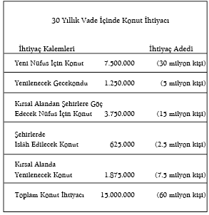

ÖNSÖZ
Mimarlık varlığın bütün alanlarını kapsayan bir disiplindir. Bu sebeple başarılı bir mimarlık faaliyetinin gerçekleşmesi, kültürel oluşumun temel bir göstergesidir.
Yapılar hayat düzenimizin çerçevesini oluştururken, hayat tarzımızı da şekillendirir. Yapılar fizikî âleme ait kanunların icaplarına göre oluşur. Bu icaplara göre düzenlenmemiş herhangi bir yapının var olma şansı yoktur. Ancak var olması daha öncelikli bir husus, yapının vücuda getirilmesini gerektiren biyo-sosyal bir faktördür. Yapı ya barınmak için yahut herhangi bir sosyal, kültürel ve iktisadî faaliyeti barındırmak için gerçekleştirilir. Bu alanlara ait meseleler bile mimarîyi gerçekleştirilmesi zor bir sanat düzeyine yükseltmeye yeterli iken, insan hayatının biçimi ile insanın vücuda getirdiği mimarî çerçevenin biçim özellikleri ve insanın tabiî-ruhî âlemi ile terbiye edilip biçimlendirilmiş psişik âlemine ait biçim özellikleri ayrılmaz şekilde birbirlerine bağlıdır. Ruhî âlemi ise insanın inanç âleminin, varlık tasavvurunun, değerler hiyerarşisinin yapısına göre şekillendirilir.
Bu karmaşık meseleler yığınının içinden mimarîyi belirleyecek temelleri ancak yüksek kültür çağları tarif edebilmiş ve bu temeller üzerinde kültürün bütünlüğünü tesis eden üslup temellerini oluşturmuş. Şahsî ve sathî gösterişçiliğin hâkim olduğu 20. asırda -ülkemizde ve dünyada- mimarîyi vücuda getirmek, insanlara gülünç olaylar seyrettirerek onları eğlendirmek, şaşırtmak vs. ile bir tutulmaktan bile gerilere itilmiş ve dünya böylece insanlık tarihinde daha önce benzeri olmayan bir kültürel kirlenmeye uğratılmış bulunmaktadır.
Bu kirlenme; kendi inanç temellerinden kopartılan, inançlarının özüyle bağları kesilerek yabancılaştırılan ve İslam’ın affedilmez günah saydığı şirk’in açık ve gizli şekillerine kendisini kaptırmış, gizli sömürge durumuna düşmüş olan İslâm ülkelerinde en vahim ve tahripkâr boyutlara ulaşmıştır.
Kültürel kirlenme, özünde, teknolojiyi kendi başına yaratıcı güç addetmek gibi temel bir yanılgıyı taşımaktadır. Şehre, toprağa, dünyaya Allah’ın azametinin ve Cemâl sıfatının tecelli ettiği yerler ve insanların idrak edeceği alanlar olarak bakmak yerine bugün, bu alanlara ait meselelere bürokrat ve teknokratların gözlükleriyle bakılmakta ve bürokrasinin işleyiş ve kurallarına aslî güç payesi verilmektedir. Toprağı, dünyayı ve şehri gayrimeşru bir şekilde kazanç kapısı olarak görmek, bu temel yanılgıları sürdüren müesseseler vasıtasıyla halka zorla kabul ettirilip yaygınlaştırılmakta; yayın ve telkin araçlarıyla çok boyutlu bir kirlilik-yanılgılar-hastalıklar zinciri herkese zorla benimsetilmektedir.
Mimarlığın, “İnsanın dünyadaki esas vazifesi dünyayı güzelleştirmektir” hadis-i şerifinde tarif edilmiş çerçeve içinde oluşmasını sağlamak, sosyal, ruhî ve inanca taalluk eden meselelerini doğru olarak ortaya koymak ve yanılgıları bertaraf etmek uğrunda çaba sarf etmek benim için kaçınılmaz görev olmuştur.
Elinizdeki kitap bilfiil mimarîyi vücuda getirmek için gerekli bilgi ve yetenekleri geliştirmek ve mimarîyi gerçekleştirmek için uğraşırken adım adım fark edilen hastalıkların teşhisi ve çözüm yollarının tayini için yazılan ve söylenenlerin bir bölümünün derlenmesinden oluşmuştur. Yazılar çeşitli alanların meselelerine yönelik olup farklı tarihlerde kaleme alınmıştır.
Bu nedenle varlığın sınırsızlığı içinde yaşadığımız dünyayı güzelleştirme şeklindeki aslî görevini müdrik herkesin, mimarların ve diğer sorumluların katkılarıyla zenginleşecek düşünce sahasına mütevazı bir katkı ve yeni bir idrakin oluşması yolunda bir ilk adım teşkil etmesi bile bu kitabın vazifesine yerine getirdiği anlamına gelecektir.
BİRİNCİ BÖLÜM / İSLÂM’DA ŞEHİR VE MİMARÎ
İslâm Mimarîsi Üzerine Düşünceler1
Giriş
İçinde bulunduğumuz yüzyılda İslâm ülkeleri, kültürel ve dinî kimliklerini reddetmelerinin sonucu olarak, kendi tarihî mimarlık miraslarını Batılı yayınlar ve araştırmalardan öğrenmek ve bunlar vasıtasıyla geçmişlerini değerlendirmek gibi garip bir durumla karşı karşıya kalmışlardır.
Hiçbir dikkatli değerlendirme ve eleştiriye tâbi tutmadan, gayri İslâmî düşünce ve inanç sistemlerine ait değerler ve tavırların benimsenmesinin sebep olduğu tahribatın İslâm dünyasında çok geç farkına varılmış olmakla birlikte; giderek, Batıya yönelmenin eleştirilmeden kabul edilmesinin hiçbir sorunu çözmediği yolunda bir bilinçlenme de oluşmaya başlamıştır.
Batılı kültürler kendi bunalımlarıyla boğuşup dururken İslâm âleminin görevi, İlahî Hakikat’in ve mazilerindeki tecrübelerin şuuruna varmaya çalışmak olmalıdır. Ancak böylelikle insanlığın kaotik sorunlarına çözüm üretme imkânına sahip olabilirler.
Bu görevin başarılmasının önündeki başlıca engel, kendi tarihî becerilerini (ustalıklarını) kurban ederek Batı kültürünün hâkimiyetini tesis etmeye çabalayan İslâm ülkelerinin aydınları arasındaki yaygın eğilimdir. Bütün İslâm ülkelerinde geçerli olan hâlihazır tutum, gayesi İslâm’ın değerler hiyerarşisi ile hayat tarzını inkâr edip değiştirmek olan gayri İslâmî sosyo-ekonomik modelleri yerleştirmek ve yabancı teknolojileri ithal etmek şeklinde karşımıza çıkmaktadır.
Genelde İslâm’ın kültür tarihi, özelde ise İslâm mimarîsi üzerine Batılı araştırmacılar tarafından çeşitli çalışmalar yapılmakta ve teoriler geliştirilmektedir. Ne var ki, bu araştırmalar ve teoriler İslâm kültüründeki Tevhîd kavramının önemini göz ardı etmektedir. Genellikle İslâm mimarîsi diye bir şeyin söz konusu olmadığı, bunun yerine mahallî mimarî geleneklerin ve onların İslâm öncesinde geliştirilen ilkelerinden bazılarının İslâm cemaatleri tarafından kullanılmaya devam edilmesinin söz konusu olduğu söylenmektedir bize. Oysa bu varsayımlar pragmatizm ve tarihselciliğin son derece sınırlı görüşleri temelinde geliştirilmiştir.
Bu sebeple, elinizdeki makalenin gayesi, İslâm kültürünün evrensel ilkelerini ortaya koymak ve günümüzde vazgeçilmiş olan ilkeleri açıklığa kavuşturmaya yardım etmek için tamamen yanlış olan bu değerlendirmeleri çürütmek ve nihayet, İslâm mimarîsinin İslâm dünyasında bir kez daha canlanmasını temin etmektir.
Ancak şunu da hatırlatmak gerekir ki, bu inceleme sadece bir ön çalışma mahiyetinde olup konu üzerinde daha ayrıntılı çalışmalar yapılmasına ihtiyaç vardır.
Temel Kavramlar
Antik dünyadaki bazı istisnaları bir yana bırakırsak, Batı dünyası, felsefî problemleri dar, sınırlı ve düalistik (iki kutuplu) varlık telakkisiyle çözmeye çalışmış, dikkatini yalnızca maddî ve ruhî düzeyler üzerinde yoğunlaştırmıştır. Batı felsefesine egemen olan rakip, çatışan akımlar bu eksik varlık telakkisinden beslenmiştir. İslâm’daki Tevhîd (birlik) kavramı bu kusurları aşma ve varlığın birliğini kavrama yönünde bir çabayı öngörür.
20. yüzyılın başlarında Yeni Ontoloji ekolünün tekrar açıklığa kavuşturduğu gibi, varlığın dört düzeyi vardır: maddî düzey, biyo-sosyal düzey, psikolojik düzey ve ruhî-aklî düzey. Her düzeyin temel karakteristiği, varlığını gerçekleştirdiği ve bir önceki düzeyde mevcut olmayan düzeye özgü kanunlar ve yeni (novum) unsurlar tarafından belirlenmiştir.
Maddî düzey fizik ve kimya kanunlarıyla karakterize edilir. Biyo-sosyal düzey, maddî varlık düzeyininkilere ilaveten (sınırsız çeşitlilik ve zenginlikteki) yeni kanunlarla var olma imkânına sahiptir. Canlı varlıkların ortaya çıkmasıyla birlikte vücut bulan psikolojik düzey, maddî ve biyo-sosyal varlık düzeylerinin kanunları uyarınca gelişen psikolojik hadiseleri içerir. Korku, aşk ve benzeri içgüdüler bu tabakanın unsurlarıdır.
Ruhî-aklî varlık düzeyi ise insan’la ilişkilidir. Din, ahlâk, sanat ve bilgi bu son düzeyin problem alanlarıdır. Bu düzeyde bütün hadiselerin kendi özel kanunları vardır. Her düzeye var olma imkânını veren, ama onları daha önceki düzeylerin kanunlarından özgür kılan bu nihaî düzeydir. Ruhî varlık düzeyinde bu özgürlük, akıl sahibi insanın sorumluluğunun kaynağıdır.
Fakat her düzey, varlığını ancak aşağıdaki düzeylerin var olmasına borçludur. İnsanın seçme ve karar verme özgürlüğü, kabiliyeti ve sorumluluğu ancak bütün varlık düzeylerinin kanunlarının hudutları dahilinde var ve aktif olabilir.
İslâm’da insana verilen “her şeyi kendi yerine koyma” (adalet) sorumluluğu tevhîd bağlamında anlaşılmalı ve yerine getirilmelidir. Allah’ın iradesine mutlak teslimiyet de aynı esas üzerinde gerçekleştirilmelidir.
Sonuç olarak, mimarî, tüm varlık düzeylerinde, özellikle de insanın bilinç ve bütün tarihinin mekân-zaman bağlamında tüm varlık problemleri dikkate alınarak tahlil edilmelidir.
İslâm mimarîsinin özelliklerini anlayabilmek için öncelikle şu soruları açıklığa kavuşturmak gerekmektedir:
a) Mimarî nedir?
b) İslâm mimarîsi nedir?
c) İslâm mimarîsi ne değildir?
Her üç soru da, girift, karmaşık ve kapsamlı problem alanlarını kuşatmaktadır. Açıktır ki, “uzmanlaşma çağı” denilen günümüzün, ayrıntıları öne çıkaran analitik yöntemleri kullanıldığı takdirde bu soruları cevaplandırmak, açıklığa kavuşturmak ve anlamak daha da güçleşecektir. Bu yüzden, araştırmamızın ilk safhasında, İslâm sanatları ve mimarîsi ile temel özelliklerinin “genetik” kaynaklarını anlamak, keşfetmek ve tanımlamak amacıyla temel sorunlar üzerinde yoğunlaşmak zarureti vardır.
Mimarî Nedir?
Mimarî, insanın çevresini biçimlendirme çabasının ürünüdür. Varlığın bütün veçhelerini, karmaşık ve sınırsız alanları kuşatan bir disiplin olan mimarînin herhangi bir basit şematik formülle tanımlanması uygun olmaz. Bu sebeple, yukarıda verilen tanım, dört başı mamur ve kategorik bir tanım olmaktan ziyade sorun alanına genel bir yaklaşımın ifadesi olarak anlaşılmalıdır.
Varlığın bütün alanlarını kapsayan ve hayatın getirdiği sorunlarla sürekli girift ilişkiler içinde olan mimarî, maddî, biyo-sosyal, psikolojik ve ruhî-aklî varlık düzeylerinde geliştirilir.
İnsan, mimarîyi geliştirirken olsun, karar verme sürecinde olsun, kaçınılmaz olarak dikkate aldığı sorunların farklı yönlerini değerlendirmekte ve nihayet çeşitli seçenekler arasından tercihlerini yapmaktadır. Tercih ve kararların, özünde, kendi inanç sistemiyle ilgili bir referanslar sistemine dayandırılmış olması gerekmektedir. Faydacı ve pragmatik referans noktalarına dayalı bir değerlendirme, insanı herhangi bir türden oportünistik sömürü alanlarına yöneltebilir. Öbür yandan, akılcı yaklaşımlara dayalı değerlendirmeler ise zihin, “ratio” ve onun yönlendirmelerine nispet olunan değerlere göre biçimlenecektir.
Bu bağlamda, insanın kararlarının, onun inançlarının gerçek yansımaları olduğunu açıklığa kavuşturmak büyük önem taşımaktadır. Böylece mimarî, farklı varlık düzeylerinde ortaya çıkan problemleri değerlendirmek, tercihlere dayalı kararları almak ve mümkün seçenekleri ayıklamak suretiyle geliştirilen bir insan ürünü olması hasebiyle estetiğin ve teknolojinin alanında yer almaz. O, ahlâk ve din alanının bir ürünüdür.
Biyo-sosyal düzeyin ihtiyaçlarını, onun kanunlarını dikkate alarak çözmek ve çözümlerini maddî düzeyin kanunlarına dayandırmak, aynı zamanda da, psikolojik ve ruhî-aklî düzeylerin, örneğin tutumların, ruhî yönelimlerin ve inançların kanunlarıyla rehberlik etmek gerekmektedir. Yani, bir mimarî yaklaşımın, varlığın bütünlüğünü ve kuvvetler hiyerarşisini göz önünde bulundurması zarurîdir.
Bundan dolayı, maddî, biyo-sosyal ve psişik varlık düzeylerine ait problemlerin tanımları, her düzeyin kanunlarıyla mükemmel bir uyum içinde geliştirilen tercihlerin değerlendirilmesi ve bu varlık kanunlarının kullanımına yönelik tavırlar insanın inanç sistemi tarafından kontrol edilir. İnanç sistemi ise dini, kozmolojiyi ve varlık telakkilerini ihtiva etmektedir.
Mimarîde Malzeme
Her mimarî eser bir yapı olarak malzemelerden mürekkeptir. Temeller, duvarlar, döşemeler, raflar, pencereler ve kapılar, ısınma ve havalandırma sistemleri yahut elektrik tesisatı, sıhhî teçhizat, kısacası malzemeler ve sistemler binada bir araya gelir. Hepsi de, amaçlarını başarmak ve aynı zamanda, amaçlarına ve kullanıcının ihtiyaçlarına hizmet edebilen bir binayı oluşturmak üzere düzen içinde bir araya toplanır.
Bir binanın konstrüksiyonunu mümkün kılan bilgi ve becerilerin bütünlüğü “inşaat teknolojisi” adını alır. Malzeme bilgisindeki ve kullanım tarzlarındaki gelişmeler her biri bir uzmanlık alanına ait olan yeni, karmaşık inşa metotlarının doğmasına yol açar. Sonuç itibariyle, mimarın temel sorumluluklarından birisi olan inşaatta mühendislik faaliyetlerini koordine etme ihtiyacını duymanın neticesi olarak bina, farklı mühendislik alanlarının uzmanları arasındaki yakın işbirliğinin ürünü olur. Mimar, koordinasyon görevini ifa edebilmek için kaçınılmaz olarak kullanıcının ihtiyaçlarını ve tercihlerini anlayacak, halihazırda var olan sınırlılıkları değerlendirerek bunlar arasında bir hiyerarşi tesis edecektir.
Şurası aşikârdır ki, bu bağlamda alınan kararlara, esasen, daha üst varlık düzeylerinin alanındaki kullanıcının yahut mimarın ilhamları yol gösterir. Dolayısıyla, malzeme ve teknolojilerin uygun yerlerde kullanılması aynı zamanda, üst düzeylerin kanunlarına göre yapılan değerlendirmelerle tayin edilir.
Mekân Organizasyonu
Belirli bir faaliyetin mekân organizasyonu için duyulan ihtiyaç yahut koruma ihtiyacı olarak belirli bir amaç için bir ilham, bir insan isteği, bir ihtiyaçla ilgili eski bir kararın varlığı, malzeme ve teknolojileri kullanmak suretiyle biyo-sosyal varlık düzeyinin problemlerini çözmeyi amaçlayan bir binayı gerçekleştirmek için zarurîdir. Barınak, ev ve işyerlerine olan talep, belirli bir yer ve zamanın şartlarına göre formüle edilmiş belirli bir toplumun, belirli bir kullanıcı talipler grubunun kendine özgü ekonomik şartları altında gelişerek nihaî formuna kavuşur. Mimar bu talebi, mevcut sınırlamaları dikkate alarak projesinde yansıtır.
Sonuç itibariyle, binanın formu ve hacmi olduğu kadar pencere, kapı gibi unsurları, mühendislik standartları, bu standartların kullanılma ve yerleştirilme biçimleri tahlil edilir ve bu ihtiyaçlar ile talepler doğrultusunda kararlar alınır.
Bu sebeple, biz, biyo-sosyal varlık düzeyinin problemlerini ele alırken maddî düzeyin problem ve tercihleriyle ilişki içindeki standartları dikkate alarak özel proje yaparız ve kararlar alırız. Bu noktada, diğer düzeylerin problemlerini ihmal etmek gibi bir sapma, bizi fetişistçe tutumlara kadar götürebilir.
Binada yerine getirilen hizmetler çok çeşitlidir. Bu hizmetler tek yanlı, basit veya karmaşık olabilir. Bir yol, basit olarak ele alındığında üzerinde insanların yürüdüğü bir yüzeyden müteşekkildir. Öbür yandan, bir köprü çok daha karmaşık bir yapıdır, zira bir yolun verdiği hizmetleri yerine getirmesinin yanı sıra bir engeli de aşmamızı sağlamaktadır. Ev, fiziksel ve biyo-sosyal ihtiyaçlarla ilgili özel ve çok daha karmaşık bir hizmetler manzumesini yerine getirmektedir. Öbür yandan, temel çözümlerin bu farklılaşmış ihtiyaç ve amaçlara göre kullanılması ve seçilmesi gerekmektedir.
Dolayısıyla uyuma, oturma, misafir ağırlama, çalışma mekânları veya çocuk odaları gibi insan faaliyetlerinin farklı tarzda gerçekleştirildiği biyo-sosyal işlevler evin planimetrik organizasyonunu tarif eder.
Evlerin bahçelerle, yollarla, sokaklarla ve komşularla ilişkisi, sosyal merkezlere olan mesafesi, toplumların ilhamlarına, biçim ve sosyal organizasyona bağlıdır.
Bütün karar dizileri bir bölgeden diğerine, bir dinden yahut ülkeden diğerine bu problemlerle ilişkilidir. Bir iklimde gerekli olan gölgeli yollar, farklı şartları haiz olan bir diğerinde uygun düşmeyebilir. Müslüman bir ailenin hayat tarzı gayet tabiî olarak Müslüman olmayan bir aileninkinden farklı olacaktır.
Bu sebepten binaların, aralarındaki dengeli hiyerarşiye göre insanların biyo-sosyal ihtiyaçlarına hizmet edecek tarzda dizayn edilmesi gerekir; bu hiyerarşi ise, daha üst varlık düzeyleri tarafından belirlenmiştir.
Halihazırda Müslüman olmayan modern kültürlerde hâkim olan eğilimlerin aksine, biyo-sosyal düzeye ait olan ve ekonomi alanına dahil olan kararların, münhasıran kanunlarını ve kuvvetlerini dikkate alarak tayin edilmediklerini yeniden vurgulamamız gerekecektir. Aksine bunlar aynı zamanda, psikolojik ve ruhî-aklî varlık düzeylerine ait güçlerin etkisi altındadır.
İnançların Rolü
İnsan çevresini biçimlendirirken ya psişik hayat güçlerinin etkisi altındadır yahut doğrudan doğruya onlar tarafından yönlendirilmektedir. İnançları, varlık ve kendisi hakkındaki telakkisi, değerler hiyerarşisi, psişik hayata ait davranış ve tavırları ile fikrî-ruhî varlık düzeyleri, aile hayatının özelliklerini ve aile fertleri arasındaki ilişkileri etkiler; onlara şekil verir.
Ailenin yapısı, çocukların eğitimi, kültürel amaçlar, yaşlılara saygı ve mahremiyet şuuru, bir Müslüman evinin planimetrik organizasyonuna yansır. Bir evin mahremiyeti ile mahfuz ve mahrem bir mekân olarak ev anlayışı birbiriyle ilişkili ifadelerdir.
İki ev arasındaki mesafe, her tür mevzuat ve idareyle ilgili sınırlamalardan azade hipotetik durumda, iki tür güç ve tavrın sonucudur: Birincisi korku, işbirliği ihtiyacı ve sosyal dayanışma, ikincisi ise güvenlik, mahremiyet ve ferdiyettir.2 Bu nedenledir ki, evler arasındaki fiziksel uzaklık, sokak ve mahallenin seçilmesiyle ilgili kararlar, bir binanın nasıl konumlandırılacağı gibi hususlar, komşuya karşı saygılı bir tavır için, güvenli bir özel hayat için kullanıcının arzularına bağlıdır.
Böylece insanın kozmolojik idraki ve inançları, davranışlarında yansıyan psikolojik tavırlarının karakteristiğini tanımlar ve tayin eder. Bu, onun karar verme ve tercihler sisteminde ve tasarlayıp ürettiği sanat eserinde ortaya çıkan bir özelliktir.
Sadelik, yumuşaklık, tevazu, çekingenlik ve mahcubiyet, vahşîlik, kısıtlama, nezaket, zevk, umut, dindarlık ve benzeri insanî duygular, tavırlar ve haller sanat eserine “biçim ifadeleri3 olarak yansır.
Bir teknolojinin yahut da bir malzemenin seçimi, aynı zamanda insanın o sırada baskın olan psikolojik durumuna tâbidir.
Teknik ve sosyo-ekonomik problemler karşısındaki sözde objektiflik, varlık kuvvetlerinin hiyerarşisinde belli bir inanç sistemini gösteren başka bir örnektir.
Kararların ürünü olarak yalnızca maddî, teknolojik ve biyo-sosyal varlık düzeyleriyle sınırlı olan bir bina, teknolojik bir muvaffakiyet olmaktan öteye geçemez ve bir mimarî eser hüviyetini kazanamaz. Çünkü mimarî, varlığın bütün yönlerini kucaklayan bir disiplindir.
Bina; mimarın ve kullanıcının müşterek ürünü olup, rasyonel bir esas ve açıklama olmadan tasarıma dahil edilen irrasyonel kararları içerir. Mimar ile kullanıcının bu tür konular üzerinde durması, bilinçdışı değerlerin önemine işaret etmektedir. Söz konusu tercihler aslında özel tavırların, zımnî kozmolojik idrak ve inançların dolaylı yansımalarıdır.
Bina teknolojisinin tabiî, mütevazı, çekingen, gösterişli alternatifleri, malzemelerin mütevazı, sade, çekingen kullanımı üretim sırasında ifade edilebilir. Söz konusu çeşitli tavırlarla ilgili tercihleri ve bunların geliştirilmesini mimarın yahut kullanıcının psikolojik durumu tayin etmektedir.
Öbür yandan tercihler, malzeme ve teknolojilerin problemleriyle ya da biyo-sosyal varlık düzeyinin problemleriyle şartlandırılmış da değildir. Bunun yerine, tercihlerin ifade edilişleri teknolojik çözümlere yahut biyo-sosyal tercihlere yansır. Mesela alçakgönüllülük, mahcubiyet, sadelik yahut cesaret ve övünme gibi tutumların kendi yansımalarını çevremizdeki biçim ifadelerinde nasıl bulduklarını gözlemleyip hatırlayabiliriz.
Bu psikolojik durumlar daha alt varlık düzeyinden bağımsız olarak gelişir ve fakat kendi tercihlerini belirlerken; dinle, yani kozmolojik idrak ve inanç sistemiyle, değerler hiyerarşisiyle ilgili olan üst düzeyin ürünleri olmaktadırlar. İnsanın ruhî hayatı, davranış ve tutumlarına yansır ve yalnızca modern psikolojinin tanımladığı faktörlerin ürünü olmayıp büyük ölçüde dinî bilinç ve inançlarla, yaratılış ve var oluşla ilgili kozmik idraklerle biçimlenir.4 Dinî inançlar, bütün değer sistemlerinin ve tercihlerin, bilinçli insanın bütün eylem tarzlarının, davranışlarının, bilgi ve yeteneklerinin, ruhî hayatının belirleyicisidir.
Bir sanat eserinin üslûp özelliklerinin ilişkileri, karşılıklı bağımlılıkları, bir karar vericinin (mimarın) tavır alışı aslî önemi haiz konulardır. Bu suretle insan, çevresini, uyarınca hareket edip davranışlarını sergilediği kendi kozmik idrakiyle ahenk içerisinde organize eder ve biçimlendirir. Bu itibarla sanat ve mimarî, ahlâk ve din alanına ait disiplinlerdir.
Üslûp ve Varlık Münasebeti
Varlık, kâinat ve yaradılış telakkisinin biçim üzerine doğrudan yansıması, üslûbu meydana getirir. Burada biz, kısaca üslûbun genetik yapısını tahlil etmeye çalışacağız.5 Bu çalışmanın kapsamlı bir inceleme olmaktan uzak olduğunu göz önünde tutarak şimdilik konuya genel terimlerle temas etmenin önemine ve gerekliliğine inanıyoruz.
Üslûp, her türlü pratiğin (amel) ve bütün pratik ve davranış alanlarındaki her türlü kararın biçim ifadesidir. Bu sebeple, dinî karakteriyle mimarî de, üslûp özelliğini kazanır; böylece var olur.
Genel ifadesiyle üslûp, gerçekliğin iki organize edici ilkesi olan bir zaman ve mekân anlayışıdır. Bu iki kategori sayesinde insan kendi ürününü geliştirir. Bu sebeple sanat, mekân bilincidir ve içinde mekânın kavrandığı zaman vasıtasıyla organize edilmelidir.
Mekânın, zamanın bir işlevi olarak organize edilmesi demek olan “ritim”, sanat eserinin en üst kanunudur. O bir bağımsız birimler kompleksi tarafından vücuda getirilir; spesifik bir mekân oluşturan bütünlük içerisinde ortaya çıkar. Genişliğin ritmik düzenlemesine simetri denir. Bu iki düzenin ilişkisinde kütlelerin organizasyonu ve yükseklik oranının ritmik düzenlemesi ise derinlikle ifade edilir.
Üslûbun ilk ilkesini oluşturan bir sanat eserinin üretiminde dört mekân bütünlüğü telakkisi mevcuttur. Sanat eseri bir düzlem (satıh) üzerinde var olabilir, onun etrafında kendi ferdî mekânını oluşturabilir; sınırlı, kısmî mekânını oluşturabilir ya da sınırsız, sonsuz genel mekân telakkisinin bir ifadesi olur.
Mekânın bütünlüğü, üslûbun ilk ve en yüksek kanunudur. İkinci kanunu ise bütünlük ile ferdiyet arasındaki ilişki gibi bütüncül (total) mekân ile onun icra edilmesi arasındaki mevcut ilişkiyi izah etmektedir.
Bütünlük ve varlık telakkisi içerisinde ferdiyetin mevkiiyle, mekanik ve organik bütünlük telakkileriyle alakalı iki mümkün telakki, bağımsız birimlerin birbiriyle ve mekân içerisindeki bütünlüğüyle ilişkili olarak düzenlenmesiyle ilgili ilkeleri tesis eden iki üslûba, “kübistik” ve “organistik” üslûplara tekabül eder.
Kübistik düzenlemede, bağımsız birimler bütünlüğü tesis ederek ferdiyetten mahrum olarak bulunur. Kübistik bir düzenlemenin özünde mevcut olan girift ilişkiler, buna unsurlar ilave edilse yahut biçim değişse de zarar görmez. Bütünlük ya kütle-ferdlerle ya da ferd-olmayanlarla kurulmuştur.
Öte yandan, organistik düzenlemede ferdler, kendi özel yerlerini bütünlükle ilişkili olarak muhafaza ederler. Böylece kendi özelliklerini yitirerek asimile olurlar. Böylesi bir bütünlük, unsurları, parçaları yahut ölçekleri değiştiğinde tahrip olacaktır. Bütünlük, kendilerini yaratılmış birlikten azade kılabilen parçaların bütünlüğü olarak üretilir.
Kübistik tavır, insanı cüz’î bir varlık olarak gören ve ferdin yüceliğini savunan İslâmiyet’te özel bir değer kazanır.
Ritmik organizasyon, yani bir sanat eserinin genişlikteki simetrisi ile yükseklikteki orantısı, kübistik ve organistik üslûplarda farklı farklı ele alınır.
Kübizmde, basit parçaların her biri aynı vurguya sahip olarak yan yana durur.
Organistik simetride ise bir nesne temel önem kazanır ve tüm diğer tâbi parçalar buna uygun olarak düzenlenir.
Perspektifte olduğu gibi, mekânda da kütlelerin ritmik organizasyonuna destek olan kübizm, organistik bütünlüğü reddeder; genel mekânı ise, unsurların karşısında yahut üzerinde düzenlenecek düzlem olarak anlar. Figürler; çizgiler yahut gruplar halinde yahut da ötede olmak yerine bir başkasının üzerinde organize edilir. Perspektif derinliği yükseklikteki düzenle ifade edilir.
Bu yazıda, yukarıda bahsettiğimiz mekanik ve organik bütünlük telakkilerinin yanı sıra, statik ve dinamik bütünlük telakkileri ile statik ve dinamik üslûplar (kübistik ve organistik üslûpların alt-sınıfları olarak) tahlil edilecektir.
Statik varlık telakkisinde sınırlı objektif varlık ve ferd aynı zamanda fiilîlik (actuality) olarak kavranan sonsuzun yanı sıra bir fiilîliktir.
Sonuç olarak, objektif varlık ve ferd kendi özelliklerinden mahrum olmayan statik bir ifade kazanır. Statik birlik bu tür ferdî parçaların dengeli ilişkisiyle kurulur.
Varlık ve sonsuzluk kimliğini ortaya koyan dinamik üslûpta parçalar bütünlükten kopamaz hale gelir ve kendi ferdiyetini, dolayısıyla önemini yitirir. Parçalar, bütünlüğe ulaşmak için mütemadiyen hareket halindedir.
Bu dört tür bütünlüğün seçici kombinezonu, statik ve dinamik ile kübistik ve organistik bütünlük kombinezonları sanat tarihinde çeşitli üslûpları biçimlendirmiştir. Bu kombinezon, her kültürel dönemin kozmolojik idrakiyle belirlenir, zira hayat telakkisi, kozmolojik idrak kültür ve üslûbun özünü belirler.
Bu bağlamda objektif ve aşkın varlık telakkileri -ki bunlar insanlık tarihinde birbirini takip eder- zikredilebilir.
Basit kompozisyon, objektif hayatın dolaysız idraki vasıtasıyla, yani varlığın sadece fiilî olmakla sınırlı olduğunun kabul edilmesi ile yaratılır. Bütünlük, kendi ferdî mekânını yaratan parçaların kompozisyonu ile başarılır.
Aşkın (transcendental) telakki, yalnız parçaların ferdî mekânlarını değil, aynı zamanda genel mekân yani bütünlüğün varsayıldığı kutupsal (polar) kompozisyonu da meydana getirir. Ferdî mekân genel mekânla kutupsal bir ilişki içerisindedir.
Bu noktada, kutupsal kompozisyon kanununun tezahürü olarak objektif varlık üzerinde İslâmî aşkın kozmolojik idrakin yansıması ile vücut bulan “ornamentalism” (tezyînîlik) konusundan bahsetmemiz gerekiyor.
Tevhid İlkesi
“Allah’ın mescidlerini, yalnızca Allah’a ve ahiret gününe iman eden, namazı dosdoğru kılan, zekâtı veren ve Allah’tan başkasından korkmayanlar imar edebilirler. İşte, hidayete erenlerden oldukları umulanlar bunlardır.” (Tevbe 9/18)
Bu âyet-i kerîme genel anlamıyla mescidi inşa etmelerine izin verilen insanları, yani müminleri tarif etmektedir.
Müslümanların tutumları İslâm’da Şeriat ve Kur’ân-ı Kerîm, Hadîs ve Sünnetten istinbat edilen akaidle tarif edilmiş durumdadır.
İslâmiyet’in temel prensibi olan Tevhid (Birlik) İslâm mimarîsine de yansımış olup bütün varlık düzeylerine ait problemlerin bütünlüğünü kapsar ve cevaplandırır. Bütün varlık düzeylerine ait problemleri kapsamayan yaklaşımlar İslâmî olmaktan çok fetişistiktir.
“Allah ile beraber başka ilahlar edinme, yoksa kınanmış ve kendi başına bırakılmış olursun.” (İsrâ’ 17/22)
İslâm mimarîsi, maddî, biyo-sosyal, psikolojik ve ruhî-aklî varlık düzeylerinin problemleriyle ilgili spesifik tutumlar ve uygun değerlendirme sistemlerine sahiptir. İslâm tarihi boyunca, İslâm âleminin değişik bölgelerinde çeşitli nesiller, çevrelerini temel İslâmî ilkelere göre biçimlendirmeye çalıştı ve çok sayıda mimarî eser vücuda getirildi.
Sonuç olarak, İslâm’ın kültürel ve sanatsal başarılarına İslâm kozmolojisinin ve inanç sisteminin dışında kaynaklar icat etmeye çalışan her türlü tarihselcilik, tek taraflı kalmaya mahkûmdur ve sanat formlarının ilişkileri ile onların genetik temellerini anlayıp tanımlamak yeteneğinden yoksundur.
İman ve amel (inanç ile uygulama) arasındaki, İslâm akidesi ile İslâm mimarîsi arasındaki, zorunlu ilişkinin yansımasını kurabilmek için meseleyi daha kapsamlı bir biçimde, bütünlüğü içerisinde incelemek büyük önem taşımaktadır.
Kutsal Sanat
İslâm mimarîsi Kutsal Sanat’ın bir disiplinidir.6 Kutsal Sanat terimi, salt dinî nesnelere yahut yapılara, camilere ve mescidlere yahut da dinî merasimlerde kullanılan sanat ürünlerine tahsis edilmiş sanat eserleriyle sınırlı değildir. Aslına bakılırsa, İslâm’daki Tevhid kavramı kutsal ile seküler arasında böyle bir ayrıma gidilmesine izin vermez, çünkü yeryüzündeki her nokta ve varlığın her ânı Kutsal Varlığın bir tecellisidir.
“Doğu da Allah’ındır, batı da. Her nereye dönerseniz Allah’ın yüzü (kıblesi) orasıdır. Şüphesiz Allah kuşatandır, bilendir.” (Bakara 2/115)
Bu sebeple Müslüman’a ait bir mimarî ancak Tevhid kavramı üzerinde geliştirilmelidir.
Belirli veya özel türden elverişsiz bir değere yahut güce atıfta bulunulması İslâm’da yasaklanmıştır. İslâm mimarîsi, ancak, şahsî ihtiraslardan, gururdan, her türlü açık yahut gizli fetişistik yabancılaşmalardan (şirk) arındırılması gereken tasarım metodolojisine yansımış İslâmî bir tavırla başarılabilir.
“Yeryüzünde kibirlenerek yürüme, çünkü sen ne yeri yarabilirsin, ne de boyca dağlara ulaşabilirsin.” (İsrâ’ 17/37)
Her şey, mimarî eserin her unsuru bu bağlam içinde değerlendirilmeli, eserin bütünlüğü içindeki doğru konumuna oturtulmalı, böylece her tür fetişizmden kaçınılmalıdır.
“Allah’tan başka, kendisine ne zararı dokunan, ne de faydası olan şeylere yakarır. İşte bu, en uzak bir sapıklıktır.” (Hac 22/12)
İnsan, sadece Allahu Teâlâ’nın emirlerine riayet etmelidir. İslâm, Allahu Teâlâ’nın iradesine sorgusuz sualsiz tâbi olmak, teslim olmak anlamına geldiğinden, mimarın aldığı her karar, sadece “ilmî tevhid” ve “amelî tevhid” ile ulaşılabilen aynı teslimiyeti ifade etmek durumumdadır.7
İslâm mimarîsi, kontrolden çıkmış “ratio”nun ürünü değildir. İslâmî-dinî akidelerin, İslâm’ın kozmolojik telakkilerinin ve tevhid anlayışı bağlamındaki İslâmî tavırların yansıması ve ürünüdür. Tevhid, hem Allah’ın iradesine teslim olmayı, hem de, her şeyin kendi doğru yerinde bulunduğu bir düzenin tesisini ifade eder. Mimarî, yaratılmış âlemi “olduğu gibi” anlayan ve değerlendiren akıllı ve sorumlu Müslüman tarafından tasarlanıp uygulanır.
“Şüphesiz göklerin ve yerin yaratılışında, gece ile gündüzün art arda gelişinde temiz akıl sahipleri için ayetler vardır.” (Âl-i ‘İmrân 3/190)
Dolayısıyla, Kutsal Varlık ancak kutsal sanatta yansıyabilir.
İslâm Mimarîsi
Sonuç olarak, İslâm mimarîsinde malzeme ve teknolojiler kendi uygun yerlerinde kullanılmak zorundadır. Bu İslâmî tutum, özünde, ekonomik ve pragmatik matrislerin optimizasyonuna ya da tercihler kompleksinin değerlendirilmesine dayanan modern Batılı teknolojik yaklaşımlardan tamamen farklıdır. Her uzman, kendi bilgi alanında, faydacı amaçlar sistemine göre tasarlanmış genel bir şemaya göre bir araya getirilen alternatifler teklif eder.
Modern metodolojiler -ki parçaların analizi ile bu parçalardan senteze varma çabalarını kapsar- bir yandan 20. yüzyılın faydacı pragmatizmlerini üretirken, öbür yandan da, organize olmamış (unorganized) rasyonalizmi sürdürmektedir.
Kolayca gözlemlenebileceği gibi, bu sözde “modern bilimsel” yaklaşımlar yaradılıştaki Birliğin bilincinde olmaktan çok uzaktır ve bu süreç içerisinde planlanan sözde sentezlerin analizleri maddî ve biyo-sosyal düzeyle sınırlıdır. Onlar, Varlığın Birliği içinde oldukları gibi, tam anlamıyla malzemelerin tabiatını ve uygun kullanım ve formlarını anlamayı imkânsızlaştıran Tevhid’in ve Nûr-i İlahî’nin bilincinden yoksunlukta “ratio” tarafından idare edilirler. Tam tersine, malzeme ve teknolojiler, sahte beşerî gururun araçları yahut fetişistik güçler olarak tasarlanmıştır.
“Her şeyi doğru yerine koymak” (adalet), İslâm mimarîsini tasarlamak için atılması gereken ilk adımdır. Bu da ancak, her şeyi diğer şeylere göre doğru yere koymakla; sadece maddî varlık düzeyinin unsurlarına göre değil, aynı zamanda biyo-sosyal ve dinî hakikatlere, kanunlara göre doğru yere koymakla mümkündür.
Bir örnek vermek istiyorum. Duvar inşasında kullanılan taş, Rönesans’ta taşın sert özelliğini vurgulamak için, aşırı bir şekilde işlenmiştir; oysa herhangi bir teknik zorunluluk yoktur bunu yapmalarını gerektiren. Halbuki Gotik mimarîde taşın tabiî, maddî karakteri kaçınılması yahut gizlenmesi gereken bir şey olarak anlaşılmıştır ve bu yüzden, Katolik kilisesinin tutumunu temsil eden, maddî varlığı günah olarak kabul eden tasarımcının, mimarın isteğine göre, taş kullanımı ışık ve gölgeyle tesis edilen profillerle değiştirilmiştir.
Mies van der Rohe, aynı zamanda Zen Budist mimarîsinin tutumunu andıran Louis Kahn’ın somut için yaptığı gibi iç dokusunu ortaya sererek ve bunun önemi üzerinde ısrarla durarak, binaları taşla inşa eder.
Öte yandan, İslâm mimarîsi malzemeyi olduğu gibi, neyse o olarak kullanır; niteliklerini inkâr etmeden ve önemlerine aşırı bir vurgu yapmadan. Benzer düşünceler teknolojilerin kullanımında da gözlemlenebilir.
İslâm mimarîsi bundan da ötede, olağanüstü teknolojik bir başarıyı, örneğin, Gotik mimarînin hâkim karakterinde yahut 19. yüzyıl ile 20. yüzyılın yapılarında görülebileceği gibi bir yapının büyük bir span ya da olağandışı bir aydınlığa kavuşturulması gibi bir şeyi amaç edinmez.
Aksine, İslâm’da teknoloji, sadece kendi önem hiyerarşilerine göre gerçek ihtiyaçları karşılamak amacıyla kullanılabilir. Teknolojiler kendi varlık düzeylerinin kanunlarıyla uyum içinde kullanılırken, daha üst düzeylerin kanunlar hiyerarşisine uygun olarak seçilir veya yönlendirilir.
Bu, malzemelerin kullanımında İslâm mimarîsinin hâkim bir özelliği de olan “teknik”e karşı tabiî bir tutumu temsil eder. Tahta ile taş yahut maden ile çini gibi farklı malzemelerin bir arada kullanılmasında amaç, basit ve ilkel zıt ifadeleri yaratmak yerine, tabiî ve sunî olanın, erkek ve kadının tezatlı ama aynı zamanda da birbirine saygılı güzellikleri gibi bireysel güzelliklerini vurgulamaktır.
İslâm Evine Dair
İslâm mimarîsi; malzeme ve teknolojilerin kullanılması ile ilgili olarak bu özel düşüncelerin yanı sıra modern konfor anlayışına benzer yanı olmayan ve amaçları hazcı (hedonistik) kavramlardan tamamen farklı olan biyo-sosyal taleplerin İslâmî bir değerlendirmesinin ve hususî sosyal ihtiyaçların da ürünüdür.
Mimarî, İslâm mimarîsi, İslâm’da insanın Allah hakkındaki şuurunun, varlığın kutsal karakterinin çatısını oluşturur. Allah’ın iradesine teslim olmak insanın iki cihandaki saadetine giden tek yoldur. Bu tutum, onun, tabandan tavana kâinata bakmasını mümkün kılar. İnsanın şuuru, çevresine olan ilgisi İslâm’da temel olduğu için, mesken mimarîsi hayatın bütün yönlerini kapsayacak tarzda geliştirilmiştir.
Ev, harem ve selamlık olmak üzere iki bölümden meydana gelir ve genellikle bir avlu etrafında teşekkül etmiştir. Bir İslâm şehrinde sokakta oturmaya izin verilmez. Oturulacak ve toplanılacak yerler mescitler ve evlerdir. Sokak, evlerle tarif edilmiştir. Avlu, evi dış dünyadan muhafaza eder.
En nefis bir şekilde süslenmiş (dekore edilmiş) ev bile -ki çok mütevazı olanları da vardır- gelecek nesillerin değişen ihtiyaçlarına ve arzularına hizmet edilmesini mümkün kılacak esneklikte tasarlanmıştır.
Evler tahta yahut kerpiç gibi kısa ömürlü ve yeniden kullanılabilen malzemelerden inşa edilirdi. Böylece şehirdeki değişim ihtiyacı da kolaylaştırılmış olurdu. Odaların çok amaçlı kullanımı da genel bir tavrı belirler. Planimetrik şemalar kapalı olmaktan ziyade açıktır. Sonuçta, inşa sistemleri benzer karakteristiklere sahip olup değişime açık bir yapıdadır.
Yeryüzünde hayatın fani özelliğini yansıtan şehir dokusunun bu esnekliğinin yanında, binaların, tabiata saygıyı gösteren topografya ile ahenkli ilişkisine özel bir önem atfedilmiştir. Bu anlayış temelde insanlar arasındaki saygın ilişkide görülür ki, aynı zamanda evlerin birbirine uygun biçimde, uyumlu olarak yerleştirilmesine de yansımıştır.
İslâm Mimarîsinde İklimin Değerlendirilmesi
Bir yandan modern konfor anlayışını kökten reddederken, öte yandan yaşama standartlarını sağlamak ve iklim faktörlerini kontrol etmek, tabiatıyla İslâm mimarîsinin temel ilgi konuları olmaktadır. İslâm mimarîsinde iklim pasif metotlarla kontrol edilmiştir. Bu bağlamda dikkate alınan ölçüler, mimarî ile karşılıklı ilişki içindedir ve onunla bütünleşmiştir. Sözgelimi pencereler, soğuk iklimlerde ısı toplayıcılar olarak tasarlanırken, sıcak iklimlerde güneşin içeriye en az girmesini temin edecek şekilde inşa edilir. Binaların dış kaplaması da, iklime göre ayarlanan pasif metotlar tesis ederek, iklim faktörlerini ayrıntılı olarak göz önünde bulundurmaktadır. Açıkçası, israf ve gereksiz masraflara İslâm mimarîsinde izin verilmez.
“Çünkü saçıp savuranlar şeytanın kardeşleri olmuşlardır; şeytan ise Rabbine karşı nankördür.” (İsrâ’ 17/27)
Çeşitli mahallî şartları karşılayan, farklı malzeme ve teknolojiler kullanan İslâm evinin inşası ve yaşatılması, israfa yer olmayan bir süreçtir. Bu açıdan, binanın bakımı modern yarı sanayileşmiş tekniklerinkinden tamamen farklı bir şekilde gerçekleşir.
Tasarım metodolojileri ile inşa işlemlerinin işletilmesi ve örgütlenmesi arasındaki yerleşmiş korelasyon ve ilişki 20. yüzyılın başında yaşanan çöküşe kadar, İslâm âleminde yegâne inşaat tekniğinin kaynağı olmuştur. 20. yüzyılda bile, bu inşa etme kapasitesinin değerli örneklerine rastlamak mümkündür. Üretim zinciri dikkatle tasarlanmış olup, sosyal ve ahlâkî işlevleri ifa etmeyi amaçlayan bilinçli bir çabanın ürünüdür.
Mesken mimarîsi iki yaklaşım düzeyinde üretilmiştir. Birincisi, en üst kültürel niteliğe sahip standartları geliştirecek merkezî araştırma düzeyidir (üst düzey yaklaşım). İkincisi ise, standart elemanlar tasarlayıp kullanan ve şehir tasarımı ile arazinin mahallî problemlerini hem patronun, hem de içinde oturacak kişinin (kullanıcının) ihtiyaçlarından doğan özel mimarî problemleri çözmeyi amaçlayan mahallî düzeydedir.
Sahici, saf, ahlâkî artizanal üretim faaliyetini doğuran bu yaklaşım, sözde “sanatsal” yahut “bilimsel” mimarî yaklaşımlarla, tasarım teknikleriyle taban tabana zıttır.8
Bu sebeple, İslâmî tasarım ve inşa ameliyelerinde ve tasarım ile üretim sürecinde kaim bulunan hiyerarşide sanat ve mimarînin her türlü oportünistçe istismarından kaçınılmıştır.9
Kullanıcının tasarım sürecine, evin geliştirilmesine katılımı, evin planimetrik ve mimarî özellikleri, meskeni kullananların meskenlerin idaresine iştirakleri de İslâm’ın mesken mimarîsinin aslî imkânlarından bazılarını oluşturur.
Yukarıda zikredilen özelliklerden başka, İslâm evi, mescidin İlâhî güzelliğine sahip olmalıdır, zira İslâm toplumundaki her ferdin güzel bir evde yaşaması gerekmektedir.
Her ev, bir aile için inşa edilir; mahremiyet esastır; evin bahçesi ise Cennetteki sükûnu hatırlatan bir güzellik köşesidir.
Farklı mahallî şartlara ve tasarım ve standartların ilkeleri vasıtasıyla başarılan kullanıcının ihtiyaçlarını değiştirmeye adapte eden esneklikleri ile İslâm evleri, beşerî çevreye yönelik istisnaî bir kültürel yaklaşımın ürünleridir. Bundan dolayı ev, basit bir sığınak olmayıp insanın bütün hayatını kapsayan bir üründür. Evin de içinde yer aldığı şehir çevresi, çocuğun, ailenin ve yaşlıların ihtiyaçlarını karşılamak üzere tasarlanmıştır.
Bununla birlikte onlar, aile hayatına ve onun pratik amaçlarına hizmet edecek yegâne araçlar değildir. Aynı zamanda, hayatın birliği içinde insanî duyguların ve ifadelerin alıcıları ve kaynaklarıdır da.
İnsan ve İslâm Mimarîsi
İslâm mimarîsi, İslâmî tutum, duygu ve ifadelerin yansımasıdır. İnsanın, tıpkı diğer hayvanlar gibi psişik bir hayatı vardır. Bu hayat, sevgi, korku, sempati vs. gibi duygulardan mürekkeptir.
İnsanın psikolojik hayatını, objektif dünyayla duygusal ilişkisi bakımından açıklamayı amaçlayan modern psikolojinin yaklaşımı sınırlı ve elverişsizdir.10 Batılı deneycilik (ampiricism) ve uzmanlaşma temelinde geliştirilmiş olan bu yaklaşım, varlığı birlik halinde kavrayamaz.
Öte yandan, insanın psikolojik hayatı, Müslüman’ın duygu ve tutumlarında yansımasını bulan kozmolojik idrak ve dinî inançlarla kontrol altına alınır. İslâm’da bu psikolojik durumlar ve duygular “biçim ifadeleri”nde incelenmiş, tanımlanmış, belirlenmiş ve değerlendirilmiş, kontrol edilmiş ve yansımış; sonuçta İslâm mimarîsinin doğmasına imkân vermiştir.
Rahman ve Rahim ve Kadir-i Mutlak olan Allah’a inanmak emniyet duygusunun kökenini oluşturur ve sanat formlarına çok-renklilik ve aydınlık, formların berraklığı, hareketlerin sükûnu olarak yansır.
İslâm’ın düzenleyip tanımladığı tutumlar (örneğin, Allah’tan başkasından korkmamak), tasarım sürecinde baskın olan psikolojik unsurlardır. Etkileri, aynı zamanda tevazu, saygı ve sevgi, hayat tarzının sadeliği, topluma ve geleceğe karşı sorumluluk şuuru gibi duygularla ilişki kurarak insan ölçeğinde abidevîlik (monumentality) olarak tezahür eder. Psikolojik estetik alanında İslâm mimarîsinin başarıları ve sınırsız çeşitlilik ve zenginliği, henüz, bütün tarihi nazar-ı itibara alınarak incelenmiş değildir.
Daha önce de bahsedildiği üzere, İslâm’ın psikolojik duygular ve tutumlar üzerindeki etkileri, biyo-sosyal varlık düzeyinin ihtiyaçları üzerinde kurduğu özel kontrol mekanizmasını teşekkül ettirir.
Şurası da aşikârdır ki, İslâm’ın faydalandığı maddî ve teknik tercihlerin başlıca özellikleri benzer genetik kaynaklara sahiptir. Kullanıcının tutumu ile gerçekleşen biçim ifadelerinin ilişkisi, psikolojik varlık düzeyinde bir biçim ifadesi olarak mimarînin bir diğer önemli konusudur.
Bu bakımdan iki ilke İslâmî tutumun temelini oluşturmaktadır. Birinci ilke, “Mescidleri yalnızca Müslümanların imar edebileceğini” ifade eden âyet-i kerîmede, ikinci ilke ise, Müslümanların din-dışı faktörlerce yöneldikleri vecd halinin yıkıcı etkilerinden bahseden hadîs-i şerîfte ifadesini bulmuştur.
Daha önce iktibas ettiğim âyet-i kerime, açıkça, bu üç alanda ahenkli ve bütünleyici bir uyumun mutlak lüzumunu, binanın İslâmî biçim ifadelerini ve tasarımcı ile Müslüman kullanıcının İslâmî tutumlarının ilişkisine dair gerçekliği dile getirmektedir. Yukarıda geçen hadis ise, Müslümanları bir vecd ve istiğrak haline, İslâm bir bilinç dinî olduğu halde, bir bilinçdışı ve tatmin durumuna girmeye zorlayacak yıkıcı etkileri ifade etmektedir.
Varlığının ve çevresinin bilincinde olma, bu bilinçten ve insanın ilk gelişme düzeyi olan davranışların tutarlılığından doğan sorumluluk duygusudur, “vecd” (ecstasy) insanoğlunun tahribi ve inkârıdır.11
Her İslâmî uygulama biçiminde temsil edilen insanın bilincine yönelik İslâmî gerçeklik ve tutum, Ortaçağlardan bugüne kadarki Batılı kültürlerin tavırlarıyla taban tabana zıttır. Gotik, Barok ve Rokoko sürekli olarak, temelde hareketi, sınırlı insan yapısı ürünlerin aydınlatılmış etkilerini ve teknik başarılarını empoze etmek suretiyle egemen olan “biçim ifadeleri”yle insanı etkilemeyi amaçlamaktadır. 19. yüzyılın eklektisizmi ve 20. yüzyılın teknolojik fetişizmi bu bakımdan Batılı Hıristiyan insan anlayışının doğrudan bir devamıdır. Bu yaklaşım, baştan ayağa günahkâr olduğu için ruhban sınıfının, iktisadî yahut idarî güçlerin yönlendirmesine muhtaç bir insan anlayışını sunmaktadır.
Sükûnet İçinde Hareket
Öte yandan İslâm mimarîsi sükûnet içinde harekettir, sınırlılığın berraklığına sahiptir, ifade bakımından mütevazı ve tabiîdir, dramatik yahut dayatmacı olmaktan ziyade güzelliğe ve tezyînîliğe yöneliktir.
Büyüklüğün (azametin) etkilerinin vahşiyane bir şekilde insana dayatılması, merhamet ve gururun, tevazu, mükemmeliyet ve kendi kendine yetmenin aşırı noktalara sürüklenmesi, nötr ve hakikî bir biçim ifadesi elde etmek için İslâm mimarîsinde bertaraf edilmesi gereken yabancılaşmalardır.
Bu İslâmî yaklaşım, varlığın bilinçli bir yaratıcısı ve onun tarihî sekansları ile kendi sorumluluklarının bilincinde olarak insana, dünyaya bilinçli ve özgür olarak yönelme ve bakma hakkını, imkânını verir. İnsan üzerindeki bütün yapay, gayrimeşru ve gayriahlâkî etkileri kökten ortadan kaldıran İslâm, saygıdeğer bir Müslüman birey ve cemaatin arayışı içindedir.
İslâm kozmolojisi, yani Müslüman’ın Allahu Teâlâ’ya, yaratılışa, insanın var oluş içindeki yerine, yeni varlık güçlerinin hiyerarşisine inanması İslâm mimarîsinin genetik kaynaklarını oluşturur.
Varlık, inançlar, bilgi ve idrakin aklî, ruhî ve dinî düzeyi, bütün sanat formlarına yansır. Bu yüzden, İslâm sanatları ve mimarîsi nihaî karakteristiklerine binaen İslâm kozmolojisinin projeksiyonlarıdır.
İnsanın psikolojik hallerinin formda yansıtılmasıyla ortaya çıkan problemler psikolojik estetik alanında bir konu olarak tartışılmıştır. Buna mukabil, Worringer’in Gotik sanata özgü değerler sistemini analiz etme çabası, sadece Gotik sanattaki Hıristiyan kültür değerlerinin yansıması olan mekanizmaları açıklamakla sınırlı kalmıştır.12
Buna karşılık, Worringer’in İslâmî psişik hallerin İslâm mimarîsine yansıma mekanizmalarını tespit etme çabasına paralellik içinde hiçbir araştırma yapılmamıştır.
Bu alanda karşı karşıya kalınan güçlükler gayet iyi bilinmektedir. “Biçim ifadeleri” ve “insan davranışları ve psişik halleri” alanlarında psikolojik varlık düzeyinin sınırlarını tanımlarken ortaya çıkan İslâm inancının ve davranış formlarının, Müslüman’ın psişik hallerini belirlediği olgusu, inançlarla psikolojik tavır alışlar arasındaki farklılaşmayı güçleştirmektedir. Bu yazının sınırlı bağlamında meseleye açıklık kazandırmak ve daha kolay anlaşılmasını sağlamak için zorunlu basitleştirmelere başvurmak zorundayız. Bu sebeple sadece İslâm sanatının biçimini etkileyen bu İslâmî tavır alışları ve “makamları” zikretmeye çalıştık.
İslâm sanatları ve mimarîsinin tarihî ve coğrafî boyutlarıyla İslâmî tavır alışlar ve bilgiyle uygunluk içerisinde gelişmesinin karşılıklı bağımlılığını kurmak için konuyu çok daha ayrıntılı bir şekilde incelemeye ihtiyaç vardır.
Mutluluk, keder, neşe, sevgi, ümit, yeis, sükûnet, sıkıntı, şevk, ihtişam gibi basit psişik hallerin etkilerinin yanı sıra takva, saygı, rıza, vecd, şükran, tevekkül ve dürüstlük gibi İslâmî tavır alışlar ve “makamlar” İslâm mimarîsi temelinde analiz edilmelidir.
Haller, Makamlar ve Mimarî Tezahürleri
Bu meyanda İslâmî psikolojik haller, tavır alışlar, davranışlar ile modern dünyada insanın ihtirası, bayağılığı ve agresifliği gibi davranış ve haller arasındaki çarpıcı farkın hatırlanması, İslâm mimarîsi ile 20. yüzyıl mimarîsini mukayese etme çabalarımızı kolaylaştıracak ve temel farkları doğru olarak ortaya koyacaktır. Bu ifadeleri ve değerleri nasıl okuyacağımızı anlayıp hissedeceğimizi öğrenmek ve konu hakkında bir duyarlılık geliştirmeyi ve anlayış birliği (consensus) sağlamayı başarmak için bazı örnekler verilmesi ve karşılaştırmalar yapılması gerekmektedir.
Mutlu, ümitvâr ve neşeli olma gibi tavır ve duyguların renkli ve aydınlık dünyası bütün İslâm sanatlarının ortak özelliklerini oluşturur. Bu İslâmî “biçim ifadeleri”ni İslâm minyatürlerinde, çini yüzeylerinde, giysilerde ve kilimlerde, hasılı İslâm sanatının bütün alanlarında kolayca gözlemlemek mümkündür.
İslâm dışı kültürlerin ve özellikle Hıristiyan Batı kültürünün insanı ümitsizliğe sevk eden, karanlık, kasvetli, dramatik boşluğunun aksine, bu örneklerin yansıması biçim berraklığında ve kullanılan renklerde ortaya çıkar.
Zikrettiğimiz ifadelere tevazu, mülâyemet (ılımlılık/yumuşaklık), sükûnet ve huzuru ilave etmemiz gerekir; bunların karşısında ise, huzursuzluk, can sıkıntısı ve kederlilik ifadeleri yer alır. Denge duygusu demek olan huzur, mesela Süleymaniye Camii’ndeki sivri kemerin iki kolunun dengesinde ortaya çıkar. Diğer taraftan huzursuzluğun en çeşitli şaşırtıcı örneklerinden biri Wells Katedrali’nin tedirgin ıstırabıdır. Modern dünyanın vahşî (brutalist) tavırlarının sonuçlarıyla ve Barok’un huzursuzluğuyla sükûnet ve mutluluk gibi etkileri de karşılaştırabiliriz.
Sütunlar ve kirişlerle inşa edilen İslâmî yapılar aynı zamanda küçük evler, duvar dokularının kırılgan, silindirik yapısı hep aynı durumları ifade eder. Batı kültürünün herhangi bir döneminde Müslüman tevazuuna benzer bir ifade bulmak çok zordur.
Barok’un formalizmi ya da Worringer’in terminolojisiyle söyleyecek olursak, Gotik’in “sanat iradesi” İslâm’a da, İslâm’ın vücuda getirdiği abidelere de yabancıdır. Bu mağrur ifadenin kökleri Batı mimarîsinin pek çok basamağında bulunmaktadır. Roma’daki St. Pierre Kilisesi ile Edirne’deki Selimiye Camii bu ölçek farklılığının son derece bariz tezahürleridir.
Haşyet, takva, sabır, murakabe ve yakîn İslâm mimarîsini vücuda getiren unsurlardır ve bunlar mutlaka biçim berraklığı, kanaat ve derin bilinç ve sorumluluk şuuruyla sonuçlanır, yüceliği tezahür ettiren bir saygı duygusu yaratırlar.
Örneğin, Mies van der Rohe’nin ve diğerlerinin eserlerinde ve en azından sabır, şükür, tevekkül ve kanaat gibi tutumları yansıtan Uzakdoğu ürünlerinde gördüğümüz tek yanlı aşırılıkları İslâm mimarîsinde görmek mümkün değildir.
Daha yüksek bir manevî makama ulaşmak için mücadele eden Müslüman’ın özlemini yansıtan hüznün, Hıristiyan kültürünün cehennemî karanlık ve umutsuzluğuna benzer bir tarafı yoktur. Biraz daha ileri götürmek için manevî dünyanın, tutumların biçimde yansımasının dolaylı etkilerini unutmamamız gerekmektedir.
Bu tutumlar, kendi uygun yerlerinde çeşitli malzemelerin ve teknolojilerin kullanımını tayin ederken, aynı zamanda tasarımı, yani mimar için işlevsel problemleri çözmek ve biyo-sosyal talep ve ihtiyaçları çözümlemek için ölçütler tesis eder.
Sözde ‘sanatçılara’ bakıldığında, kendilerine özgü değerleri geliştirmeye ve mimarî üzerine psikolojik tahliller yapmaya çalışmakta oldukları görülür. Onlar, yaptıkları binaya hangi ruh hali üzerinde iseler onu yansıtırlar ve bu bakımdan, geliştirdikleri çözümler de İslâm’ın temel tavrından ayrılır.13
İslâm kültüründe Müslüman mimarın ruhî durumu, özünde, binayı kullanacak Müslüman ailenin ruhî durumundan farklı değildir. Bu sebeple mimar, kullanıcıyı mimarîsiyle yönlendirmeye ve onu etkilemeye çalışacak kadar mağrur ve iz’andan uzak değildir. Aynı şekilde, bina da, kullanıcı için bir gösteriş ve övünme aracı ya da onu yönlendirip sınırlayarak, ona tahakküm eden yabancı bir güç olmayacaktır.
Sonuç olarak mimarî bir “irade” yahut “kudret” sembolü değildir. Başka deyişle bir fetiş (şirk) nesnesi haline gelmemiştir. O, dünyayı güzelleştirmenin bir aracı ve İslâmî durum ve tavır alışların bir yansımasıdır. Bunlar (durum ve tavır alışlar) da İlâhî İrade’yle uyum içinde gelişen İslâmî bilinç ve inançların ürünüdür.
“O, yarattığı her şeyi en güzel yapan ve insanı yaratmaya çamurdan başlayandır.” (Secde 32/7)
Üslûp Meseleleri
Kozmolojik idrak ile sanat formlarının ilişkisini yukarıda kısaca tahlil etmiştik. Tekrar özetlemek gerekirse, insanın inanç sistemi, kozmolojik varlık telakkisi doğrudan doğruya onun yaptığına yansır. Ortaya koyduğumuz her şey, bilinçli yahut bilinçsiz olarak inançlarımızın bir ifadesidir. Sonuç olarak üslûp, inançlarımızın doğrudan bir yansımasıdır; zira inançlar ile ameller (eylemler) arasında kopmaz, saf, samimî ve mutlak bir ilişki vardır.
Bundan maada üslûp bir biçim hadisesidir. Allahu Teâlâ’nın iradesine kayıtsız şartsız teslim olma ve Allah’ın Rahman ve Rahîm oluşundan kaynaklanan güzellik ve ümitvarlık İslâm mimarîsine temel özelliklerini kazandırır.
Bu bağlamda, yukarıda statik ve dinamik üslûplar yanında kübistik ve organistik üslûplardan her kültürel dönemin kozmolojik telakkisiyle tayin olunan seçici kombinezondan bahsettik. Bu nedenle tezyînîliği, İslâm’ın aşkın kozmolojik telakkisinin, kutupsal kompozisyon kanununun tezahürü olarak objektif varlık üzerine yansıması şeklinde tanımladık.
İslâm sanatı kutbî (polar), kübistik ve statiktir. Bütünlüğü ise tezyînîliğinden ileri gelir. Rönesans’ta yaratılmış olduğu şekliyle sanatlardaki üçüncü boyut, bireyin kaderinden kurtuluşunun ifadesidir.
Diğer yandan İslâm sanatı İslâm’ın temel ilkesini, yani Allah’ın iradesine kayıtsız şartsız teslim olmayı tezahür ettirir ve bu var oluş ilkesiyle uyumun tezahürü olarak üçüncü boyutu reddeder.
Bir plan üzerinde kalmak tezyînîliğin en bariz özelliğidir. Mekân bütünlüğü olarak planı yaratan tezyînîlik kavramına berraklık kazandırmak için tezyînîlik (ornamentalism) ile tezyîn (ornament) ya da tezeyyün (ornamentation) arasındaki farka işaret etmek gerekmektedir. Satıhların doğrusal (linear) dekorasyonu tezyîn (ziynet, süs) olarak bilinir; öte yandan tezeyyün de bu tür unsurlardan müteşekkil bir sistemdir. Tezyînî formların satıhla ilişkisi, üzerinde göründükleri ideal plan tezyînîlik ile tesis ve tayin edilir.
Bu bağlamda dört kategori zikredebiliriz. Birinci kategori, modeli (pattern) ile planını yaratan tezeyyündür (ornamentation). Burada model mutlak mekândır. İkinci kategoride model, bireysel formlar planla temasa sokulur, böylece planın kendisi korunur. Üçüncü tektonik kategorinin tezeyyününde bütünlük, tektoniğe sahip kısmî mekânla biçimlenir. Tektonikleştirme bireysel formları sistematik biçimde organize bir bütün içinde gruplandırmak ve bir gruba bağlamak, kısacası karşılıklı ilişkisini kurmaktır. Bu kategorideki bağımsız birimlerin düzeni üslûbu tayin eder. Tezyînîliğin dördüncü kategorisinde, süsün üzerinde gerçekleştirildiği plan genel mekânın bütünlüğü ile ilişki içindedir.
Tezyînîliğin ne olduğuna ilişkin bu genel açıklamayla birlikte İslâm sanatı ve mimarîsindeki tezyîniliğin kutbî, kübistik, statik ve tektonik kategorilerini kısaca analiz edeceğiz.
Sütunlu camilerde sütunların dizilişi, pandantifler yerine istalaktitlerin kullanılışı, renkli çinilerin geometrik modelleri, kullanılan renkler, şehir dokusu içindeki evler, pencerelerin dizilişleri, kubbelerin tekrarı sadece birkaç örnektir; fakat üslûplarının genetik tahlili İslâmî tezyînîlik konusunda ayrı ve özel bir tebliğin konusudur.
Çağdaş Durum
Yukarıda mimarî ile İslâm mimarîsinin ne olduğunu kısaca açıklamaya çalıştık.
Müslüman ülkelerde mimarî geleneğin kaybolması mimarî ile ilgili mühendislik ve teknoloji arasındaki farkları açıklamayı ve onun bütün varlık düzeyleriyle ilişkisini kurmayı zarurî kılmaktadır.
Sonuç olarak, biz beşerî çevrenin bütünüyle yani varlığın bütünlüğüyle alâkalı problemleri çözen bir sanat olarak tanımlıyoruz mimarîyi; diğer yandan inşaat mühendisliği disiplinleri (her biri bir uzmanlık alanıyla sınırlıdır) bir yapının özel problemleriyle ilgilenir.
Aslında varlığın birliğini kavraması gereken mimarîde çeşitli akımların bulunuşu, varlığın bütünlüğüne dair “kuvvetler”in önemine ilişkin problemlerin hiyerarşisi hakkındaki inanç ve bilgideki farklılıklardan kaynaklanmaktadır.
Mimarî tarihi, üslûplar tarihi bu çeşitli trendlerin tarihidir bir bakıma. Bugün bunlar, Batı kültürünün getirdiği sınırlar içerisinde varlığını sürdürmektedir.
Mimarî tarihinin sorunlar kompleksinin bütünlüğüne ilişkin zaman içinde yapılan araştırmaların; iptidaî tahlillerle “tarihî üslûplar” ve “tarih dışı üslûplar” şeklinde sınıflandırılarak, öte yandan Batılı olmayan kültürlerin tarihinin “tarihdışı” üslûplar içerisinde ele alınarak anlaşılamayacağı aşikârdır.14
Bu sebeple ancak insanlığın kültürel tarihini bir bütün olarak incelemek suretiyle neyin başarılıp neyin başarılamamış olduğunu ve bugün nerede durduğumuzu anlayabiliriz.
Son asırda Batının hâkim ideolojik temayüllerinin insanın erişebileceği nihaî nokta olduğunu zannetmek, dar görüşlülük, tahripkâr gurur ve emperyalistçe bir egosantrizmden başka bir şeyle açıklanamaz.
Makineyi, verimliliği, konforu, tekniği, malzemeleri ve özellikle yeni malzemeleri insanı kurtaracak temel ilgi alanları zannetmenin; insanı problemlerin özüne götüremeyen/götürmeyen ayrılık noktası olarak epistemolojiye dayalı rasyonalizm ve deneyciliğin -ki sorunlar kompleksinin bütünlüğü içindeki sınırlılık Yeni Ontoloji tarafından açıklanmıştır- ilkece fetişistik tavırlar olduğunu kabul etmek zarureti vardır.
Açıktır ki, modern çağ, kendi fetişizmlerinin (şirklerinin) bile bilincinde olmayan bir trajik bilinçsizlik çağıdır. Teknolojik, iktisadî ve siyasî güçlerin kölesi olan bu çağ, tarih boyunca yaşamış diğer tekâmül safhalarından çok daha geridedir ve hatta tapındıkları şeyin bilincinde olan fetişistik kültürlerden bile daha geridedir.
Bu bakımlardan, “İslâm mimarîsi ne değildir?” sorusuyla ilgili bir tartışma bugün Müslüman olmayan ülkelerde tartışılmakta olan felsefî sistemlere, bakış açılarına ve inançlara, mimarî anlayışlara dayandırılamaz. Öte yandan, insanlık tarihindeki en son tekâmül safhası olan (insanlığa gönderilmiş son din olan) İslâm’ı içeren bütün kültürel dönemleri kapsayacak bir inceleme, bu yazının kapsamının dışında kalmaktadır. Bu nedenle biz, İslâm mimarî kültürünü tahrip eden ve onun bugün yeniden tesisini yasaklayan yabancı temayüllerle hiçbir şekilde İslâm mimarîsiyle kabil-i telif olmayacak mimarî temayülleri karşılaştırmaya çalışacağız. Karşılaştırmalı analizimiz, mimarîyi vücuda getiren bilincin gelişimi üzerinde odaklanacaktır.
Madem kaçınılmaz bir şekilde varlık bilincine ve sorumluluğuna uygun davranmak insanın varoluş sebebidir, şu halde, bu bilinçten yoksun bulunan bir çağın, İslâm mimarîsini kavrayamayacağı açıktır.15
“Şüphesiz göklerin ve yerin yaratılışında, gece ile gündüzün art arda gelişinde temiz akıl sahipleri için âyetler vardır.” (Âl-i ‘İmrân 3/190)
“Gerçek şu ki, biz emaneti göklere, yere ve dağlara sunduk da onlar bunu yüklenmekten kaçındılar ve ondan korkuya kapıldılar; onu insan yüklendi. Çünkü o, çok zalim, çok cahildir.” (Ahzâb 33/72)
Yıkıcı silahlar ve kirlenme, hiçbir zaman 20. yüzyıldaki kadar insanlığın varlığını tehdit edecek noktaya yaklaşmamıştır. Bu durum, kırk yıl kadar önce tasavvur dahi edilemeyen bir şeydir.
Değiştirme yönündeki tüm çabalara rağmen, varlığı hüsn-ü muhafaza etme ve güzelleştirme bilincinden ve sorumluluğundan yoksun olan modern çağ sorunları makine, teknoloji, yeni malzemeler, finans güçleri ve özel güçlere sahip özel formları kullanarak çözmeyi ümit etmektedir. Aslında bu, biçim fetişizmi yahut sanatlardaki sözde yaratıcı sanatçının egosantrizmidir.
Bu bakımdan, çağımızın fetişistik mimarîsi İslâm’ın tevhîd fikriyle Allah’ın, dolayısıyla da varlığın birliği inancıyla taban tabana zıt bir gayri İslâmî telakkinin ürünüdür. Dolayısıyla, modern mimarînin temel sanat tavırlarını İslâm’ınkilerle karşılaştırmak yararlı olacaktır.
Dünyadaki Durum
19. asrın eklektisizmi, teknoloji ve sanatın özlerinde farklı alanlar olduğu inancının ürünü ve ifadesiydi; sanatları inanç, ahlâk ve din alanının dışında sadece dekorasyon şeklinde değerlendiriyordu. Böylece tarihte ilk defa insanın çevresinin sorumsuz, süreksiz oluşumu başlatıldı.
Sonuç olarak, her şeyin mühendislik, teknoloji ve güçlerin yeni imkânlarıyla değiştirileceği inancı, beşeri insan yapan her şeyi tahrip ederek insanlığa egemen olmaya başladı ve onun çevre bilinci ve sorumluluğu inkâr edildi (ortadan kaldırıldı).
İslâm’daki süreklilik düşüncesinin ve birliğin insanî gelişme için temel olduğu inancının; hiçbir şekilde makine, kültür ve teknoloji fetişizminin bu ilk safhasında sanatlarda gayriahlakî ve din dışı tavırların süreksizliğiyle benzer tarafı yoktur.
Sanayi üretimini tasarlamak için varlığın gerçek yapısını tahlil eden, çözümler bulmaya çalışan ve söz konusu uyumsuz, çelişkili fetişistçe tavırları aşmak yolunda girişilen asır başındaki sanatlar ve zanaatlar hareketinden bahsetmemiz gerekir. İşlevselcilik, rasyonalizm, ekspresyonizm ve diğer akımların hiçbirisi, makinelerin ve teknolojinin “kurtarıcı” mevkiini değiştirememişlerdir.
Fetişistçe tavırlarına rağmen, çağımız ustalarının eserlerindeki açık özellikler 19. yüzyıl eklektisizmi ile Hıristiyan değerler sistemini reddetme temayülünü sergilemektedir. Bunun istisnası, Hıristiyan Katolik inançları ile Uzakdoğu kültürlerinin karışımı olan Frank Lloyd Wright’ın mimarîsidir.
Le Corbusier’nin eserleri Kuzey Afrika, Anadolu, Osmanlı ve Doğunun kültürel değerlerinin ve inanç sistemlerinin biçim özelliklerini yansıtmakta; fakat aynı zamanda makinelerin her problemi çözme gücüne sahip olduğunu da kabul etmektedir. Mahallî şartları, iklimi, tarihi, insanı, insanın sosyal ve psikolojik varlığını ve insanın özgür varlığının kaynağı olan inanç sisteminin problemlerini dikkate almayan teknolojinin problemleri çözeceğine olan inanç -ki insanın bu çözüme uyması gerekmektedir- üç boyutta makinelerin hareketiyle büyülenen St. Elia’nın bakış açısı modern mimarînin ortak nitelikleridir.
İnsana maddî kudretini büyük ölçüde artırma imkânı bağışlayan makineler onu (insanı) tabiat ve var oluşa karşı savaşan birisi durumuna dönüştürmektedir. Öte yandan, teknolojik gelişme bu küstah savaşçının zaferini sembolize etmektedir. Bu savaşçının mimarîsi ve çok daha ezici, çok daha gizemli ve makinemsi olan zaferi, bütün mevcudat tabakalarında “her şeyi kendi yerine koymayı” amaç edinen İslâm mimarîsinden açıkça farklıdır.
Teknik potansiyellerin ve bunların çözümünün mutlak üstünlüğünü kabul eden bu tavır, insanın ferdî önemini asgarîye indirmekte ve büyük put ‘teknoloji’nin yanı sıra mahallî sınırlamaları ve potansiyelleri dikkate almamaktadır.
‘Uluslararası mimarî’ adını taşıyan bu fetişizmin etkileri, gelişmekte olan ülkelerde eğitimin ezici, sersemletici etkilerini kullanarak, ilerlemenin ve modernizmin yolunun bu olduğunu iddia edenler tarafından kolaylaştırılmıştır.
Böylece mahallî ve tarihî mirastan, iklimden ve biyo-sosyal şartlardan tecrit edilmiş olan mimarî, insanları ve ülkeleri etkilemek ve onlara tahakküm etmek için politikanın aleti durumuna gelmeye başlamıştır.
Bu temayüllerin İslâm’ın mimarî mirasını, mevcut inşa ustalıklarını, bilinç formlarını ve mahallî kültürlerin duyarlılıklarını nasıl tahrip ettiğini ve bu tahribatın nasıl devam ettiğini herkes çok iyi bilmektedir. Netice olarak bunlara asla İslâmî adı verilemez.
Konut mimarîsinde bu temayüldekilerin mimarîsi; kullanıcının ihtiyaç ve taleplerini, mal sahibinin tasarımın oluşmasına katılım hakkını, evlerin çocuklar, yaşlılar ve komşularla ilgili karmaşık problemlerini, gelecekteki olası değişimleri dikkate almaz. Tam tersine kullanıcının hayatını özel bir hayat biçimini empoze ederek ayrıntısına kadar tayin eder, böylece, despotik bir tavırla konut mimarîsine yönelik geleneksel İslâmî yaklaşımlara aykırı düşer.
Bugün, modern mimarînin, mimarî ile uygulaması, sanatlar ile gündelik hayat arasındaki birliği tesis etme çabası (19. asır eklektisizmine tepki olarak) son yüzyılda Batının kültür tarihinde görülen en kayda değer başarılardan birisidir.
Le Corbusier ve Mies van der Rohe’nin de yeni değerler tesis etmeye çalıştığını zikretmemiz gerekir. Bu değerlerin büyük bir kısmının kökü, tahrif edilmiş Hıristiyan değerleri ve çözümlerine değil, İslâm, Uzakdoğu, Afrika ve diğer Hıristiyan olmayan kültürlere dayanmaktadır ve böylece çağımızın en önemli kültürel gelişmesine yol açmışlardır.
Günümüzde, tahrif edilmiş Hıristiyanlığı ve aristokratik değerler sistemini berraklaştırma yönündeki bu teşebbüs, Batılı kültürlerin egosantrik ve gücü/iktidarı amaçlayan geleneğinin gösterdiği direniş sebebiyle temel oluşturamamıştır. Bundan da ötede, teknolojiye üstün bir değer atfetmek suretiyle yukarıda gördüğümüz üzere, mimarînin biyo-sosyal, psikolojik ve ruhî-aklî düzeylerini değerlendirmekten uzak kalmıştır. Sonuçta da dünya çapındaki yıkıcı etkileri sebebiyle sert bir biçimde eleştiriye uğramıştır.
Sadelik, biçim ve özün birliği, biçim berraklığı, aydınlık malzemelerin kullanımı, temelden özgür olma, standartlar ruhu gibi yeni değerler de, bir bütün içinde birleştirilmek yerine bir fetiş (put) haline getirilmektedir. Bu da teknoloji fetişizminin yanı sıra eleştirilere uğrayan bir başka nokta olmuştur.
Basitlik ve mülayimlik, inatçılığa; biçim berraklığı ve bilinç, vahşîce sert tavırlara; aydınlık malzemenin kullanımı, esneklik ve tarafsızlık, en kötü türden oportünizme; standartlar ve en yüksek nitelikte çözümler üretme kabiliyeti, hedonistçe bir telakkiye ve sorumsuzluğa; tasarım sürecindeki ve bizzat tasarımın kendisindeki taşkınlık, çevreye karşı duyarsız bir husumete dönüşmüştür.
Keza bu dejenere tavırlar ve bunların tekrarlarında İslâm mimarîsine benzer bir taraf yoktur.
Modernizm Karşısında İslâm Mimarîsi
Le Corbusier’nin Doğudan Batı kültürüne getirdiği gayrimaddî, sade, berrak, entelektüel biçim dünyası yahut Mies van der Rohen’in tanıştırdığı mimarîde çekingenlik, tarafsızlık, sınırlanmışlık, sorumluluk, ciddiyet, bilinç, saygılılık gibi tutumlar, vahşî, barbar ekonomik güçlere hizmet eden 20. yüzyılın devasa yapılarında ortadan kaldırılmıştır.
Alvar Aalto’da ya da Le Corbusier’nin ilk ve son dönemlerinde, Scharoun’da, 1960’ların İtalyan organik mimarîsinde ya da Louis Kahn ve takipçilerinin tutumunda gördüğümüz gibi, mimarîde yeni Barok -ki özellikle malzeme ve güç fetişizmini, yeni bir Roman pagan materyalizmi formunda aksettirmektedir- İslâm mimarîsinden kökten farklıdır. Mahallî farklılıkları ve gerçeklikleri reddeden dogmatik maddeci rasyonalizmin olumsuzluğu konusunda postmodernizmin eleştirisindeki doğruluk son derece aşikârdır.
Bugün, bir örnek vermek gerekirse, gayri insanî ölçeği ve ezici karakteriyle Venturi’ye ait Bağdat Konut ve Ticaret Blokunun tasarımının Unite d’Habitat’dan hiçbir farkı yoktur. Bundan başka, birbirine yabancı, herhangi bir temel değerlendirme ve bilince sahip olmadan tarihten seçilmiş unsurlardan oluşan cephesi, mimarî tarihinde, bilinen en kötü eklektisizm örneğidir. İbni Arabî ünlü eseri Füsûsu’l-Hikem’de şöyle der:
Bu sebeple, ‘suretler’de ulûhiyetin rüyasını görenler çok fazladır. Eğer bu rüya var olmasaydı taş ve sair gibi putlara tapınılmazdı (ibadet edilmezdi).16
Suretleri, biçimle özün birliğini ve varlığın bütünlüğündeki etkilerini değerlendirmeden kendi bireysel güçleri olan bağımsız varlıklar şeklinde tasavvur eden yeni fetişistik tutumlar postmodernizme de hâkimdir. Venturi’nin Bağdat Konut ve Ticaret Bloku, bireyin dışarıdan belirlenmesini ve bilincin reddini temsil eden sınırsız ve sorumsuz sözde “yaratıcı sanat” telakkisinin çok belirgin bir tezahürüdür. Böyle bir sanatsal yaratıcılığın “seyircileri” sadece büyüleyeceği ve mimarın reklamını yapmaya yardımcı olmaktan başka bir işe yaramayacağı pek tabiîdir.17
İnsanları şaşırtan mimarî, özel güçlerin atıfta bulunduğu fetişist imajlar (suretler), sorumsuz bireycilik ve egemen bulunan uyumsuz ve çelişkili tutumlar, bilinç kazandırma gerekliliğinin inkârı ve birliğin inkârıyla vücut bulan yeni eklektisizmin İslâm’ın ve İslâm mimarîsinin temel ilkeleriyle hiçbir ortak yanı yoktur.
İmaj ve sembollerin genetik temelini, varlığın psikolojik ve ruhî-aklî düzeylerine ait olan yapısal özelliklerini tahlil edip tanımayan ve onları varlığın bütünlüğünden tecrit eden, sadece ‘biçimin araçları’ yapan postmodern tavırda, zaman-mekân boyutlarındaki çevre bilinci eksiktir ve sorumsuzca bir gurur, amaçsız, boş bir kirlilik egemendir.
Bu bütün olarak bireyselleşmiş girişimin, bu fetişistik kaos içerisinde birliği ve geleceği amaçlama imkânı yoktur. Bireyselliği, İslâm sanatlarında ve mimarîsinde olduğu gibi ortak saygılı bir birliği başarmaya hiçbir şekilde benzemez. O, tıpkı anlamsız, ümitsiz, trajik bir çığlığa benzemektedir.
Bundan başka, İslâm ülkelerinde, onlara inanmadan tarihî formların gayrisamimî kullanımı, kesinlikle insanlık tarihinde görülen en dramatik kültürel kirlenmedir. Tarihî unsurları, hiçbir sorumluluk ve saygı duymadan kullanan, fakat sadece sömürüyü ve kârı amaçlayan bu temayüller açıkça egemen gayriahlakî, sorumsuz, bilinçsiz karakterin kanıtı durumundadır.
Bu bağlamda, bu bilinçsiz ve sorumluluktan yoksun çağın bir başka tavrından daha bahsedeceğiz. Bu tavır, beşerî çevre ve mimarî problemlerinin, mutlak kesinlikleri amaçlayan yöntemlerle anlaşılmaya çalışılmasıdır.
Çevre mühendisliği; sosyal bilimler, inşaat ve şehir ekonomisi ve psikolojiyi dışarıda bırakan, kısacası, insanın ideolojik dünyasıyla ve inanç sistemleriyle ilgili problemleri içermeyen, bu sebeple tevhidi ve varlık problemlerini kavramayı imkânsızlaştıran farklı uzmanlık alanlarıdır.
Bu sözüm ona bilimsel yöntemler -ki mutlak kesinliği amaçlamakta, problemlerin karmaşıklığını göğüslemek için bilgisayar teknikleri ve niceliksel yöntemler kullanmaktadır- araçların imkânlarındaki sınırlılığın bilincinde değildir. Araçlar, sonsuz karmaşıklıkları kapsama yeteneğine sahip değildirler. Kendilerinden son derece emin olmaları ve insan yapısı araçların mağrur putperestliğinin fetişistçe tutumu nedeniyle bir çözüm getiremezler.
Son 50 yılda pek çok defa saf akıl ve teknolojinin, sanatların dolayısıyla da mimarînin problemlerini çözmekte başarılı olmalarının mümkün olmadığı açıklanmıştır. Bu nedenle tevhid; aşkın, topolojik, dinî tutumları ve idrak imkânları kullanılarak tekrar tesis edilebilir ve edilmelidir.
Tevhid ve Açık Mekân
Antik Mısır kültürü, inanç sistemiyle uyum içerisinde ebedîleşmeyi amaçlar, bu yüzden ebediyetin, devasa ölçeklerin ve kalıcı olanın mükemmel bir tezahürünü ifade eden piramitleri inşa eder. Antikite, Roma kültürü ile İslâmî inançlar ve İslâm mimarîsi arasındaki fark Ernst Diez tarafından Genetik Estetik bağlamında tahlil edilmiştir.18
Helenistik kültürün çok tanrıcı temeli ile 20. yüzyılın teknoloji fetişizmine dayalı akımları arasındaki benzerlikler açıktır.
Bütün bu dönemler boyunca sınırsız, sonsuz mekândaki organik bir tektonik bütünlük (binanın özü), teknik özellikler ve biçimler şeklinde anlaşılmıştır. Buna mukabil, ilave alabilen kümülatif birliği oluşturan aşkın, tezyînî tektonikler İslâm mimarîsi ve sanatlarının üslûp özellikleridir. İslâmî bir ilave almaya müsait birlik yeni ilaveler alabilir ve kendi yaratılışından gelen karakterini koruyabilir; zira statik karakterini koruyarak içindeki değişmeler ve gelişmelerle uyum içinde olma yeteneğini kazanır. Öte yandan, Helenistik kültürün organik bütünlüğü, ebediyete erişmeye çalışan Mısır kültürünün mutlak statik ürünleri gibi çoktanrıcı dünyanın tanrılarının yansımasıdır.
Zamansal, objektif, aşkın-olmayan telakki, Antikitenin mimarîsine tekabül eden tektoniklerin organik bütünlüğü anlayışı, bütün dönemler boyunca İslâm sanatlarından farklılık gösterir.
“Objektiflik” tutumunu ve “akıl” fetişizmini geliştiren bu tavır, örneğin, Helenistik kasabaların grid (ızgara) planında yansımıştır; aynı zamanda İslâm’a da yabancıdır.
Hatırlamamız gerekir ki, Bağdat şehrinin daire planı, İslâm’ın Antikite ile ilişkiye girdiği bir sırada, (o sırada Ebû Hanife tarafından şiddetle karşı çıkılmıştır bu ilişkiye) Allah’ın varlığının bir ispat konusu olabileceğinin sonucu olarak, İslâm mimarîsinin nasıl daima Helenistik mimarîden farklı olduğunu açıklar.
İslâm mimarîsini; çoğunlukla geç dönemde geliştirilen fakat hâlâ basit kompozisyonun, yani Tanrı’nın fiilî varlığını kabul eden objektif hayat telakkisine ait tektoniklerin organik bütünlüğünün tezahürü olan Helenistik mimarîden farklılaştığı Roma mimarîsiyle karşılaştırdığımızda, temel özelliklerin hiçbir şekilde ortak olmadığını yine görebiliriz. Zira İslâm’daki tezyînîlik aşkın (transcendental) kozmolojik idrakin objektif varlık üzerine, inşa edilen dünya üzerine yansımasıdır.
Ebediyete ve basit, kontrol altına alınmamış akla verilen aşırı önem, devasa boyutlarda yapılar inşa etmeye çalışan, insanı eziyet çeken ve karmakarışık bir yaratık haline, bu dev organizmaların aleti durumuna indirgeyen malzeme ve teknoloji fetişizmleriyle sonuçlanmıştır.
Hıristiyan Duyarlığı ve İmmateryal
20. yüzyıl mimarîsini andıran Roma mimarîsi bu özellikleri tam anlamıyla yansıtmaktadır.
Hıristiyan kültürünün getirdiği dönemleri tahlil ettiğimizde görürüz ki, Hıristiyanlık ilk beş asrında, Roma kültürüyle çok yakın bir ilişki içerisinde olmuş ve Karolenj ile Merovenj dönemlerinde İslâmî inançların derin etkisi altında kalmıştır. Öte yandan Bizans kültürü, ikonoklazm [7. yüzyılda kiliselerdeki ikonalara (tasvirlere) karşı gelişen Hıristiyanlık içi bir tepkidir ve oldukça kanlı olaylara neden olmuştur] döneminde İslâm’dan etkilenmiştir.
Bugün, aşkın varlık telakkisine rağmen İslâm tezyînîliğini Hıristiyanlığın bütün bu dönemlerinde görebilmekteyiz. Beşinci yüzyılın başlangıcından itibaren Hıristiyan kültürü, sanat eserlerini kavrayışta mahallî şartları dikkate almayan yeni bir döneme girmiştir.
Tektonikleri, statik, kübistik karakteri, kümülatif birliği ve aşkınlığı ile Bizans mimarîsi de -ki sınırsızlığı, gayrimaddîliğin gizemini ifade eden immateryal, parlak yüzeylerde yansır- İslâm mimarîsinden farklıdır. Diğer yandan Gotik mimarî ise muhakkak ki en önemli farklılıkları ortaya koyan tek dönemdir. Gotikteki tektoniklerin kübistik, dinamik birliği ve dinamik formlarının kozmik genetiği ile Roma idarî düzenininkine benzeyen Kilisenin mutlak, organize olmuş otoritesini gerçekleştirme çabası araştırmaya değerdir.
Ortaçağda, Kilise yönetiminin mütehakkim, emredici iktidarının sembolü olan Gotik mimarî, insanı zapt etme ve sürükleme özelliğine sahipti. Bu, insanın bilinçli ve sorumlu davranışlarının ve hayatın inkârı demektir.
Gotikte dramatik, trajik ifade biyo-sosyal tavırla birleşmiştir ki, modern zamanlara dönecek olursak, aynı zamanda işlevsel problemin Mies Van der Rohe’ninkinden tamamen farklı bir çözümünü Gügenheim Müzesi’nde görürüz.
Bu tavır, Worringer’in terminolojisiyle söyleyecek olursak, “sanat iradesi” de, “her şeyi doğru yerine koymak” şeklindeki İslâmî ilkeyle, Allah’ın iradesine mutlak teslimiyet ilkesiyle ve bu temel ilkelere tekabül eden Müslüman’ın tavırları ve psikolojik halleriyle tezat halindedir.19
İslâm’ın “her şeye bakmak” şeklindeki tavrı; bireyi binanın, yani kilisenin tanzim ettiği hususî istikamete bakmaya ve o yönde hareket etmeye zorlayacak Gotik katedralde tamamen farklı bir bakış açısının ifadesi olur.20
Ortaçağ Hıristiyan mimarîsi, temel özelliklerini kaybederek malzemelerin varlığının inkârına ve sürekli hareket halindeki teknik aşırılıklar kompleksine sığınma çabasıdır.
Diğer yandan, bireyleri bütünlük (totality) içinde merkezî bir şahsiyetle bağlantılandıran, her şeyi malzeme gücünün varlığı olarak kavrayan, diğer seviyeleri inkâr eden ve varlığın bütünlüğü olarak objektif varlığı anlayan Rönesans’ın din-dışı sanatlarında gördüğümüz bayağı (vulgar) materyalizm de (ki Ortaçağın trajik aşırı gayretkeşliğine bir tepkidir aslında) İslâm’a yabancıdır. Süreklilik arz eden bir kültürel çağ olmak yerine, Rönesans ruhu daima statik, merkezî, organik birlikle karakterize edilmiştir; sadece yarım asır kendi kimliğiyle var olabilmiş, ardından da yerini yeni Hıristiyan sentezlerine bırakmıştır.
Barok ve İslâm Mimarîleri
Batıdaki bu sanat dönemlerine ilaveten ağır, kaba malzemeden inşa edilmiş yapıları kapsayan Barok ile İslâm mimarîsi arasındaki farkları görmek hiç de zor değildir. Geç Roma dönemine benzer bir tavır olan ışık ve gölgeyi kullanmak suretiyle sürekli hareket halinde bir gayrimaddîleştirmeyle, hareket eden, duyumsal, dekoratif formlar perdesiyle kaplıdır Rönesans. Bu gayrimaddî ışık ve gölge, kesinsizlik ve hareket dünyasında yapısal unsurlar halindedir ve bireysel parçalar bütünün içerisinde yitip gider.
İslâmiyet’te ferdi yücelten, tektoniklerin kübistik bir kümülatif birliğini tesis etme tavrı ile ferdiyeti ortadan kaldıran sürekli bir kesinsizlik ve hareket birliğini tesis etmeyi amaçlayan Barok tavır arasındaki çarpıcı fark açıktır. Böylece, merkezî bir konumla ilişki kurarak vücuda gelen Rönesans’ın statik, organik birliğinin yerine bu tür bir merkezî figürden yoksun bir hareket dalgası geçmiştir.
Barok’taki bu gürültülü rahatsızlık, kargaşacı, mütehakkim, gösterişçi, yapmacık, inatçı, sürükleyici, despotik tavır İslâmî tavırlar ve davranış biçimleriyle kesinlikle uyuşmaz.
Dominico Fontana, Papa V. Sixtus’un himayesinde geliştirdiği projeleri anlattığı eserinde şunları söylüyor:
“Bugün bu caddeler, inanılmaz bir maliyetle, haşmetmeâbın (V. Sixtus’un) ruhuna uygun biçimde, aştıkları tepeler ya da vadiler dikkate alınmadan bir uçtan diğerine kadar genişletildi, fakat bu, tepelerin tesviye edilmesiyle, vadilerin ise doldurulmasıyla sonuçlandı ve bunlar düz araziye indirgendi. Çeşitli perspektiflerden şehrin en alt kısmını, mevkileri cezbetti, geçtikleri yerleri açtı; öyle ki, onlar adanmalarından (devotions) başka bedenin duygularını tılsımlarıyla (cazibeleriyle) beslediler.”
Bu pasaj, Hıristiyanlık ile İslâmiyet’in, mevcut şartlara, tabiata karşı iki kozmoloji arasındaki tavır farklılığını sergilemektedir.
Barok çağı, insanı din-dışı bir yaratık haline getiren bilinç ve sorumluluğun inkârının son safhasını oluşturmaktadır.
Binanın maddî ve teknolojik özellikleri kendi karakteristiklerine göre belirlenmiş olmayıp maddî varlık düzeyinin problem ve gerçekliklerini göz önünde bulundurmak suretiyle onları tahrip veya inkâr etmeyi amaçlamaktadır.
Tevhidin Kaybedilmesinin Sonuçları
Buraya kadar İslâm mimarîsi ve onun üslûp özellikleri ile 20. yüzyıl ve modern mimarî dahil olmak üzere bazı başka kültürel dönemler arasındaki farkları açıklamaya çalıştık.
Şurası açıktır ki, İslâm kültürünün özünden beslenen birlik içinde çeşitlilik, değişik mimarî formlar ancak Tevhid ve onu tesis eden genetik temel anlaşılmak suretiyle kavranabilir.
İslâm halklarının kendi kültürel özelliklerine yabancı çevreleri ortaya çıkarması, onların ortak bir mimarî üslûp ve temel geliştirmekten yoksun olduklarının değil, Tevhid kavramının yitirilmesi ve tahribinin bir tezahürüdür. İslâm topraklarında ve çöküş çağlarında İslâm üslûpların esasına aykırı binalar yapılmasına şaşırmamalıyız. Bu, bütün kültürlerin ortak kaderidir.
Günümüzde bizim, mimarîyi yeniden İslâm’ın ruhuna uygun biçimde tanımlamamız ve bu bağlamda tasarım ve uygulama yapmayı amaçlamamız gerekmektedir. Bu doğrultuda genellemeler yapmak için çöküş dönemlerinin gayri İslâmî mimarîsini tahlil etmekten kaçınmalıyız. Bunun yerine, İslâm mimarîsinin genetik temelini anlamamız gerekir.
Bu kaotik ve dramatik durumda, Avrupalı ve Amerikalı mimarî dergilerinin sathî örneklerini taklit etmek üzere eğitilmiş olan ve binaların işlevsel ve teknolojik problemlerini çözmekle tatmin bulan mimarlar, her şeyden evvel kendilerini Allah’a yöneltmeli, İslâmî tavırların bilincinde olmalıdırlar.
Temel İslâmî inançlar, takip edilecek yolu, benimsenecek davranışları, yanılgıya düşmemek için göz önünde tutulacak ilkeleri tesis eder. Yukarıda sözünü ettiğimiz gibi, insanın inançları, bilgisi, idraki ve duyguları bir sanat eserinin özelliklerini tayin eder. Onlar, doğrudan doğruya bir sanat eserinde ya da sanatçıda -kararları alan ve araştırmalarında değerlendirmeler yapan mimarda- yansır.
Artizanal üretimin saf, birikmiş, test edilmiş, basit standartlarının yitirilmesi; mimarlarca fetişistçe tavırların benimsenmesine yol açtığı gibi, mimarî çevrenin sathîleşmesine de neden oldu.
Bu temayülü tersine çevirmek için mutlaka inşaat sektöründe olduğu gibi mimarî eğitiminde de reform yapmak gereklidir.
Bununla birlikte, değişim sürecinin ilk adımı, İslâm toplumunda bilgiyi inanca aksettiren, bu inançlara göre davranan, güzelliğin idrakine derin bir yetenek kesp eden, doğru gayeleri hedef alan, din ve ahlâk bağlamında varlığını, çevre bilincini ve sorumluluğunu kavrayan tavırların etkinliğini geliştirmek olmalıdır.
Çünkü Allah, ancak ilimleriyle amel edenlere hakikî bilgiyi ihsan eder...
İslâm Mimarîsinin Temel Meseleleri21
Yaklaşık bir asırdır İslâm dünyası, siyasî bunalımların yanı sıra belki de insanlık tarihinde benzeri görülmemiş dramatik bir kültürel tahribata uğramış bulunmaktadır. İslâm ülkeleri, bazı istisnalar hariç, kendi kültürel tecrübelerini sürdürmeye muvaffak olamadılar, hatta bazıları kendi tarih ve kültürlerine karşı düşmanca bir tavır takındılar.
İslâm’ın tarihî sürekliliğini tahrip etmeye yönelik sözde “yeni” yönelimler, İslâm toplumundan ve kültüründen yabancılaşan yabancı (ecnebi) formların zavallı taklitleri olmaktan öteye gidemedi. Böylece, yoğun bir Müslüman nüfus, İslâm’ın temel anlayışından ve hayat tarzından mahrum bir çevrede hayatını idare ettirmeye zorlandı. Bu çevrede, İslâm’ın yücelik, saygı, tevazu, güzellik ve birlik gibi esasları ihmal edilmişti ve yerini bayağı, duyarsız, pasif bir mimarî yönelime bırakmıştı.
Halihazırda en önemli vazifemiz, varlığın güzelliklerinin bilincinde olmak ve bunu yaşama zevkinin mümkün olduğunu şehir sâkinlerine sunarak İslâmî bir ortamı ihya etmektir. Bu yazının amacı, İslâm dünyasının çeşitli yörelerinde ve farklı dönemlerde meydan getirilen sanat eserleri arasındaki farkları göstermek değil, çeşitli temayülleri birleştiren İslâmî temelleri yeniden keşfetmek olacaktır. Çünkü tahripkâr yabancı tesirleri etkisiz kılmanın tek yolu, sanattaki evrensel, temel İslâmî kavramların ve modalite’lerin eksiksiz bir kavranışı olabilir.
Metodoloji
İslâm’ın kültür tarihinde bir sanat eserini anlayıp değerlendirme hakkındaki bilgimiz sınırlıdır. 19. yüzyıla kadar zanaat loncaları tarafından çoğu sözlü olmak üzere toplanıp sürdürülen gelenekler, bilgiler, beceriler ve duyarlıklar maalesef o yıllarda işlerlikte olan loncaların kapatılmasından sonra ortadan kalkmıştır.
İbn Haldun Mukaddime’sinde çoğu topolojik mahiyette olsa da, oldukça önemli bazı bilgiler vermektedir. Tasavvuf literatürüne yansıyan davranışların, tavırların, bilgi ve sanat eserlerindeki birleştirici faktörlerin üzerinde durarak üslûp boyutlarını kavrayabilmek için temel meseleleri, yani aslî kavramları incelemekte zaruret vardır. Dolayısıyla, davranışlarda, tavırlarda, bilgide ve sanatta birliğe son veren 19. yüzyılda sanat tarihi alanında kullanılan metotları tahlil etmek konuyu daha iyi açıklamaya katkıda bulunacaktır.
Wölfflin Rönesans ve Barok dönemleri hakkındaki incelemelerinin yanı sıra, evrensel biçim semiyotiğini (göstergebilim) ortaya koymuş, böylelikle, bir sanat eserini teşkil eden temel unsurları tespit etmiştir. Onun yaklaşımı, günümüzdeki sanat değerlendirmelerinin başlangıç noktası olmaya devam etmektedir.
Wölfflin, tarihî bir dönemdeki kültürel taleplerin sanat biçimlerini ve sanatçının tercihlerini belirlediğini söylemekte, buradan yola çıkarak, Rönesans ve Barok dönemlerinin açıkça farklı tavırlar geliştirdikleri sonucuna ulaşmaktadır.
Bu temel yaklaşımından hareketle Wölfflin, bir sanat eserinin biçimini tayin eden temel özellikleri beş kategoride tasnif etmektedir:
1. Doğrusal - resimsel
2. Satıh - iç
3. Kapalı - açık
4. Çokluk - birlik
5. Konunun mutlak ve nispî berraklığı
Bu kategoriler tabiî olarak İslâm kültürlerinin farklı problem alanlarını ihtiva etmezler, çünkü Batı kültürünün sadece iki sınırlı döneminin, Rönesans ve Barok’un açıklanması suretiyle geliştirilmişlerdir.
Aslında, Strzygowski ve Viyana Okulu da bir sanat eserinin ve bir kültürel dönemin kendi özel şartları muvacehesinde değerlendirilmesi gerektiğini ifade etmişlerdir. Strzygowski’nin yönelimi, Gotik sanatı yorumlarken kullandığı Psikolojik Estetik ile Worringer tarafından desteklenmiştir. Gerçekte Worringer, Ortaçağ Hıristiyan değerlerini, biçimden çok muhtevasının üzerinde aşırı bir şekilde durarak sonuçlanan bir başlangıç noktası olarak kullanmaktadır.
Biçim ile kâinat telakkisi arasındaki münasebeti berraklaştırma yönündeki çabalar ilkin Alois Riegl’in Study on Late Roman Period’unda ve L. Coellen’in Avrupa Sanatını Açıklamak’ında tartışılmıştı ki, sonuncu çalışma Genetik Estetiğin doğmasına yol açmıştır. Bununla beraber, Ernst Diez’in katkısı en önemli gelişme olarak nitelenebilir. Zira Diez, Genetik Estetiği insanlık tarihine ve İslâm sanatına uygulamıştır.
İkinci Dünya Savaşı’nı müteakip hâkim eğilim, deneysel ve pragmatik bir tutum ve etkileşimlerin kronolojik tarihi şeklinde oluşmuştur. Bu sebeple, Genetik Estetik, bu yüzeysel felsefe içersinde gelişme imkânı bulamadı; sadece bazı kısımları, o da yeri geldikçe, sanat eleştirisi alanında kullanıldı. Modern pragmatik fetişizmin Genetik Estetikle taban tabana zıt düşmesi sebebiyle, ikincisinin temel iddiası neşv ü nemâ bulamadı. Davranışlar, tavırlar, bilgi, inançlar ve sanatın birliğine verilen önem göz ardı edildi.
Genetik Estetiğe göre, sanatçı sanat eserini vücuda getirirken kendi varlık telakkisi, kozmolojik yapıya dair kavrayışı ve bu yapıya ait güçlerin hiyerarşisi ile faaliyetlerinin anlayışı üzerine dayandırır kararlarını. Böylece, bir sanat eseri, bu eserin üslûp özellikleri, sanatçıyı idare eden kuvvetler, yani kozmolojik idrak; aslında birliğin (Tevhid’in) veçhelerini oluşturmaktadır. Bu, İslâm’daki Tevhîd, yani birlik kavramının açık bir tezahürüdür. Bu sebeple, kutsal bir sanat eseri - ki birlik şuuruyla vücuda getirilmiştir- 20. yüzyılda baştan sona egemen olan fetişistik sembolizmden tamamıyla farklı bir mahiyet arz eder. Profan sanatlar eğlendirmeyi amaçlar; öte yandan kutsal sanatların yukarıda tanımladığımız gibi bundan çok farklı gayeleri vardır.
İslâm’da Varlık Telakkisi
a) Tevhid (Birlik)
Var oluş, Kadir-i Mutlak, her yerde hazır ve nazır, Vahid ve Ehad (Bir ve Tek) olan Allah’ın yaratışıdır. Bu sebeple, birlik aynı zamanda Allah’ın zorunlu bir tezahürü olmaktadır. İnsanın her türlü itikadı ve ameli de, aynı birliğin farklı tezahürlerinden başka bir şey değildir. Bu birleştirici yaklaşım, bizi kültür tarihi ile sanat tarihi arasındaki -ki ikisi de birbirinden bağımsızdır- girift münasebeti yeniden düşünmeye yöneltmektedir.
Birlik İslâm’da temel postüla olduğu için, sanat alanındaki üslûpların temelini de oluşturur. Bunun içindir ki, sanat din ve ahlâk alanına ait bir disiplindir. Başka bir söyleyişle, biçim, İslâm sanatında dinin ayrılmaz bir parçasıdır.
İslâm’a ve tasavvuf doktrinine göre insan, insanî gelişmedeki en önemli adım olan bir sorumluluk şuuruna sevk eden, kendisinin ve çevresinin farkında olma yeteneğine sahiptir. Bu varlık bilinci ve bunun sonucunda ortaya çıkan sorumluluk, İslâm sanatının bütün dönemlerinde biçimsel unsurları ve berraklığı tayin eden motive edici kaynak olmuştur.
Varlığın farkında olma ve onun yapısını kavrama arzusunda olan Müslümanların ilk müşahedesi zaman ve mekânın sonsuzluğudur. İnsanın İlâhî İradeye kayıtsız şartsız itaati temel bir İslâmî davranıştır. Sonuçta, bu sonsuz mekân içerisinde, insanın ürünleri sınırlı olmaya mahkûmdur; o da buna göre hareket etmelidir.
Yukarıda zikrettiklerimizin sonucu olarak, İslâm sanatının esaslarını tayin eden temel kozmolojik ilkeleri şöyle özetleyebiliriz:
a) Kadir-i Mutlak, her yerde hazır ve nazır, Vahid ve Ehad olan Allah telakkisi;
b) Zaman ve mekânın sonsuzluğu;
c) Varlığın, insanın ve insan yapısı ürünlerin mutlak sınırlılığı.
b) İnsan Yapısı Ürünlerin İlâhî İradeyle Uyumu
İslâm’ın, Allah’ın her şeyi bildiğine dair telakkisi sanatçının tavrını belirlemektedir. Her türlü nesnenin temel özellikleri İlahi İradenin tecellileri olduğundan dolayı, sanat dinî bir karakter kazanır ve insan yapısı ürünler kutsal hale gelir. Sonuç olarak insanların ürettikleri (vücuda getirdikleri) ve tabiî nesneler İslâm sanatında kendi fıtrî bünyelerini ve özelliklerini muhafaza eder.
Hat, tezyinat gibi bir satıh üzerinde vücuda getirilen sanatlar bu hususî satıh üzerinde var olmayı amaçlar ve onun içine girmeye veya dışına çıkmaya çalışmazlar. Mekânda vücuda getirilen ürünler sonsuz mekân içindeki tektoniklerdir. Netice itibariyle, satıh üzerindeki her ayrıntı, ferdiyet kazanmış bağımsız bir tektonik haline gelir.
Böylece mekânın sonsuzluğu, sınırlı insan yapısı ürünlerle izale olmaz ve sınırlanmaz. Bu sebeple, vücuda getirilen her şey, sınırlarını tarif etmek mecburiyetiyle karşı karşıyadır. İnsanın sınırlılığını gösteren tektonikler İslâm kozmolojisiyle uyum içerisindedir.
Meseleyi biraz daha iyi anlamak ve berraklaştırmak için Ortaçağ Hıristiyan tavrını yansıtan maddenin yapısını yok etmeyi amaçlayan bir Gotik katedrali yahut Barok mimarîyi İslâm sanatının üslûp özellikleriyle karşılaştırmak yeterli olacaktır.
Barok dönemi, maddenin ortadan kaldırılması için ışık ve gölgeden yararlanır. 19. yüzyıl Romantizmi yahut Empresyonizmi, renk kullanarak duygulara başvurur; öte yandan bir İslâm sanatçısının rengi kullanırken farklı bir tavır benimsediğini açıkça gözlemlemek mümkündür. Mesela, tezyin edilmiş çini bir satıh üzerinde her unsur, kendisini bu hususî satıhtan uzaklaştırmadan kendi sınırları içerisinde asıl rengiyle var olur.
Bu noktada Wölfflin’in açık ve kapalı biçim kategorilerine ve bunların İslâm sanatına uygulanmasına atıfta bulunmak istiyorum. Gerçekte, Rönesans ve Barok dönemlerinin birlik karşısındaki tavırları, İslâm’daki tezyînîlikle olan farklara ışık tutabilir ve bunlara işaret edebilir.
c) Tevhid’in Yapısı: Zaman
Yukarıda İslâm’ın her meseleyi (maddeyi) sınırsız mekân içinde sınırlı ve sonlu olarak kavradığından bahsettik. Sonsuz ve sınırsız olan karşısında sınırlı varlığın ve ürünlerin eşitliği İslâm sanatında insan yapısı ürünlerin bütünlüğüne ait özellikleri belirler. Sonsuz mekân açısından eşit öneme sahip bir tür ferdileşmiş tektonikler grubu, ilave alabilen, kümülatif bir kitle-kolektivite yaratır. Böylesi bir kitle-kolektiviteyi ancak açık bir birlik biçimlendirebilir. Bu İslâmî açık biçim, Rönesans ve Barok’un Wölfflin tarafından vazedildiği şekliyle açık ve kapalı biçimlerinden temelde ayrılır.
Barok sanat, hareketin sonsuzluğunu vurgular ve sınırlara seyyâliyet getirir; oysa İslâm’daki tevhid, parçaların (yani ferdlerin, tektoniklerin) karakter ve niteliğini tahrip eden bir sonsuzluk telakkisine asla izin vermez. Her iki yönelim arasındaki daha temel bir fark, İslâm’ın kozmolojik telakkisindeki kolektif kitleye yeni birimler -parçalar, ferdler- ilave edebilme imkânıdır.
İslâm’ın tavrı, Rönesans’ın birlik anlayışından da farklıdır. Rönesans’ta parçalar daima merkezî bir konumla ilişkilidir ve buna uygun olarak karakter kazanır. Bu yönelim, herhangi bir ferdî parçanın kendi bağımsız var oluşunu muhafaza etmesine yol açar ve böylece, Wölfflin’in terminolojisiyle söyleyecek olursak, bir merkez etrafında dönen kapalı bir birlik meydana getirir. Mesela Rönesans sanatı, insan vücudunun birliğini, hiçbir şeyin ilave edilemeyeceği ve kendisinden hiçbir şeyin çıkartılamayacağı bir organizmaya denk hale getirerek idealize etmeyi amaçlar. Bu birlik telakkisi, tabiîdir ki, ölçek ve biçimdeki sürekli değişime imkân veren İslâm’ınkinden kökten farklıdır.
Yukarıda zikredilenler haricinde, İslâm’daki birliğin başka bir temel özelliği, transandantal (aşkın) bir yaklaşımın objektif plana uygulanması suretiyle ulaşılan tezyînattır. Bu bağlamda tezyînîlik (ornamentalism) kavramının açıklanması ve bu kavram ile aralarındaki farka dikkat çekilmesi gerekmektedir. Satıhların doğrusal dekorasyonunu ifade eden tezyînat (ornament: süs) ile bu tür unsurların sistemi olan tezyînîlik (ornamentalism) terimleri arasındaki farkı tebarüz ettirmek için tezyînîliğin, üzerinde göründükleri satha tezyînat biçimlerinin tepkisini içerdiği söylenebilir.
d) Tezyînîlik
İnsan İlâhî İradenin ve onun kozmolojik tezahürünün şuuruna erdikçe kendi sorumluluğunun daha iyi farkına varır ve yeryüzündeki aslî vazifesinin çevresini güzelleştirmek (tezyin etmek) olduğunu fark eder. Bu İslâmî tavır tezyînîlikte ifadesini bulur; Barok ve rokoko üslûplarda görüldüğü gibi tezyînattan ayrı bir şeydir bu.
Renkli, aydınlık ve ümitvar ifadesiyle İslâmî tezyînîlik, İslâm’daki Rahman, Kâdir-i Mutlak, her yerde hâzır ve nâzır ve her şeyi bilen (Alim) Allah telakkisinin yansıması olan zevkli bir niteliğe sahiptir. Bu zevkli niteliğiyle İslâmî tezyînîlik benzersiz bir İlâhî güzellik ve sükûn duygusu geliştirmiştir çağlar boyunca; bunun insanlık tarihinde başka bir örneği de yoktur.
e) Hareket
İslâm Allah’ın mutlak ve değişmez varlık olduğuna inandığından, İslâm sanatındaki “hareket” kavramıyla ilgili yanlış sonuçlar çıkartılabilmektedir. Bu varsayıma aynı zamanda Doğu kültürlerini yorumlarken de başvurulagelmektedir. Ne var ki, bir sanat eserinde “hareket” düşüncesi, çeşitli üslûp özelliklerinin doğmasına vesile olan temel bir problem alanıdır.
Ortaçağ Hıristiyan mimarîsi için tipik olan Gotik bir katedral, dışarıdan çeşitli açılardan gözlemlemeye imkân verir. Oysa içine girdiğinizde iki hâkim eksenle karşılaşırsınız: Birisi, girişten mihraba (altar) kadar yatay olarak uzanan eksen, öbürü ise tabandan tavana kadar dikey olarak yükselen eksen. Böylece insanın hareketleri yönlendirilmiş ve tahakküm altına alınmıştır. Gotik katedralde mimarînin empoze ettiği egemen hareket, insanın seçme özgürlüğünü elinden alır ve sorumluluk şuuruna saygı göstermez. Bu tavır, yine İslâm’ın bilinçli insan ve sanat eseri telakkisine taban tabana zıttır.
Öte yandan Hıristiyanlık ve dolayısıyla onun içerisinde gelişen sanatlar, insanın eylem-hareket şuurunu etkin bir şekilde kontrol altında tutar; İslâm ve onun bünyesinde ortaya çıkan sanatlar ise insanın tam anlamıyla şuurlanmasından önce ona tahakküm etmeyi ve onu yönlendirmeyi reddeder. Aynı şekilde Hıristiyanlıkta tasvir sanatı 10. yüzyıldan itibaren, İslâm tarihinde eşine benzerine rastlanmayan bir etkileme (telkin) aracı olarak kullanılmıştır.
Esasen Hıristiyan sanatı insanı tasvir yoluyla ve hareket serbestisini kısıtlayarak yönlendirmeyi amaçlar; böylece onu pasif bir seyirci ve izleyici konumuna iter. İslâmda ise Allah’ı fark etmeye ve varlık bilincini, hareket içindeki hayatını ve sanatın bütün yönlerini gözlemlemeye izin vermek suretiyle insana aktif bir seyirci olma imkânı verilmiş, böylece zaman-mekân-satıh (plane) birliği içinde bağımsız bir karar verici haline gelmesi temin edilmiştir.
Bu telakki, insandan, sürekli olarak Allah’ı daha iyi tanıma yolunda mücadele etmesini bekler. Sonuç olarak sanat, seyirlik olmaktan çok, hayatın ve inançların ayrılmaz bir parçası haline gelir. Bu yüzden mimarî özel bir önem kazanır, zira mimarî, Allah’ın emrettiği İslâmî hayatı biçimlendirir ve bu hayatın yansıması olan çevreyi inşa eder.
Günümüzde “inanç ve amelde birlik” kavramının yeniden tesis edilmesi bütün pasif, seyirlik, eğlencelik sanat formlarını ortadan kaldıracaktır. Bir sanatçı ya da bir mimar, İslâm’ın tavsiye ettiği şekilde sorumluluklarını fark ettiği zaman keyfî ihtiraslarını ve şahsî gururunu tatminden sakınacaktır.
İslâm’ın aslî ilkelerinin kâmilen gerçekleşmesi, geçmişte Müslüman sanatçıları ve mimarları keyfî hırslarını ve şahsî gururlarını tatminden uzak durmaya sevk etmiş ve açık seçik standartların, yanılgıdan salim referans çerçevelerinin kurulmasını sağlamıştır.
Maalesef günümüzde bu “inanç ve amel birliği” çökmüş durumdadır. İslâm ülkelerinin tamamında mimarlar çevreyi hırslarını tatmin aracı olarak telakki etmektedirler. Teknoloji de aynı yolda kötüye kullanılmaktadır. Böylece varlığının ve sorumluluklarının şuurunda olan, dolayısıyla Allah’ın halifesi ilan edilen insan, İslâm’ın Tevhid (birlik) anlayışına uygun olarak tavırlarını yeniden tanımlamalı ve bu görevini gerçekleştirmenin en uygun yolunu bulmalıdır.
İmam Buhârî Türbesi Restorasyonu Çevresinde Düşünceler
Bir Proje Müsabakası
İslâm âleminin yetiştirdiği müstesna şahsiyetlerin başında gelenlerden İmam Buhârî Hazretleri’nin Semerkant’ta, Khargank Köyü’nde yer alan türbesinin restorasyonunun ve bir eğitim tesisleri manzumesi vücuda getirilmesinin bütün İslâm âlemini çok yakından ilgilendiren bir mevzu olduğu şüphesizdir.
Oxford İslâm Araştırmaları Merkezi’nin bu amaçla açtığı proje müsabakası, esas itibariyle hem İmam Buhârî Türbesinin ihyasını, hem de bu yörede eğitim tesisleri vücuda getirmeyi ve bunlara ait projelerin elde edilmesini amaçladığı için özel bir öneme sahip bulunuyordu.
Türkiye’den benim, Özbekistan’dan Prof. Mimar Muhammed Ahmedoğlu ve Abdülkahhar Turdiev’in, İngiltere’den Mimar Abdülvahid El Wakil’in, Mısır ve Lübnan’dan Prof. Abdülhalim İbrahim ve Mimar Rasim Bedro’nun, Almanya’dan Mimar Bodo Rousch’un davet edildiği bu müsabakaya Abdülvahid el Wakil dışında 6 mimar, 5 proje ile katıldılar. Sonuçta Bodo Rousch’un projesi jüri tarafından birinci ilan edildi.
21-22 Ekim 1993 tarihlerinde toplanan jüri, bir günlük inceleme sonunda verdiği kararı 23 Ekim 1993 günü yapılan bir merasimle açıkladı. Jüri Raporu henüz mimarlara ve kamuoyuna açıklanmadı. Eserler bu merasimden sonra Semerkant’ta sergilendi.
Türbenin Konumu ve Özelliği
İmam Buhârî Hazretlerinin türbesi, çok yumuşak iltivalar, ovalar ve 5-10 metre yükseklikte sırtlardan oluşan, Semerkant şehrinden 25 km kadar uzaktaki bir yörede bulunuyor. Khargank Köyü’nün üzerinde yer aldığı arazinin böyle bir yükseltisinde (köyün kuzey sınırında), tarihî mezarlığın yakınında bulunan türbe, geniş meyvalıklar arasında, muhteşem tarihî çınarlarla gölgelenmiş Küçük Mescid’in yanındaki bir avlu içinde yer alıyor.
Köyü ortasından kat eden karayolundan kuzeye doğru sapan 100-150 metrelik ağaçlı yolu takiben (bu küçük ve asude çevrenin güzelliğini tadarak) erişilen bugünkü türbenin 1965’te inşa edildiğini biliyoruz. Bu düzenlemeden evvel mevcut bulunan ve zeminden 2-2.5 m yükseklikteki duvarların İmam Buhârî Hazretlerinin tarihî türbesinin kaide duvarları olduğu, 1965’te yapılan ölçümler ve hazırlanan planlardan anlaşılıyor.
İmam Buhârî Hazretleri’nin türbesinin Samanoğulları döneminde (10. asırda) ve büyük hükümdar Samanoğlu İsmail için inşa edilmiş türbe ile aynı dönemde vücuda getirilmiş olduğu da bilinen bir gerçek. Ayrıca plan bakımından birbirine çok benzeşen İmam Buhârî Türbesinin dış ölçülerinin, Samanoğlu İsmail Türbesinin kaide ölçüsünden (ki 10.8 metredir) 120 cm daha büyük (yaklaşık 12 metre) olduğu da yukarıda sözü edilen planlardan anlaşılıyor.
Eski abidevî türbe kaide duvarları yıkılarak sanduka üzerine yerleştirilen ve dört adet köşe ayağı üzerinde bir kubbeden oluşan, 1965 tarihli bu yapının plan ölçüleri ise aslî yapısının dörtte biri kadar, takriben 3 metredir.
İmam Buhârî Hazretleri Türbesini ziyaret eden insan sayısının, kardeş Özbekistan’ın bağımsızlığını kazandığı son iki yılda hızla artarak bayram ve tatil günlerinde 10-15 bin kişiye ulaştığı mahallî yetkiler tarafından tespit edilmiş bulunuyor. 1993’ün Mayıs ayında Oxford İslâmî Araştırmalar Merkezi’nce düzenlenen inceleme seyahati ve Ekim 1993 ziyareti sırasında İmam Buhârî Türbesi’ni ziyaret edecek Müslümanların sayısının birkaç yıl içinde çok daha büyük rakamlara ulaşacağı yetkililerce belirtilmiş idi.
Seçilen Projenin Yanılgıları
Yukarıda işaret edilen hususlara rağmen jüri tarafından seçilen Budo Rousch projesinde şu eksiklik ve yanılgıları tespit ettik:
a) İmam Buhârî Türbesi restorasyonu için hiçbir teklif getirilmemiş bulunuyor.
b) 140-150 m2 zemin üzerine oturan tarihî türbenin ihyası aşikâr bir zaruret iken, jürinin tatbik edilmek üzere seçtiği projede 9 m2 üzerine oturan bugünkü küçük yapı muhafaza ediliyor.
c) Budo Rousch’un projesi, türbenin çevresine yerleştirilen yapılar sebebiyle ileride ihya edilmesini ve çevresinin genişletilmesini tamamen imkânsızlaştırıyor.
Türbe-eğitim tesisleri ilişkisi açısından Abdülhalim İbrahim ve Rasim Bedran’ın müşterek tekliflerine benzerlikler gösteren bu projede türbe, çevresine yerleştirilen yoğun yapı kitleleri arasında kaybolan küçük bir nokta seviyesine indirilmiş durumdadır. İslâm inancının temellerinden birisini vücuda getirmiş bulunan İmam Buhârî Türbesi, 10 asır boyunca bu tabiat içerisinde sahip olduğu aslî ölçüsü ile bir odak noktası olagelmiştir.
Orta Asya’da “kutub” oluşturmuş birisi olan İmam Buhârî’nin türbesinin yapı yığınları arasında yok edilmesi, kabulü imkânsız bir yanılgıdır.
“Saygı” kuşkusuz insanın gelişmesinin önemli temellerinden birisidir. 10 asır boyunca Semerkant’ın yakınındaki bir köyün kenarında, geniş ve gümrah meyvalıkların oluşturduğu cennet bahçeleri ile çevrili, etrafından nehirler akan, içinden su kanallarının geçtiği, ulu çınarların gölgelediği bu ziyaretgâhı yok etmek hiçbir Müslüman’ın razı olamayacağı bir durumdur.
Çağının büyük hükümdarının türbesinden daha önemli bir türbede medfun bulunan İmam Buhârî Hazretleri’nin türbesinin ve çevresinin, on binlerce kişinin ziyaretine imkân verecek şekilde düzenlenmesi için hazırlatılan projeler arasından türbeyi görülmez hale getiren bu teklifin uygulanmak için seçilmesi İslâm âlemine, İslâm’ın temsil ettiği değerlere ve bu İslâm büyüğüne saygı göstermeye karşı çıkış anlamına gelmektedir.
Arazinin küçük yüksekliklerinden birisinin üst noktasında bulunduğu için çok uzaklardan fark edilen tarihî türbeyi ziyaret etmek maksadıyla ilerlerken, bu büyük insanın huzuruna gitmenin manevî hazzı ile meşbu olmak; huşu ve vakar içinde onu ziyaret etmek; uygulanacak projenin aslî amacı olmak gerekirdi. Keza ziyaretçileri, türbeyi çevreleyen küçük avluya daha bugünden gerekli vakar ve asudeliği koruyarak sığdırmak zorlaşmışken, ziyaretçi sayısı arttıkça doğacak kargaşayı bertaraf etmek de projenin bir başka gayesi olmak gerekirdi. Halbuki seçilen projede akademik tesisler ile ulucaminin aynı yöreye, tarihî Küçük Mescid’in hemen yanına yerleştirilmiş olması, aynı yörede akademik tesisler ile ikâmet birimlerinin yer alması; türbenin çevresinde hâkim olması gereken sükûnetin, huşû ve vakar duygularının teşekkülünü imkânsızlaştıracaktır.
Sükûneti Çiğneyecek Bir Proje
Türbeyi ziyarete gelenlerin vasıtalarını bırakacakları yer ile ziyaret yeri olan türbe arasındaki yolun nasıl düzenlenmesi gerektiği de projenin ana meselelerinden birisi olmak gerekirken jürinin seçtiği proje bu konuda da maalesef hiçbir çözüm getirmemektedir.
Aksine, seçilen projede ziyaretçilerin akademik tesislerin arasındaki düz bir yoldan geçerek türbeye ulaşmaları, onların muhtaç olduğu sükûneti ihlal edecektir. Ayrıca ziyaretçilerin daha da büyük bir ölçüde akademik tesislerin çevresine yerleştirilen iskân alanlarının arasından geçmek mecburiyetinde bırakılmış bulunması, her türlü akliselime aykırıdır. Seçilen proje, iskân alanlarının muhtaç olduğu sükûnet ve mahremiyetin gerçekleştirmesini imkânsızlaştırmıştır.
Yukarıda açıklanan hususlar göz önünde tutulduğunda Bodo Rousch ve Abdulhalim İbrahim - Rasim Bedran projelerinin büyük benzerliğe sahip olduğu görülmektedir. Ancak son projede yapı kitlesi arasında İmam Buhârî Türbesi’nin kaybolmasına karşılık, türbenin zaman içerisinde yeni yatırımlarla büyüyecek olan yerleşmenin merkezinde yer almasının ve türbeye, yerleşmenin çeşitli yörelerinden ulaşmaya imkân verecek şekilde düzenlenmesinin çok daha gerçekçi ve olumlu olduğu aşikârdır.
Geçmiş ile Bugünün İhtiyaçlarının
Kaynaştırılması Mümkündür
Bu iki proje dışındaki temel tercih, türbenin 10 asır evvel inşa edildiği ve İmam Buhârî Hazretlerine saygının en açık ifadesi olan abidevî ölçüleriyle restore edilmesi, çevresinin artan ziyaretçi sayısını barındırırken türbeyi huşu ve vakar ile ziyaret etmeye imkân sağlanması, ziyaretçilerin vasıtalarından indikten sonra ziyaret fiillerinin manevî yüceliğini idrak ederek, bahçeler ile çevrili uzun bir yolu “yürüyerek” türbeye ulaşmaları, ziyaret sonrası tarihî mescitte iki rekât namaz kıldıktan sonra yöreden ayrılmalarının düzenlenmesi bizim projemizin amacı olmuştur.
Bu amaçla, birbirini rahatsız eden bu iki temel fonksiyonun, ziyaret ve eğitim fonksiyonlarının, aynı zamanda “tarihî olan” ile “yeni”nin, “restore edilecek türbe” ile “akademik tesislerin”, “ölçüsü nispeten sabit olan akademik tesisler” ile ziyaretçi sayısının çok artması beklenen “türbe”nin birbirlerini rahatsız etmemesi ve değerlendirmesi için akademik tesisler bölümünün bahçeler ile ayrılarak türbenin bulunduğu tepenin hemen dibinden geçen küçük ırmağın karşı yakasına yerleştirilmesi tercih edilmiştir.
Bu çözüm tarzının sağladığı önemli bir diğer netice şudur:
Projede; inşa edildiği günden beri İslâm’ın ebedî hikmetinin bir nişanesi olan İmam Buhârî türbesinin bulunduğu yeri yücelten ve güzelleştiren bir “kutub” oluşturması için, ondan saygı ile uzaklaşarak akademik tesislerin ırmağın öbür yakasında, arazinin olabildiğince alçak bir yöresinde yer alması, mütevazı ve arazi ile bütünleşmiş yapılardan oluşturulması zarurî idi.
Bu çözümde arazinin giriş bölgesine yakınlığı ve akademik merkez ile Semerkant ilişkisinin önemi vurgulanıp kolaylaştırılırken, İmam Buhârî Hazretleri’nin İslâm’a yaptığı katkıların gereği karşısında huşu ile geri çekilmenin ifadesi ortaya konulmakla bu çözüm gerçek bir önem ve geçerlilik kazanmaktadır.
Yukarıdaki zaruretleri göz önünde tutan bir proje mevcut iken, türbeyi yok eden ve çeşitli mahzurlarla malûl bir projenin seçilmesi İslâm âlemi için büyük bir bahtsızlık olmuştur. Ancak jürinin çok kısa inceleme süresinin sonunda, İmam Buhârî’nin hatırasını yücelten, kendisine duyulan saygının sembolü olan veya saygı ile yaklaşmayı mümkün kılan mimarî düzenleme yerine, İmam Buhârî Hazretleri’nin neredeyse unutturulmasına yönelik böyle bir projenin seçmiş olmasının, İslâm âlemini bu yanlış kararı kabul etmek ve uygulamak mecburiyetinde bırakmayacağı tabiîdir.
Akademik Tesisler Doğru Yerde mi?
Jürinin bu genel yaklaşım açısından seçilecek mimarî eserin fonksiyonel ve mimarî vasıflarını doğru değerlendirmekle mükellef olması gerekirdi. Jüri değerlendirmesine bu açıdan bakıldığında bu karara katılımın imkânsız olduğu görülmektedir. Jüri kararına türbenin yakınına akademik tesisleri yerleştirme ve mevcut 17. asır eseri olduğu anlaşılan mescidi tevsi ederek bir ulucami ölçeğine ulaştırma düşüncesinin hâkim olduğu anlaşılmaktadır. Fakat akademik tesisler ile beraber ulucaminin türbeden ayrı bir yöreye yerleştirilmesinin jüri tarafından hangi mülahazalar ile nasıl değerlendirildiği henüz açıklanmış değildir.
Ancak bu konuda akademik tesislerin merkezî yapısının cami olacağı tabiîdir. Türbeden uzak bir noktaya yerleştirilen akademik tesislerin merkezindeki ulucaminin türbeyi ziyarete gelenlerce kullanılmasına imkân vermek elbette ki gereklidir.
Bu açıdan ziyaretçilerin türbe yakınındaki küçük mescitte namazlarını kıldıktan sonra dönüş yolları üzerindeki akademik tesislere uğramaları ve ziyaret saatlerine göre öğle veya ikindi namazlarını orada kılmaları, kitaplığı veya bir sergiyi görmeleri ve oradan da biraz daha ileride ve Semerkant yolu yakınındaki otoparkta bekleyen vasıtalarına binerek geldikleri yere avdet etmelerinin ziyareti tamamlayan, yücelten bir hareket düzeni olduğu aşikârdır.
Jürinin akademik tesisleri türbeden ayrı tutan bu çözümlemesinin ziyaret fiiline seviye kazandıran, bu bakımdan da önemli olan bu çözümü değerlendirmediği anlaşılmaktadır.
Jürinin seçtiği ve büyük kalabalıkların bir noktada toplanmasının yaratacağı kargaşa ve gürültünün mahzurlarını önemsemeyen projede, bu kalabalık insan kitlelerinin istirahatını ve her türlü insanî ihtiyacını karşılayacak tedbirlerin alınmamış olduğu, projenin hizmetleri gerçekleştirmeye de imkân vermediği görülmektedir.
Kültürel Bir Tahribatı Önlemek Vazifesi
Seçilen projenin İmam Buhârî Hazretlerinin büyük ve saygıdeğer hatırasının ihya edilmesi amacına hizmet etmesi gerekirken sembolik değerinin yok edilmesi, oluşturulması gerekli manevî değerler hiyerarşisinin kurulmaması, hatta yıkılması birinci aslî yanılgıyı oluşturmaktadır.
Projenin ikinci yetersizliği ve mahzuru ise akademik faaliyetler ile ziyaret fiilini bir bütün içine sokarak her iki önemli fonksiyonun bu durumdan ciddî şekilde zarar göreceğidir.
Bu müsabakadan beklenen bir diğer amacın da, yüksek vasıflara sahip bir mimarî eserler manzumesi oluşturmak olduğu aşikârdır. Jürinin, meydana getirilecek yapılar manzumesinin mimarî vasıfları ile ilgilenmiş ve bu açıdan bir değerlendirme yapmış olduğunu söylemek imkânsızdır.
Seçilen projenin mahallî niteliği ve üslûba ilişkin tek unsuru, acemi bir minare tasarımından ibarettir, ki o da herhangi bir mimarî yorum ve idrake istinat etmeyen yüzeysel bir kopya niteliğindedir. Ayrıca bu projede önerilen mimarî ile Özbekistan’ın büyük mimarî an’anesi ve yüce çözümleri arasında bir ilişkinin tesis edildiği, teklif edilen mimarînin herhangi bir idrakin ürünü ve ifadesi olduğu da söylenemez.
Mimarînin bu aslî üslûp sorunlarının çözüme ulaştırılmadığı ve değerlendirilmediği görülen ve yöreyle olduğu kadar kullanım amaçlarının ve bütün içindeki yerlerinin zaruretlerine ve gerçeklerine yaklaşımın, İslâm’ın müstesna ürünlerini vermiş bulunan bu yörede, yabancı standart unsurlardan hareket ederek böyle çeşitli veçheleri olan tesisler manzumesinin mimarîsini oluşturmanın imkânsızlığı, bu sebeple de projenin olumsuzluğu ve yetersizliği aşikârdır.
Bu şartlar altında söz konusu projenin uygulanmasının İslâm âlemi için büyük bir talihsizlik ve kültürel tahribat olacağını tekrar ifade etmek benim için bir vazife olmaktadır.
Mimarîde Türk Millî Üslûbu22
Sunuş
Kültürel açıdan Batı âleminin tesiri altına giren İslâm ülkelerinde bağımsız düşünce, sanat, mimarlık arayışları bir asırdır neredeyse durmuştu. Batı kültürleri ise 19. asrın ikinci yarısından beri faydacılığın, teknoloji fetişizminin ve ampirik felsefenin tahakkümü altında herhangi olumlu bir sonuç alamayarak bugün sorunlarını çözemez hale gelmiştir. Bu tıkanıklık İslâm âlemini ve Türk kültür hayatını etkilemiş ve mimarîde en belirgin ifadesini bulmuştur.
Türk-İslâm mimarîsinin üslûp sorunlarının Batı kültür temellerinden hareket edilerek anlaşılması mümkün değildir.
İncelememiz, bir yandan Türk-İslâm kaynaklarından, diğer yandan da Batı felsefelerinin ikili varlık görüşünün yanılgılarını aşmayı amaçlayan modern “varlık felsefeleri”nden, inanç ile yapılanın bütünlüğünü gözeten genetik estetik temelleri üzerinde gelişmiş bilgiden hareket ederek Türk-İslâm mimarîsinin üslûp özelliklerini yeniden anlamayı, tarif etmeyi amaçlamaktadır.
Dinler ve Üslûplar
Din, insanlığın bütün kültür çağlarının düzenleyici temel müessesesi, üslûp da onun biçim alanındaki tezahürüdür. Batıda Heinrich Wölfflin’in Rönesans ve Barok sanatının üslûp özelliklerini ayırt etmek için giriştiği çaba ve psikolojik estetiğin Gotik sanatın ruhî kaynaklarını araştırma teşebbüsü, üslûp ile onu meydana getiren amiller arasında kaçınılmaz bir bağın varlığı inancına dayanıyor ve üslûbu şuurla fark etmek, anlamak amacına yönelik bulunuyordu.
“Ne isterseniz yapınız, her yaptığınız şey mutlaka inancınızın tam bir inikâsı (yansıması) olacaktır” şeklindeki Hadis-i Şerif’in dile getirdiği, inanç ile fiilin bütünlüğünden kaçınılamayacağı hakikati göz önünde tutulunca, sağlam temellere oturtulmamış tutarsız inançlara tekabül eden üslûbun da tutarsızlıklardan kurtulamayacağı görülür.
Varlığın bütünlüğünü kapsayan yaradılışa ait kozmik, metafizik tasavvurumuz ve bu tasavvura ait kuvvetler hiyerarşisine ilişkin inançlarımız, her kararımızın temelini oluşturduğu gibi üslûbu da vücuda getirir.
Bu sebeple üslûbun genetiği, varlığın yapısına ait sorunları kaçınılmaz olarak gündeme getirir.
Batı felsefesine antikiteden beri hâkim olan ve tartışmasız kabul edilen, varlığın madde ve ruhtan oluştuğu şeklindeki ikili, “düalist” tasavvurun eksikliğinin ve yanlışlığının modern “varlık felsefesi” tarafından da gündeme getirilmiş olması, mimarînin üslûp meselelerinin çözümlenmesinde önemli bir aşamaya imkân vermektedir.
Mimarîyi, teknolojiyi ve sosyal talepleri akılcı yaklaşımlarla çözümleyerek vücuda getirmenin, bu alanlardan hareket ederek akılcılığın, rasyonalizmin ışığında mimarîye üslûp kazandırmanın veya üslûpsuz bir mimarî vücuda getirmenin imkânsızlığı 20. asrın bugüne kadar süregelen başarısızlığı ile ispat edilmiş bulunmaktadır.
Bu başarısızlığın birinci sebebi varlığın; maddî, biyo-sosyal, ruhî ve fikrî tabakalarının bütünlüğünün kavranmamış, varlık tabakalarının birbirlerine göre bağlantı ve bağımlılık kurallarının gözetilmemiş olmasıdır. İkinci sebebi ise yaradılışın, bütünlüğü kapsayan bir seziş ile idrak edilişinin her tür kararımızın, fiilimizin ve sanat olayının teşekkülünde en önemli amil olduğunun gözden kaçmasıdır.
Her varlık tabakası bir altındaki tabaka tarafından taşınır. Bu bakımdan maddî varlık tabakası, yani madde hakkındaki bilgi, teknoloji olmadan diğer üst tabakalara ait sorunlar da ele alınıp çözümlenemez ve var olamaz. Aynı husus diğer varlık tabakaları arasındaki ilişkiler için de geçerlidir.
Bu tür bir bağımlılığa karşı, her mimarlık eserinin maddî varlık alanına ait sorunları, o alanın kendi iç yasaları dışında, bir üst tabakadan yani biyo-sosyal alandan gelen taleplere göre çözümlenir. Aynı şekilde, biyo-sosyal alana ait kararların ve taleplerin de daha üstteki ruhî varlık alanından ve nihayet insanın inanç ve tefekkür dünyasından gelen etkilerle şekillendiği bilinmektedir. Ruhî varlık alanına ait tercihler; tevazu, çekingenlik, gösteriş vs gibi tavırlar inançlarımızın ruhî alana yansıması ile teşekkül eder.
Görüldüğü gibi inançlarımız bütün karar ve tercihlerimizi şekillendirir. Bu bakımdan Hıristiyan kültürünün ürünü olan Gotik, Barok, Rönesans veya 19. asır eklektisizminin devamı olan modern mimarî ile İslâm mimarîsi karşılaştırılırken, iki kozmik tasavvurun temel farklılıklarının iki kültürü nasıl birbirinden tamamen farklılaştırdığı mutlaka göz önünde tutulmalıdır.
İslâm’daki Allah ve yaradılış inancının hangi hususiyetlerinin üslûba, sanata, dolayısıyla mimarîye nasıl yansıdığına kısaca işaret etmeden evvel Türk kültürünün İslâm kültürü ile ayrılmaz bir bütünlük teşkil ettiğini ve bu bütünlüğün 14 asırlık bir tarihe sahip olduğunu öncelikle hatırlamak gereklidir.
Türk-İslâm mimarîsinin, Arap-İslâm, Hint-İslâm mimarîleri ile temel üslûp özellikleri açısından benzerliği yanında mahallî çözümler açısından farklı olduğu aşikârdır. İslâmî inanç sisteminin temel unsurlarından birisi olan “zemin-zaman” bütünlüğü fikrinin bir neticesi olan İslâmî tarihîlik ve mahallîliğin son yirmi yıldır İslâm kültürlerinin bütünlüğünü zedeleyici teşebbüslerin malzemesi olarak kullanılmaya çalışıldığını ve İslâm mimarîlerinin ortak üslûp hususiyetlerinin göz ardı edildiğini zikretmek isterim.
Mahallîlik, yani bir yere veya tarihî bir âna, bir çağa ait olmak ile İslâm’ın evrensel inanç sisteminin birbiri ile bağdaşmaz olduğu düşünülemez.
Bu noktadaki yanılgıyı bertaraf edecek en büyük İslâmî sembol, Kâbe’nin tavafında mevcuttur. Değişmez mutlak merkez olan Kâbe’nin etrafında dolanarak Kâbe’yi tavaf edenler, o değişmez varlığı her an, her yeni adımda farklı bir mesafeden, farklı bir ışık altında, farklı bir açıdan görmektedirler. Bu yaradılışın bir zaruretidir, bir kaderdir... Bu kaderin şuuru ile İslâm kültürlerine tarihî özellikler ve mahallîleşme imkânı, yani tarihî ve mahallî gerçeğin bilinci kazandırılmıştır. Türk-İslâm mimarîsi de bu bakımından evrensel İslâmî gerçeğin mahallî ve tarihî bir tezahürüdür.
Üslûp-İnanç İlişkisinin Esasları
Bu noktada tekrar üslûp hadisesine dönerek, inanç-üslûp ilişkisinin esaslarını belirtmeye çalışacağız.
Üslûp “şekle” ait bir vasıftır. Şekil “zemin-zaman” boyutu içinde var olur. Üslûp olayında zaman zemine, yani mekâna tâbidir. Mekânın idrak edilme biçimi insanlık tarihi boyunca çeşitlilik gösterir.
Politeist kültürlerin sınırlı, parça mekân tasavvurlarına karşılık, tek tanrılı dinlerde mekân “sınırsız genel mekân” olarak idrak edilir. Helenistik ve Roma kültürlerinin politeist inançları içinde vücuda getirdikleri mekân, sanat eserinin bir heykelle veya bir mabedin zeminle ilişkisinin düzenlendiği bir kategori olarak idrak edilirken, monoteist kültürlerde, özellikle de İslâm’da mekân, sonsuz-sınırsız Allah’tan başka her şeyi taşıyan ve zaman ile bütünleşmiş bir kategoridir.
Böyle bir mekân telakkisi çevresinde var olan her şeyin, insanın, inşa edilenin ilişkisi bir dizi üslûp özelliğinin kaynağını teşkil eder. İslâm’ın Allah’ın emrine, varlığın yapısına kayıtsız şartsız uyma kuralı, “var olan”ın, genel mekânın sınırsızlığının idrakine dayalı bir mimarînin oluşmasını gerektirmiştir. Satıh üzerinde oluşan halıda, çinide, duvar veya kitap resminde her türlü biçimin, üzerinde yer aldığı satha bağlı kalması ve Batı resim sanatında son dört asırdır varlığını sürdüren üçüncü boyutun, derinliğin reddedilmesi gibi mimarîde de genel mekânın sınırlanmaması, İslâm sanatlarında üslûp iradesinin temel özelliklerinden birini teşkil eder.
Bruno Taut’un Osmanlı camilerinin “konstrüksiyon” olarak kurulduklarına işaret edişi, İslâmî mekân telakkisinden kaynaklanan üslûp özelliğinin sathî bir seziş ile dile getirilmesinden ibarettir.
Antik Helenistik kültürünün temelleri üzerinde gelişen Hıristiyan ve Bizans mimarîsinde sonsuz-sınırsız genel mekân, geç Roma yapılarında olduğu gibi kapatılmış ve sınırlanmışken, Bizans’ta parıldayan yaldızlı mozaik satıhların gayri maddî ifadeleri ile sonsuzlaştırılmış aynı sınırsızlık ifadesi, Gotik katedralde taşın binbir profil, ışık-gölge etkisi ile gayri maddîleştirilmesi suretiyle sağlanmıştır. Benzer şekilde Rönesans’a karşı Hıristiyan inançların yeniden canlandığı 17. ve 18. asır kültürlerinde, Barok mimarîde yapıyı oluşturan maddî unsurların duvar, tonoz, kemer ve kubbelerin üzerlerine ilave edilen süsler ile maddî varlıkları ve aslî özellikleri gizlenirken, sınırsız genel mekândan kopartılarak sınırlanmış mekân parçasının da sınırları yok edilmekte, mekânın sınırsızlığı insanın yarattığı ile bozulduktan sonra, bu sefer yapıyı vücuda getiren maddî varlık gizlenerek sınırsızlığın bir imaj olarak tekrar tesis edilmesine çalışılmaktadır.
Böyle bir çelişki İslâmî mekân telakkisi ve mimarîsinde söz konusu değildir. Aksine, var olan ve yapıyı meydana getiren maddî unsurlara da saygı gösterilir. İslâm mimarîsinde barınmak için meydana getirilen yerler genel sınırsız mekânın ayrılmaz parçaları, yani devamıdır. Hiçbir Hıristiyan Ortaçağ yapısında eyvanın açık genel mekâna bağlanması veya Osmanlı camilerinde göz seviyelerindeki pencereler ile iç-dış bütünlüğünün kurulması gibi genel sonsuz mekânın devamlılığını koruma endişe ve iradesine rastlanmaz.
Hıristiyan Ortaçağ ve Barok kültürlerinden derin şekilde farklılaşan Rönesans’ta ise mekânın sınırlanması, bölünmesi bir sorun olarak idrak bile edilmez. Rönesans’ta mimarî, bu sınırları vücuda getiren maddî varlıkların güçlerindeki dengenin tezahür alanıdır.
Genetik Estetiğin Çözümü
Mimarlık eserine üslûp özelliği kazandıran bir diğer konu ise bütünlük telakkisidir. Genetik estetik iki bütünlük kuralının mümkün olduğunu öngörmektedir. Bunlardan “organik bütünlük”te, parçalar, sınırlarını ve hüviyetlerini bütünlük içinde kaybederken, “kübistik bütünlük”te bağımsızlıklarını, sınır ve şahsiyetlerini korurlar. Böylece bütünlük, unsurların yığın kolektivitesi olarak teşekkül eder.
Kulların tek tek Allah’a bağlı ve kendi şahsiyetleri, mükellefiyetleri ile yükümlü addedildikleri İslâm’da mimarî eser böyle bir yığın kolektivite, kübistik bir bütünlüktür. Geometrik bir yapı organı olan Yunan sütununun organik bir bütünlük olmasına karşılık, Osmanlı çinisinin çiçek ve yaprak tezyinatının, Roma heykel sanatının insan figürlerinin veya Bizans mozaiklerinin kübistik bütünlükler olduklarına işaret etmek isterim. Ayrıca İslâmî kübistik bütünlüklerin insan eli ile yapılanın sınırlılığının ve sunîliğinin tabiî olduğu ve yaradılış yasalarına uymak mecburiyetinin esere yansıması olduğu da unutulmamalıdır. Kübistik tektoniklerden yani mekân içinde şahsiyetini koruyarak bütünlüğün kurulmasına katılan elemanlardan oluşan yığın kolektivite biçiminde, bir mimarlık eserinin insan ile ilişkisinde de tarafsız bir çevre oluşturduğu unutulmamalıdır. Bu tarafsızlık, insana şuurla karar almak imkânını sağlar, hürriyetini korumak ve sorumluluk duygusu içinde hareket etmek imkânını verir ve karar almak hakkını tahdit etmemeyi de mümkün kılar. Tasvirci, telkin edici, yönlendirici sanatları reddeden İslâm’da kübistik bütünlük, insanın bilinçli olarak yaradılmış olduğu inancının ürünüdür.
Rönesans’ta bütünlüğün bir merkez etrafında ve o merkeze göre biçimlenmesiyle, Barokta ışık-gölge-hareket unsurları kullanılarak parçanın sınırlarının yok edilmesiyle oluşan organik bütünlük, Heinrich Wöllflin’in ifadesi ile “ışık-gölge” üslûpları, İslâm mimarîsiyle tam bir tezat içindedir.
Üslûbu oluşturan bir diğer kategori, hareketlilik ve hareketsizliktir. Hareketli bütünlüklerin en bariz örneklerini oluşturan Gotik ve Barok üslûpları, yapı biçimine hâkim olan hareketlilikleriyle insanı etkileyip yönlendirerek, bağımsız, bilinçli hareket etmek ve karar almak hakkını sınırlar. Bu tavrın İslâm’daki “insanın dünyayı güzelleştirmekle mükellef yaratık” olduğu ilkesi ile bağdaşmasına imkân bulunmadığı açıktır. Böylece İslâm mimarîsinde temel üslûp özelliklerinden birinin neden “sakin bir bitaraflık” ve hareketsizlik olduğu anlaşılabilir.
Yaşanan çevrenin düzenlenmesinde bu şekilde bir hareketliliğin, heyecan dalgasının içine itilen insanın kendisini şuursuz bir sürüklenmeye terk etmesine yol açmaya yönelik Ortaçağ Gotik veya Rönesans sonrası Barok mimarînin bu tercihlerinin temelinde, Hıristiyan kilisesinin insanı günahkâr, şuursuz ve aciz bir yaratık olarak kabul etmesi yatmaktadır.
Buna karşılık İslâmî bütünlüğün, biçim bakımından statikliğin kaynağındaki parçaların bağımsızlıklarından, eşitliklerinden, benzerliklerinden oluşan sükûnet ifadesi bu mimarî ortamda yaşayan ve çevresinin bilincine sahip olan insanın hareketlerinde, kararlarında bağımsızlığını mümkün kılmak ve mimarîye zaman içinde varlığın dinamik, hareketli yapısına uyarak ilaveler yapmak imkânını da vermektedir. Böylelikle İslâm mimarîsi donmuş bir çevre olmak yerine üzerine ilaveler alabilen, yaşayan, dinamik bir ortam oluşturmaktadır. Böylece İslâm mimarîsinin temel üslûp özelliğini oluşturan bütünlük kurallarından bir diğeri olan bütünlüğün “açık” olması, yani zaman içinde üzerine ilaveler kabul edebilir olması hali ile karşılaşırız.
İslâmî üslûbun bir diğer temel özelliği, onun kutbî (polar) karakteridir. Objektif varlık telakkilerinde varlık, objektif, aktüel olanla sınırlı ve yalnız bundan ibaret iken, İslâm’ın sonsuz ve varlık-üstü Allah ile yaradılmışları ayıran transandantal kâinat tasavvuru, bu ayırımdan doğan ikili, iki kutuptan oluşan bir bütünlüğün ortaya çıkmasına sebep olmaktadır.
Objektif varlık telakkisine tekabül eden basit kompozisyonlara karşılık Allah’ın ve yaradılmış olanın ayrımına da kutbî kompozisyonlar tekabûl eder. Allah’ın iradesine kayıtsız şartsız uymak İslâm’da ferdî davranışın temel vasfını oluşturur. Bu tavır Allah bilinci ile objektif varlığın transandantal kaynağa yükselmesi sonucunu getirir.
Bütünlüğü kuran tektonikler genel mekân ile bütünleşince üslûbun tezyînîliği oluşur. Sözü geçen tezyînîliğin satıh üzerine ilave edilen tezyinat ile hiçbir ilgisi yoktur. Meselâ İslâmî bir mimarî eserde hiçbir tezyinat unsuru olmadan da eser bir tezyînî bütünlüğün, tezyînîci bir tavrın ifadesi olabilmektedir.
Tezyînîlik ve tezyînîcilik insanlık tarihinde İslâm kültürüne has bir üslûp özelliğidir ve mimarînin de İslâmî karakterini oluşturur.
Transandantal varlık görüşünün objektif âleme, yapılana yansımasıyla mimarînin her birimi zihnî, fikrî fonksiyonlar ile tamamlanmış sembolik bir anlam kazanır.
Varlık Tabakaları ve İnsan
Transandantal kozmik sezişin, Allahu Teâlâ ve yaradılış hakkındaki inançlar ile oluşan fikrî varlık tabakasının sanat eserine doğrudan yansımasıyla oluşan üslûp, ayrıca aynı fikrî varlık tabakasında vücut bulan inançlarımız; ruhî, biyo-sosyal, maddî varlık tabakalarına ait davranış bilgi ve değer yargılarının süzgecinden de geçerek sanat eserinde dolaylı bir şekilde tekrar tekrar tezahür eder. Ruhî âlemimize ait unsurların, keder, hüzün vs gibi hallerin ya bütünüyle inançlarımızdan kaynaklandığı veya inançlarımıza göre düzenlenip şekillendiği malumdur. Tasavvufun şekillendirdiği müminin ruh halleri, sanatkârın tavrı olarak sanat eserine –mimarîye– yansıdığı gibi, kendisini ve ruh âlemini Allahu Teâlâ’nın emrettiği şekilde yeniden biçimlendirmeye çalışan müminin mimar olarak da bu ruh hallerine uygun bir mimarî biçimler bütünlüğü kurmayı vazife bilmesi tabiîdir. Biçimler gösterişli veya mütevazı, tesirli veya çekingen, zengin veya sade olabilir. İslâmî bir eserde bu biçim ifadeleri tasavvufî ruh hallerine tekabül eder ve böylece eserin İslâmî üslûp hususiyetleri gelişir.
Biyo-sosyal hayatın biçimi ve özellikleri ile mimarî arasındaki ilişkiye yukarıda ana hatlarıyla temas ettik.
“İnsan”ın çevresinin bilincinde olması ve çevrenin teşekkülüne ait kararlara katılması, buna karşılık bireyin ve yönlendirilip güdülecek kitlelerin önemsiz sayılması, nasıl birbirinin zıddı iki yönetim üslûbuna tekabül ediyorsa, insanların apartmanlarda veya küçük bahçeli evlerde oturtulması da bu iki bağdaşmaz yaklaşımın şehir yapısındaki, ev mimarîsindeki iki farklı tezahürüdür.
İnsanların evlerinin şekillenmesine ait kararlara katılma hakkı, evlerden oluşan yerleşme biçimi yanında evlerin birbirleriyle münasebetlerine ait meselelerin de ele alınmasını, yerleşme düzeninde dayanışma, korunma, mahremiyet, toplumsallık, ferdîlik, yalnızlık gibi konuların da çözümlenmesini gerektirir. Biyo-sosyal varlık alanının bu meselelerinin halledilmesi için gelişen şuur, bilgi, davranış şekilleri ve melekeler, bu alana ait meselelerin çözülmesi ve yapıya intikalindeki başarı mimarînin seviyesini tayin eder.
Yapı türlerinin kullanış biçimleri de mimarlık sanatının yeni hassasiyet ve hünerler gerektiren meselelerini içerir. Ruh halleri gibi, insanların sosyal ve biyolojik talepleri de inanç sisteminin tesiri altında şekillendiği için sosyal talepler rastgele biçimlenemez, aksine düzenlenmiş standartları gerekli kılar. Bu standartlar yaşama üslûbunun ve bu yolla da mimarînin yaşama biçiminden kaynaklanan üslûp özelliklerinin teşekkülünü sağlar.
Mimarî üslûbun son tezahür alanı maddî varlık tabakasındadır. Üst varlık alanlarından gelen tesirlerin, teknik alternatiflerin seçiminde, belirli bir teknolojiyi geliştirmede ve bilhassa malzeme ve teknolojinin bütünlük içindeki yerinin tayininde oynadığı rol önemlidir. Hıristiyan Ortaçağ Gotik mimarîsinin malzemeye ve tekniklere bakış tarzı ile aynı malzemeyi (kumtaşı) kullanan Hint-Türk mimarîsi arasındaki fark bu meseleyi aydınlatacak mahiyettedir. Buna karşılık unutulmaması gereken çok önemli bir husus, gerek Hıristiyan Ortaçağ teknolojik çözümlerinin ve gerekse diğer çağların varoluş sebebi, çağların sosyal, ruhî ve fikrî alanlarından gelen üslûp ile ilgili taleplerini karşılama çabasına bağlı olduğudur.
Böylece üslûp meselelerinin İslâmî temellerine kısaca temas etmiş olduk. Türk, Arap, İran, Hint vs gibi İslâm kültürleri içinde Türk-İslâm üslûp olayının hususiyetlerini bu tebliğe sığdırmanın zorluğu aşikârdır. Burada, bu karmaşık meseleyi ele almak yerine Türk toplumu olarak mimarî üslûp sorunu karşısında tavrımızın ne olması gerektiğine kısaca temas edeceğim.
Batılılaşan Üslûp ve Sonuçları
Türk-Osmanlı toplumunun Batı kültürlerinin tesirlerine açıldığı; kendi inanç temellerinin bilincini ve yüksek değerlerini yeni şartlar içinde hayata geçirme yeteneğini tamamen kaybettiği 19. asır sonunda, Mimar Kemalettin Bey ve çevresinin Yeni Klasisizm ve Yeni Millî Mimarî teşebbüsünün toplumun genel inanç ve davranışlarından kopuk, bütünü kapsamayan, sınırlı bir şekil kopyacılığı olması bu üslûp arayışının sonuçsuz kalmasının sebebidir.
O günden bugüne kadar yaşanan dönemde ise sahte ve sözde yaratıcı sanatkârane mimarlık telakkisinin ve bunu daha da yozlaştıran şehir planlamasının mevzuat kısıtlamalarının, spekülasyonların sonunda nasıl korkunç bir çevre ve mimarî yozlaşma içine düşüldüğü açıkça görülmüştür.
Bu yozlaşmanın sebebi de iyi ve kötü mimarîyi vücuda getirmeyi önemsemeyen iş verme düzenidir. İkametgâh mimarîsi güzel ve seviyeli bir mimarî vücuda getirmek yerine müşteri taleplerine ve kâra göre yönlendirilmiş, devlet yapıları ise genellikle daha karanlık tutum ve yanılgıların kurbanı olmuştur.
Bugün Cumhuriyet tarihinin en büyük inşaat ve ev programı harekete geçirilmek üzeredir. Bütün değer sistemlerini şuurla diğer ilgili saha meselelerini de halledecek şekilde yeniden kurmak, bu dev yatırım programını ev mimarîsine üslûp özelliklerini kazandırarak gerçekleştirmek bir vazife ve zarurettir.
Ev mimarîsinin üslûp meselesinin başarılı çözümleri yakın tarihe kadar devam edegelmiş olan Türk-Osmanlı Anadolu ev mimarîsinin mahallî an’anelerinde mevcuttur. Meselenin en dolaysız, doğru, gerçek ve başarılı çözümü bu mahallî ev mimarî an’anelerini, bazen gerekli olabilecek teknolojik geliştirmeleri de yaparak devam ettirmektir.
Böylece Türk toplumu şahsiyetini, yaşama üslûbunu ve şahsiyetli bir mimarî çevreyi yeniden kurabilecektir.
Tartışma
(Seminerin Değerlendirmesi)
Ülkemizde mimarînin son asır içinde ve özellikle 50 senedir eşi görülmemiş bir bozulmaya maruz kaldığı malumdur. Her anımızı çevreleyen, hal ve tavırlarımızı biçimlendirmekte önemli bir etken olan mimarî çevrenin bozulması karşısında süregelen umursamazlık ve bilinçsizlik ortamında, Kültür ve Turizm Bakanlığı’nın düzenlediği bu seminer, Türk kültür hayatının önemli bir olayı ve dönüm noktası olarak değerlendirilmelidir.
Mimarîmizin meselelerini konu edinen seminerde ortaya konan görüş ve tavsiyeleri özetlemek görevinin zorluğunun takdir edileceğini, eksikliklerin hoşgörüleceğini ümit ederim.
Mimarîde Millî Üslûp Semineri, 20. asrın ikinci yarısından itibaren bütün dünyayı kirleten “Uluslararası Mimarlık” cereyanı karşısında tavır alarak Türk toplumuna şahsiyete sahip bir mimarî çevre kurmak ihtiyacından kaynaklanmış bulunmaktadır.
Her toplum gibi Türk-İslâm toplumlarının da tarihten gelen kültür birikimlerinin ışığında yeni mahallî-muasır şartları çözümleyen bir mimarî ve mimarî üslûbu vücuda getirmek görevi ile karşı karşıya bulunduğunun bilinciyle bu seminerin düzenlenmiş olmasının önemi aşikârdır.
Burada değerlendirme yapmadan, sadece özet sunmak gibi hiçbir zaman gerçekleşmesi mümkün olamayan bir objektiflik görünüşü arkasında değerli fikirleri feda etmemek yolunu tercih etmeyi vazife bildim. Bu tercihimin doğru kararlar almak isteyenlere yardımcı olabilmek gibi bir sorumluluk duygusunun tabiî neticesi olduğunu ifade etmek isterim.
Seminerin kendi bakış açımdan önemli olduğuna inandığım noktalarına değinerek bu konulardaki fikirlerimi kısaca aktarmak istiyorum.
Millî üslûp ve millî mimarî kavramlarının yarım asırdır ilk resmî ve toplu değerlendirmesine imkân veren bu seminerde tarihî oluşum çeşitli açılardan incelendi.
En önemli bulduğum noktalar, şüphesiz üslûp meselesi ile ilgili olanlardır. Bu nedenle Sayın Doğan Kuban’ın “Bugünkü içeriği ile ulus bir 19. yüzyıl kavramıdır ve Batı’dan aktarılmıştır”, “Milli sanat, millî mimarî ve millî üslûp gibi deyimler çok kullanıldıkları halde bunların içeriklerini tanımlamak zordur”, “Divriği Camii ile Süleymaniye Camii birbirlerinden üslûp açısından çok farklıdır, bugün ulusal üslûbu geçmişe bakarak belirlemek istersek, bunlardan hangisi örnek alınacaktır?” cümleleri ile başlayarak, Sayın Abdullah Kuran’ın “Üslûp zaman içinde değişir”, “Osmanlı mimarîsi ile Selçuk mimarîsi üslûp olarak çok farklıdır” şeklindeki benzer fikrini ve “Üslûp bir toplumun sosyo-kültürel özlemlerini zaman ve mekâna uydurarak, çağın yapı teknolojisi ile bağdaştırabilme sürecidir” görüşlerine dair fikirlerimi açıklayarak konuya girmek istiyorum.
Varlığın bütünlüğünü kapsayan kozmik tasavvurumuz, yani din, insanlığın bütün kültür çağlarının düzenleyici temel müessesesidir; üslûp da onun biçim alanındaki tezahürüdür.
İki Kültür, İki Dünya
Hıristiyanlığın ürünü olan Gotik, Barok, Rönesans ve onların devamı olan “Modern mimarî” ile “İslâm mimarîsi” karşılaştırılırken iki farklı kozmik tasavvurun, iki kültürün ürünlerini nasıl farklılaştırdığı hemen görülebilir.
Gotik, Barok, 19. asır eklektisizmi birbirlerinden çok farklı yaklaşımlar gibi görünmelerine karşın her biri Hıristiyan inanç sisteminin yansımalarıdır, temel üslûp özellikleri aynıdır.
Benzer şekilde Türk-İslâm mimarîsi de kendi içindeki Selçuk, Osmanlı gibi dönemlerle olduğu kadar, Arap-İslâm, Hint-İslâm mimarîleri ile de temel üslûp özellikleri açısından benzerdir. Bu farklı coğrafî bölgelerdeki farklı insan gruplarının vücuda getirdikleri kültürlerin çıkış noktası millî olmak değil, İslâmî olmaktır. Ancak mahallî çözümlerde bazı farklılıkların oluştuğu aşikârdır.
Sadece bu mahallî farklılaşmaları oluşturan malzemeleri, teknolojiyi ve sosyal talepleri, rasyonel yaklaşımlarla çözümleyerek mimarîye üslûp kazandırmanın imkânsızlığı, varlığın bütün alanlarını kapsamayan bir yaklaşımın neticesidir.
“Bize özgü ev programını yapmadan, onu yaratamayız”, “Selçuklu ve Osmanlı’nın yarattıkları yapılardan önce programları önemli idi” derken Cengiz Bektaş, evi yalnızca bir sosyal hadise olarak tanımlayarak, insana ve eve ait meselelerin bütünlüğünü gözetmemenin doğurduğu yetersizliğe düşmektedir.
“Şekilden yola çıkılmadan önce, insandan, programdan yola çıkmamız gerekir” diyen Sayın Nezih Eldem de varlığın bütünlüğünü kapsayan bir yaklaşım yerine dar hümanizmin veya ampirik perfeksiyonizmin yanılgısı içinde bulunmaktadır.
Sayın Sedad Hakkı Eldem “Yeni mimarîmizde dekor taklitçiliğinden kesinlikle kaçınmamız gereklidir” derken, Türk-Osmanlı toplumunun Batı kültürlerinin tesirlerine açıldığı ve kendi inanç temellerinin değerlerini yeni şartlar içinde hayata geçirme yeteneğini tamamen kaybettiği 19. asır sonunda, Mimar Kemalettin Bey ve çevresinin “Yeni Millî Mimarî” teşebbüsünün, toplumun genel inançlarından kopuk, bütünü kapsamayan, sınırlı bir şekil kopyacılığı olması nedeniyle bu üslûp arayışının tıkandığına işaret etmiş oluyordu.
Bugün millî mimarî, millî üslûp derken birinci ve ikinci ulusal mimarî dönemlerinin yanlışlarını taşıyan bir üçüncüsünü kastetmediğimiz yukarıda belirttiğimiz düşünceler ışığında anlaşılacaktır.
Dolayısı ile üslûp meselesinde, fikrî varlık alanının belirleyici rolü göz önünde tutularak, tarih boyunca İslâm ve Türk-İslâm kültürünün tüm varlık alanlarını kapsayan üslûp bütünlüğünün açıklanması ihtiyacı ile karşı karşıya bulunmaktayız.
Bu noktada, millî kültür kaynaklarının seçiminde Osmanlı, Selçuklu, Türk, bunlardan hangisi gibi soruların yanında, konunun 10. asırda çoktan tükenmiş bulunan Anadolu Hıristiyan antik kültürlerine ait kıymetleri de içerip içermeyeceği sorusu karşısında çözümün ilk aşamada ana çizgileriyle ve acil mimarî sorunlar açısından Türk toplumunun devam eden, yaşayan dinî kültür temellerinin ayrılmaz bir parçası olan Osmanlı mimarlık ve konut an’anesinde bulunabileceği ortadadır.
Bu açıdan Doğan Kuban’ın “Önce sizi tarif eden şu eski şeyleri koruyun da bu vesile ile oradaki birtakım kaliteleri görür, yeniye yansıtırsınız” önerisini gerçekleştirmek ikinci bir görev olacaktır.
Ferdî sanatkârane yaratma(!) ürünü olacak bir mimarî kültürün savunulması veya fonksiyon, teknoloji, çevre ilişkileri gibi meseleler çözüldüğünde gerçek mahallî mimarînin vücuda getirilebileceğini ileri süren “ampirik perfeksiyonizm” karşısında, bölgesel özelliklere göre ve dinî inanç temellerine, “kozmik tasavvura” dayalı Osmanlı mimarî tecrübesinin “Yeni Mimarî”nin esaslarını verebilecek nitelikte olduğu Sedad Hakkı Eldem ile paylaştığımız bir gerçektir.
Bu kapsam içinde mimarlık mirasının korunması ile tarihî tavrın dolaysız incelenmesine girilirken bir taraftan da teorik düzeyde meselenin özünün kavranması için çalışmaları başlatmak gerekmektedir.
Bu noktada işaret edilmesi gereken bir diğer husus da şudur: Bu incelemenin, varlığın mimarî meselelerinin bütünlüğünü, tarihî kültür birikimini ve ilişkilerini gözetmesi zarurîdir. Bu bakımdan “kubbe-kemer” veya şakulî-ufkî çizgi mimarîsi gibi dar biçim tercihleri ile herhangi bir sonuca erişilemeyeceği açıktır.
Sonuçlar
İki gün süren seminer sonucunda ulaşılan önemli görüş ve tavsiyeler şöylece özetlenebilir:
I. Yeni Millî Mimarlık üslûbunun geliştirilmesi için bu seminerle başlatılan çalışma kâfi değildir. Üslûp sorununa bağlı çalışma ve araştırmaların devam ettirilmesi gereklidir. Ülke ölçeğinde tercih ve çözümlerin ortaya konulması için çalışmalar yapılması yanında bölgesel mimarlık standartlarının da devam ettirilmesi için teşkilatlı araştırma ve pilot uygulamalar başlatılmalıdır.
Bu amaçla çalışmaları yönlendirici bir heyet ve gerekli yardımcı kadrolar oluşturulmalıdır. Sürekli ve periyodik araştırma, konferans, panel, seminer, sohbet şeklindeki çalışmaların teşkilatlı ve düzenli bir şekilde sürdürülmesi sağlanmalıdır.
Yayın organlarının faaliyetlerini ve eğitim programlarını, diğer çalışmaları destekleyecek şekilde teşkilatlandırmak ve düzenlemek gereklidir.
II. Oluşturulacak yeni mimarînin en önemli kaynağını teşkil eden “tarihî mimarlık mirasının” ve şehir, kasaba ve köylerde mevcut konut ve her tür mimarî eserin korunması için ulusal bir çalışma başlatılmalıdır.
Koruma çabalarını zorlaştıran imar planlama ve uygulama yaklaşımlarının kapsamlı korumayı mümkün kılacak şekilde düzeltilmesi gereklidir.
Yeni yapı ve konut inşaatına tahsis edilen fonlardan koruma projelerine yeterli kaynak aktarımı yapılmalıdır.
III. Önümüzdeki 30 senede vücuda getirilecek yeni konut stoku, toplumumuzun mimarî an’anesinden hareket edilerek geliştirilebilir.
Üslûp düzenleme ve geliştirme çabaları konut alanında yoğunlaştırılmalıdır.
Bu çalışmalar, ülkemiz insanının geçmişine yaraşır bir mimarî çevrenin oluşturulması yolunda önemli faydalar sağlayacaktır.
İKİNCİ BÖLÜM / ŞEHİRDEN KONUTA
Mimarî Üzerine Düşünceler23
Sanat ve Varlık
Sanat eseri, varlık ve kâinat tasavvurunun yapılana yansımasıdır. Eserini ortaya koyarken aldığı her karar, sanatkârın varlık ve varlığın güçleri hakkındaki tasavvuruna göre şekillenir. Bu özellikleri ile sanat, din ve ahlâk alanında yer alır.
Biçim ve varlık tasavvurunun bütünlüğünün bilinci ile oluşan sorumluluk, tutarlılık duygusu “beşer”i “insan”a dönüştüren adımdır.
Bu bakımdan mimarînin oluşturulması sırasında varlık sorunlarının hepsinin bütünlükle göz önünde tutulması gerekir. Varlık yasaları ile varlığın güçlerinin bütünlüğü her şeyi var edip her şeyin var olmaya devam etmesini sağlar. Bu bütünlük varlığın güçlerinin ve yasalarının toplamından başka bir şeydir. Hepsinden daha büyük ve yücedir. Var olan her şeyin var olmaya devam etmesini sağlayan da “O”dur.
Her yaratığın varlığını sürdürmesi şartı, yaradılışın amaç, güç ve yasalarına uymaktır. Bu insan için de tabiî tavırdır. En yüce varlığın, en büyük kudretin himayesine mazhar olmak İslâmî yaşama düzeni ve kültürünün temel niteliklerini belirlemiştir. Huzurlu, sakin bir hareket içinde, neş’e ve ümit dolu, aydınlık, ışıklı, renkli ve güzel olmaya yönelik İslâm dünyası bu inancın ürünüdür.
İnsan bu tavrını bilgi edinerek ve bilinçlenerek ortaya koyar ve çevresini bu tavrına göre düzenler. Bu düzenleme yeteneği ve sorumluluğu ile de yaratılmışların en yücesidir.
Varlığın bütünlüğü ve insanın yüceliği göz önünde tutularak dünyanın düzenlenmesi gerekirken, günümüzde, “insan”ın bilinçlenmesi ve insan olarak güzel bir dünyada yaşaması amaç olmaktan çıkmış ve insan, teknolojinin, idari ve malî güçlerin hakir bir aleti, bir hizmetkârı haline getirilmiştir. Çağın bu yanılgısı mimarîye yansımış; teknolojiye, ekonomik çıkarlara öncelik veren, insanı küçülten, ezen, dramatik çelişkiler içinde insanın bilincini, seçme ve karar verme hak ve yeteneklerini kısıtlayan biçimler, dev ölçüler ve gayri insanî bir dünya doğmuştur. İster zengin, ister fakir bütün ülkeler bu şartların içine yuvarlanmıştır. Varlığın bütünlüğü yerine, insanın neredeyse teknolojinin küçük ürünlerine tapması olağan hale gelmiş; dünya fizikî, kültürel, ruhî alanlarda kirlenmeye terk edilmiştir.
İnsanın görevi bu duruma karşı çıkmak ve bilinçle dünyayı güzelleştirmektir. Bu çabası sırasında da varlığa, tabiata, insana saygılı; kendi varlığını ve yüceliğini idrak edeceği bir çevreyi, bir mimarîyi geliştirmesi zarurîdir.
Mimarînin bu amaca ulaşabilmesi için teknolojinin, idarî bünyenin ve iktisadî hayatın bu gerçekler ve amaçlarla çatışmayacak şekilde yeniden değerlendirilmesi ve düzenlenmesi gereklidir.
Ancak aristokratça ve teknokratça yaklaşımlar yerine her insana görev ve sorumluluk payını teslim eden bir nizam içinde, her ferd, dünyanın güzelleştirilmesi sorumluluğuna katılarak yücelecektir.
Güzellik varlığın yasalarına uyum ile ve dolayısıyla “yapılanın iyi yapılması” ile oluşur. Varlığı, tabiat yasalarını ve bütünün yüceliğini kavramak için bilgi ve seziş gereklidir. İnsanın seziş ve bilgisinin sınırlılığı eserine yansır. İnsan eliyle yaratılan güzellik, sınırlılığın güzelliğidir. İnsan ürününün sınırlılığı ve sunîliği onun tabiîliğidir. Bu sunîlik varlığın yasalarının reddi olmayıp bu yasalara saygıyla uyumun tabiî sonucudur. İslâm kültüründe biçimin berraklığı, sezişin ve bilginin sınırlılığı konusundaki bilincin sonucudur. Bu berrak ve ışıklı dünya mimarîde, tezyinatta, minyatürde ve bütün diğer alanlarda görülür.
Batı Hıristiyan kültürünün Ortaçağ, Rönesans, Barok, Rokoko, eklektik ve müteakip dönemlerinin tarihi, güzelliğe yönelişin tabiî tavrından uzak bir çatışmalar tarihidir.
Yukarıda belirlenen İslâmî esaslar içinde, insan eserinin sınırlılığı (satıh ve hudutları) kullanılan malzemenin gerçek maddî tabiatını reddetmeden, ona insan ürünü olmaktan doğan nitelikler (sunîlik) ve dolayısı ile immateryel (gayri maddî) bir ifade kazandırır. Parıldayan çini satıhlar veya kesin satıhlar meydana getiren duvar dokuları vs buna örnek olarak verilebilir. Bu immateryellik tezyînatçı (güzelleştirici) tavrın hem bir parçası, hem de sonucudur. İmmateryellik, tezyînîcilik sanat ürününün insan ile ilişki biçimini de belirler.
Batı Kültüründe Sanat ve Mimarî
Son on asırlık Batı kültüründe sanat eseri, kilise ve diğer güçler adına, insanı bilinçsizce yönlendiren, sürükleyen bir telkin ve kandırma aracı olarak kullanıldı. Tasvirci sanat, genellikle tasvir ettiğini yüceltmek, sevdirmek veya küçültmek gibi etkileri beraberinde getirir. Böylece kişinin bilinçle karar verme hakkı yok olur. Bu etki Batı kültürünün temel niteliğidir. Oysa bütüncü, tezyînîci, strüktüralist yaklaşımda sanat eseri bu telkini yapmaz ve yapmak imkânından da mahrumdur, yalnızca insanın yaşadığı dünyayı güzelleştirmeye yöneliktir. Bu durumda insan güzelleştirme eylemine katılmak hak ve sorumluluğundan başka, hayatının diğer kararlarında kısıtlanmamıştır. Tersine, tam bağımsız ve hürdür. İslâm dünyasında görülen çevrenin sadeliği, insanî ölçüsü, tevazuu, geçiciliği, güzelliği, insanı sürükleme iddiasında olmaması, yukarıda sözü edilen temel görüşün ürünüdür.
Evrensel olmak iddiasındaki pek çok merkeziyetçi çözümün, mesela “Modern Uluslararası Mimarî”nin, çeşitli teknolojilerin veya ideolojilerin yerel şartlara uyumsuzluklarından doğan dramatik sonuçları pek çok yerde hâlâ yaşanmaktadır. İslâm “ferd”i ve dolayısıyla “yerel”i yüceltirken, “birey”lerin kolektif bütünlüklerinin güzelliğinin oluşması önündeki engelleri de bertaraf eder. Ferdin ve yerelin yücelmesine yönelik bu çözüm, gerçek evrenselliktir. İslâm dünyasında çevre birbirinden bağımsız birimlerin (tektoniklerin) kolektivitesidir. Bu kolektivite ve birimler sonsuz mekân içinde yer alır. İnsan kolektivitenin ve birimlerinin her yönünü dolaşarak (araştırarak) zaman ve mekân boyutları içinde onları tanır. Kur’ân’ın “Bak, her şeye, göğe, yıldıza, güneşe, yere, toprağa, her şeye bak” emri, hareket halinde, bakan, araştıran insan tavrını oluşturur. Ancak bu niteliklere sahip insan ürünlerinden oluşan bir dünya, insanları değişmez ve katı yaklaşımların esiri olmaya mahkûm etmez.
Sanat sorunları ile hayat iç içe, beraberce ve çok defa aynı doğrultuda gelişir. Konut ve şehir sorunlarının, dünyada, özellikle de 19. asırda sömürgeleştirilmiş büyük kısmı Müslüman olan ülkelerde, yeni bir bilinçle ve yeni bir şekilde ele alınması tam bir zaruret haline gelmiştir.
İnsan için güzel bir dünya avutucu eğlenceler ile değil; konutları, şehirleri, kırsal alanları, insanlar arasındaki ilişkileri yeniden gerekli şekilde düzenlenerek inşa edilebilir. Konut bir asırdır, yalnızca insanları yağmur ve soğuktan koruyacak barınaklar olarak görüldü. İnsanın güzel bir dünyada yaşama ve çevresinin oluşmasına katılma hak ve sorumluluğu göz önünde tutulmadığı sürece, insana insan olarak bakılmış olamaz. Teknokratlar aristokratça bir tavırla, insanın karar verme ve seçme haklarını bir kenara iterek, her şeyi çözeceğine inandıkları makinelerin imkânlarına göre konut üretimini öngördüler. Bu tavrın insanları esir sayan despotik yönü ve insanları hakir gören gayriahlâkîliği ortadadır.
Osmanlı’da Konut Mimarîsi
Konutların biçimlenmesi, komşuluk ilişkilerinin oluşturulması ve gelişmelerinde, kullanıcıların ve ev sahiplerinin karar verme hakkının yeniden tesis edilmesi zarurîdir. İnsanlar kolektif-toplumsal mekânın oluşmasına, dünyanın güzelleşmesine ancak bu yolla katılabilecek, ferd olarak bu yolla gelişmelerini tamamlayacaklardır. İnsanları dev apartman bloklarına tıkıştıran ve insanın kolektivite ile özel, bilinçli ilişkisini imkânsızlaştıran merkeziyetçi-teknokrat despotizmi sona ermelidir.
Güzel bir dünyanın bilgi ve özel yetenekler ile oluşturabileceği aşikârdır. En yoksul bir ailenin de en gelişmiş bilgi, çözüm ve yeteneklerden yararlanılarak vücuda getirilmiş güzel bir çevrede yaşamaya hakkı vardır. En fakirlere bile bu gelişmiş, değerli çözümü ulaştırma sorumluluğu ve bilinci yeni bir şey değildir.
Osmanlı konut mimarîsinde en üst düzeyde bilinç ve yetenekle geliştirilmiş mimarî, yüksek bir kültür ürünü olan standart elemanların, yerel gerçeğin ve bir bütünlük zaruretinin bilinci ile bir araya getirilerek kullanılması yaşayan bir örnektir. Kullanıcılar ile yerel kararları oluşturacak teknisyenlerin/kalfaların bu yüksek bilgi ürünü standart mimarî elemanları birleştirmeleri şeklindeki bu çözüm, İslâm dünyasında yaygın bir yaklaşımdır. Kaynak ve enerji darlığı içindeki gelişmekte olan ülkelerde, kıt kaynak dönemlerinin ürünü olan yukarıdaki veya benzer çözümler çıkış yolu olarak gözükmektedir. İnsan sorunlarının halli bakımından da, bu çözüm varlıklı ülkeler için dahi tek yoldur. Bu modelin ancak yoğun, bir ilâ üç katlı bahçeli, avlulu evlerle başarılabileceği aşikârdır.
Bu bir ilâ üç katlı bahçeli ev çözümü, tabiat ve kolektivite ile yoğun doğrudan ilişki kurmanın yoludur. Avlulu veya bahçeli evlerin yoğun ufkî (yatay) yerleşmesinde çeşitli yaş gruplarındaki çocuklar için yeteri kadar çeşitli-farklı oyun ve toplumla temas noktaları oluşturulabilecek; yaşlılar toplumdan, ailelerinden tecrit edilmeden ömürlerini tamamlayacaklardır. Yeni konut ihtiyacının bu esaslar içinde karşılanması için şehir planlamasının: (a) Artan nüfus ve yeni faaliyetler için yeni yerleşme alanları oluşturması, (b) Evvelce mevcut kültür değerine sahip konut ve yapı stokunun korunmasını sağlaması gereklidir.
Bu iki hususun başarılması tarihe ve gerçeğe saygı ile yaklaşmakla, taklitçiliklerin, spekülatif etkilerin bertaraf edilmesi ile mümkün olacaktır.
Bölge ve şehir planlamasında, tarihî şehirlerin -yeni nüfusun ve yeni faaliyetlerin baskısından korunması kadar- canlandırılması ve gerçekten seviyeli bir yaşam düzeyine ulaştırılması için de gerekli tedbirlerin alınması zarurîdir. İslâm ülkelerinde 19. asır sömürgeciliği, bilinçli olarak mevcut tarihî yerleşme düzenlerini bozmuş, şehirleri faaliyet mihrakı olmaktan çıkararak çökertmişti. Bu çökertme tekniğinin yeni ve bilinçsiz tekrarlarından kaçınmak gereklidir. Şehir ve bölge planlamasının görevi, tarihî mimarlık mirasını, mevcut yapı ve kültür stokunu korumak, yüksek bir düzeyde yaşayacak şekilde canlandırmak, yeni ihtiyaçları bu amacı destekleyecek şekilde yeni yörelerde karşılamaktır.
İçinde bulunulan şartlar ve büyük nüfus artışı, bütün dünyanın kısa bir süre içinde çok büyük işleri başarmasını zarurî kılmaktadır. Her şeyin başı niyettir.
İnsanın Çevreyle Bilinçli İlişkisi24
Memnu Meyve Kıssası
Tevrat, İncil ve Kur’an’da Hz. Âdem ile Hz. Havva’nın memnu meyveyi yiyiş hikâyesi iki farklı biçimde anlatılır. Tevrat ve İncil’de anlatılan şeklinde Hz. Âdem ve Hz. Havva, şeytanın dürtüsüyle memnu meyveyi yiyor ve Cennetten kovuluyorlar. Kur’an-ı Kerim’de anlatılan şekil ise farklı. Hz. Âdem ve Hz. Havva, şeytanın dürtüsüyle memnu meyveyi yiyor ve günahkâr oluyorlar, fakat daha sonra pişmanlık duyuyorlar. Allah affedici ve koruyucu olduğu için günah affediliyor fakat insan bu af dolayısıyla çevrenin farkına varan bir yaradılmışa dönüşüyor. İnsan, çevreyi fark eden tek canlı olduğu, çevrenin sorumluluğunu yüklendiği ve çevreyi yeniden şekillendirme ve koruma imkânına eriştiği için Allah’ın dünyadaki halifesi haline dönüşüyor...
İslâm, insanı, çevrenin bilincine eriştikten ve çevrenin sorumluluğunu yüklendikten sonra var olan bir canlı addediyor. Burada çok önemli olan nokta, çevrenin sorumluluğunu insanın yüklenmiş olmasıdır. Yani, çevrenin sorumluluğunun idraki ve yüklenişi yoksa, orada insan da yoktur. Bu sorumluluğu yüklenmeyen bir toplumun dünyayı yalnız çirkinleştirme ihtimali vardır. Çevreyi korumak ve güzelleştirmek sorumluluğumuz ne demektir, nasıl gerçekleşir? Bunun kurallarını, şartlarını incelememiz gerekiyor ki, gerçekten gelecek nesillere güzel bir dünya bırakmak görevimizi ifa etme yoluna girmiş olalım. O yola girmiş olmak, tabiatıyla, başarmak demek değildir.
Batının Yanılgıları
Toplumumuz özellikle 19. asrın başından, fakat esasında 17. asrın başından beri adım adım gelişen dış etkilerin altında düşünme ve yönelme yoluna gitmiştir. 19. ve 20. asırda da bu etkiler gittikçe güçlenmiş ve bizler meselelerimize dosdoğru bakan kişiler olmaktan çıkıp, dünyada gelişen hareketlerin içinden bakan kişiler haline dönüşmüş bulunuyoruz... 1910’larda, 1920’lerde Hıristiyan Batı kültür değerlerinin dışında çözümler arayan, başka kültürlerin çözümleri içinde sonuç bulmaya çalışan teşebbüsler oldu Batı’da. Modern mimarî de bunlardan bir tanesidir. (Sempozyuma katılanlardan) Bir konuşmacı Le Corbusier’nin Parthenon’un kolonlarına hayranlığından söz etti. Ama Le Corbusier’nin yaptığını daha yakından incelersek, onun ürünlerinde Parthenon kadar, Anadolu evlerinin yahut Kuzey Afrika sivil mimarîsinin son derece büyük bir etkisini de okumak mümkün...
Bizim bugün sanatkâr olarak yaptığımıza halkın uymasını istemek gibi bir hastalığı vardır. Batı’nın. 19. asırda bir bakıma meydana gelen teknolojik gelişmelerle dünyayı yeniden, tamamen, baştan kurmak imkânının oluştuğu sanıldı. 19. asır Fransız mühendisleri nutuklar atıyorlardı. “İnsanlık tarihi bir daha hiçbir şekilde bu açtığımız çağ gibi bir çağda yaşamayacak. Yepyeni bir şey olacak” diyorlardı. Tabiî, gerçekten yepyeni bir şey oldu. Bu, insanlık tarihinde Bertolt Brecht’in yahut bugün ekolojistlerin söyledikleri gibi benzeri olmayan bir felaketin başlangıcı oldu. Denebilir ki buna ciddî tepkiler geldi. Yani modern hareket buna karşı gerçek bir tepkiydi. Modern hareket, bazı yeni temeller, daha temiz çözüm yolları bulmak için alternatifler getirmeye teşebbüs etti. Tabiî modern hareket de biraz evvel sözünü ettiğim Batı’nın zikzaklarından bir başkasını yaşadı. Bu defa iki tane put üretti kendisine: Bir tanesi, belirli çerçeveler içinde sınırlanmış akıl. İkincisi de teknoloji. Le Corbusier “makine çağının mimarîsini yapacağız” diyordu. Ve bütün güneş şehir vs projeleri makine çağının ürünü olarak ortaya çıkıyordu. Tabiî, şehrin tamamen gölge içinde olduğu ancak 1956’da fark edildi...
Akıl da, çok ilkel bir varlık tasavvuru üzerinde işletilmeye mahkûm edildi. Mesela teknolojiye ait meselelerin üzerine bina edildi. Ayrıca dar bir insan tarifinden oluşan ihtiyaçların üzerine kuruldu. Yani yemek yemek, yatmak, uyumak, çalışmak gibi son derece dar bir insan tarifinin üzerine akıl işletildi ve bundan da herkesi isyan ettiren rasyonalizmin ilkel ürünleri ortaya çıktı. Bu ürünler, esasında yalnız bu açıdan ilkel değildi. Aynı zamanda iptidaî taklitlerdi. Yani Le Corbusier’nin eserinin yahut bir Mies van der Rohe’nin, bir Walter Gropius’un yaptığının şekilci taklitleriydi. Dünya bunlarla dolunca ona da isyan geldi. İsyan evvela binaların bir organizma gibi addedilmesi şeklinde, İtalyan organik mimarî teşebbüsü içinde oluştu. Tabiî bir bina, bina idi; organizma da organizma. İkisi birbirinden farklı şeylerdi. Bunların birbirine karışması sonuç vermedi. Bu defa makine çağının, Marksizm’in kendisini bütün insanlığın en büyük çözümü addetmesi gibi yanılgılar ortaya çıktı.
Şimdi sorumsuzluğun boyutları hakkında birkaç söz söylemek istiyorum. Bir an düşünün, bugün 2 milyar insan dünyada evsiz. Türkiye’de önümüzdeki 30 sene içinde 60 milyon insana ev yapmak mecburiyeti var.
Bu noktada yine modern çağın birkaç büyük yanılgısını dile getirmek istiyorum. Biz yalnız insanlara barınak yapmakla yetinmeyi düşünürsek, bu ahlâk dışı bir davranış olur. Dünyaya gelecek çocuklara, kendisine ev yapacağımız kişilere, belki konfor standartları ve geometrik standartları düşük fakat kültür standartları yüksek evler yapmak mecburiyetindeyiz. Çünkü o insanların da çevreleriyle bilinçli ve yüksek kültür düzeyinde ilişki kurmaya hakları olduğunu teslim etmek zorundayız. Peki biz bu yüksek kültür ürünü çevreleri 60 milyon insan için nasıl üretebiliriz?
İnşa ettiğimiz yapılar bir asır yaşama gücüne sahiptir. Her inşa ettiğimiz yapı, yanındaki yapıyı etkilemektedir. Her inşa ettiğimiz yapıda biz yaşamıyoruz. O yapıyı bize sipariş eden de yaşamayacak. Onun yerine başkaları yaşayacak. O başkalarını bugünkü kaprislerimize, heveslerimize esir etmeye hakkımız olduğunu herhangi bir kişi söyleyebilir mi? O zaman Frank Lloyd Wright yahut Le Corbusier’nin bahsettiği standartları, mühendislik standartları olarak anlamaktan öteye gitmek mecburiyetinde olduğumuzu teslim etmek gerekir. Eğer biz mimarî ve teknoloji bütünlüğünü sağlayacak başka grup standartları geliştirirsek, bu standartlar aynı zamanda bir sınırlama olur. Bu sınırlama gelecek neslin insanı için de sınırlama olacaktır. O zaman bu standartların üzerine dayanacak tercihler hangi temelden kaynaklanabilir? Bu temel kaynak, ortak toplumsal değerler sisteminden gelişebilir. Bu ortak değerler sistemini nasıl kullanabiliriz? “Çu Hanedanı, kendinden evvel gelmiş olan iki hanedanın kültürünü birleştirdi. O ne güzeldir. Onun için Çu Hanedanı’nı takip ediyorum,” diyordu Konfüçyüs.
Halkımız büyük bir kültürü tevarüs etmiştir. Dilinde, davranışında, âdâbında, hissiyatında, şiirinde o kültürün izleri hâlâ yaşamaktadır. Buna, bugünün bir kısım kültür değeri de ilave olmaktadır. Yani teknolojiden ve teknoloji zevkinden gelen değerler. Bugün bunları nasıl birleştireceğimiz meselesiyle karşı karşıyayız... Yaptığımız, vücuda getirdiğimiz dünya nelerden oluşuyor? Elbette ki temelinde maddî varlığın unsurları; taş, toprak, çelik, demir ve bunların kullanılmasına bağlı teknolojik yetenekler var. Ama onun üzerinde insanın biyolojik ve sosyal ihtiyaçları da var. Fakat insan bundan da ibaret değil; bir ruh dünyasına da sahip. Bütün hayvanlar gibi korkuyor, seviyor, güveniyor, güvenmiyor. İnsanın bir psişik dünyası ve bütün diğer yaratıklardan farklı olarak, bir de manevî âlemi var. Rönesans mimarının, Osmanlı mimarının ve Gotik mimarîsini yapanın bakış şekli birbirinden faklıdır. Biz hangisini tercih ediyoruz? Bir gün siz bir tanesini, ertesi gün ben öbürünü, daha ertesi gün ben bir başkasını tercih edersem ortaya çıkacak şey, kargaşadan başka ne olabilir?
Eğer gelecek nesillere güzel, çelişkileri olmayan bir dünya sunmak mesuliyetiyle karşı karşıya isek, oturup neyin ne olduğu hususunda, neyin nasıl yapılması hususunda karar vermek mecburiyetindeyiz. Taoist yahut Budist sükûnetini mi, Hıristiyan heyecanını mı, günahkâr heyecanını mı, yoksa erotik Rokoko heyecanını mı sunacağız insanlarımıza?
Demir Evleri
Size anlatacağım şey, küçük bir ev. Bu meselelerde bazı tercihler yaparak, bazı standartlar geliştirerek çözüm getirmeye çalışıyor. Varlığın kendisine saygı göstererek. Yani tabiatı yücelterek. İnsanların tabiatla daha yakın ilişki kurmasını sağlayarak. Bu ilişkinin tek insanın ormandaki ilişkisi, tabiatla ormandaki ilişkisi biçiminden çıkarıp, insanın kendisi için inşa ettiği çevrenin çerçevesi içinde değerlendirilmiş bir tabiat ilişkisine dönüştürülmesi gerekir. Herkesin, her ev sahibinin bu evin içerisinde yaşarken komşusuyla nasıl bir münasebet içerisinde olmak istediğini ortaya koymasına imkân verecek; yani bir evin gölgesinin, komşunun güneşten faydalanmasına, bir başka evin komşu bahçesinden uzak olması sayesinde o komşunun güneşten yahut manzaradan yararlanmasına imkân verecek bir çözümleme...
Otuz senedir küçüğün güzel olduğundan söz ediliyor. Artık büyük değil, küçük güzeldir. Küçük güzel olduğu zaman üretim sürecine katılanların yaptığı katkıların güzelliğinden de yararlanmak imkânı doğuyor. Bu proje (Demir Turizm Kompleksi) bir tatil ortamı için takriben 300 ile 500 evden ve turizm tesislerinden oluşacak bir kompleks için deneme projesi olarak ele alındı. Burada yaptığımız deprem hesapları gösterdi ki, binaların duvarlarını ağır yapmak, taş yapmak binanın depremden korunmasını sağlıyor. Bu, hem binaların içerisine pencere boşluklarından güneş almayı, hem de gerektiğinde güneşten korumayı mümkün kılıyor. Dolayısıyla yapı içerisinde yüklerin doğru dağılışını, yapı içi-dışı ilişkisi için sözünü ettiğimiz münasebetler dışında, dışarının verilmiş bir çerçeve ile idrak edilmesini beraberinde getiriyor.
Bu iş, 1960’lardaki organik mimarî hareketinde olduğu gibi üzerinden hiçbir parçası çıkarılmayan, hiçbir noktası değiştirilmeyen tam bir mutlak, mükemmel eser olma iddiasında değil. Üzerinde çok rahatlıkla değişiklikler yapılabilen bir bütünlük konseptine dayanıyor. Burada unsurların birbirine eklenen niteliği her unsura şahsiyet kazandırıyor. Bir diğer özelliği de bu parçaların yan yana gelişinden güzelliklerin doğması...
Yapıların arazi içine yerleştirilişi de, yapılar arası ilişkiyi tabiata göre bir düzene eriştiriyor. Son olarak da insanın psişik dünyasıyla ilgili meselelerden yola çıkılarak sükûnet ve hareket dengeleniyor. Tevazu, çekingenlik, tabiîlik gibi tavırlar yerleştirilmeye çalışılıyor. Kanaatim şu ki, böyle bir sistematik standartlar düzeni, tasarım düzeni, yaygınlaşma kabiliyeti çok büyük olan bir sistematiktir. Ve bunun yaygınlaşması mümkün olursa, Türkiye’nin de Osmanlı kalfalarının, büyük Asya yapıcılarının tarihte başardıklarına benzer programları yürütmesi mümkün olabilir.
Şehir25
Şehir ve Düzen
Şehir; insanın, hayatını düzenlemek üzere meydana getirdiği en önemli, en büyük fizikî ürün ve insan hayatını yönelten, çerçeveleyen yapıdır. Bu yapıya biçim veren tercihleri ise insan ve toplumlar, inançlarından, dinlerinden hareket ederek belirlerler. Şehir, toplumsal hayata, insanlar arasındaki ilişkilere biçim veren, sosyal mesafelerin en aza indiği, bu ilişkilerin en büyük yoğunluk kazandığı yerdir.
Bu yoğun ilişkiler sistemi içinde şehrin ilk yapı taşı olan ev, insanın barınma zaruretinin bir ürünü, aynı zamanda ailenin yaşama çevresi ve insandan insana ilişkilerin ve aileler (toplumun organize olmuş birimleri) arasındaki ilişkilerin oluşması yolundaki gelişmenin de ilk aşamasıdır.
İnsanlar arası ilişkinin ilk ve en alt düzeydeki biçimi, bireysel savunma insiyakıdır. Kendini tehlikeye karşı korumada bir sonraki aşama ise, kendini koruma için bir başkası ile beraber hareket etmeyi gerekli kılan davranıştır.
Tarih boyunca şehirlerin de, bu ortak savunma ihtiyacı ile insanları bir araya getirdiğine dair pek çok örnek vardır.
Ancak, insanın hayatını idame ettirmek için ihtiyacı olan maddeleri, nesneleri, bunların farklı çeşitlerini üretmek ve bu üretilenleri başkalarının ürettikleri ile değiştirmek, satmak, satın almak vs ile oluşan iktisadî hayat da şehirlerin aslî bir fonksiyonu olmuştur.
Bu sosyal ve iktisadî alanlara ait faaliyetleri yürütmek için gereken bilgi ve yeteneklerin geliştirilmesi ve bu faaliyetlerin düzenli işleyişini sağlamak üzere insanın oluşturduğu ahlâk ve hukuk sistemlerinin hayata değer verecek şekilde uygulanması da, sosyal ve iktisadî ilişkilerin gelişimi arasında artan bir zaruret olarak ortaya çıkar.
İnsan bu oluşum içinde, şehirde artan ve yoğunlaşan nüfusun bütün bu faaliyetlerinin çelişki ve çatışmalara sebep olmadan gerçekleşmesini sağlayan idarî sistemleri vücuda getirmiştir.
Yukarıda sözü edilen her türlü üretimin yapılması, iktisadî, hukukî, idarî ilişkilerin düzenlenmesi için gereken bilginin geliştirilmesi ve genç nesillerin eğitimi de şehir ortamında gerçekleşir.
Şehri şehir yapan, yalnız evler değil, bütün bu faaliyetlerin içinde barındığı yapılar, yapı grupları ve bunları birbirine bağlayan ulaşım, altyapı, sosyal donanım sistemleri ile bunları tevzi eden, işleten kuruluşların bütünüdür.
Bütün bu alanlarda insanların ve toplumların öncelikler ve önemlilik açısından tercihleri şehirlere farklı özellikler kazandırır. Tarih, bu açıdan sonsuz zengin örnekle doludur.
Bu tercihlerin kökenini, insanın kendisi ve çevresi hakkındaki telakkisi, toplum içinde, şehirde, dünyada ve kâinat içinde kendisi için tasarladığı yer; çevresi, evi, mahallesi, şehri, ülkesi ve dünya için geliştirdiği tasarım teşkil eder.
Şehir, insanlar arası mesafenin en aza indiği ve dolayısıyla bu yoğun yaşama ortamında ortaya çıkabilecek çelişki ve çatışmaları önleyecek ahlâkî, hukukî ve idarî sistemlerin tam bir bütünlük içinde işlemesini sağlayacak bir üst bilgiye ihtiyaç duyar. Şehrin gelişmesi için, şehir hayatını düzenleyebilmek için en önemli ihtiyaç olan bu üst bilgi, kaynağını ahlâkta ve dinde bulur.
Varlığın Hallerinin Şehre Yansımaları
Şehir, ahlâkın, sanatın, felsefenin ve dinî düşüncenin geliştiği ortam olarak, insanın bu dünyadaki vazifesini, en üst düzeyde varlığının anlamını tamamladığı ortamdır.
Bu idrak, şehir biçiminin oluşmasını sağlar ve insanın en üst gelişme düzeyine ulaşmasının temeli olur.
Tarih boyunca toplumun bir kesiminde ulaşılmış bilgi-idrak düzeyinin mutlak ve hiç değişmez, tam ve mükemmel olduğu şeklindeki inançlardan hareket ederek, bu bilgiye sahip toplum kesimlerinin şehirleri değişmez yapılar haline getirdiği yaklaşımlar; Firavunların ve onlar gibi önemlilik iddiasındakilerin ortaya koyduğu ürünler ve yapılardır.
Varlığın dinamik bir süreç olduğu gerçeğinin fark edildiği çağların (bu dinamik sürecin gereğine göre hayatı biçimlendirmenin, yeni şartların, imkânların önünde kalıcı yapıların teşkil ettiği engellerin, varlığın dinamik yapısı ve oluşumu ile çelişkisini yok etmenin) en çarpıcı örneğini ise, göçebe ve hareketli kültürlerin teşkil ettiğini biliyoruz. Cengiz Han’ın bütün Asya’nın kalıcı yapılarını yok etmeyi adeta ilâhî bir vazife sayması, Hülagü’nün, Halife Mansur’un dairevî planlı Bağdat şehrini, bir ilk iradenin bütün gerçeği sınırlayan ve kendi tasavvuru içine hapseden tutumunu yok etmek için yıkması, bu karşıt varlık görüşlerinin çatışmasının en çarpıcı bir diğer örneğidir.
Yukarıdaki örnekler, şehirleri oluşturan iradeyi teşkil eden varlık görüşünün, şehirlerin biçimlenmesinde ne kadar önemli bir etken olduğunu göstermektedir.
Şehirleri vücuda getiren yapılarda; kalıcı ve geçici malzeme ile inşa edilmiş olmak veya Osmanlı şehirlerinde olduğu gibi yapıların bir kısmının, mesela sürekli değişen aile yapısına uyum sağlamak üzere geçici malzeme ile; idarî, dinî ve toplum hizmeti gören han, hamam, çarşı gibi yapıların ise kalıcı malzeme ile inşa edilmiş olmak gibi, farklı ve varlığın yapısına uyum iradesi ile var olmuş çözümler de görülmüştür.
Kalıcılığın bir diğer tezahürü ise, yapıların kalıcılığı yerine; sabit, değişmez ve bir üst iradenin bir seferde tayin ettiği şehir mekânlarının ve yol şebekesinin belirlendiği hallerdir. Roma şehirleri, Napoleon Bonaparte’ın Paris’i ve grid şemalı şehirler bunlardandır. Bunların en tanınmış örneklerinden biri de şüphesiz ki Pekin’dir.
Kalıcı Şehir Modeli: Pekin
Pekin; birbirine dik yollar arasında teşekkül eden yapı adalarının, tamamen dik açılı bir düzenle planlanmış parseller üzerinde inşa edilen evlerin plan düzeni, yapı sistemi, çatılarının biçimi ve renkleri, bahçe duvarlarının ve harpuşatalarının renkleri, bahçeye dikilecek ağaçların cinsleri ve yerleri gibi pek çok hususta önceden tayin edilmiş esasların aynen uygulanması veya renkler üzerindeki iki alternatiften birini seçmek gibi sınırlı elastikiyete ve seçme yetkisine yer veren bir yapı nizamı ile inşa edilmiştir.
Yapı adaları ve parsellerin yön değiştirmesi (bu yön değiştirme yalnızca 90o’lik değişmelerdir) ile evlerin merkezi olan misafir kabul hacminin çatısının yönünün ve cüssesinin belirli sınırlar içinde değişmesi, tarihî Pekin iskân alanlarına önemli ölçüde farklılaşma sağlamaktadır.
Paris’te bütün yapıların yüksekliğinin, yolların, büyük bulvarların istikametleri değişmez kabul edilerek, bu yol veya bulvarlara cephesi olan 5-6 katlı apartmanların mimarî farklılaşması ve bu yapıların teferruata ait farklılaşmaları, hiçbir şekilde kimlik sahibi olmalarını sağlayamamaktadır. Bu yapılar, üst iradenin belirlediği cephe çizgisi içinde yer alan, anonim, sıradan nesneler olarak kalmaktadırlar. Paris, böylece otoritenin iradesi altında, o iradeye uyan şahsiyetsiz yapıların yan yana gelmesiyle üst iradenin gücünü temsil eden, insan ölçüsü dışında, devasa ölçekli yapı kitleleri ile, bunların arasında yer alan ve içinde insanların şahsiyetlerinin, ferdiyetlerinin yok olduğu mekânlardan oluşmaktadır.
Pekin’in -üst irade içinde sınırlı da olsa- insanların aldıkları kararlar ile oluşan şehir dokusu karşısında; Paris’in şehir dokusu Fransız krallarının, Napoleonların mutlakiyetçi tavrı ile ferdin ferdiyetinin yüceliğini yok eden bir toplum ve insan telakkisinin ürünüdür.
Bu mutlakiyetçi tavrın, Ortaçağ Katolik kültürünün de aslî vasfı olduğunu biliyoruz. İnsanı günahkâr, dünyayı insanın günahının kefaretini ödediği yer, kiliseyi günahların kefaretini ödeme yolunda insanı yönelten üst organ olarak kabul eden Batı Avrupa kültürünün bu aslî tavrı, Ortaçağ şehirlerinin olduğu gibi, son beş asırlık dönemde de Avrupa şehrinin imajını belirlemiştir.
Üst iradenin yansıması olan şehrin değişmez çizgileri, varlığın dinamik yapısını da inkâr eden bir tavrın ürünüdür.
Bu noktada Hıristiyan Ortaçağ şehrini meydana getiren varlık görüşü ile Rönesans arasındaki önemli bir farka işaret etmek de gereklidir.
Feodalitenin, loncaların ve kilisenin kontrolü altındaki fakir Ortaçağ insanının günahkâr da olsa, müstakil bir varlık olduğu kabulü, Ortaçağ sanat ürünlerinin birbirine eklenen parçalardan oluşan kümülatif, ucu açık bütünlüklere dönüşmesi imkânını doğurmuşken, Rönesans’ta ise organik bütünlük, yani parçaları birbirine ve bir merkeze bağlayan kapalı bütünlüğü hedefleyen mutlak statik bir varlık görüşü benimsenmiştir. Bu yaklaşım Rönesans sonrası mutlakiyetçi tavrın temellerini hazırlamıştır.
İslâm ve Osmanlı Şehirleri
Şehrin, Batı Avrupa an’anesinden tamamen farklı bir biçimde oluşumunun en belirgin örnekleri İslâm şehirleridir. En parlak ve İslâmî özelliği en üst düzeyde yansıtan şehirlerin de Osmanlı şehirleri olduğu söylenebilir.
Şehrin kalıcı ve değişmeye açık kısımlarını belirleyen ve bu düzeni yaratacak hukukî ve mahallî teşkilat gibi bir sosyal altyapıyı da vücuda getiren üst irade, şehir merkezinin oluşturduğu artı değerin ve bu bölgedeki işyeri yapımlarının sahipliğini de vakıflara tahsis ederek, şehirlerde görülebilecek spekülatif kazanca yönelik sapmaları bertaraf etmiştir.
Bunun ötesinde, teknik ve mimarlık sanatı alanında vücuda getirilen bir diğer altyapı sayılabilecek olan mahallî bölge şartlarından hareket edilerek geliştirilmiş mimarî çözümleri, yaygın ve her eve özel bir şahsiyet kazandırmaya imkân veren bir üstyapıyı ve bir standartlar düzenini de tesis ettikten sonra; her ailenin, mimarın, mahallî ve aktüel gerçeğin ışığında, nihaî mimarî çözümü her yapıya şahsiyet kazandıracak şekilde geliştirmesi mümkün olmuştur.
Bu üst ve mahallî iradenin, evrensel olan ile ferdî, mahallî ve aktüel olanın zahirî tezadının, insanlık tarihinde belki de benzeri olmayan çözümlemesi; her yapıya bir kimlik kazandırarak, her yapıyı bir tektonik olma vasfına ulaştırarak, şehri, tektoniklerin tezyînî topluluğu olarak düzenleyen Osmanlı şehirlerinde gerçekleştirilmiştir. Üzerinde ileride de duracağımız Osmanlı şehri insanlık tarihinin müstesna bir kültürel aşamasıdır.
Bu noktada öncelikle Rönesans’ta, insanın dünyayı anlamak için durduğu yerden karşısına bakması esas iken, hareketli kültürlerde, insanın bir nesneyi algılamak için o nesnenin etrafında dolaşması, ona her cepheden; üstten, alttan bakması, varlığı hareket eden insanın gözü ile algılaması, şehirlerin yapılanmasını düzenleyen iki farklı varlık telakkisi, şehre iki farklı nitelik kazandırmaktadır.
Hareket eden göz ile algılanan varlık telakkisinin en çarpıcı örnekleri, Asya steplerinin hareketli kültürlerinin aslî bir özelliği olan menhirler ve daha sonra da minareler, İran ve Orta Asya’nın renkli kubbeleri her yönden görmek için tasarlanmış tektoniklerdir. Bu noktada asır başında Walter Gropius’un, Bauhaus binasını tasarlar ve tanıtırken, yapıyı algılamak için yapıya her yönünden bakmak lazım geldiğini anlatan cümleleri, on asırlık Hıristiyan Ortaçağ, Rönesans ve Barok çağlarını yaşamış bir kültür açısından son derece önemliydi.
Hareket halindeki insanın ve var olan tektoniklerin, içinde yer aldıkları mekânın sonsuzluğunun kabulü de zarurîdir. Nitekim Allah’tan başka hiç kimsenin zaman ve mekândan münezzeh olmadığı şeklindeki İslâmî varlık ve zaman-mekân telakkisinin zarurî neticesi olarak İslâmî inanca göre, tektonikler ve insanlar bu iki temel kategorinin ve bunların oluşturduğu zaman-mekân bütünlüğünün içinde var olmaya mahkûmdurlar.
Sonsuzluk içinde var olan tektoniklerin bir arada bulunmaları ile oluşan, açık, üzerlerine ilaveler alabilen bütünlük biçimi; Osmanlı şehirlerinde bütünlüğün biçimi belirlediği gibi bazen de bu bütünlüklerin mekân içinde yıldız kümesi gibi yerleşmelerine imkân veren yaradılışın yapısının kaçınılmaz ve uyulması zarurî olan düzenleme biçimidir.
Türkiye’de herkesin kolaylıkla hatırlayabileceği böyle bir örnek 19. asır başına kadarki İstanbul idi. Dârüssaâde, Eyüp, Galata, Üsküdar, Boğaz köyleri, Anadolu ve Rumeli yakası yerleşmelerinin oluşturduğu “Yıldız Kümesi” biçimindeki İstanbul, geç Ortaçağın mükemmel metropolü idi.
Hayatın, Boğaz, Haliç, Marmara su hattı üzerinde geçtiği sırada, birbirinden uzun mesafeler ile ayrı duran ve her biri kendi başına yaşayabilen varlıklar olan bu yerleşmelerin arasında dolaşmak, kâinatta bir yıldızlar arası seyahat gibiydi.
Tarihî İstanbul’un bu yapısı içinde yaşamak; her birini dünyanın, kâinatın özel bir köşesine yerleştirerek, o yeri tezyin eden, süsleyen, güzelleştiren şehirciklerin, yerleşmelerin arasında, kâinatın ortasında, mesela İstanbul’u süsleyen kubbeler, minareler, havada uçar gibi duran çatıların altında, her biri bir ziynet gibi dizilen cumbalı evlerin pencerelerinin ağaçlar ve bahçeler ile tamamlanmış muhteşem zenginliğini tatmak ve yaşamak, bu güzelliklerin birinden öbürüne gitmek, birinden öbürüne giderken diğerlerini hatırlamak idi. Sonsuz mekân içinde oluşmuş bütün Osmanlı Cennetlerinin (şehirlerinin) her biri, aynı dünyayı güzelleştirme ve şekillendirme prensibiyle vücuda getirilmişti. Bu düzeni hâlâ Bursa’nın anlaşılabilecek kadar korunmuş bulunan mahallelerinde görmek mümkündür.
Standart mimarî elemanlar kullanılarak şehre kazandırılmış üslûp bütünlüğü, cumba ve pencere dizilerinin oluşturduğu tezyînî düzen, içinde bulunulan ânı, çevre şartlarını ve şehrin dinamik yapısını göz önünde tutan abidelerle tabiat unsurlarının birlikteliği, yaradılış tasavvurunun objektif alana yansımasıdır.
Şehir ve Cennet
Şehir ve şehir imajı İslâm kültürlerinde Cennet tasavvurunun bir yansımasıdır. Cennet bütün çelişkilerin yok olduğu ortamdır. Cenneti yeniden inşa edenler, her yüce ferdin, yalnız Allah’a karşı sorumlu varlıkların dünyevî ilişkiler ortamında şeytanî sapmaların çelişkilerine düşmesini önleyecek olan bir büyük Erdem’in, yani yaradılış yasalarının bilgisine dayanarak ve bu yasalara kayıtsız şartsız uyarak bu cennetleri (şehirleri) inşa edebilmişlerdir.
Bu yolda halkın meşru ve yaratıcı gücünün önündeki engelleri kaldırarak her insanın dünyayı güzelleştirme görevini ifa ederek yücelmesine imkân veren, aynı zamanda insanı bu görevinden saptıracak şeytanî etkilerden koruyacak üst kuralları koyarak, bireysel ve mahallî olan ile merkezî ve emredici olanın gerçekte de ayrı olan meşru etki alanlarını ayırıp, merkezî ve emredici olan ile mahallî veya bireysel olanın çelişkisinin çözümlenmesi sağlanmış, böylece de cennetin kapıları açılmış olmaktadır.
Kendi cennetini, şehirlerini inşa edecek insanın vücuda getireceği şehrin, bu temeller üzerinde vücuda getireceği mimarînin vasıfları ile biçim ve üslûp özelliklerini belirlemek ilk ve en önemli görevidir.
Gerçek olma, yanılgıdan arınmış olma, zühd, renkliliğin neşesi, vakar ve en önemsiz ürünü monümental kılan gerçeğe yakınlığın yarattığı huşu hissi; çözümlemenin, tezyînîliğin, tarihî süreç içinde oluşumun tabiîliği, geleceğin şehirlerinin de kültürel temelini ve ifadesini oluşturmalıdır.
Yeni zenginleşen Uzakdoğu şehirlerinin, Chicago’nun, New York’un, Tokyo’nun vahşî devasa kulelerinin gayri insanî tektoniklerine 21. asrın cennetleri olacak bu yeni şehirlerde yer olmayacaktır.
Osmanlı Şehri26
İslâm şehirleri hakkında yapılmış çalışmalar oldukça sınırlıdır. Yalnız İslâm şehirleri değil, genellikle şehirler için yazılan ve yayınlananlar da sınırlı olup bunlar da çok defa şehir için sahip olunan bir dizi “anlama şekli”nin çerçevesi içinde girişilmiş araştırma ve açıklamalardan ibarettir.
Sanat eserlerinin, mimarînin, şehirlerin, incelenen herhangi bir konunun incelemeye değer bulunan veçhesi, tabiî olarak onun fark edilen özellikleri ile sınırlıdır. Şehirler ile ilgili incelemeler de onların fark edilen özellikleri etrafında yoğunlaşmıştır.
La Martine 19. asrın ilk yarısında Osmanlı şehirlerinin temizliğini, Le Corbusier Kuzey Afrika ve Osmanlı şehirlerinde mimarînin bir dizi aslî özelliği ile (19. asır ve Batı Avrupa şehirlerindeki koridor sokak çözümüne tepkisini başlatan) Osmanlı şehirlerindeki evin ve sokağın birbirinden bağımsızlığını fark etmiş ve bütün 20. asır yeni şehir oluşumlarını etkileyen yaklaşıma dönmüştür.
19. asırda konut sefaleti İngiltere’de asrın ikinci yarısında başlayıp bir asırdan fazla devam eden sosyal konut programlarının, bahçeli evler projelerinin yaygınlaşmasına; bahçeli ev programlarının düşük yoğunluğu insanlar arasında ilişkilerin zorlanmasına sebep olmuştur. Bu da yoğun şehir dokuları lehine görüşlerin gelişmesine; İslâm âleminde inancın sosyal ve hukukî sorunları düzenleyici yaklaşımının ve gelişen sosyolojinin etkisi ile de şehirlerin sosyal veçheleri ile idarî yapının sorunlarının gündeme taşınıp İslâm şehirlerinin incelenmesinde aslî konu haline gelmesine yol açmıştır.
Şehir yöneticileri açısından ise, ülkemizde Ziya Paşa’nın 19. asır Osmanlı aydınının ezikliği içinde Batı şehirlerine hâkim olan büyük ölçüler karşısındaki hayranlığı, Türk yöneticilerinde günümüze kadar devam etmiş; motorlu taşıtların, otomobilin şehirleri işgal ettiği günümüzde de otomobil trafiği ve genellikle büyük ölçüde ulaşım meseleleri şehrin ilgi ve imajının odak noktası olmuştur.
Varlığın bütünlüğünün ve bütünlüğün yapısının yaradılıştan gelen hiyerarşileri göz önünde tutulmadan girişilen mevziî, parçacı tahlil ve değerlendirmeler yerine bütüncül bir yaklaşım Osmanlı şehirlerini anlamak için bir ihtiyaç haline gelmiş bulunmaktadır.
Süreç Olarak Şehir
Şehirler, insanların vücuda getirdikleri, inşa ettikleri, içinde yaşadıkları yapılardan, evlerden, mahallelerden, çalışma yerlerinden, alışveriş alanlarından, eğitim, kültür ve sağlık yapılarından, bunların gerektirdiği ulaşım vs altyapı tesislerinden oluşur. Şehirlerin, mahallelerin, evlerin ve insanların dünya ile ilişkisini, yaşama ve davranış biçimini belirleyen çerçeveler olarak şekillendirilmesi ile de bu birimler insanın kendisini ve gelecek nesillerin yaşama biçimini belirleyen inançlarının tam bir tezahür alanı olmaktadır.
Böylece bütünü kapsayan bir yaklaşım içinde şehirler; mimarî için olduğu gibi maddî–ekonomik, biyo-sosyal, psişik ve manevî varlık alanlarına ait bütün sorunların zaman–mekân boyutları içinde insanların, toplumların vücuda getirdikleri ve yaşama biçimlerinin belirlendiği, düzenlendiği ürünlerdir.
Mimarî düzeyde her yapı, her ev aile tarafından tanımlanan amaca yöneltilmiş tasarım ve inşa işleriyle sınırlı bir süreçtir, oysa mahalle ve şehir çok sayıda aile ve insan topluluğunun amaçlarını gerçekleştirecek yapı, yatırım ve işletme programlarını uygulamaya koydukları çok daha yaygın teknik, ekonomik, sosyal ve idarî meseleler ile çok daha bilinçli ortak değer yargıları ve kültürel–manevî tercihlerin varlığını gerektiren bir toplumsal üründür.
Şehrin varlık özelliklerinin en üst amacı, kuşkusuz, yaşayan neslin olduğu kadar gelecek nesillerin de manevî-kültürel hayatının, idrak ve davranış tercihlerinin en üst düzeyde gelişmesini sağlamak ve düzenlemektir. Bu amacı gerçekleştirmek üzere gerekli yapısal özelliklere sahip sosyal, hukukî ve ekonomik müesseseleri ve çerçeveleri geliştirmek, eğitim, sağlık vs gibi insanî ihtiyaçları karşılamak için gerekli teknik altyapı ve hizmetleri sağlamak gerekir.
İnsanın ve toplumların takip edebileceği en gelişmiş ve karmaşık amaçlar bütünlüğünü içeren şehir, aynı zamanda tam bir süreçtir. Birbirine eklenen parçaların bir bütünlüğü olduğu kadar içinde oluştuğu, geliştiği zaman dilimlerinin farklılaşan ihtiyaçları ve değişen amaçları, tarihî miras karşısında alınacak tavır dolayısıyla da bir kültürler birikimi ve zaman içinde birbiri ile hesaplaşarak şekillenen davranışlar bütünlüğüdür.
Her nesil böylece kendi inancı ve idrak sorumlulukları açısından kendi tercihlerini gerçekleştirirken geçmiş ve gelecek nesillerin tercihleri karşısında nasıl davranacağını belirlemek zorundadır.
Süreç olarak şehrin önemli bir diğer veçhesi ise, bir eve veya herhangi bir başka yapıya göre çok daha belirgin olan yaşama zaruretidir. Ulaşım, beslenme, temizlik, sağlık, asayiş ve emniyet, eğitim, kültürel ve manevî hayat, sosyal ilişkiler açısından hukukî ve idarî yapıların ekonomik faaliyetleri ve yapısal oluşum süreçlerini amaçlarına yönelten müesseselerin işleyişini sağlamak da şehrin varlığının temel şartlarıdır.
Osmanlı Şehirlerini Oluşturan Aslî Amiller ve Amaçlar
Osmanlı şehirleri İslâm şehirleridir. Çeşitli maddî ve kültürel sebepler ile diğer İslâm şehirlerinden farklılaşan, ancak İslâmî temelde onlar ile bütünleşen özelliklere sahiptir. Bu şehirlerin aslî özellikleri 19. asır başına kadar zedelenmeden devam etmiş, 19. asır başından itibaren esas itibariyle İstanbul’da ve İstanbul’un etkisi ile de diğer şehirlerde Batı’nın gösterişçi ve merkeziyetçi yönetim felsefesi ve Batıya hâkim olan Helenistik kültür kaynaklarının üstünlüğü inancı, Osmanlı-İslâm kültür temellerinin adım adım terk ve tahrip edilmesine yol açmıştır.
Bugün Osmanlı şehirleri ile ilgili her türlü araştırma, tanıtma ve açıklama girişiminin; en azından Osmanlı şehirlerinden bugüne kalmış şu veya bu köşedeki çözümlerden veya 30 ila 50 yıl geride kalmış izlerden ve bilgilerden yararlanılarak yapılması gerekmektedir.
Bu çalışmanın özel bir çaba gerektirdiği; ancak çeşitli açılardan dünya ölçeğinde gelişmekte olan yeni çevre, toplum ve bireyin yüceliği ile ilgili görüşlerin çok ötesinde tamamlanmış ve üç asırlık Osmanlı sulhu döneminde insanlık tarihinin en istisnaî şehir hayatı örneğini tanıtma imkânını verdiği için de özel bir önemi olacağı aşikârdır.
Osmanlı Şehirlerinde Tabiat ve Mimarî
Osmanlı şehirleri, Kuzey Afrika, İran, Hindistan gibi büyük kültür çağlarının şehir an’anelerinden farklılaşan özellikleri ile İslâm kültürü ve insanlık tarihinin çok özel bir tecrübesi ve şehir sorununun çözümü için önemli bir yaklaşımlar bütünlüğüdür. Osmanlı şehirleri, tabiat ile insanın inşa ettiği âlemin, mimarînin bir bütünlüğüdür.
Bu temel özelliği anlamak için Kuzey Afrika’nın tabiata çok az yer bırakan yoğun şehir dokularına bakmak yeterlidir. Osmanlı şehirlerinin, tabiatı, ev bahçesi ile bahçedeki havuz, çeşme vs ile bütünleştiren bir yaklaşıma sahip olduğu görülür. Osmanlı şehir tasarımı, insan ürünü olması sebebiyle sunîliği, tabiî özelliği olan inşa edilmiş geometrik, vakur ve sade mimarînin farklılaşma ve bir arada bulunmasını temin ederek aşmakta, “artifact”ların tabiatın güzelliğini yüceltmesini, insanın dünyayı güzelleştirmesini sağlamaktadır.
Toplumun ilk ve aslî birimi ailenin çevresi olan evler, böylece çiçeği, bahçeyi, ağacı yücelten yapıları ile Uzakdoğu kültürlerinin temel tavrını (Pekin örneği gibi), diğer İslâm şehir an’anelerine göre daha açık seçik bir şekilde paylaşır.
Ancak Osmanlı şehirlerinde, aynı zamanda şehirlerin yapı stokunun %80-85’ini teşkil eden evler, genellikle şehrin üzerinde yer aldığı yamaçların her noktası farklı topografyasında, bu topografyanın icaplarına göre ve esas itibariyle evlerin, üç yol ağızlı meyilli yol şebekesinin tercih edilmesi ile oluşan doku ve değişen yönler düzeninden bağımsız olarak yöneltilmesi kuralı ile de, her eve kendi başına kendi yöneliş ve yer alış tercihlerine göre komşuluk hakkına saygı ile yerleşme imkânı sağlanmıştır. Topografyanın ve yol dokusunun kendi icaplarına göre yönelmesi suretiyle varlığın, yaradılışın, gerçeklerin icaplarının her birine uymak imkânı böylece insanlık tarihi boyunca benzeri az olan bir düzeyde, Osmanlı şehirlerinde gerçekleştirilmiştir.
Bu çözümleme yaklaşımı çerçevesinde üç yol ağızlarında, mahalle ve şehir meydanlarında tabiat abidesi olacak nitelikte ağaçlar ve onları tamamlayan mescitler, camiler, hamamlar vs sosyal-kültürel-manevî değerlere sahip mimarî şaheserler veya şehrin yamaçlarında yer aldığı dağların ve ovaların etkileyici görünüşleri, şehrin ortak mekânlarını ve yolların nihayetlerini tamamlar. Evlerin arasında bahçe duvarlarının üzerinden yollara uzanan meyve ağaçları ve çiçekler evlerin avlularından toplumsal mekânlara taşan zenginlikleri ve güzellikleri ile bereketin ve tabiatın lütfu, güzellikler ile mimarînin vakar ve zarafetinin, gerçeklik ve tezyînîliğin bütünleşmesi Osmanlı şehirlerinin biçim ve üslûp özelliğini, şehir halkının davranış tercihlerini belirler.
Bu çözümlemenin mükemmelliğini ve yüceliğini anlamak için onu, insanların oluşumuna katılmadıkları, 6-8 katlı, tekrarlayan sıralar halinde eş mesafelerde herhangi bir yerel gerçeğe uymadan teknokratça alınmış kararlara göre meydana getirilmiş Batı Avrupa şehirleri ile; sıra evlerden oluşan, tabiata yer bırakmayan Hıristiyan Ortaçağ şehirleriyle; derin bir tabiat ve mimarî kültür ile inşa edilmiş olsa da birbirine paralel yollar ile düzenlenmiş Pekin’in, sosyal mesafeler düzeninin oluşmasına imkân vermeyen emredici otoriter yapısı ile karşılaştırmak yeterlidir olacaktır.
Konut Mimarîsi: Farklılaşma ve Değişme
Osmanlı konut mimarîsinin, yoldan bağımsız kendi varlık ekseni etrafında tektonikler düzeni ile içtimaî yapının temel birimini oluşturan aileye ait fizikî ve kültürel çerçeveyi oluşturması bir tesadüf değildir.
Osmanlı şehirlerinde ev mimarîsi de aynı temel yaklaşımın esasları içinde oluşmuştur. Ev, bağımsız yaşama birimleri olan “otağ”dan türediği bilinen “oda”ların bir araya getirilmesi ile teşekkül etmiştir. Odalar, bağımsız varlıklarıyla tektonikler olarak bütünlüğe tezyînî bir düzen ile katılır. Yol ve bahçe arasında diziler halinde yer alır. Bunların içi ve dışı arasında sonsuz mekân içinde inşaî sistemleri, pencere düzenleri ile her birine ait özel tavan vs. mimarî unsurlar ile farklılaşan özel kimliğe sahip varlıkların topluluğu olarak var olur. Bu evler, tabiatın yapısındaki sınırsız bütünleşmeyi tekrar gerçekleştirmek gibi insanın sınırlarını aşan gurur verici iddialı yaklaşımların yanılgısından arınmış, insanın imkânlarının ve ölçeğinin idraki ile oluşan, kendini ve yaradılış içindeki yerini bilen, erdemli kişiliğin tevazuu ile bu sınırları aşmaktan kaçınan, kendi hırs ve hevesini sınırlayan İslâmî öğretinin ürünüdür.
Evlerin küçük ölçüsü tabiatı, ağaçları, toplum inancının timsali olan camileri ve şehrin önemli yapılarını, ufku, dağları ve insanları yüceltir. Evler genellikle tek katlıdır. Zemin seviyesi iç avlunun devamı olarak boş bırakılmıştır; ev birinci katta yer alır. Ancak düşük gelirliler, zemin kattan ibaret evlerde; yüksek gelir grubuna mensup az sayıdaki aile ise, zemin, birinci ve ikinci kattan oluşan evlerde otururlar. Şehir topografyasının hakim noktalarında, konut dokusunun odak noktalarını oluşturan mescitler, camiler, büyük ağaçlar bulunur; diğer toplumsal yapılar ise, şehrin ve mahallelerin odak noktalarını belirler.
Bu küçük, genellikle de müstakil evlerin vücuda getirdiği diziler arasındaki yaya yolları, çocukların toplumsal ortama katılımını sağlayan oyun alanları olarak da özel bir değere sahiptir.
Sağladığı gölge ile insanları güneşten veya yağmurdan koruyan cumbalar, kadınların sokakta oynayan çocukları gözlemelerine imkân veren ev ölçeğinde açık mekânlardır. Böylece Osmanlı şehirlerinin insan ölçeğindeki yapısı oluşur. Şehrin yekpare bir yapı olmak yerine mescit, cami, mektep, tekke, kitaplık ve hamam etrafında odaklaşmış, kendi kendini yöneten idarî birimler, mahalleler olarak teşkilatlanması; insanın çevresinin bilincine ulaşabileceği ve bu çevrenin her türlü sorumluluğuna katılabileceği uygun ölçünün teşhis edilmesi ve korunması Osmanlı şehrinin değişmez bir kuralıdır.
Büyük aile için ve çok maksatlı kullanışa müsait odaların oturma, yemek ve yatma gibi değişik biçimlerine imkân verecek şekilde düzenlenmesi, odalardan oluşan Osmanlı evi aile yapısında meydana gelen değişmelere uymak bakımından özel bir üstünlüğe sahiptir. Evin bütünlük olarak tasarlanmış özelliğine ilaveten yan ve arka bahçelerin varlığı eve, aile yapısında oluşan değişmelere göre ilaveler ve tadilat yapma imkânını verdiği gibi pek çok defa evin gerektiğinde bölünmesine de imkân sağlar. Bunu sağlayan çok önemli bir unsur ise, evlerin inşa sistemleridir. Yerel ve aktüel gerçeklerin evlere bu şekilde yansıması onların farklılığını, ferdiyetlerini ve kimliklerini oluşturur.
Osmanlı şehrindeki, insanların taşınmadan, yerlerini-çevrelerini terk etmeden ailelerinde oluşan büyüme ve küçülme gibi değişimlere uyum sağlayabilmeleri için geliştirilmiş konut dokuları, kalıcı abidelerle oluşturulan odak noktalarıyla ilâhî, ebedî tezat halinde, bu kalıcılığı daha da yücelten bir geçicilik ve tevazu âlemini oluşturur.
Kalıcı ilâhî, mutlak gerçeğin çevresi ve ışığı altında tarihî ve aktüel zaruretlerden oluşan yapının değişmemesi ve yukarıda sözü edilen aslî özelliklerinin devamı bunlara inanan, İslâmî değer ve davranışların meziyetinin idraki içindeki insanların mütevazı, vakur, gerçek ve tezyînî çevrelerini oluşturmak ve bunu toplumun ortak tercihleri olarak yaşatmak için oluşturulmuş standartlar, mimarînin bir gösterişçilik, sahte sanatkârlık, nefsanî arzuların tezahür alanı olmasına imkân bırakmadığı gibi şehrin şahsiyet bütünlüğünün oluşmasını ve devamını da teminat altına alır.
İnanç ve bu inançlardan kaynaklanarak oluşan davranış biçimleri, bunların ayrılmaz parçası olan ruh halleri, ifade biçimleri, bunlara tekabül eden üslûbu oluşturan manevî–kültürel standartlar, mimarî eleman standartları ve teknik standartlar, Osmanlı şehirlerinin temel, değişmez ve ortak özelliklerini oluşturmuştur.
Böylece standartlar düzeyinin, genel üslûp çözümü ile bütünleşmiş malzemenin kullanılması ile ev tasarımının ilgi odağı bu malzemeyi tasarlamak yerine, var olan şartlara, ev sahiplerinin ihtiyacına, komşuluk münasebetlerine, sokağın ve bahçenin mimarîsine, evin yönelişine, tavan, yerli dolaplar gibi özel değeri ve mevkii olan meselelerinin çözümüne yöneltilmesi de sağlanmış olmaktadır.
Evi tasarlayan ile inşa edenin aynı kültürün ve inancın mensupları olması ise bugün bu konuda var olan ve çağımızın kültürel kirliliğinin ve şehirlerin tutarsızlıktan oluşan kargaşasının bertaraf edilmesini sağlayan önemli bir etkendir.
Osmanlı Şehirlerinin Çekirdeği: Mahalle
Şehrin % 80’ini kapsayan konut–ikamet alanlarının ve şehir nüfusunun %70’ini teşkil eden kadınların, yaşlıların, çocukların ve bunlara mahalle ölçeğinde hizmet veren nüfusun yaşadığı, zamanlarının %90’ını geçirdiği bu alanların sair şehir fonksiyonları ile bugün olduğu gibi rahatsız edilmemesi gerektiği, en az 50 yıldır M. Wagner ve W. Gropius’un 1938 şehir şemasını hazırladıkları 1939 yılından beri bütün dünyanın paylaştığı ve gerçekleştirmeye çalıştığı bir amaç olmuştur.
1928-33 yılları arasında Bursa’da, hanımların bir araya geldiklerinde en çok konuştukları mevzu, kendilerine ait ortamın, evlerin ve sokakların renklerindeki uyum idi. Bursa’da konut mimarîsinin yüce ve zengin geometrisinin, koyu kahverengi ahşapların çerçevesi içindeki geniş satıhların yeniden renklendirilmesinin nasıl bir çevre duyarlılığı olduğu ve seyircisi olunmayan, yaşanan bir sanatın, mimarînin varlığının herkesin idrakine ve oluşumuna katıldığı bir kültürün yüksek değeri ise aşikârdır.
İnsanların çevre karşısındaki duyarsızlık ve sorumsuzluklarının bugün insanlığı karşı karşıya bıraktığı derin kültürel kirlenmenin ve kültürün seyircisi bile olmayan geniş kitlelerin mahkûm edildiği durumu aşabilmek için, insanlık tarihinin bu düzeye yaklaşan pek fazla örneği mevcut olmadığı düşünülür ise, Osmanlı şehir çözümünün büyük önemi de açıkça görülür.
Osmanlı şehirlerinde mahalleli, mahallenin yönetiminden, emniyetinden, sokakların bakımından, temizliğinden, çöpün toplanmasından ve kaldırılmasından, çocukların gözetilmesinden, yeni yapıların çevre ilişkileri ile ilgili nihaî kararların verilmesinden sorumludur.
Bu mahallî yönetim iradesinin yukarıda sözünü ettiğimiz iskân-ikamet alanına ait temel kurallar ve standartlar çerçevesinde hareket etmesi; fukaranın, kimsesiz çocukların, yaşlıların korunması, mahallelinin yarışarak gerçekleştirdiği görevler olarak zevkle ve adeta dinî bir vecdle ifa edilirdi.
Osmanlı şehri, mahalle yapısı ile iktisadî yatırım ve kullanım safhalarında ciddî tasarruflar sağlayan bir düzenleme idi.
1, 2 ve 3 katı geçmeyen evlerden oluşan mahallelerde hafif, önceden imal edilmiş mimarî veya inşaat elemanları kullanılıyordu. Her evin, toprak taşımayı gerektirmeyen küçük kazı ve toprak, tesfiye işleri kendi parseli içinde yapıldığından, mahalle merkezlerinde bulunan mescit, mektep gibi tesisler en başta inşa edildiğinden ve mahalle içlerine ağır vasıtaların girmesi söz konusu olmadığından; yolların esas itibariyle insan ölçeğinde hafif yükler için inşa edilmesi, evlerin, mahallenin çok maksatlı kullanışa imkân vermesi ve evin büyük aile için planlanmış olması, yatırım safhasında olduğu gibi, kullanış ve işletme safhasında da ısıtma ve bakım harcamalarında önemli tasarrufları mümkün kılıyordu.
Osmanlı Şehrinde “Yeşil”
Şehir inşa ve işletme ekonomisi açısından önemli bir hususun aile fertlerinin, yaşlıların ve çocukların tabiat ile yoğun temasını sağlayan evlerin arka ve yan bahçelerinin meydana getirdiği yeşil kümeleridir. Evlerin tabiat ile bütünleşmesi, mahrem bölgelerini oluşturan arka bahçelerin bir araya gelmesiyle, her türlü bakımı ev sahipleri tarafından sağlanan ve ev halkına meyve ağaçları ve çiçek vs. yetiştirme imkânı veren, bugün Batılı şehir planlamasında adına “pasif yeşil alan” denen bu alanların, kullanıcısına “aktif yeşil alan” denilen yerlerden kat kat daha fazla hizmet verdiği ve aynı zamanda belediyelere şehrin yeşil alan yatırım ve bakım harcamalarında çok önemli tasarruflar sağladığı da bilinmektedir.
Osmanlı şehirlerinde evlerin arka bahçeleri ile oluşan yeşil potansiyelinin nispeten küçük ölçülü meyve ağaçları ve çiçeklerden oluşan dokusuna karşılık, mahallî meydanlar ve şehir merkez alanlarında camilerin çevrelerindeki ulu çınarların abidevî etkileri ile cami civarında önemli kişilerin defnedildiği hazirelerdeki -iklimin müsaade ettiği her yerde- servilerin farklı şakulî koyu renkleri üçüncü bir ifade ile peyzajı tamamlar.
Şehirlerin çevresinde, şehrin beslenmesini sağlayan kıymetli tarım alanları, bostanlar, bağlar, zengin meralar ve hayvancılık alanları, okmeydanı ve bayram yerleri, pek çok defa şehre özellik katan, şehrin çeşitli bölümlerini birbirinden ayıran dere boyları ve mesire yerleri Osmanlı şehirlerinin ayrılmaz parçalarını oluşturur.
Şehirde ve çevresinde tabiatın korunması ve geliştirilmesi için Osmanlıların sarf ettiği gayret ve gösterdiği itinayı anlamak için İstanbul Okmeydanı’nda veya Boğaziçi, Kâğıthane gibi mesire yerlerinde çeşitli otların bir araya getirildiği çayırların korunmasından sorumlu “çayır bekçileri”nin, toprak erozyonunu önlemek için funda dikmek ve yetiştirmekle sorumlu “fundacı takımları”nın Cumhuriyet’e kadar varlığını sürdürdüğünü hatırlamak yeterli olacaktır.
Ulu çınarların yanında yer aldığı önemli abideler, özel mimarî değerleri ve kalıcı nitelikleri ile şehrin ta uzaklardan fark edilen odak noktalarını belirler. Bu aslî odak noktaları her fırsatta şehrin ana yollarının ve mahalle içi yolların verdiği imkânlar ile şehirlinin ilgi alanı haline gelir.
Bu şekilde şehrin her noktasından görülen bir tepe, bir ağaç grubu, bir mescit veya minare veya önemli bir abide; ev gruplarının arasından fark edilerek şehri yaşayan herkese, her an nerede olduğunu anlama fırsatı verir. Böylece şehirli ve mahalleli hiçbir an kendisini özellikle Amerikan şehirlerindeki şahsiyetsiz yapı yığınları ve şehir mekânları arasında ve kalabalık içinde kaybolmuş biçimde, nerede ve kimlerin arasında olduğunu fark edememenin yalnızlığına terk edilmiş halde bulmaz.
İnsan Yüzlü Şehirler
Osmanlı şehirleri, özellikle İstanbul, Batı Ortaçağ şehirlerine kıyas edilir ise, çok daha gelişmiş ve zengindir. Ancak 19. asrın ikinci yarısında 1840 İngiliz-Türk Ticaret Anlaşması’ndan dolayı ithal edilen malları destekleyen Osmanlı Devleti, sınırları içinde yapılan her türlü imalatı vergilendirmiştir. Bu tahripkâr kararın tesiriyle kıymetli ipek vs gibi kumaş üretimi çökünce, imalat merkezi şehirler boşalırken liman şehirleri hızla kalabalıklaşmıştır. Buna rağmen şehirler asır başına kadar İstanbul hariç, herhangi bir taşıta ihtiyaç olmadan yayaların ulaşabileceği ölçülerde kalmıştır.
Şehir yapısını gerçekleştirmek amacıyla dericilik, bakırcılık, demir işleri vs gibi kirlilik yaratan ve gürültülü imalat kolları için inşa edilen esnaf çarşıları, bugün dahi birçok Anadolu kasabasında varlığını sürdürmekte olup, bunların civarındaki iskân alanları da genellikle bu işyerlerinde çalışan esnafın ikametine tahsis edilmiş bulunmakta idi.
İstanbul başta olmak üzere, daha büyük ölçekli şehirler ise imalat, ticaret, kültür, tarım amaçlı çok sayıda merkez etrafında teşekkül etmiş birimlerin, yerleşmelerin oluşturduğu örnek şehirlerdi.
İdarî ve kültürel merkez olarak İstanbul yarımadası, dinî ziyaretgâh olarak Eyüp, ticaret merkezi olarak Galata ve imalat yöresi olarak Üsküdar ile tarımsal faaliyetlerin merkezi olarak Boğaz köyleri, Kadıköy, Bostancı, Kartal, Yedikule, Bakırköy ve Yeşilköy gibi köylerin bir araya gelmesiyle oluşan İstanbul yerleşmeler bütünlüğü, modern Orta Avrupa’nın galaksi biçimindeki metropollerinin eski bir örneğini teşkil ediyordu.
Bursa’da, Edirne’de, Kütahya’da, aşağı yukarı bütün Osmanlı şehirlerinde mahalle ölçeğinin ötesinde grupların oluşturulması, bunların özel faaliyet türleri etrafında odaklanması ve şehrin bu şekilde oluşan yerleşme gruplarının değişik düzeyde topografya üzerinde bağımsız birimler olarak yerleşmesiyle Osmanlı şehirlerinin çok merkezli yapısı teşekkül etmekte ve çok merkezlilik Osmanlı şehirlerinin bariz bir vasfını teşkil etmektedir.
Tarihî Sürecin Bilinci
Osmanlı şehirleri, tarihî şehirler üzerinde gelişmiştir. İznik, Bursa, Edirne, İstanbul, Amasya, Konya, Sivas ve Tokat bunların açık örnekleridir. Tarihî miras, bu şehirlerde saygı ile korunmuş ve Osmanlı dünyasının yaşanan ve hayata boyut kazandıran, şehirlinin tarih bilincinin oluşmasını destekleyen varlıklar olarak günlük hayata katılmıştır.
Tarihî Bizans ve Roma kaleleri, antik yapı kalıntıları veya Anadolu Selçukluları’nın yaptıkları gibi Bizans yapılarının temelleri; yeni yapıların, meselâ İstanbul Fatih Camii’nde olduğu gibi caminin temelleri olarak kullanılmış veya bazı tadiller ile yapının adı değiştirilmeden -en önemli örnek Ayasofya olmak üzere- Türk-İslâm kullanış şekillerine intibak ettirilmiştir.
Yapının İslâmî kullanışa intibak ettirilmesi sırasında ortaya konulan tavır, şaşırtıcı ve insanlık tarihi boyunca benzeri olmayan niteliktedir. Ayasofya içine yerleştirilen vaaz kürsüleri ve diğer Osmanlı ilaveleri normal ölçülerden daha küçük boyda imal edilmiş olup, cami iç hacmini olduğundan büyük ve yüce göstermektedir. Ayasofya minareleri, türbeler ve çevredeki diğer yapılar, yapının çevrelenmesini; Osmanlı dünyasının, hayatın bir ziyneti haline dönüştürülmesini; ölü bir kalıntı olmaktan çok ötede yapının saygı ile yaşamasını sağlamaktadır.
Osmanlı şehrinde, tarih ile bütünleşmenin eski ile yeni arasında bu derece yoğun bir ilişki kurarak gerçekleştirilmesi, tarihî varlığın korunması amacına ilaveten başka bir prensibi daha gösterir: Varlığın birbirine eklenen eylemlerin, oluşumların yan yana gelişi ile oluştuğu, her eklenen parçanın kendi varlık ve tarih bilinci, gelecek sorumluluğu ile kişiliğini kazanacağı, ancak böyle bir faaliyetin yüceliğinin oluşabileceği hususundaki bilgi; varlığa ve geleceğe karşı sorumluluğun yollarını tıkamamak için gerekli tedbirleri almayı ve ne yapılıyorsa onun, geçmişe bir ilave ve geleceğe bir hazırlık teşkil etmesi gerektiği bilinci, Osmanlı şehir kurma an’anesinin esasını teşkil etmiş ve Osmanlı şehrinin üslûp özelliğini oluşturmuştur.
Osmanlı şehirlerinin kuruluşunda evvela işçilerin temizliği için hamamın, bilginin oluşması için medresenin ve daha sonra da imanın merkezi olarak caminin inşa edilmesi ve çarşıların, evlerin, cami, medrese ve hamamdan oluşan merkezden dışa doğru uzanan yollar üzerinde geliştirilmesi hususunda 40–50 yıl evveline kadar halk içinde yaşamış bulunan bilgi, şehrin zaman ve mekân içinde var olduğunu ve birbirine eklenen ferdiyete sahip parçaların kümülatif ve açık bütünlüğünden teşekkül ettiğini, bu çizgisel oluşumun çok-merkezli, farklılaşmış yapısının üst kurallarını, bu üst kuralların objektif âleme yansıması ile oluşan tezyîni ve dünyayı süsleyen düzenin mahiyeti özet olarak sembolik bir anlatımla ortaya konuluyordu.
Osmanlı Şehirlerinin Kökeni
Osmanlı şehirlerinin iskân-konut alanları dışındaki şehir merkezi camiler, medreseler, imaretler, şifahaneler, hanlar ve çarşılardan oluşmakta; hanlar hem ticaret, hem de İstanbul’da Simkeşhane’de görüldüğü gibi imalat amacı ile kullanılmakta idi.
Bu alanlar, şehir toplam arazisinin %15 ile 20’si kadar bir alanı kaplamakta idi. Şehrin iktisadî faaliyetlerinin en büyük bölümü bu yörede yer aldığı için, şehir arazisinin en büyük değer taşıyan ve hatta şehir iskân alanlarının toplam değerinden daha yüksek değere sahip kısmı bu idi.
İslâmî inanca göre, insanlara faydalanma imkânı verilse de, toprak esasen Allah’a aittir ve insanların topraktan dünyayı güzelleştirmek şartı ile sınırlı yararlanma hakları vardır.
Helal kazancın hizmet ve çalışma karşılığı oluştuğu inancı, spekülatif kazançların haram sayılması, Osmanlı şehirlerinde spekülatif amaçlı yapı faaliyetine imkân bırakmamakla beraber şehir yönetiminin, şehir yapısının, topraktan yararlanmanın temel kuralları da insanların herhangi bir türden spekülasyona özenmelerini önleyecek şekilde tesis edilmiş bulunuyordu.
Şehrin %80’ini oluşturan iskân alanları evlerin, mahallelerin, mahallî merkezlerin o yörede yaşayan ailelerin ikametine, dayanışmasına, ortak şehir kesimini-mahalleyi beraberce yönetmelerine, oluşabilecek her türlü sorunu beraberce çözmelerine imkân verecek bir büyüklük ve yapıda gerçekleştirilmesi esas idi.
Helenistik Anadolu’nun küçük şehir yapılarına uzanan bir kökeni olabileceği ihtimali varsa da, 10. asırda Anadolu şehir ve köy hayatı tamamen yıkılma noktasına gelmiş durumdaydı. Anadolu’daki sosyal ve idarî yapının yüksek düzeyde idarî ve ahlâkî kurallara sahip Asya göçebelerinin İslâmî inanç temelleri üzerinde gelişmiş olduğu, Osmanlı mahalle teşkilatının şehrin çok önemli idarî ve hukukî hizmet fonksiyonlarını bilfiil ilgililerin sorumluluğuna bırakan yapısının bugünkü katılımcı demokrasinin asırlarca önce yaşamış bir işleyişini oluşturduğu görülmektedir. Evlerin, nüfusun yapısına göre farklı iktisadî imkâna sahip ailelerin ihtiyacını karşılamak üzere vücuda getirilmiş olması, özünde Allah’a ait olmakla müşterek toprağın bağımsız bölümleri üzerinde spekülasyon amacının oluşmasına engel olacak şekilde müstakil evlerin inşasına tahsis edilmesi ve yalnızca bu amaçla kullanılabilmesi; bütün bu iskân alanlarını haksız kazanç hırsı ve sorumsuzlukların vücut bulmasına, şehrin bu bölümünün kirletilmesine sebep olacak ve bugün bütün dünya şehirlerini kirleten yapı spekülasyonu ve adaletsizliğine düşmekten korumuş bulunuyordu.
Bugün özellikle ülkemizde merkezî teknokrasinin kararlarına göre ev yerine apartmanların az veya çok katlı yapılar halinde inşasının teşvik edildiğini biliyoruz. Merkezî teknokrasinin bu kararları ile inşa edilen 8, 10, 15 katlı apartmanlarda yaşamaya, bir beton yığınının şu veya bu deliğine girmeye mahkûm olan ailelerin, her türlü toplumsal ilişkisi kopmakta, imkânsızlaşmakta veya zorlaşmakta, ayrıca insanların tabiatla ilişkisi sona ermektedir. İnsanların oluşumuna katılmadıkları, sorumluluğunu yüklenmedikleri bu teknokratik ortamın yabancısı kalacakları ve bütün bunların temel mahzurları da malûm iken; daha yüksek yoğunluklarla yapılaşma fırsatı veren arsa parçalarının artan değerini kendisine transfer etmek isteyenlerin teknokratik kararları etkilemek için takip ettikleri yolların ve esasında teknokratik kararlar ile oluşan arsa değer artışlarının, altyapı ve sosyal donanım yatırımlarının karşılığı ödenmeden sağlanması ve böylece bu teknokratik kararlar ile kamu kaynaklarının şahıslara transfer edilmesi işleminin hiçbir ahlâkî temelinin olmadığı açıktır. Ayrıca bu gayriahlâkî eylemlerin bütün toplumun ve politik, idarî ve teknik kuruluşların, idarî ve ahlâkî açıdan çöküntüsünün kaynağını teşkil ettiği gerçeği karşısında, Osmanlı mahallelerinin mimarî, sosyal, idarî ve hukukî temellerinin ne kadar önemli olduğu da açıkça görülmektedir.
Osmanlı Şehrinin Ardından
Mahalle düzeyinde her türlü spekülatif bina yapımını, gayriahlâkî yaklaşımı imkânsızlaştıran Osmanlı mahallelerinin iç yapılaşma kurallarının başarısı yanında, gelişen her iskân alanının ihtiyacı olan işyerleri, mescit, hamam, mektep, mahalle çarşısı gibi küçük merkez alanlarında, şehrin ana ticaret ve iş merkezlerindeki çarşı, han, iş merkezi vs gibi yapıların vakfiye olması yoluyla bu yapıların sağlayacağı arazi değer artışlarının yansıması şeklindeki yüksek gelirler de, şehrin sosyal tesislerinin, alt yapısının geliştirilmesine tahsis edilerek tekrar topluma aktarılmakta idi.
Vahşî Amerika’nın spekülatif ortamının gökdelenleri ve tahripkâr şehir merkezi yoğunluklarının kişi ve zümrelere haksız kazanç transferi şeklindeki ahlâkî çöküntü, Osmanlı toplumunda bu surette bertaraf edilmiş bulunuyor idi.
Bu açıdan incelendiğinde bütün şehir arazisini, kamu malı haline getirerek çözüm arayan 20. asır sosyalist ve devletçi yaklaşımlarında halkın katılımına imkân bırakmayan, merkeziyetçi, şeffaflıktan yoksun ve murakabesi imkânsız, gerçekleştirmek istedikleri şehir türünün farklı arazi kullanış yoğunlukları ile insanların ve grupların davranış biçimlerini ahlâkî açıdan bozan, kısıtlayıcı ve bizzat kamu idarelerinin çöküntüsünü aşmak için, Osmanlı şehir biçiminin ve şehir hukukunun ne kadar önemli bir örnek teşkil ettiği açıkça görülmektedir.
Bütün bu özellikleri ile dünyayı kirleten, dünya nüfusunun çok önemli bir kısmının açlığa, evsizliğe ve cehennemî bir kargaşaya sürüklenmesine, fakir ülkelerin sefaletine, insanların teknokratik, despotik yönetim kararları altında çevrelerini ve hayatlarını düzenleme hakkının yok edilmesine, insanın çevre idrakinin ve sorumluluğunun ortadan kalkmasına yol açan 20. asrın dengesizlik ve tutarsızlıklarının aşılması için Osmanlı şehirleri tarih boyunca vücuda getirilmiş çok önemli bir örnek teşkil etmektedir.
Anadolu Osmanlı şehirlerini yalnızca harabe ve gerilik zanneden Tanzimat aydınlarının tavrı, 1930’larda, meselâ İstanbul’da ve pek çok Anadolu şehrinde birer mimarî şaheser olan evlerini, konaklarını terk edip yeni mahallelerin çirkin apartman katlarına taşınınca modernleştiğini sanan ve kendisini “ilerici”,“aydın” olarak tanımlayıp, tarihini ve halkının yüksek kültürünü anlamak yeteneğinden mahrum bir nesilde ve adına imar planı denilen iptidaî belgelerde yansımasını bulmuştur.
Bu büyük mirastan bugün bizlere kalan izler ve bunların değerlendirilmesi ile oluşacak yeni idrakin insanlarımızın içine sürüklendiği ahlak dışı spekülatif tavrın engellerini aşmak imkânı bulunursa ülkemizin, İslâm âleminin ve kendi iç arayışları ile aynı amaçları fark etmiş insanlığın önemli bir kesiminin çabalarına ışık tutacaktır.
Mesken Mimarîmizin Temel Meseleleri27
İnsan ve Çevresi
Çevrenin farkına, bilincine varmak; beşerî insana dönüştüren, insanın oluşumunun ve gelişmesinin ilk aşamasıdır. Dünyayı, çevreyi bilmek insana onun sorumluluğunu da yüklenmek imkânını vermiştir.
Allah’ın yarattığı dünyanın, hüsn ü muhafaza sorumluluğunu, dünyayı güzelleştirme görevini de yüklenen insan, Allah’ın dünyadaki halifesi ve yaratılmışların en mükemmeli (Ekmel-i Mahlûkat) düzeyine ulaşır.
Bu gelişme her insanın gerçekleştirmekle mükellef olduğu ve erişmeye hak sahibi bulunduğu bir aşama ve tekâmül düzeyidir. İnsanın bu tekâmül düzeyine erişmesini engelleyen her husus, Allah’ın insana ihsan ettiği hakka, insanın insan olma hakkına tecavüzdür. Dolayısıyla gayrimeşrudur.
Çevre, Allah’ın yarattığı tabiat ile insanın vücuda getirdiği inşa edilmiş yapılardan oluşur. İnsanların, toplumun vücuda getirdiği sosyal ve kültürel çevreye ait faaliyetlerin hepsi; tabiat ile insanın vücuda getirdiği yapılardan teşekkül eden ve sonsuz mekân içinde yer alan, zaman içinde gelişen, sürekli yeniden şekillenen tabiî ve sunî unsurlardan oluşan çevre içinde vücut bulur.
İnşa ettikleri ile dünyayı değiştiren ve kendine sınırlar koyan insanın esas görevi dünyayı güzelleştirmektir. Her insan, her nesil kendisinden sonra gelenlere, evvelce var olan çevreye bir şeyler eklediği bir dünya bırakmak ve hazırlamakla mükelleftir. İnsanı insan yapan bu aşamaya ve dünyayı güzelleştirme eylemine katılmaktan, dolayısıyla insan mertebesine erişmekten alıkoymaya kimsenin hakkı yoktur.
Allah’ın yarattığı dünyayı hüsn ü muhafaza etmek ve dünyayı güzelleştirmek birbirinden ayrılmaz iki görevdir. Her iki görev karşısında yapılacak olan, evvelce var olanı bilmeyi, anlamayı, değerlendirmeyi, değerli ve güzel olan her şeyi saygı halesi ile çevreleyerek korumayı ve bu değerleri idrak etmeyi, yanılgıları tespit edip düzeltmeyi kapsar.
Ne doğru, ne yanlıştır? Neye saygı gösterilmeli, ne düzeltilmelidir? Bunlar nasıl yapılır?
Yapılan her şey; geleceğin, gelecek nesillerin hakkı ve en son kıyamet günü hesabı göz önünde tutularak şekillenir, yapılır.
Hiç kimsenin, başka insanlar ve gelecek nesiller için şahsî düşünce ve temayüllerine göre karar almaya ve onları bireysel temayüllerinin esiri olmaya mahkûm etmeye hakkı yoktur.
İnançlarımızın yani idrakimizin bize sağladığı, doğruluğuna inandığımız bilgi, yaptıklarımıza aynen yansır. Yaptıklarımız ile inandıklarımız birbirinden ayrılmaz bir bütünlük teşkil eder. Çevrenin inşasında tercihlerimiz, yani mimarî ve sanat tercihlerimiz, inandıklarımızın eylem ve eserimizdeki tezahüründen ibarettir. Kısacası inancımızın tam bir tezahürüdür.
Yapılar 30-150 yıllık ömre sahiptir. Ayrıca her yapı daha sonra inşa edilen ve edilecek olanları etkileyerek kendi iradesini çok daha uzun süre devam ettirir. Dolayısıyla, her yapı ancak evrensel doğruları bütünlüğüyle yaşatan temeller üzerinde geliştirilmek suretiyle meşruiyet kazanır, var olma hakkına ve dünyayı güzelleştirme imkânına kavuşur.
Evrensel geçerliliği sahip olan inanç, ferdî gerçek ve ferdî inanç değildir. Dinî gerçek ve inançtır.
Hem kullananın hem de biçimlendiren ve yapanın ortak inançlara sahip olması sayesinde, yapıların sunduğu imkânlar ile kullananın taleplerinin birbirini tamamlaması mümkün olur. Çeşitli kullanışlara tahsis edilmiş yapılar içinde konutlar, kullanıcının talepleri ile tasarımcının, mimarının özellikleri arasında en üst düzeyde uyumu gerektirir.
Camiler, dinî yapılar, doğrudan doğruya dinî gereklere göre, iş yapıları evrensel dinî esaslara aykırı olmamak kaydıyla, işin icaplarına göre tasarlanırken; evlerde, evde yaşayacak aile fertlerinin şahsî ihtiyaç ve taleplerinin evrensel değerler ve doğrulardan hareket edilerek geliştirilmiş mimarî ile ahenkli hale getirilmesi gerekir.
Çevre Bilinci ve Osmanlı Tecrübesi
Bu hususta iki örnek zikretmek istiyorum. Bugün çevre ilgisi ve bilincinin geliştiği San Francisco gibi bir şehirde günlük gazetelerin önemli bir haber konusunu, şehirde meydana gelen mimarî değişmeler, düzenlemeler ve mesela evlerin renkleri ile ilgili sanat ve mimarî değerlendirmeler teşkil etmektedir. 1928-30 yıllarında Bursa’da da hanımların aralarındaki toplantılarında en çok konuştukları konu, evlerin renkleriydi. Bir sokakta yeni veya eski bir evin renginin sahibi tarafından değiştirilmesi ile evvelce mevcut bulunan renk dengesinin değişmesi, yeni renk düzeninin değerlendirilmesi, değişme üzerine sokakta ne gibi yeni renk düzenlemeleri yapılmasının uygun olacağı, bahçe duvarı üzerinden sokağa taşan ağacın, sarmaşığın, çiçeklerin yeni mimarî denge içinde güneşli ve gölgeli saatlerdeki etkisi hanımlar tarafından karşılıklı görüşler belirtilerek değerlendiriliyordu. İnsanlar çevrelerinin sanat-kültür değeri ile en yakın şekilde ilgileniyor, bu alanda gelişmeyi sağlamaya çalışıyor, mimarî güzelliği hayatlarının her anında yaşıyorlardı. 1928 yılında Belediye Yasası ile İçişleri Bakanlığı Görev ve Yetki Yasası kabul edildi. Bursalıların bu iki yasanın mahallenin idaresinde mahalleliye tanınan hakları yok eden hükümleri karşısında yaşadıkları şaşkınlığı, teessürü ve gelecek endişelerini biliyorum. Mahalle temsilcileri heyetler halinde politik etkinliği olan, sözünün geçtiğini tahmin ettikleri kişilere koşuyor:
“Efendim, bekçiyi, muhtarı, çöpçüyü, yol bakıcısını biz görevlendirmezsek, paralarını biz ödemezsek; onlara görevlerini nasıl yaptırabiliriz? Bu kişilere ücretlerini mahallelinin ödemesinde, bunları mahallelinin tayin ve azletmesinde, murakabe etmesinde ne kötülük olabilir? Hükümetimiz mahallenin bu işleri ile mahallelinin ilgilenmesinde ne gibi bir mahzur görüyor? Bu kişilerin, muhtarın, bekçinin, çöpçünün vs tayin ve azlini, çalışmalarının murakabesini mahalleli yapmazsa bunlar görevlerini yapmayacaklardır. Bu durumda şehirlerimizin geleceği ne olur?” diyorlar ve çevreleri ile ilgilerinin kopartılmasının getireceği felaketi o günden görerek çırpınıyorlardı.
Avrupa’daki merkezî idareyi taklit eden yönetim, halkın bu çevre bilincini ve sorumluluk duygusunu yaşatan sosyal ilişki, idare ve hukuk düzenini yıkınca şehirlerimizin ne hale düştüğü bugün görülmektedir.
Çağdaş Babil Kuleleri
Bugün dünyada ve Türkiye’de konut standartları ve mimarî hiçbir çağda olmadığı kadar çirkin ve gayri insanîdir. 100-150 senedir Batı yaşama biçimini taklit etmek peşindeki ülkemizde özellikle şehirlerde, son 15-20 senedir de kasabalarda yurttaşlarımız evler yerine apartman dairelerinde oturmayı Batılılaşma modasının bir icabı olarak tercih eder oldular. Bugün ise artık halkımız teknokratların kendi kaprislerini tatmin için vücuda getirdiği Babil kulelerinin içinde nasiplerine düşen bir delikte oturuyorlar. İnsanlarımızın bir kısmı modern teknolojinin ürünü olan gayri insanî kulelerin mağaralarında, pek büyük bir kısmı da gecekondularda, sefalet mahallelerinde yaşamaya mahkûm bulunuyor.
İnsanı insan yapan çevre bilincini canlı tutan, yaşanan çevre kültürü yerine, 50 yıldır ülkemizde daha etkin hale getirilen tiyatro, sinema vs. gibi seyir kültürünün de etkisi altında, insanlar artık evlerinin mimarî güzelliği ve mükemmelliğini tatmayı ve yaşamayı unutmuş durumdalar. Yüksek bir kültürün başarısı olan böyle bir çevre bilincini var eden hukuk ve idare sistemleri de bugün artık çoktan kaybedilmiş, yok edilmiş bulunuyor.
Artık hiç kimse mahallesinde, yaşadığı şehirde olan bitenle ilgilenmiyor. Zira her şey insanların ulaşamayacağı idarî makamların gizli kapıları ardında ve teknokratların fildişi kulelerinde kararlaştırılıyor. Artık çocuklar evlerinin bahçelerinde, daha sonra evlerinin önünde, mahallelerinin meydanlarında büyümek, dünyayı tanımak ve oynamak imkânından, mahallede ve evde yaşlıların sevgi dolu saygınlığıyla korunmak, yönlendirilmek imkânından mahrum bulunuyor. Artık yaşlılar, saadetlerini yapan ailenin bütünlüğü yerine ölümü beklemeye ve yalnızlığa mahkûmlar. Anneler, bebeklerini çocuk arabalarında, otomobillerin zehirli gazları içinde gezdiriyorlar.
Hiçbir aile, evini komşusu ile iyi münasebetler tesis etmek üzere arsasının uygun bir yerine yerleştirmek için ortaya bir niyet ve çaba koyma imkânına sahip değil. Evler, gecekondular ve köy evleri dışında; evin, ailenin, mahallenin bütün yerel gerçeklerinden habersiz ve bunlara bigâne teknokratların hiçbir mantığa sahip olmayan kararlarına göre yerleşiyor. Bu haliyle yeni konutlarımız mimarîsiz; kooperatifler, konut yapım şirketleri, yap-satçılar eliyle yapılanların neredeyse hepsi herhangi bir kültür temelinden yoksun, insanın, ailenin ihtiyaçlarını karşılamayan, sosyal dayanışma şuurundan uzak, kalitesiz çirkinliklerden ibaret bulunuyor.
Bu duyarsızlığa ek olarak, doğru değer yargılarına sahip bir kültürden yoksun hale düşmüş ülkemizde insanlık tarihinin bildiği en büyük mimarî değerler ve mimarî miras tahribatı da yaşanmış, son yüzyıl içinde büyük Osmanlı sivil mimarî stokundan neredeyse hiçbir iz bırakılmamıştır.
Konut Sorununun Geleceği ve Çözüm Yolları
Yukarıda özetle sunduğumuz meseleler dışında bugün bir de ülkemizin konut ihtiyacını yalnızca sayısal açıdan bile karşılayamamaktayız.
Konut ihtiyacını karşılamada en önemli dar boğazlardan birisi kaynak yetersizliğiydi. Toplu Konut Fonu uygulaması bu açıdan çok önemli malî imkânlar sağladı. Ancak iyi kullanılmadığı takdirde en büyük servetin de yetersiz kalacağı malûmdur. Nitekim Toplu Konut Fonunun sağladığı imkânlarla üretilen konutlar, maliyet yüksekliği sebebiyle ihtiyacın sınırlı bir kısmını karşılayabilmiş ve talebin %20 altında üretimi hedef almıştır. VI. Beş Yıllık Kalkınma Planı, 1990 yılında talebin %80’inin karşılanabileceğini belirtiyor.
Konut sorununa 5 yıllık plan dönemleri içinde bakmak yetersiz olup konuyu gerçek boyutları ile kavramaya imkân vermez. Ancak 25-35 yıllık bir perspektif içinde bakıldığında konunun gerçek boyutları ortaya çıkar. Bu durumda konut sorunu 5 yıllık planların bir unsuru olmaktan çıkıp, 5 yıllık planlar uzun vadeli konut ve şehirleşme planlamasının uygulama programları durumuna geçerler.
Gerçek boyutları ile görebilmek için, meseleye daha uzun ve mahiyeti ile mütenasip bir zaman süresi içinde bakmak gereklidir. 30 yıllık bir vade içinde (konut ömrünün 1/2’si) ülkemizde yaşanacak konut ihtiyacı yaklaşık olarak aşağıdaki tabloda gösterilmiştir.

Yukarıdaki hesap, şehirlerde son 50-80 yılda inşa edilmiş ve eskimiş gayrisıhhî konutların yenilenmesini içermemektedir. Gecekonduların ve 100 yıldır bakımı yapılmamış köy konutlarının yalnızca yarısının yenilendiği kabul edilerek yapılmıştır.
Bu şartlar altında 30 yıllık dönemde yılda vasatî 2 milyon kişiye (yılda 500.000 adet) konut yapılması gerekmektedir.
Bu çerçeve içinde VI. Beş Yıllık Kalkınma Planı’nın konut ihtiyaç hesaplarının da eksik olduğu görülüyor. Bu eksiklik bundan önceki kalkınma planlarında da vardı.
Konut ihtiyacı beslenme gibi aslî ihtiyaçlardan olduğu için, ihtiyacın altında bir arzın düşünülmesi imkânsızdır. Ülkemizin geleceğini belirleyecek bir sorunun çözümü için bugün mevcut ve hizmet verebilen veya mimarî açıdan değerli yapı stokunu korumak, yeni yapıları da mimarî niteliği ile en üst düzeyde, ancak maliyet açısından en büyük tasarrufa imkân verecek şekilde inşa etmek gerekmektedir.
Yukarıdaki açıklamalar ciddî tasarruf tedbirleri almanın tam bir zaruret olduğunu ve bu amaçla;
a) Konut m2 maliyetinin düşürülmesinin,
b) Konutta kişi başına m2 yapı ihtiyacını azaltmanın,
c) Konut işletme maliyetini düşürmenin,
ç) Konut, altyapı, şehirleşme ve şehir işletme maliyetini düşürmenin gerekliliğini göstermektedir.
a) Konut m2 maliyetini düşürmek:
ş Çok katlı konutlar, yapı sistemi olarak pahalıdır.
ş Her kat, altındaki katlar tarafından taşındığından taşıyıcı sistem maliyeti yüksektir.
ş Yüksek yapıların depreme dayanıklılığını sağlamak, az katlı yapıların depreme dayanıklılığını sağlamak için alınacak tedbirlere göre daha pahalıdır.
ş Bir apartman dairesinden oluşacak yapılar tamamen bitirilmeden kullanıma açılamaz.
ş Birçok apartman dairesinden oluşacak yapıların inşa süresi 2-3 yıl olarak kabul edilirse, 2-3 yıllık inşaat finansman masrafı kadar yapı maliyetini arttırır.
Bu sebeple konut m2 maliyetini düşürmek için çok katlı ve büyük apartman blokları inşa etmekten vazgeçmek ve 1, 2, 3 katlı evler ile ufkî (yatay) yoğun konut yerleşmeleri inşa etmek gereklidir.
b) Konutta kişi başına m2 yapı ihtiyacını azaltmak:
ş Bugün inşası âdet haline gelmiş konutlarda pek çok yer kaybı vardır.
ş Misafir odası, oturma odası, yatak odası gibi ayırımlar kayıpların belli başlılarıdır.
Çok maksatlı kullanışa göre (odaların oturma, yemek ve yatak odası olarak kullanılması şeklinde) düzenlenmiş ev planları Türk-Osmanlı-İslâm an’anesinin aslî bir çözümü iken, 150 senedir devam edegelen taklitçilik ile Batı ev planlarındaki saray hayatı özentisi ile meydana gelen bu kullanım ayırımları ülkemiz konut planlamasına hâkim kılınmıştır. Oturulan, yaşanılan odaların gece yatak konularak veya sedirler yatağa dönüştürülerek yatak odası halinde kullanılması, mekân ihtiyacını %30-40 oranında azaltmaktadır.
ş Büyük aile düzeninde, büyükbaba, büyükanne, çocukların aileleri ve torunların bir arada yaşadığı sıralarda, yani çok kısa bir süre evvel, hayatın içinde geçtiği hep beraber yaşanılan sofalar etrafında, bir veya iki yatak-oturma odası gruplarından oluşan ve büyük aileye hizmet veren ev planlarıyla kişi başına döşeme alanı daha da küçülebilir. Bu ev tiplerinin aile yapısında oluşacak değişmelerin getireceği şartlara uyum sağlaması da daha kolay olduğu için ve banyo, mutfak gibi servis alanlarının ortak kullanım imkânı olduğundan kişi başına isabet edecek döşeme alanı daha da azaltılabilir.
ş Bu düzenleme ailede nesiller arası ilişkiyi yoğunlaştırdığı için de aile müessesesinin daha etkin ve güçlü olmasını sağladığı cihetle fonksiyonel verimlilik açısından daha yüksek bir performansa sahiptir. Evlerin bu prensiplerle planlanması halinde konut üretiminde ve kullanışında çok önemli tasarruf sağlanacaktır.
c) Konut işletme maliyetini düşürmek:
ş Konut işletmesi açısından tasarruflar gerek aile ekonomisi ve gerekse millî ekonomi açısından özel bir önem taşır. Konut hacimlerinin ve toplam döşeme alanlarının küçültülmesi yapıların ısıtılması açısından çok önemlidir. Böyle bir yaklaşım sıcak yaz mevsimlerinde açık alan kullanışına geniş imkân sağlar. Bu da yoğun bir tabiat ilişkisi demektir.
ş Evin kullanışında bugün merkezî teshin (ısıtma) ile evin bütünü ısıtılmaktadır. Elastikî ısıtma teknikleri ile evin kullanılan kısımlarının ısıtılması da ciddî tasarruf sağlar. Bu takdirde evlerin de düşük ısı yüklü, yani çabuk ısınabilir şekilde inşa edilmesi ülkemizin birçok iklim bölgesinde gereklidir.
ç) Konut altyapı, şehirleşme ve şehir işletme maliyetini düşürmek:
ş Evlerin gerek yatırım, gerekse işletme maliyetleri, şehir yatırım ve işletme maliyetlerinin bir bölümüdür. Dolayısıyla konut sorunu şehirleşme sorunu ile bir arada incelenmelidir. En başta gelen sorun ise evlerin nerede inşa edilmesinin doğru olduğudur.
ş Evler sakinlerinin işyerlerine yakın olmalıdır. Bu, ulaşım masraflarını azaltır. Aynı zamanda insan hayatının yolda ziyan olmasını önler.
ş Bir ölçüden sonra şehirlerin kuruluş ve işletme masrafları artar. Dolayısıyla evler, uygun boyutta şehir meydana getirilecek şekilde inşa edilmelidir.
ş Şehirlerin çevresinde konut inşası, şehir merkezlerinin yoğunlaşmasına sebebiyet verir ve yapı stokunu ve altyapı kapasitesini yok ederek yeni ve pahalı altyapı yapmak mecburiyeti getirir.
Yeni konut ihtiyacı yeni şehirlerle karşılanmalıdır. Bu amaçla ülkemizde mevcut şehirleri olduğu gibi korumak ve yeni şehirler geliştirmek üzere yeni bir şehirleşme stratejisi uygulamaya konulmalıdır.
Konut planlaması ve mimarîsinde göz önünde tutulması gerekli bir husus da; iklim ve sosyal yaşama biçimi farklılıklarıdır. Konut tasarım ve üretiminde bu hususlar dikkate alınmalıdır.
Evrensel geçerliliğe sahip tasarım esaslarına göre bir ülkenin ihtiyacı olan konutları gerçekleştirmek, bütün insanlara güzel bir çevrede yaşama imkânını sağlamak, bütün çocukların dünyayı bu güzel şekliyle anlamalarını temin etmek her neslin asil ve en büyük görevidir. Sözü edilecek güzellik; şüphesiz öncelikle konfor gibi bedenimizi rahatlatacak veya komşularımızla iyi ilişkiler içinde olmayı sağlayacak, emniyet ve huzur duygularının ötesinde insanı yücelten, doğru davranışların biçime yansımasından oluşan mimarî özellikler ve en önemli olarak da yaradılışın yapısına, özüne ait inançlarımızın tezahür etmesiyle oluşan üslûp özellikleridir.
Bir yapı, çölde de kutuplarda da olsa, taşla da, çelikle de, ahşapla da yapılsa, zengin için de fakir için de yapılmış olsa, büyük de küçük de olsa, gösterişli de sade de olsa üslûp özellikleri aynı olabilir. İnsanın yaptıklarında -açık veya gizli, bilinçli veya bilinçsiz- inancı aynen tezahür eder. “Bütün yaptıklarımız inandıklarımızın yansımasıdır.”
Din, yaradılışın, varlığın, kıyamet gününün, amelin yüksek bilgisidir. Sanat eseri, mimarî eser bu temel bilginin biçimde tezahürü ile oluşur. Sanat eseri hüviyetine sahip mimarîyi vücuda getirebilmek; inanç esasları ile biçimin bütünlüğünü, bu bütünlüğün nasıl oluştuğunu bilmeyi gerektirir. Bu iki bilgiye insanlar ancak büyük çabalarla ve değişik düzeylerde ulaşabilirler.
Bütün insanlara yalnızca bu bilginin eseri olan güzelliği sunabilmek esas vazifemiz olduğuna göre, bu bilgiye ve bilgiyi pratiğe getirme yeteneğine en üst düzeyde erişmiş olanların, bu bilgiyi ve ürünlerini düzenlenmiş olarak diğer insanlara sunması da onların vazifesidir.
Bütün mimarî tasarım ve üretim süreci bu amaca ulaşacak şekilde yeniden düzenlenmelidir. Mimarî alanda bu bilgi, yapının maddî alanda yapı-inşa sorunlarıyla ilgili mühendislik hesapları ile inşaat bilgisinden oluşur. Yapının gerekli konfor şartlarına ve yapı içinde cereyan edecek hayata göre fonksiyonel düzenlemesi ise, biyo-sosyal varlık tabakasına ait meselelerin çözümlenmesini gerektirir. Yapıyı oluşturan biçimlerin ifadeleri psişik dünyamıza ait tercihlerimize göre şekillenirken, inanç sistemimizin yansımaları da üslûbu oluşturur.
Dünyadaki yapıların % 80-85’i evlerden teşekkül ettiğine göre, bilginin birinci öncelikle konut alanında ortaya konulmuş olması gerekir. Bilginin geniş kitlelerin istifadesine sunulması an’ane yoluyla, yani bilginin nesilden nesle nakli suretiyle sağlanır. An’ane içinde oluşan bu bilgi, bireysel olmaktan çıkıp bazı kesin özelliklere sahip kolektif bilgiye dönüşür. Bu bilgi bir standart çözümler manzumesi, dolayısıyla da standartlar bütünlüğüdür.
Mustafa Reşit Paşa tarafından 1840’larda loncaların feshedilmesiyle, toplumumuzda bu tür bilgiler kaybolmuştur. Belirli normlar ve standartlar ile pratiğe konulan yeni bilgi ise dağınık, eksik ve bütünlükten yoksundur.
Standartlar Tesis Etmek
Geçmişte çeşitli çözüm norm ve standartları ana amaca hizmet edecek şekilde, amaçla bütünleşmiş olarak geliştirilmiş iken, bir asırdır bu bütünlük yok olmuş bulunuyor. Yukarıda sözünü ettiğimiz bütün fizikî, ruhî, biyo-sosyal ve maddî alanlara ait meselelerin doğru hiyerarşiler içinde çözümü için, inanç sistemimizin gereğine göre bilinçle yeni standartların geliştirilmesi zarurîdir.
Konut alanında bu standartlar, tasarım metodolojisinden başlayıp çevre tasarım ve çevre elemanları standartları, yapı tekniği standartları, biyo-sosyal alan, aile yapısı, komşuluk ilişkileri vs. gibi talep ve çözüm standartları, tevazu, sadelik, sükûnet, gerçeklik vs. gibi biçim ifadeleri ve davranış standartları ve üslûba ait standart çözümler ile çözüm standartları tesis etmek suretiyle; bu çözüm ve eleman standartlarının mahallî icaplara uygun bir şekilde birleştirilmesi yoluyla yüksek düzeydeki idrak ve çözümün geniş halk kitlelerine ulaştırılması sağlanabilecektir.
Bugün inanç, kültür ve mimarî amaçlardan kopuk olarak geliştirilen standartların yerine, sözünü ettiğimiz yeni standartlar düzeni ve ruhu geliştirildiğinde (“standartlar ruhu” ortak inanç sistemi demektir) mimarî ve konut mimarîsi bugün olduğu şekilde sahte bireysel kapris ve gösterişçiliğe dayalı kültür kirlenmesi yerine; saf, temiz, varlığın-yaradılışın yasa ve emirlerine, icaplarına uymaktan doğan güzellikle zenginleşecek ve amacına ulaşacaktır.
Böyle bir mimarî çerçevenin varlığı ise mimarînin mahallî meselelerini, yapının çevre ilişkilerini çözmek imkân ve sorumluluğu içinde hareket edilmesini zarurî kılacaktır. Bu düzen içinde modern standartlar sistemlerinin sebep olduğu yeknesaklığın, gayri insanî ölçeklerin, tahakküm ve bireysel gösterişçiliğin çirkinleştirici sonuçlarından da, amacın, bütünlüğün ve bütünlük içinde yaradılışın icaplarına uygun düzenlemelerin dışına çıkmadan kurtulmak mümkündür.
Yapı stokunun % 80-85’ini teşkil eden konutları; tarihî tecrübeyi tanıyarak, yeni standartların ve standart çözümlerin kullanılması suretiyle çevre ilişkilerini düzenleyerek üretecek yeni bir yapımcı-inşaatçı-tasarımcı mimar nesline ihtiyaç olacaktır. Bu neslin konut ve çevre tasarımında, bahçe düzenlemesinde, mimarlık-mühendislik-tefrişat meselelerinin tümünde bilgi sahibi, “konut mimarîsini bilen” uzman mimarlar olarak yetiştirilmesi gerekecektir.
Böylece yüksek kültür düzeyine sahip mimarînin oluşturacağı yeni şehir planlanmalarının, teferruatçı ve eksik bilgi ile karar veren, dolayısıyla yanlış kararlardan oluşan bugünkü fizikî planlamanın yerini alması bir başka zarurettir.
Bu kısa tebliğ, görevin ne kadar büyük ve önemli, zorlukların ne kadar çok ve karmaşık olduğunu ortaya koymaktadır. Bu büyük görevi çözmeye karar vermek ve çözmek için gerekeni yapmak her insan için bir vecibe ve zarurettir.
“Her Şeyin Başı Niyettir”
Doğru hüküm ve karar vermek başarının temel şartıdır. Bu da karar verenin ayağına gitmeyen bilgi ile sağlanır. Zira bir hadiste denildiği gibi;
“Hükümdarın iyisi âlimin ayağına giden, âlimin kötüsü hükümdarın ayağına gidendir.”
Dolayısıyla sorun, kamu yönetiminde görevli teknokratlar eliyle veya idarî ve malî kuruluşlarca çözülemez.
Konunun bağımsız kültür, sanat, bilim, teknik bilgi, geliştirme, araştırma, planlama kuruluşları tarafından ele alınması çözümü kolaylaştıracaktır. Kuruluş, merkezde bütünleştirici olmalı ama bölgesel birimler olarak çalışmalıdır. Toplumumuzun bu en önemli meselesini çözmek için burada ancak birkaç hususuna işaret edilen konunun, sistematik bir şekilde incelenmesine başlanmalıdır. Zira kaybedilecek vakit yoktur.
Sonuç
Çevre bilinci oluşunca ve çevrenin sorumluluğunu üstlenince beşer (fizyolojik varlık) insana dönüşür. Her insanın bu düzeye erişme hakkı vardır. Kültürel denilen faaliyetlerin hepsinin tek ve en yüce amacı budur. Bu amaca hizmet etmeyen her yaklaşım insanı aşağılar; insana ve gerçek kültüre karşı gelişir. Dolayısıyla eğlence ve seyir niteliğindeki sözde kültür faaliyetlerinin yerini, çevre bilinci sorumluluğu ve çevrenin güzelleştirilmesine katılma imkânı şeklindeki kültür faaliyetleri almalıdır.
Bu, yeni bir kültür politikası demektir. Yapılar 50-100 yıl yaşar ve birbirlerini etkileyip şekillendirir. Bu sebeple yapıların yüksek mimarî değerlere sahip olacak şekilde inşa edilmesi Allah’a ve gelecek nesillere karşı bir borçtur.
Konutlar, insanın ve ailenin koruyucu kültürel çevresini oluşturur, inşa edilen yapıların da % 80’ini teşkil eder. Türkiye’de önümüzdeki 30 yılda en az 60 milyon kişiye konut inşa etmek gerekecektir. Bu rakam bugünkü Batı Almanya’nın konut stoku kadardır.
Amaç; ancak ciddî tasarruf tedbirleri alınarak gerçekleşir. Tasarruf da, bugün şehirleşmeye hâkim olan yık-yap düzenine son vererek, bu nüfusu yeni kurulacak şehirlere yerleştirerek, yapıların planimetrik ve teknik özelliklerinde yeni ciddî düzenlemeler yaparak sağlanabilir. Bu konutların, ekonomik olması veya konfor ve teknik standarda sahip olmasından çok daha önemlisi, yapıların yüksek düzeyde sosyal ilişkiler kuracak şekilde, yüksek kültürel mimarî düzeyde inşa edilmesidir. Böyle bir sonuç ise yüksek düzeyde mimarî bilgi ve yeteneğin üretime hâkim olmasıyla geliştirilmiş bir tasarım ve üretim düzeni sağlanmasını gerektirir. Bu düzen, yeni standartlar ile konutun bütün meselelerine vâkıf yeni bir mimar nesline ihtiyaç gösterir. Bu amaca ulaşma kararının verilmesi ilk adım olacaktır. Zira “Her şeyin başı niyettir.”
Türk Evi ve Konut Sorunumuz
Türk evinin elde kalmış pek az sayıda örneğini şehirlerimizde zor da olsa görebiliyoruz. Tahrip edilmeden kalmış sokakları, evleri ve şehir mekânlarını korumak Türk toplumunun en önemli kültür sorunudur. Türk evi ve mahallesinin, Türk şehrinin, mimarî özellikleri bakımından insanlık tarihinde eşsiz ve çok önemli bir yeri vardır. Bu evleri, sokakları, mahalleleri ve şehirleri korumak, mimarlık tarihinin bu müstesna kültür hazinesini gelecek nesillere ulaştırmak, insanlığı zenginleştireceği ve geleceğe ışık tutacağı için son derece önemli bir görevdir.
* * *
20. asır, teknik alanlarda ve tıpta sağlanan bütün başarılar yanında, insanlık tarihi boyunca savaşlarda en çok sayıda insanın kaybedildiği bir zaman dilimidir. Dahası tarih boyunca hiçbir çağda, bu kadar çok insanın açlıktan öldüğüne şahit olunmamıştır. Özetle 20. asır, bütün teknik ilerlemelere rağmen insanlığın çok büyük ıstıraplar çektiği bir dönem olmuştur.
Evsizliğin Tarihi
Tarihin hiçbir döneminde 20. asırdaki ölçüde evsizlik görülmemiştir.28 Bugün ülkemizin de geleceğini tehdit eden ciddî bir konut sorunu ile karşı karşıya gelmiş bulunuyoruz.
Ülkemizde 150 yıldır bakım görmeyen ve loncaların 1840’da Mustafa Reşit Paşa tarafından feshedilmesinden sonra mahallî yapı tekniklerinin bilgi ve yetenekleri kaybolduğu için her türlü geçerli yapı bilgisinden yoksun olarak inşa edilen köy evlerinde 30 milyon vatandaşımız yaşamaktadır. Bu konutlar hepimizin bildiği gibi en ufak bir depremde yıkılmakta, binlerce insan enkaz altında kalarak ölmektedir. Son 60-70 yıl içinde inşa edilen apartman yığınlarının sebep olduğu mimarî ve kültürel çirkinlik şehirlerimizi yaşanmaz hale getirmiştir. Bu yoğun yerleşmelerin fizikî ve biyolojik kirlilik ortamları oluşturduğunu artık hepimiz biliyoruz.
Hava kirliliği bakımından yaşanılmaz durumda olan bu yoğun iskân alanlarında (çirkin apartmanlarda) çocuklar, yaşlılar ve yetişkinler tabiattan mahrum olarak yaşamakta; sağlıklı komşuluk münasebetlerinin gerçekleşmesine imkân vermeyen işyerleri ile meskenlerin iç içe yer aldığı bu gayrisıhhî çirkinlikler ortamında 10 ilâ 15 milyon insan yaşamaya mahkûm bulunmaktadır.
70 yıldır uygulanan ve iskân alanlarını yoğunlaştırmayı öngören şehir inşa stratejisi, bu kirli ortamın oluşmasına yol açmanın yanında, arsalar üzerinde daha fazla yapı inşa etmenin sağladığı “artık değeri” ele geçirme hırsını yerleştirerek toplumun en büyük ahlâkî çöküntüsüne yol açmıştır.
İnsanlarımız, bu şartlar altında, komşuları ile daha iyi ilişkiler kurma, daha güzel ve ahenkli bir toplum yapısının gerekli kıldığı sosyal ve fizikî mesafeler düzenini oluşturma sorumluluğu ve bilincinden yoksun fırsatçılar durumuna düşürülmüştür.
Diğer taraftan şehirlerde yapı yoğunluğunu artırarak konut inşa etmek, dört katlı yapıyı altı kata çıkarmak şeklindeki bu yapı faaliyeti, var olan ve yıllarca kullanılabilecek yapı stoklarımızı yok etmiştir. Neticede bu yaklaşım, yapı yatırımının yalnızca %20 ilâ %30’u kadar bir kısmının konut stokuna ilave edilmesine imkân verirken, bu konut yatırımı % 80’lere varan bir israfın da sebebini oluşturmuştur.
Ülkenin yapı sektöründeki teknik gücünün, sermaye ve malzeme imkânının çok büyük bir bölümünü yutan bu israf ve yanlış; “yapı konut” sektörüne tahsis edilen teknik, malî ve maddî kaynakları bilgisizce yok ettiği için, kaynaktan yoksun kalan köy evlerinin yanında, şehirlerimizde nüfusun % 40’ının içinde yaşamaya mecbur kaldığı gecekondu mahallelerinin vücut bulmasına yol açmıştır. Hiçbir teknik katkı olmadan inşa edilen gecekonduların, yapılarındaki bu sakatlık sebebiyle en çok 20-30 yıllık bir süre ayakta durabilecekleri malumdur.
Özetlersek, bugün ülkemizde 60 milyon insanın ancak 3- 5 milyon kişiden oluşan bir bölümünün sağlıklı bir ortamda, 10-15 milyonluk bir nüfus bölümünün ise çirkin fizikî, biyolojik ve kültürel kirlilikle malûl olsa da bir kısım teknik katkıdan yararlanılarak vücuda getirilmiş apartman katlarında yaşamakta olduğu biliniyor. Geri kalan 40-45 milyon kişi tam bir konut sefaletine mahkûm bulunmaktadır.
Yukarıdaki kısa açıklama, ülkemizin konut ihtiyacını karşılamak için yeni yaklaşımların, yeni konut tasarım ve inşa usullerinin, yeni yerleşme ve şehirleşme stratejilerinin, farklı konut ve şehir telakkilerinin hızla uygulamaya geçirilmesi zaruretini göstermektedir.
Alternatif: Türk Evi
Türkiye’nin şehirleşme ve konut sorunlarının nasıl çözülebileceği sorusunun cevaplanması için takip edilecek bir yol, bu konuda var olan belli başlı örneklerin karşılaştırılarak değerlendirilmesidir. Böyle bir değerlendirmede, öncelikle mahallî çözüm şekillerinin ele alınması zarurîdir. Bu çözümler o yörenin veya o toplumun birikimlerini aslî tercihlerini yansıtır.
Türk evi bu açıdan, üreteceğimiz konutlara örnek teşkil etmenin ötesinde pek çok önemli çözümün de taşıyıcısıdır. Yapıların vücuda getirilmesi, maddî varlık alanının yapı tekniklerinin ve meselelerinin çözümünü gerektirir. Türk evinin oluştuğu çeşitli iklim alanlarında farklı malzeme ve tekniklerin kullanılması, Türk evinin evrensel geçerliliğe sahip üslûp özelliklerinin mahallî gerçeklerle bir arada var olması, hatta mimarînin maddî varlık alanında gerçekleştirilmiş çözümlerin, aslî felsefî ve dinî temel tercihlerin (mesela mahallîlik, aktüellik ve evrenselliğin) bir arada var olma imkânının sağlanmış bulunması, Türk evinin üstün bir özelliğini oluşturmaktadır.
Türk evinde, teknolojik tercihler, çözümler ile ev mimarîsinin zenginleştirilmesi, mahallî ve evrenselin karşıtlığının aşılması gibi çok önemli hususlar dışında, bu çözümlerin yapı ekonomisi açısından da katkısı çok önemlidir. Türk evinin yapı teknolojisinde zemine bağlı kalıcı duvar yığınlarının üzerine yerleştirilen geçici karakterli hafif prefabrikasyon unsurlardan oluşan üstyapının mimarî standartlar düzeni de, insanlık tarihinde benzeri az bulunan bir teknik ve kültürel başarıdır.
Bu temel özellikleri ile Türk evi, kısa, orta ve uzun vadelerde evlerin yapı elemanları standartlarının, evrensel yüksek sanat tercihleri ile bütünleşmiş bir şekilde vücuda getirilmesinde çok önemli bir örnek ve hareket noktası teşkil edecektir.
Türk evinin bu prefabrike, önceden hazırlanmış standart unsurlardan oluşan teknik yapısının evin bakım, onarım ve gelişme-değişme imkânını genişletmesi ve yapı tekniklerinin sağladığı elastikiyet ile nesilden nesile değişen ihtiyaçlara uyum sağlayabilmesi de ekonomik, sosyal ve kültürel açıdan Türk evinin çok büyük bir üstünlüğüdür.
Türk evindeki örnek takip edilerek yapı elemanlarının bugünün teknolojik hassasiyeti ile sanayi ürünü olarak üretilmesi, yani yapının sanayileşmesi, ürün kalitesinin yükseltilmesini ve maliyetin düşürülmesini de sağlayacaktır.
Standartların Ruhu
Türk evinde standartlar düzeni, şehirlerde mimarî üslûp ve ifade bütünlüğünü sağlarken, 20. asırda standardizasyonun doğurduğu tekdüzeliğe hiçbir şekilde sebep değildir. Aksine bütünlük içinde çeşitliliğin ve farklılaşmanın gerçekleşmesine de imkân vermektedir. Bu düzen içinde her ev kendi bağımsız, ferdî özellikleriyle vücut bulur.
Yapı elemanlarının standartlaştırılması sırasında -üslûba ait yani en üst düzeyde- manevî ve kültürel sorunların böylece en basit, en fakir insanın evine ulaşacak çözümlerinin sağlanmış bulunması insanlık tarihinde benzeri az olan bir başarıdır.
Türk evinde mesela Uzak Doğunun üç büyük kültürü olan Hint, Çin ve Japon evinde ortaya çıkmayan yerel ve topolojik düzeydeki çözümlemelerin birbirine zıt ve bağdaşmaz yapısının aşılmış olması da, bir diğer çok önemli mimarî aşama ve başarıdır. Modern çağda çok sınırlı örneklerden biri olan Le Corbusier’in İsviçre Pavyonu binasında ortaya çıkan yol ve yapı yönünün farklılaşması ve bu iki yönün birbirinden bağımsızlığı, Türk evi ve sokaklarında erişilmez bir zenginlik ile çözümlenmiş bulunmaktadır.
Standart yapı elemanları ile bu zengin dünyanın vücuda getirilmesi ahşabın ve onun bütün istihsal ve kullanış biçimlerinin “tevhidî” yaklaşımla ele alınışı ile mümkün olmuştur.
Dış duvarların, karkas içinde tuğla, kerpiç dolgu olarak veya ahşap kaplama veya Bağdadî üzerine sıva ile inşa edilmesi, karkas içi boşlukların ısı tecridi için değerlendirilmesi yanında sistemin depreme dayanıklılık açısından üstünlükleri de unutulmamalıdır.
Türk evinin planimetrik yapısı kuşkusuz fonksiyonel taleplerin etkisi ile oluşur. Ancak bu nihaî ölçü düzenine, odaların fonksiyonel yapısıyla, taşıyıcı iskeletin modüler yapısıyla ve evin çatısı meselesinin bütünleştirilmesiyle ulaşır.
Türk Evinin Tabiatla İlişkisi
Türk evine aslî strüktürel -inşaî ve kültürel- mimarî özelliklerini sağlayan bu sağlam modüler yapı sisteminin transandantal özellikleri, sokağın ve şehrin oluşturulması sırasında tamamen farklılaşır. Yapıların maddî varlık alanına ait ölçü ve önceden imal edilen yapı elemanlarının standartlar düzeni, sokak tasarımı ve komşuluk düzeni meselelerinde yerini bir dizi sosyal ilişkiye bırakır.
Bütün Batı kültürlerinde, Ortaçağda veya sonrasında, bütün evlerin tabiata ve çiçeğe yer bırakmayacak şekilde birbirine bitişik sıralar halinde inşa edilmesinin evler arasında tesis ettiği tekdüzelik, Türk ev ve sokak mimarîsinde eşsiz bir zenginlikle aşılmış bulunmaktadır.
Evler arasındaki ilişki, “bitişik”, “ayrık”, “yakın”, “uzak”, “aynı hizada”, “farklı hizada” olmak, yol ile aynı yönde veya farklı yöne dönük olmak gibi pek çok biçimde ortaya çıkar. Evlerin arasındaki bu mesafe ilişkisi her evin komşularına göre, komşuları ile oluşması arzu edilen iyi münasebetin amaçlarına göre ve bu amaçların mevcut şartlar içerisinde nasıl en iyi şekilde çözümlenebileceği hususunda ortaya konulan çaba, bilgi, ustalık ve sanatkârane duyarlılığa göre şekillenir. Böylece bu yapılar ve evler arasındaki fizikî mesafe düzeni her ev sahibinin kurduğu ev ile oluşmasına katıldığı bir sosyal mesafeler düzeninin mimarîye yansımasını oluşturur.
Bu sosyal mesafeler düzeninin mimarî düzeyde tamamlayıcısı olan evler, bahçeler, iç bahçelerden dışa taşıp sokağı zenginleştiren, tabiri caizse cennete dönüştüren kökü özel alanda yer alan güzellikler, çiçekler, ağaçlar ve bunların renkli âlemi evlerin zengin renk ve biçim düzeni ile bütünleşir.
Sosyal mesafeler düzeni böylece, yalnız fonksiyonel ve pratik amaçlara yönelik olarak mahallelinin birbiriyle saygılı ilişkiler kurması iradesinin ve amacının çok ötesinde bir güzellikler âlemini, cennet idealini bütün unsurları ile gerçekleştirme iradesinin de ürünü olmaktadır.
Böylece sonsuz mekân içinde tektoniklerin yapı elemanlarının ve mimarî elemanların, pencerelerin, cumbaların, taşların, dikmelerin, duvarların, çiçeklerin tezyini ve coşkulu bir oluşumu ortaya çıkarılmış olur.
Her evin bu cenneti gerçekleştirme iradesi ve başarısını başlatan ve sağlayan iki temel unsur; insanın çevreyi idrak etmesi ve herkesin Allah’ın yarattığı güzel dünyayı sonsuz bir saygı ile koruyup güzelleştirmeyi aslî vazife saymasıdır.
Böylesi bir yaklaşımla tabiatın güzelliklerini görülür hale dönüştüren ve diğer insanlara ulaştıran her aile, inşa ettiği evin geometrisi, mimarîsi, biçim güzellikleri veya renklerinin vücuda getirdiği artifactların (mamullerin) oluşturduğu bir irade ve idrak zemini üzerinde yaşanabileceğini kanıtlamış olmaktadır.
İkinci olarak, hiçbir kısıtlama getirmeden gerçekleştirilmesine imkân verilen mimarî standartlar düzenine ilaveten, şehrin bu amaçlara göre oluşmasına, her insanın çevresinin sorumluluğunu taşımasına, bütün kararların oluşumuna insanların katılmasına fırsat veren bir sosyal düzenin ve idarî altyapının vücuda getirilmesine de ihtiyaç olduğu aşikârdır.
Nitekim özellikle ülkemizde, şehirlerimizi bugün içine düştüğü çirkinlik ve kirlilik felaketine iten hak edilmemiş menfaat sağlama hırsını harekete geçiren şehir tasarımı ve imar planlama yaklaşımının vücuda getirdiği cehennemin yok edilmesi için, şeytanların taşlanması demek olan bir, iki veya üç katlı evlerden oluşan mahalleler ile kamusal tesis ve alanlardan oluşan şehir tasarımı ve bunu amaçlayan düzenin altyapısını oluşturmak da bir zaruret olarak ortaya çıkmaktadır.
Türk mahalle ve şehir düzeninin gerçekleşmesini sağlayan bu sosyal, ekonomik ve idarî altyapının insanlık tarihi boyunca vücuda getirilmiş en müstesna bir çözüm olduğunu görmek için, Pekin veya Batı Avrupa şehirlerini düzenleyen emredici, merkezî idare sistemleriyle karşılaştırılması yeterlidir.
Türk Evinin İslâmî Temelleri
İnsan idrakinin ve sorumluluk duygusunun kısıtlamalardan ve şeytanî bozulmalardan arındırıldığı bir ortamda, Türk evini tesis etmiş nesillerin; maddî ve teknik malzemeye ait standartlar düzenini ve hazır yapı, mimarî elemanları ve imkânlarını kendi tercihleri ile bütünleştirerek bu evleri vücuda getirdikleri bilinmektedir.
Nihaî mimarî ürünün ilk temel tasavvuru ve onun maddî, sosyal ve fikrî malzemesini ve esaslarını hazırlayanlar ile bunlardan hareket ederek nihaî çözümü ortaya koyanların temel tercihlerinin tutarlı ve ahenkli bir bütün oluşturması; ancak sürekliliğe sahip bir kültür ve inanç temeli üzerinde gerçekleşebilir.
İnsanlık tarihinin en şümullü, en uzun ömürlü tayin edici manevî, fikrî ve kültürel olayı, inançları biçimlendiren ve bu inançlar üzerinde oluşan davranış biçimlerini belirleyen dinlerdir.
Türk evi İslâm’ın temelleri üzerinde oluşmuş bir üründür, Türk halkının Osmanlı kültür birikimlerinin taşıyıcısı ve Müslüman olması gerçeği karşısında halkın kültürünü küçümseyen elitist diktatörce davranış biçimlerine düşülmediği takdirde, bugün de Türk evinin tarihî mimarî özellikleri ile devam ettirilmesinin hem gerekli, hem de mümkün olduğu görülecektir.
Davranış biçimlerini, insanların inançları ve ruhî halleri belirler. İnsanların ruhî halleri ve psişik dünyaları ise hayvanlarınkinden farklı olarak terbiye yoluyla şekillendirilir. Türk-Müslüman halkın davranış tercihleri Kur’an-ı Kerim’de belirlenmiş hal ve davranışların tasavvuf ehlince oluşturulan derin bir bilgi ve inanç temeli üzerinde oluşmuştur.
Asır başında Paul Klee bir sanatkâr olarak ruh halleri ile biçim ifadeleri arasındaki ilişkileri ortaya koymuş, Alman psikolojik estetik mektebi de -özellikle Wörringer- Hıristiyan inancı ruh halleri ve Ortaçağ Hıristiyan kültürü ile mimarîsi arasındaki ilişkileri göstermiştir.
Tasavvufî eğitimle oluşan hakikate açık olma, yanlıştan kaçınma veya tevazu, sadelik, sükûnet, vakar, huşu gibi hallerin mimarîye yansımaları Türk evinin biçim ifadelerini oluşturarak ona eşsiz bir ruhî zenginlik ve tutarlılık sağlar.
Bugün Türk evinin yeni şartlar içerisinde yeniden nesiller boyunca hizmet verecek ve yeni nesillere hitap edecek, onların iç âlemlerine yönelişleriyle biçim ifadelerine sahip olacak şekilde tasarlanması söz konusudur. Bu durumda hangi ruh hallerinin evlerin biçim ifadelerine temel teşkil etmesi gerektiği sorusu da kaçınılmaz bir şekilde gündeme gelecektir.
- Gerçeğe yönelik olma tavrı mı, karşıtı mı?
- Hatadan kaçınma tavrı mı, hata ile iç içe olmaya yönelmek mi?
- Tevazu mu, gösterişçilik mi?
- Saygı, huşu ve vakar mı, aleladelik ve bayağılık mı?
Bu konudaki tercihlerin, halkımızın temel inançlarında kökünü bulan ve tarihî Türk evinin oluşmasına imkân veren çözümler olması gerektiği gerçeği de aşikârdır.
Aksi yönde bir tercih, hem halkın çok büyük bölümünün iradesine ve tercihlerine karşı olacağı için, hem de insanlığın kültürel gelişme süreci içinde ulaştığı bu en yüce değerleri devam ettirmek insanlığa karşı bir borç olduğu için, hiçbir meşru geçerliliğe sahip olmayacaktır.
Sonsuz Mekânın Parçaları
Asrımızın büyük sanat tarihçisi Ernst Diez’in “16. asır Osmanlı çinisi insanlık tarihinde ancak üç beş asırda bir oluşan bir üslûp hadisedir” dediği gibi, Türk evi de kendi içindeki değişmelere, oluşum ve bozulma dönemlerinin farklılaşmalarına rağmen iç yapısında ve özellikle yüksek dönemlerinde en bariz bir şekilde ortaya çıkan, insanlık tarihinin nadir bir çözümleme ve üslûp olayıdır. Bu üslûbu oluşturan temel unsurların kökleri varlık, hayat ve sanat görüşünde ve felsefe ile inancın özünde var olan bir kâinat ve yaradılış tasavvurunda mevcuttur.
Bu varlık tasavvurunun ilk kabulleri, mekânın ve varlığın yapısının idrakinde yatar. Türk evinin mimarî ve sanat eseri niteliğini belirleyen temel unsurların başında, varlığın sonsuz mekân içinde bağımsız ferdiyete sahip unsurlarının herhangi bir tayin edici, bağlayıcı merkeze tabi olmadan aditif, kümülatif ve açık bütünlükler oluşturması gelmektedir.
Böyle bir “bütün”, üzerine ekler alabildiği için sürekli değişmeye de açıktır. Bu değişmeye açık olma vasfı hareketli kültürlerin özelliğidir. 13. asır tasavvufî kâinat ve yaratılış tasavvurunda olduğu gibi, varlığın sürekli oluşum halinde bulunduğu şeklindeki inancın, varlık telakkisinin ve açık, dinamik bütünlük telakkisinin insanın varlık içindeki konumuna ve sanat üslûbuna yansıması; sanat eserinin hayattan kopuk, seyredilen ve etkileme aracı olarak kullanılabilen bir nesne olmak yerine hayatın her anında yaşanan, onun ayrılmaz bir parçası olmasını zarurî kılar.
Türk evi bu açıdan İslâmî kültürlerin en önemli bir ürünüdür. İlahî, transandantal iradeyi, Allah’ın emrine kayıtsız şartsız uymak olan İslâm’ın bir ürünü olarak varlığın bütün alanlarında maddî, biyo-sosyal, psişik ve manevî düzeylerinde; yaradılışın yasa ve kurallarına, ilâhî iradeye ve yalnızca bu iradeye uyarak vücuda getirilen Türk evi ve mahallesinde, her binanın tarihî sürecin bir icabı olarak değişmeye açık yapısı ile ileriki nesilleri herhangi bir şahıs ve zümre iradesine tâbi kılmayan yapısı, insanlığın tarih boyunca oluşturduğu, insanı ve ferdiyeti en yüce varlık ve değer haline getiren bir yaklaşımın ürünü ve aynı zamanda insanın hayatını düzenlemek üzere inşa ettiği çevresine yansımasıdır.
İnsanın vücuda getirdiği her şeyin güzelliği, mutlak gerçeğin “yapılan”da var olması ile oluşur. “Var olan”, vücuda getirilen nesnelerin sonsuzluk içinde yer alışlarında transandantalın, “İlahî Emrin” objektif âlemde tezahürüyle oluşan tezyînîlik sayesinde, insan, dünyayı güzelleştirme vazifesini gerçekleştirir. Bu çerçeve içinde yeryüzü cennetlerini, yani Türk evi ve mahallelerini vücuda getirenlerin amaçları ve yolu, 20. asır insanlığının ve ülkemizin içinde yaşadığı kültürel sefaleti aşmak için takip edilecek en önemli örnek ve yol olacaktır.
Türk evinden elimizde kalanları korumak ve buna ilaveten Türk evini ve mahallesini vücuda getiren iradeyi yeniden etkili kılarak çözümleri yeniden üretmek, toplumumuzun gelecek nesillere karşı en önemli görevi olacaktır.
Kirliliğin felaketine düşmekten kurtulmanın, ancak bu yolda ilerlenirse mümkün olacağı unutulmamalıdır.
Sanat ve Mimarî Hakkında
İslâm’ın varlık, yaradılış inancı, iki temel gerçeği içerir. Tavaf sırasında Kâbe her insana, her adımında başka bir yüz, başka bir ışık, başka bir biçimde görülür. Kâbe aslında Allah’ın, ebedîliğin ve değişmezliğin bir sembolüdür. O, yapılan tamirler, bakımlar, temizlik çalışmaları, her yıl örtüsünün değişmesi, sayısız mü’minin el teması veya öpmesi ile arınmakta, biçim değiştirmektedir.
Allah’ın sözü olan Kur’ân-ı Kerîm de Kâbe gibi değişmez ve ebedîdir. Allah’ın sözü olduğu için hiç değişmeyecek, hiç yok olmayacak, insanlar onu bilseler de bilmeseler de o ebediyen var olacaktır.
O ebedî, ezelî, değişmez Kur’ân-ı Kerim’in değişmezliği mutlaktır. Ancak anlamak için ona yaklaşanlar, etrafında koşuşturanlar için her defasında ayrı tezahürler ile yeni yeni cephelerini gösteren, yeni ışıklar, nurlar saçan, derinleşen her idrak düzeyine göre yeni boyutlar kazanan bir sonsuzluğa sahiptir.
Onun bu yeni görüntüleri, anlaşılma şekilleri tarih boyunca aslî yapısı ile bütünleşmiş, o yapı ile çatışmamıştır.
Dar görüşlü ve yalnızca dış tezahürleri görebilen yeteneksizler yanında yalnızca kötü maksada dayalı tezahürler, İslâm’ın bütünlüğünü teşkil eden temellerini bir kenara itip farklılıkları mübalağa ederek, bu farklı tezahür ve yeni anlayış mertebelerinin, yani hikmetlerinin İslâm’ın donuk, statik bir put olmamasını; evrensel, ebedî ve ezelî temellerini inkâr etmek ve İslâm’ı parçalayıp yok etmek amaçları için kullanmaya çalışmışlardır. Bu küçük yazının bir amacı da bu yanılgıyı düzeltmek olacaktır.
Sanat eserini, mimarîyi vücuda getirebilmek için yapılacak çalışmaların, takip edilecek usullerin, göz önünde tutulacak meselelerin neler olduğu, sanat eseri vücuda getirmek, mimarî yapmak isteyen herkesi ilgilendirecek temel bir sorundur.
Alacakaranlığın Mimarîsi
Türkiye’de kargaşanın alacakaranlığında dünyanın pek çok gelişmiş veya azgelişmiş denilen ülkesinde olduğu gibi artizanal ve ahlâkî üretim temellerini kaybetmemiş olan mimarî; karanlık köşe başlarında iş koymak hünerine, başkalarının yaptıklarını tırtıklayıp onlara yeni bir kılık giydirerek satmaya, başkasının cebindekini aşırıp pazarlayan yankesicinin becerisi haline düşürülmüştür. (Bu iş verme düzeyi, şehirleşmeyi spekülasyona alet eden yaklaşımın sonucudur.)
Mimarlık çalışmasının bu dereceye düşürülmesi, esas itibariyle iş verme düzeyine hâkim olan gayriahlâkî tavırlar ile sorumsuzluk ve bilgisizlikten kaynaklanmaktadır.
Arazi spekülatörlerinin emrindeki şehir planlaması ve bu planlamanın kontrol sistemleri, mimarîyi yapı spekülasyonun aleti durumuna indirmiş, işsizlik içinde esir olmuş geniş mimar kitleleri de bir hırsızlık, soytarılık dünyasının zavallı oyuncuları olmaya mahkûm edilmiştir.
Mimarlarımızın içinde bulundukları durumun vahim düzeyinden bîhaber olmaları ve gayriahlâkî uygulamaya mahkûmiyetleri sonunda, özellikle Türkiye gibi ülkelerin geniş halk kitlelerinin elinde yalnız susuz, kanalsız şehirler ortaya çıkmıştır.
Kaosun alacakaranlığında Köse Hacı yankesiciliği oyunu devam etmektedir. Bu yankesiciliğin teknikleri, mekteplerde üstatları tarafından gençlere öğretilmektedir. İşporta ahlâkı diye liselerde gençlere öğretilenler yakalanmadıkça, hırsızlığın kahramanlık olduğu öğretisi belki de en zengin uygulama alanlarından birisini mimarî alanında bulacaktır.
Bütünlük kaygusunun izi bile bulunmayan bu eğitim kurumları, sorumsuz klik dayanışmaları ile ayakta durmaktadır. Tutarlılıktan, her türlü rasyonellikten ve duyarlılıktan, sorumluluk duygusundan ve bütünlükten yoksunluk, ilkel bir pragmatizm ve yüzeysel sahte bir sözde şahsiyetçilik, bu eğitim kurum ve sistemlerinin özelliklerini ve tahripkâr niteliklerini oluşturmaktadır.
Tam bir açık yüreklilikle bu durumu tespit edip soruna cevap aramanın zorluğu aşikârdır. Çevremizi, şehirlerimizi tamamen tahrip etmiş olan mimarî seviyesizlik içinde boğuşan ve bu seviyesizlikten mustarip olan herkesin kalbinde yatan iyi niyetli çözüm arayışlarına canlılık ve hareket kazandırmak zarureti ortadadır.
Bu noktada herkesin en önemli görevi, kendi kendisine yeni bir atılıma, yeni bir adım atmaya hazırlanmak, böyle bir adımın zarurî olduğu kanaatini içine sindirmek ve bu inancı sevgi ile benimsemektir. İçinde bulunduğumuz durumun utanç verici hali, gelecek nesillere devredeceğimiz dünyanın kültür düzeyinin bu dramatik kirliliğinden ve mülevvesliğinden doğan sorumluluğumuzun boyutları bilinmeli, anlaşılmış olmalıdır.
Bu bilgi olmadan şeytanlıklara, hayırsız eğlencelere, bireysel sahtekârlığa, inhisarcılığa, kültür aktarmacılığına dayanan bugünkü sözde sanat faaliyetler ile tezahür eden kültür kirlenmesine son vermek ve insan hayatının bütün açı ve yönlerini kapsamak gerektiği belirlenmelidir.
Maalesef insanlar sefalet mahallelerinde, havası kirlenmiş, yeşillikten ve tabiattan yoksun, bütün kültür değerleri yok edilmiş, kirletilmiş şehir alanlarında biçimsiz böcekler gibi yaşamaya mahkûm edilmiştir.
Bu kültürel kirlenmenin, bu varlığın bilincinden kopartılmış ve dolayısıyla dünyaya, varlığa, çevreye, topluma ve geleceğe karşı sorumsuzlaşmış olmanın bedeli son derecede ağır bir şekilde ödenmeye başlanmıştır.
Geleceğin Şehirlerini Bekleyen Dram
Karşılaşılacak meselelerin vahameti yanında, yaşanmış olanlar ve bugünkü sorunlar bir hiç mertebesindedir.
Daha az dramatik fakat daha sinsi bir biçimsizliğin hüküm sürdüğü gelişmiş denilen ülkelerde Batı kültürünün uçurumdan evvelki son zigzaglarını yaşayan, servetlerinin ve teknolojinin kendilerini kurtaracağını uman toplumlarda da durum pek parlak değildir.
Dev, despot, gizli, karanlık güçler, sermaye veya devlet olarak esir ettikleri insanı tahakküm amaçlarının küçük değersiz aleti olarak kullanmakta, ezip yok etmektedir.
Sermayeye veya devlete yeni bir anıt dikmek mimarînin görevi olunca, mimarlar da bütün insancıl tavırları ve sorumlulukları bir kenara atarak, her işi gelecekte alınacak bir işin reklamı saymış, her defa yeni soytarılıklar yapmayı mesleğin temel özelliği haline getirmek zorunda kalmış ve mimarî bir endüstri düzeyine indirilmiştir.
Mimarlık hayatına hâkim olan bu hasta ruha ilave olarak, en samimi yaklaşımlara fetişizmin, putperestliğin, bütünlükten yoksun olmanın zorluklarının eklenmesi ile mimarlık daha da dramatik bir düzeye düşmüş bulunmaktadır.
Körler âleminde her 15-20 yılda bir, konunun bir yönünün küçücük bir parçasını fark eden üç-beş kişinin reklamcılık ve spekülasyon aleti olarak kullanılması ve yeni yeni putların peşine takılması tutarlı çözümlere ulaşmayı adeta imkânsızlaştırmaktadır.
Türkiye gibi makine ve teknoloji putperestliğine ve aynı zamanda dünyada hâkim şaşkın ve sözde araştırmacılığın takipçisi olmaya azmetmiş ülkelerde, olayı 15-20 yıl mesafeyle takip ederek insanın hisler âleminin ve halinin kaynağı ile etki alanı hakkında ve ruh hali ile mimarî arasındaki ilişki üzerinde bir miktar daha durmak gerekecektir.
Sanat eserinin biçim özelliklerini belirlemek için alınan kararların önemli bir kısmı, kararı verenin ruh halinin, tavrının esere yansımasıdır. Bu yansıma doğrudan ve dolaylı olmak üzere iki şekilde gerçekleşir.
Sanat eserinin güçlü, haşin, zarif vs. olarak belirlenebilecek ifadelere sahip olmasını istemek, böyle bir tavır veya halin, ifadenin gerekli olduğu halden veya tavırdan kaynaklanır.
Tasarımcı, yaşadığı ifadeler ve etkiler âlemi içinde belli ifadeleri ve etki biçimlerini tercih ederek kullandığı malzemeye o nitelikleri vermeyi arzular ve bunu başarmaya çalışır.
Tasarımcının, sanatkârın ortaya koymayı düşündüğü bu ifade, kendisinin veya başka insanların karşı karşıya bulunmalarını istediği bir tavrın kendisi veya ifadesi olabilir.
Yapıda mesela taşların kaba, iri, güçlü, maddî bir görüntüye sahip olacak şekilde işlenmesi; tasarımcının, yapının böyle bir ifade taşımasını isteğinden veya insanlar karşısında güçlü ve iri olması arzusundan kaynaklanabilir.
Yapının çekingen, mütevazı, sade, yalın bir ifadeye sahip olması; tevazuun, sadeliğin, yalınlığın, dosdoğru olmaya çalışan bir kişinin bu tavrının duyurulması, açıklanması, yansıtılması için olabileceği gibi; tasarımcı böyle sade, mütevazı, yalın bir ortamda bulunacak insanların da bu tavırların değerini idrak ederek ona göre davranmalarını istediği için, bu değerleri ve tavırları yapıya yansıtmaya çalışabilir.
Bu ve benzeri ifadelerin biçimde nasıl tezahür ettiği sorunu asır başında ele alındı. Ancak mimarî, konunun dışında kaldı. Expresyonizm, Brütalizm gibi akımlar Batı mimarlığında çok sınırlı ve boşluğu istismara yönelik, meseleyi bütünlüğü ile kavrayıp sorunları ciddiyetle çözmekten uzak şahsî denemeler olarak kaldı.
Bu bilinç ile herkes, kendisini bugüne kadar yapageldiği şeyleri gözden geçirmeye hazırlamalıdır.
Mimarînin insan çevresinin kültür temellerine dayalı olarak gelişmesi için en başta gelen görevi, sorumluluk bilincini geliştirmektir.
“Türk Sanatı”29
Profesör Ernst Diez’in yakında intişar etmiş olan Türk Sanatı30 isimli eseri, Türk sanat tarihi edebiyatına getirdiği yeniliklerle bu vadide ehemmiyet kazanıyor. Uzun zaman mevcudiyeti dahi mevzubahis edilmeyen Türk sanatı, arkeolojik çalışmaların gösterdiği inkişaf ve sanat eserlerinin daha iyi tanınması ile İslâm sanatları çerçevesi içinden çıkıp müstakil bir mahiyet kazandı. Bu pek yeni bir netice olduğundan Türk sanat tarihinin muhtelif meselelerini arkeoloji ve sanat tarihi ilimlerinin son neticeleri üstüne istinat ettirerek toplayan bir eser bulabilmek mümkün değildir. Böyle toplu bir eserin ortaya çıkmasından evvel müteferrik çalışmaların zarurî olduğu ise aşikârdır.
Türk sanatının muhtelif şubeleri ve yayılmış bulunduğu muhtelif mıntıkalardaki inkişafı üzerine çalışmaların toplu bir halde neşredilmesi için teşebbüslere ancak pek yakın tarihlerde başlanmıştır. Celâl Esad Arseven’in L’Art Turc isimli eseri bu yolda mühim bir merhaledir ve bize çeşitli devirlerde Türk sanatının muhtelif şubelerini tasvirî bir yolla ve bol resim malzemesiyle tanıtmayı kendisine gaye edinmiştir.
Türk sanatının başlangıçtan bugüne kadar inkişafını umumî bir şekilde takip eden bu eserden başka Prof. Gabriel’in Monuments Turc d’Anatolie ve Rudolf M. Riefstahl’in Cenubi Garbi Anadolu’da Türk Mimarîsi isimli eserlerini zikretmek icap eder. Bunlar yalnız bir mıntıkaya ve yalnız sanatın bir şubesine tahsis edilmiş olmakla, mahallî bir etüt mahiyetindedirler. Bu arada zikredebileceğimiz bir diğer eser de F. Sarre’nin Konya adlı, arkeolojik çalışmaların neticesini gösterir eseridir. Yukarıda da söylendiği gibi bu son eserler sanat tarihi mesaisine ancak bir hazırlık mahiyetinde olup arkeolojik bir kıymeti haizdirler.
Türk Sanatının Menşei
Prof. Diez’in son eseri ise Türk sanatını menşeinden itibaren ele almayı ve tasvirî mahiyette bir sanat tarihi kataloğu çerçevesini aşmayı kendisine gaye edinmiştir. Sanat eserlerinin ve üslûpların hayatını takip etmek ve tarihî akıcı ve canlı seyrinin her anında daha iyi anlayabilmek için dikkatle müşahede etmek bir sanat tarihçisinin vazifesi olduğuna göre, meseleyi bu bakımdan ele almasıyla Prof. Diez’in adı geçen eserini diğerlerinden ayırmak icap eder. Burada bütün sanat şubelerinin inkişafının bir arada tetkik edilmesinden başka, üslûpların yayılışının ve inkişafının takip edilmesi, umumî ve tarihî akışın göz önünde bulundurulması mühimdir.
Kitabın önsözünde Prof. Diez, 1939’da neşredilmiş A Survey of Persian Art isimli altı ciltlik İran sanatına tahsis edilmiş kitabı mevzubahis ederek, Türk sanatı hakkında henüz böyle bir eserin ortaya konmamış olduğunu söylüyor. Kitaptan aldığımız aşağıdaki cümleler müellifin gayesini ve programını izah edecek mahiyettedir:
“Şimdi neşretmekte olduğumuz bu kitap, mütevazı ölçüde mimarî ve küçük sanatlar sahasından seçilen eserlere dayanarak, monümental sanatın millî kaynaklarını göstermek ve umumî bir tabirle İslâm sanatı denilen bir sanat kompleksi içinden Türk unsurlarını ayırt etmek isteği ile yazılmıştır. Bundan başka, Türk sanatının Osmanlılar devrindeki tekâmülü üzerinde de ayrıca durulmuş ve monümental cami mimarîsinin, aynı devirdeki Avrupa Barok mimarîsinden daha aşağı kalmadığı gösterilmeye çalışılmıştır.”
Bu şekilde programını tayin etmiş olan eser “İçindekiler”den sonra Türk sanatının muhtelif meselelerini ele almaktadır. Bir elkitabı olarak hazırlanmış olan bu eser, kendisinden daha fazlası istenmeyecek kadar yüklü ve teksif edilmiş haldedir. Bu bakımdan belki ona bir “Türk sanatı meseleleri mecmuası” demek bile mümkündür.
Doğu ve Batı Tukyu devletleri sanatından bahseden ve Selçuk Türklerinin 6. asırda Doğu Tukyular devletini kuranlar olup Batı Asya’ya gelmelerinin sanat tarihi bakımından ehemmiyetine, 13. asırda Cengiz, 14. asırda Timur idaresinde Önasya’ya yapılan hücumları takiben Asya’dan gelen tesirlere işaret eden “Giriş”ten sonra, “Türk Sanatı Tabirinin Hudutları” isimli kısımda, “Halk sanatı ile devlet sanatı arasındaki bu tezat yalnız Türkler’de değil, bütün kültür memleketlerinde görülür. Bununla beraber Türk sanatı tabirinin müphem vasfını belirtmek için bunu bilhassa göz önünde tutmak lazımdır. Çünkü göçebe bir halkın eseri olan Türk sanatı ile şehirlere yerleşen Türklerin sanatı arasında hiçbir münasebet yoktur,” denilerek halk ve devlet sanatı arasında bir tefrik yapılıp Türk sanatı tabiri yeni bir şekilde tenvir ediliyor.
Bu noktaya ileriki bahislerde de temas edilmekte ve bu arada iki sanatın yan yana nasıl yaşadığına, “bilhassa İstanbul’da tamamı ile değilse de eski tiplere uyan ahşap Türk evlerinin ortasında yükselen abidevî muazzam camiler, temsilî bir devlet sanatının halka yabancı örnekleridir” denilerek işaret edilmektedir.
“Evrazya Hayvan Filiz Kıvrım Üslûbu” isimli ikinci bahiste de hayvan üslûbu tabirinin vuzuhsuzluğu, İskit Sarmat eserleri, bunların Ordos ve Huayi üslûplarının teşekkülündeki rolü, bu sanatın Hunlar ve Avarlarla Avrupa’ya gelişi, en eski Türk işleri ve yukarıdakilerden tamamen ayrı bir gruba giren Luristan tunçları ile Kafkas hayvan tasvirli maden kültürü hakkında malûmat verilmekte ve hayvan üslûbunun Türklerce ne kadar sevilip yakın zamana kadar nasıl ısrarla tutunduğu, Tebriz’de 13. asırdan kalma bir evin kapı tokmağı zikredilerek gösterilmektedir. Filhakika en yakın zamanlarda yapılmış halı ve kilimlerde bile bu üslûbun izlerini müşahede etmek mümkündür.
Paleolitik devir ve tunç devri ile ziraatçı kültürler için karakteristik olan İndüs vadisi, güney İran ve Mezopotamya’ya mahsus aksial simetri kanununa göre veya yan yana, üst üste sıralar halinde dizilmiş sabit üslûp ile göçebe kültürlere ve kuzeye has çini şekilleri gibi dalga biçiminde hareket eden filiz kıvrım halinde hareketli tezyinat üslûbunun topografik ve sosyolojik izahının her çeşit ırkî temellükten kaçınılması için bir ihtar olduğu ileri sürülmektedir.
Daha evvelki devirlerin Anadolu sanat eserleri ve kalmış sanat çevreleri vasıtası ile bazı tesirler icra etmiş olması mümkündür. Mevcudiyeti iddia edilen bu gibi tesirlerin ise büyük bir kültür ve tarih devri için gayet tabiî ve o devrin kıymetine halel getirmeyecek bir husus olduğu aşikârdır. Bu meselelerin anlaşılmasında bu bakımdan dikkatli olmak icap eder.
Tezyinatın Kökleri
Tezyinata tahsis edilen bahis, Türklerin klâsik palmet tezyinatına Samerra’da karışmaları sırasında ortaya çıkan üç üslûptan zoomorfik üslûbun, Bezeklik’teki Türk-Uygur-Budist duvar resimlerinden ne kadar farklı olduğunu gösterip, Rumî ve Hatayî üslûplarının hususiyetleri ve 16. asırda ortaya çıkan yeni tezyinat sistemi ile Lâle Devri tezyinatı hakkında malûmat verip sona ermektedir.
Bunu takip eden bahis, mimarî organlara, sütun ve paye diye tefrik edilmiş ayaklara, sütun başlıklarına, kemerlere, pencerelere, pencereli duvarlara, tavan örtüsü şekillerine, büyük kapılara ve mihraplara tahsis edilmiştir.
Bu münasebetle Kırşehir Caca Bey Camii kıble eyvanı köşelerine konan süs sütuncukları mevzubahis edilerek Anadolu’nun eski sanatının bazı tesirlerine temas edilmektedir.
Bu arada Konya İnce Minareli Medrese kapısı gibi şekillerin, ancak çadır inşaları ile münasebet tesis etmek suretiyle izah edilebileceği fikri ileri sürülmüş, Selçuk medreseleri bahsinde bu hususta malûmat verilmiş ve tahliller yapılmıştır. Böylece bazı unsurların Anadolu’nun eski sakinlerinin tesiri ile teşekkül etmesine mukabil, Türk göçebe sanatının burada abidevî sanata yükseldiği anlatılmaktadır.
Bu bahiste son olarak tavan örtüsü usulleri ile tromp, pandantif ve Türk üçgenleri denilen dört köşeden kubbeye intikal için kullanılan şekiller de kısaca izah edilmiş ve Türk üçgenlerinden doğan baklavalı sütun başlığı ile mukarnas sütun başlıkları hakkında malûmat verilmiştir.
Max van Berchem’in “Mosquee Eglise” (Kilise Camiler) adını verdiği kilise tesirlerini gösteren Kayseri Ulucami gibilerine mukabil, Van Ulucamii’nin Horasan’dan getirilmiş bir ustaya yaptırılmış olması ihtimalinden bahsedilmiştir. Bütün bu camilerin her biri hakkında ayrı ayrı izahat verilip en eskilerinin minarelerinin olmadığı ve sert iklim dolayısıyla üstü örtülen bu camilerde, Arapların dış avlularının bir hatırası olmak üzere, ortada bir kısmın açık bırakıldığı zikredilmektedir. Bütün bunlar payeler camileri olup yukarıda mevzubahis edilen tesirleri göstermektedir.
“Hargirt’teki harap medrese, medrese tipinin meydana gelmesinde Horasan evlerinde kullanılan Pers eyvanının ve Mezopotamya ile Anadolu’nun tarma evinin âmil olduğunu gösterir,” denilerek en tanınmış eyvan medreseleri hakkında malûmat verilip, Muzaffer Barucerdi Medresesi ile Firuzabad şatolarının plan şemaları arasındaki yakınlığa, bunların İran medreselerine benzerliğine ve camilerde payeler camii tipinin Anadolu’da gelişmesine mukabil medreselerde asırlardan beri ateşgede olarak kullanılan millî İran eyvan kubbe sisteminin yerleştiğine işaret edilmektedir.
Selçuklu Türbeleri
Bunu takip eden kısım Selçuk türbelerine ayrılmıştır. Cenuplu tesirlerle teşekkül etmiş cami ve medreselere mukabil mezar kulesinin, şimalden doğrudan doğruya Türkler tarafından getirildiğinden ve Selçuk mezarları etrafında verilen izahat arasında Van civarında tambur kısımları Ermeni inşalarını hatırlatan iki kümbetten de bahsedilmektedir.
Müteakip kısımlarda Selçuk dinî inşalarında portallerin büyük ehemmiyetinden bahisle, “Bunlarda mekânı örten yapı gövdesi güçlükle bir kıymet ifade ediyor. Burada Orta Asyalı göçebelerin dokuma tezyinatının monümental sanata yükseldiğini görüyoruz. İslâm sanatındaki palmet tezyinatının karışmasıyla efsanevî bir tenevvü elde ediliyor. Eskiden başlamış bu karışmaların ne kadar orijinal eserler ortaya koyduğunu Konya, Karaman, Kayseri, Divriği, Sivas cami ve medreseleri kapıları gösteriyor” denilmekte ve böylece Selçuk eserlerine tahsis edilen kısım nihayetlenip İznik’te erken Osmanlı eserlerinin tetkikine başlanmaktadır.
“Selçuk, Bizans ve Osmanlı tesirlerinin bir arada görülmesi ile bu eserler Osmanlı yapı sanatının ilk denemeleri ve 16. asırda Osmanlı çini tekniğinin merkezi olan İznik, 14. asırda Osmanlı yapı sanatının beşiği addedilebilir,” denilip bu devir eserleri hakkında teferruatlı tahliller yapılmış ve izahat verilmiştir.
Yedi Büyük Osmanlı Camii
Bursa’daki ilk eserlerden sonra ilk İstanbul camilerine ve bunu takiben İstanbul Sultan Selim Camii’ne geçilmiş, Sinan’ın hayatı ve yapı faaliyetinden bahsedilip zamanın numunelerinin, Ayasofya ve Beyazıt camilerinin, Sinan’ın mekân sanatında oynadığı rol gösterilmiş ve bu sanatın inkişafı takip edilmiştir.
“Yedi Büyük Osmanlı Camii” isimli kısımda ise sırası ile Beyazıt, Şehzadebaşı, Süleymaniye, Sultanahmet, Yenicami, Fatih Camii ve Edirne’de Selimiye Camii üzerinde durulmuş, bunların mekân kompozisyonu hakkında mühim bir sürü nokta açıklanarak tahliller yapılmıştır. Ayrıca bu kısmı takip eden diğer bir bahiste, aynı camiler Ayasofya ile mekân kompozisyonu bakımından mukayese edilmiştir. Esas kubbesi bir yarım kubbe ile desteklenen eski Fatih Camii’nden iki yarım kubbesi ile Ayasofya plan şemasını hatırlatan Beyazıt ve Süleymaniye camilerine, oradan da dört yarım kubbe ile desteklenmiş Şehzadebaşı, Sultanahmet ve Yenicami’ye varan ve Fatih Camii’nde devam eden inkişaf gözden geçirilmiştir.
“Sultanahmet Camii, mekân tesiri bakımından hem Ayasofya’yı hem de Süleymaniye’yi geride bırakıyor. Bu yapı İstanbul’un en büyük ve en ifadeli mekân eseri olup, keskin merkezîlikle, dört yarım kubbe sisteminin iki yarım kubbe sistemine üstünlüğünü de ispat etmektedir. Açık zemin kat pencereleri yüzünden mekân kuvvetle aydınlanmakta ve dinî atmosferinden çok kaybetmektedir. Yalnız binlerce kandil ışığında bu muazzam mekân, çinilerinin aksi ile mistik debdebe bakımından Ayasofya’ya yaklaşmaktadır” denilerek eserlerin her birine hakkının verilmek istendiği görülmektedir. Bu arada mat ışığı ile Yeni Valde Camii’nin Sultanahmet Camii’ne mistik tesir bakımından üstünlüğü de tebarüz ettirilmektedir.
“Dört yarım kubbe veya iki yarım kubbe ile desteklenmek yerine, sekiz payeye oturan kubbesi ile Edirne Selimiye Camii, sekiz köşeli bir baldaken ile çevrilen iyi nispetli merkezî bir mekân düzeni arz ediyor. Yapıda mekânın alt yarısında galeriler ve pencerelerden doğan karışıklık, çini ve boya tezyinatı kombinasyonu ile arttırılmış ve mekân tesiri azalmıştır” denilmektedir.
Bu arada Fatih Camii’nin Sultanahmet Camii’ni numune tutarak yapılmış iyi nispetli mekânının, feci bir dekorasyon ile tesirini kaybettiği acınarak anlatılmıştır. Şuna işaret edelim ki, hemen bütün bu camiler, yapıldıklarında sahip oldukları mekânı tamamlayan iyi hesap edilmiş bir tezyinat zenginliğinden bugün mahrum bulunmaktadırlar.
Camilerin ve bilhassa yedi büyük Osmanlı camiinin mekân kompozisyonlarının inkişafı inceden inceye tetkik edilmiş ve buna muvazi olarak, aynı araştırmalar bunların hiç de daha az mühim olmayan dış görünüşleri için de yapılmıştır.
Ayasofya ve Osmanlı Mimarîsi
Büyük camilerin Ayasofya ile mukayesesine tahsis edilmiş bir bahiste ise, “Bunların konstrüktif şeması Ayasofya’da gösterilmiş veya hiç olmazsa işaret edilmiş olup Türk mimarları kendilerini doğrudan doğruya bu mevzu üzerinde varyasyonlar inşa etmeye verebilmişlerdir,” denilip teknik bir mesele olan konstrüksiyon ile üslûbun hiçbir alâkası olmadığı, şemanın örnek alınması ile üslûbun taklit edilemeyeceği ortaya konuluyor. “Ayasofya pnömatik dünyevî ruhun açık bir ifadesi olduğundan her türlü elle tutulur plastikliği mümkün mertebe gidermek, onun en yüksek üslûp kanunudur” cümlesi ile Ayasofya’nın hangi dünya telakkisinin mahsulü olduğu anlatılmış oluyor. Buna mukabil Osmanlı camileri için bu tahlilin yapılmasından şimdilik sarfınazar edildiği kaydediliyor.
Daha evvel Selçuk sanatı için mevzubahis olan karışmalara Osmanlı sanatında da temas edip, sivri kemer ve yuvarlak kemer gibi iki kemer üslûbunun bir arada kullanılmasına işaretle cami üslûbunda bir düalizm mevzubahis edilmektedir. “Böyle karıştırmalar saf ve yerli üslûplar için hiçbir zaman düşünülemez ve olsa olsa 19. asrın eklektik yapılarında görülebilir” cümlesi ile de ifade edilen bu husus, kubbeli üstyapı ile aynı devrin Orta Avrupa şekilleri ile asırlar boyunca gelişmiş olan çeşitli an’anelerin karışmasından husule gelmiş Osmanlı altyapısı arasında görülen bir inkıtaa işaretle tevsik edilmektedir. A. Charles’tan naklen “Ayasofya’da kubbenin merkezinden ta aşağı yere kadar bir tek mekân görülmesine mukabil, Sultanahmet Camii’nde yukarıda sade ve iyi koordine edilmiş bir kubbe sistemi görüyoruz. Bunun altında hünerli fakat yabancı bir dört köşe sistem bulunuyor,” denilerek iki mekân kompozisyonu hakkında görüşler açıklanmaktadır. Bu arada Ayasofya’da olduğu gibi eksedraların yerden yuvarlatılması ile kubbeye intikal şeklinin dinî ibadet an’anesi ile kösteklenerek yapılmadığı ileri sürülmektedir.
Ayasofya’nın aksine camilerde kemerler iyice öne kaçar. Ve plastik olarak belirtilmiş kornişler üzerine oturur. Payeler de kubbeli mekânda fil ayakları gibi serbest durur ve onun serbest görünüşünü oldukça kapatır. Kubbelerde eski Bizans, pnömatik bir dinin oyuk yapısı hâkimdir. Buna mukabil altta artık Batı mimarîsine akraba olan bir destek ve kemer sistemi yer almıştır. Fiiliyatta Fransa ve Almanya’nın Gotik katedrallerinde buna birçok paraleller buluruz.
Osmanlı cami inşa sanatı Gotik gelişme safhasında duraklamış, bağımsız bir gelişme ona yabancı kalmış, yalnız 18. asırda kendi zararına olarak Rokoko modasına karışmıştır.
Bu mukayeseli sanat tarihi müşahedeleri ile Osmanlı camilerinin çok kuvvetle tesir eden büyüklüğü hiçbir zaman azalmış olmaz. Yeryüzünün bütün kültürlü milletleri içinde yalnız Türkler, Ayasofya’nın çok hayranlık uyandıran kubbe sistemini ele almak, ondan varyasyonlar çıkarmak ve nihayet mikyas itibariyle onu aşmak cesaretini göstermişlerdir.
Bu cümleleri nakletmekle bu bahiste söylenenleri kısmen hülasa etmiş oluyoruz. Yalnız burada bazı noktalar üzerinde biraz durmak faydalı olur.
Osmanlı camilerinin inkişafları, mekân kompozisyonları ve haricî görünüşleri bakımından tahliller yapılmış olmakla beraber, bu dış görünüşlerin daha sonra mekân kompozisyonu bakımından İstanbul camileri ile gösterdiği benzerlikler dolayısıyle üzerinde durulan Ayasofya’nın dış görünüşü ile mukayese edilmesi icap ederdi. Esas kubbenin hiçbir zaman yivlenmemesinin dış görünüşte Ayasofya’nın bir tesiri addedilmesi, dış görünüşün her geç devir üslûbunda olduğu gibi küçük unsurlarla halledilmesinin ırkî bir kübistiğe bağlanamayacağı düşüncesi, dış görünüşler üzerinde bu tahlilleri yapmaya mani değildi. Yapılacak bu gibi mukayeseli tahliller, Osmanlı camilerinin sanat tarihindeki yerini daha kat’î ve daha doğru bir şekilde tayin etmek için faydalı olurdu. Bilhassa bu bahislerde eserlerin müşterek noktaları üzerinde olduğu kadar farklı yerleri üzerinde de durmak icap ederdi. Şuna işaret edelim ki, bu farklılaşmalara iç görünüşlere ait tahlillerde temas edilmiştir. Fakat hangi ölçülerden hareket edilerek meydana getirildiği anlatılmış olan Ayasofya merkez tutulmak suretiyle gösterilen bu farklar ve izahlar kâfi gözükmüyor. Şöyle ki, geçmiş devirlerin tesiri altında olduğu kadar muayyen bir inkişafın da mahsulü olan bu eserleri iki cepheleri ile tetkik etmek lazımdı. Bizans’ın pnömatik dünyevî dininin Ayasofya’ya tekabül ettiğini zikretmeye mukabil, Osmanlı camilerinin hangi dünya telakkisinin mahsulü olduğunu izah etmekle mevzuun dışına çıkılmış olmazdı. Bunun yapılması ve dış görünüşler üzerindeki farkın tahlil edilmesi, belki de kitabın üzerinde yapılan tenkitleri ve yanlış anlamaları daha evvelden önleyecekti.
Osmanlı camilerine ait bu meselelerden sonra Osmanlı geçiş devri türbeleri olan İznik ve Bursa türbelerinden başlayarak bu inşa nev’i üzerinde durulup Osmanlı devrinde dört köşeli türbe yapılarının yanında çok köşeli türbelerin de devam edişi, fakat silindirik türbenin kayboluşu, çadır biçimli çatı yerine örtü olarak kubbenin ortaya çıkışı, dekorasyonun dıştan içe nakledilişi izah edilmiş; ayrıca tezyinatın artık plastik olarak değil, çini ve boya ile devam ettiği de gösterilmiştir.
Mezarlar, Evler ve Saraylar
Bu suretle, husule gelen değişmeler ortaya konup İznik ve Bursa mezarlarından başlayıp son devre kadar mezar inşalarının seyri takip olunmuştur. Yine bu arada haç şeklini gösteren üç eyvanı ile hususî bir şekil arz etmesi bakımından Hacıbayram Türbesi ve geç devir eklektik üslûba iyi bir misal olmak üzere Fuad Paşa Türbesi zikredilmektedir. Sinan’ın türbe inşaları üzerinde ve bunların hususiyetlerini açıklayarak incelemeler yapılan bu bahsi, ikametgâhlara (ev ve saray) tahsis edilen bir kısım takip etmektedir.
İkametgâhın toprağa bağlı bir mahsul olduğu, fatihlerin bile bu tip üzerinde esaslı değişiklikler yapamadıkları bu bahiste ileri sürülen ilk fikirdir. İslâmiyet’in tesiri ile bütün diğer İslâm memleketlerinde âdet olduğu gibi, evlerin harem ve selâmlık diye ikiye ayrıldığı, Rumeli ve Anadolu’dan birbirlerinden ayrı an’aneleri takip eden eski tiplerin alındığı, bunların kuzey ve güney tipi diye tefrik edildiği, menşelerinin de önünde revakları ile Tarma evine ve kulevarî çıkıntı yapan iki kanadın arasındaki giriş salonu ile Hilanî evine dayandığı izah edilmektedir.
Malzeme farkı ile temin edilen ufkîliğin dış görünüşte ve gözleri dinlendiren bir boşluğun da odaların tanziminde umumî bir şekilde tatbik edildiği 18. asırda, Avrupa tesirlerine rağmen bu hususiyetlerin Türk evlerinde yaşadığı gösterilmiştir.
Çinili Köşk ve Bağdat Köşkü üzerinde durulmuş, ayrıca köşkler ve saraylar hakkında malûmat verilmiştir.
Türk müelliflerinin 16. asrın Sinan mektebini ve o devrin yapı sanatını klâsik üslûp olarak vasıflandırmaları ileri sürülerek “Batı sanatı ile henüz sıkı bir münasebet olmamakla beraber şekil verme iradesinde 16. asır Avrupa sanatı ile bir benzerlik tespit edilebilir ve böylece bir devir üslûbundan bahsedilebilir” denilip, 17. asrın başında kendini gösteren yeni inşa fikirlerine Sinan’ın talebelerinin bir reaksiyonundan bahisle 18. asrın herhangi bir mekân kompozisyonu ile alâkası olmadığı söylenen Lâle Devri üslûbuna geçilmektedir.
1703-1730 Lâle Devri, 1730-1808 Barok üslûbu, 1808-1874 Empire üslûbu, 1874-1930 Neo-klâsik üslûp diye vasıflandırılan kısımları gösterir bir tasnif ve bunların teker teker hususiyetleri üzerinde tahliller yapılıp Garp malzemesine daha iyi sahip olan yabancı ustalarla Avrupa’dan gelen tesirlere karşı Neo-klâsik reaksiyonun, sivri kemer ve cami üslûbunun tenkitsiz bir şekilde her yerde kullanılması ile inhitata sürüklendiği, bunun 1939’da nihayetlendiği ve bu tarihten itibaren de modern çelik-beton inşalarında tarihî şekillerin kullanılmasına son verdiği kaydediliyor.
Yedi tepe üzerinde kurulan ve kubbe inşaları ve çeşmelerin mevcudiyeti ile birbirine benzeyen Roma ve İstanbul’un çeşmelerinin inkişafı ve farklılaşmaları ile suyun, su tesislerinin Türkler için ehemmiyeti, çeşmelere tahsis edilmiş bir bahiste anlatılmıştır.
Menşei Selçuklara kadar giden şadırvanlardan, sebiller ve fıskiyelerden, muhtemelen Bizans’tan intikal eden süslü kemer nişi ile duvar çeşmelerinden, III. Ahmed zamanında büyük bir inkişaf gösteren pavyon sebil çeşmelerden ve nihayet Sinan’ın ilk defa fazla cemaat için camilere ilave ettiği sıra çeşmelerden bahsedilmekte ve şadırvanların, sanat dolu maden tezyinatı için iyi bir fırsat verdiği söylenerek bu bahse son verilmektedir.
Müellife göre Selçuk dekoratif sanatının incelenmesi, bu eserlerde üslûp birliğinin adem-i mevcudiyetini ve Sasani, Pers, geç antikite ve Türk-Budist an’anelerinin bir arada devam ettirildiğini gösterir. Sanatkârlar nerede bulundu ise hemen angaje edilmiş ve üslûpların karışık akışı böylece ortaya çıkmıştır.
Eserler üzerinde yapılan tahlillerle figürlü tasvirlere karşı, bağlılığa işaret edilmiş ve bunun kültür tarihi bakımından ehemmiyeti gösterilmiştir. Bu devirde İslâmiyet’in yasağına rağmen ve bununla istihza edercesine bir tasvir bolluğu müşahede edildiği zikredilip, bu münasebetle İslâm’daki resim yasağının mimarî eserlerin bir dekorasyon selinden kurtulmasında oynadığı müspet rol üzerinde durulmuştur.
Çininin Doğuşu
Müteakip bahis, çinilere tahsis edilmiştir. Burada Yeşil Cami çinileri, bunların Türkistan çini tekniği ile alâkası, 16. asır çini tekniğinin doğuşu ve inkişafı, onu takip eden senelerin yeni çini teknikleri ve bunların üslûp hususiyetleri hakkında malûmat verilmektedir.
Diğer bir bahis ise Türk çini keramiklerine ayrılmış ve “16. asrın ortasında hiç örneği ve basamağı olmayan yeni bir üslûp ortaya çıkıyor ki buna doğrudan doğruya millî Türk üslûbu diyebiliriz. Yeni bir üslûp yaratılması sanat tarihinde çok önemli ve nadir bir hadisedir. Bunun nasıl meydana geldiğini anlamak çok enteresan olurdu” cümlesi ile sitayişle bahsedilen bu keramik sanatının hususiyetleri izah edilmiştir.
Kısa bir resim sanatı tarihçesini müteakip yazı sanatı (hat) ve bunun muhtelif nevilerinin, abidevî Kûfî yazısının tekâmülü, “Batı İran ve Kuzey Mezopotamya’da Kûfî yazı”, “Doğu İran’da Kûfî yazı” diye isimlendirilmiş kısımlarda anlatılmış; yuvarlak yazı (nesih) ve bunun çeşitli şekilleri hakkında malûmat verilmiş bulunuyor.
Bir sonsöz ve kronolojik cetvelle nihayetlenen kitapta, ehemmiyetleri nispetinde üzerinde daha fazla durulan ve bizim de daha tafsilatlı bir şekilde naklettiğimiz Türk sanatı meselelerinin neler olduğuna böylece işaret edilmiş bulunuyor.
ÜÇÜNCÜ BÖLÜM / MİMARLIK MİRASI VE KORUMA
Mimarlık Mirasımız ve Kültürümüzün Geleceği31
İnsanın her yaptığı şey, inancının tam bir tezahürüdür. Dolayısıyla kültür çağlarının en üst ifadeleri bu dönemlere has inançlarda, çağın dininde, ahlâk ve sanatında, yaşama biçiminde ortaya çıkar. Tarih boyunca, insanın, varlık içindeki yeri hakkındaki telakkisi, kültürlerin temel özelliklerini belirlemiştir. İnsanlar arasındaki ilişki biçimi, yönetim veya bilinçlenme, bilinçlendirme üslûpları, sanat eseri gibi bu alanlardaki tercihler de inanç sistemlerinin yansımasıdır.
Son on asırlık Hıristiyan dünyasında, Hz. İsa ve Havarileri’nin hayat hikâyesini anlatan tasvire, kilisenin amaçlarına hizmet etmek kayıt ve şartıyla cevaz verilmesinden beri, insan, tasvir ve tasviri düzenleyen iradenin etkisi ile yönlendirilen bir konuma getirilmiştir.
İslâmî inançta ise, çevresinin, varlığının ve dünyayı güzelleştirme sorumluluğunun bilincine erişmek yanında, varlığın sorumluluğunu yüklenmek suretiyle “beşer”, “insan”a dönüşür ve yaratıkların en kâmili düzeyine yükselir. Seyirci konumunda beşer, bilinçlenmeden yönlendirilen bir varlıktır. Bilinçli bir varlık olarak dünyanın sorumluluğunu ve dünyayı güzelleştirme görevini yüklenen insan, ayrı konumda ve tutumda bir inancın sahibidir. Bu iki farklı, hatta birbirine zıt inanç, iki farklı yaşama biçiminin, sanat üslûbunun, ahlâkın, davranışın ve -çerçevemizi biraz daha genişletelim- toplumsal organizasyonun da kaynağını teşkil eder.
Bilinçsiz insan, sanat alanında, sanat eserinin açık veya gizli telkini ile yönlendirilen pasif insandır. Hıristiyan telakkisine göre esasen günahkâr addedilen insanın seyircisi olduğu, onu açık veya gizli şekilde yönlendiren sanat, bütün Ortaçağ’da kilise tarafından şekillendirildi. Son beş asırdır ise yöneticilerin ve kendisine sanatkâr denilen kişilerin ferdî tercihleri ile vücuda getirilince; insan bu kimselerin ferdî arzu, heves ve temayüllerinin tezahürlerini seyir ve takip eder duruma düştü.
Bu ferdî tercihlerin tutarsız kargaşası içinde insan zavallı, aciz, bunalmış ve ümitsizliğe mahkûm bir seyirci haline geldi.
Yaşanan Sanatın Özellikleri
Varlığın ve çevresinin farkında, yaradılışın bilincine vakıf insan için; varlığın, çevresinin, dünyanın sorumluluğunu yüklenmiş insan için; üzerine aldığı emanetlerin hüsn ü muhafazasından ve güzelleştirilmesinden önde gelen başka bir ideal de olamazdı. Bu inanç temelinden hareket ile vücuda gelen sanat eserinin ise, insanın bilinçsizce etkileneceği bir nesne olmak yerine, dünyayı güzelleştirmek iradesinin ürünü olması zarurî idi. Bu iki farklı temel, insanın seyircisi olduğu sanat veya bilfiil her yaptığının dünyayı güzelleştirmesine imkân veren yaşanan sanat biçimlerini doğurmuştur.
Birinci türde (Hıristiyan âleminde olduğu gibi) resim, heykel, sinema, tiyatro vs. gibi seyredilen sanat türleri önceliğe sahipken; İslâmî kültür ortamında, yaşanan, insan hayatını çevreleyen ve dünyayı güzelleştiren sanat olarak mimarî, kültürün niteliğini belirleyen sanat türünü oluşturur. Diğer sanat ürünleri (şiir, musiki vs.) de her iki farklı kültürde farklı nitelikler kazanır.
Bu sebeplerle, Türk-İslâm-Osmanlı kültür çağının en üst ifadesi mimarîde tezahür etmiştir.
Bu mimarînin büyük abideleri yanında, sivil mimarî eserleri olan evler ve mahalleler, kültürü belirlemek açısından daha da yüksek bir değere sahiptir. Türk-İslâm ve özellikle Osmanlı kültüründe seyredilen sanat yerine yaşanan sanatın hâkim olması; insanların hayatın her anında, bir sanat, kültür duyarlılığı ile yücelmeleri; büyük mimarî eserlerin varlığı ile olmaktan daha çok, insan hayatının her anını çevreleyen evler, mahalleler, sokaklar, iş ve çalışma yerlerinin mimarî özelliklerinin idrak edilmesi ile sağlanır.
İnsan, inşa edilip biçimlendirilen bir mimarî çevrenin oluşumuna katıldığı nispette onun sorumluluk ve bilincine erişir. Onu güzelleştirme iradesi gelişir. Yani gittikçe daha fazla ve daha derinden fark ettiği mimarîyi anlar ve onun tadına varır, onunla yaşar, onu geliştirir. Hatta birlikte gelişir.
Batı’da Katolik kilisesinin, sonra aristokrasinin veya komünün, daha sonra da teknokrasinin etkisi altındaki mimarînin çevre elemanları, insanın müdahale edemeyeceği kadar büyük birimlerden oluşuyordu. Bu büyük ölçü Ziya Paşa gibi yabancıları olduğu kadar, o ülkelerin insanlarını da etkilemekte, ürkütmekte ve yönlendirmekteydi.
Asrımızın dev şehirleri içinde küçülüp yok olan insan; dev ölçekli yollar, şehir mekânları ve binalar arasında eriyip, küçülüp, çevresinin oluşumundaki sorumluluğunu bile unuttu. Ziya Paşa meşhur “Diyâr-ı küfrü gezdim, beldeler, kâşâneler gördüm/Dolaştım mülk-i İslâm’ı bütün viraneler gördüm” beyti ile bu yapıların tahakküm eden tesiri karşısında şaşkınlığın ezikliğini ifade ediyor; bu ezikliğin, Türk toplumunun kendi kültür değerlerini takdirden aciz ve reddeder duruma düşmesinin de yolunu açmış oluyordu.
Asır başından beri Türk-Osmanlı toplumunun göçebelikten kurtulamadığı, derme-çatma evler ve bunlardan oluşan köy gibi şehirler geliştirdiği şeklinde Türk aydınlarına hâkim olan yanılgı; Türk-Osmanlı şehirlerine biçim veren toplumun temel unsuru olan evlerin, yani mimarî dokunun temel birimi olan evin “küçük ölçü”sünün ve ailenin değişen ihtiyaçlarına cevap verebilmek için gerçekleştirilmiş bulunan “değişme”ye imkân veren yapısının önemini fark edememiş olmalarından kaynaklanıyordu.
Bu yanılgı, son yüzyıl içinde Türk şehirlerinin bütünüyle yok edilmesinin ana sebebini oluşturmuştur. Küçük ölçülü çevre içinde insan, bu çevreyi ve onun birimlerini fark etme imkânını bulmaktadır. Ancak böyle bir ölçü düzeni içinde insana saygı ile bakma ve bilinçlenme imkânı oluşabileceğine işaret etmek isterim. Sadece böyle bir ölçü düzeni, insana, her an yeniyi ve güzeli, mimarî değerleri fark ettirir. İnsanı şaşkın bir seyirci durumuna düşmekten kurtarır.
Yapıların, evlerin yan yana gelip oluşturduğu yapı gruplarında, parça-bütün ilişkisinin değişmeye müsait özellikleri, bu çevrede yaşayan nesillerin, yeni şartlara göre zarurî olan değişmeleri, çevrenin temel vasıflarını bozmadan, çevreyi daha da güzelleştirerek gerçekleştirmesine imkân verir. Böylece her insan bilfiil çevreyi inşa mesuliyetine katılır. Daha altmış sene evvel, Bursa ve benzeri şehirlerimizde sokak ve mahalle sakinleri, her an sokak boyundaki evlerin renkleri ve yapılar arası ilişkiler üzerine düşünüyor, daha büyük bir güzellik oluşturmaya çalışıyorlardı. Böylece insan ilgisinin ağırlık merkezi, seyredilen sanat yerine, çevre bilinci ile her an yaşanan ve sorumluluğu taşınan çevre mimarîsi etrafında odaklanıyordu. Böylece insanın güzel bir dünya inşa edebilecek yönde gelişme imkânı da oluşuyordu.
Bu temel üzerinde, mimarînin tabiatla bütünleşmesinin önemine de işaret etmek isterim. Devasa beton yığınlarının yanında uçsuz bucaksız vahşi tabiattan oluşan (o da varsa) bugünkü şehirlerimize hâkim olan tabiat-yapı ilişkisinin, insanı tabiat karşısında da yabancı bir seyirci durumuna düşürdüğü aşikârdır. Bunu anlamak için evinin iç âleminde, mahrem bahçesi içinde yetiştirdiği çiçeği, ağacı bahçe duvarının üzerinden taşırıp, sokağı, komşularının da yaşadığı çevreyi güzelleştiren insanın, kolektif ve inşa edilmiş ortamla tabiatı bütünleştirme şuur ve mesuliyetinin yüceliğini hatırlatmak isterim. Böyle bir tabiat-yapı ilişkisini ve insanın bu ilişkiye katılma imkânını yeniden gerçekleştirmek, gelecek nesillere karşı elbette aslî bir görevdir.
Dinin Sanata Eğitici Etkisi
Çevreye verdiğimiz biçim, davranış tercihlerimizi ve bu tercihlerimizdeki ahlâk ve varlık telakkimizi, inancımızı yansıtmaktadır. Biçimler sakin, vakur, gerçeğe yönelik, hareketli, ahenkli, huzur verici, asude veya çatışan, sert veya yumuşak, diri veya gevşek, mütevazı veya iddialı... vs. ifadelere sahip; bîtaraf veya hükmedici, âdî veya yüce, alelâde veya huşu verici olabilir. Bunlar, davranışlarımızın da özellikleridir. Davranışlarımıza düzen kazandıran şeyler, ahlâk, davranış bilgisi ve dinî pratiğin sonuçlarıdır.
Dinin ve tasavvufî eğitimin, Türk-İslâm kültüründe sanat ve özellikle mimarî biçim ifadelerine kazandırdığı özellikler, kültürün mekân üslûbunu belirlemektedir. Rahman ve Rahim olan Allah’ın himayesine mazhar olmanın inancı ile erişilen canlı, sakin, parlak, aydınlık, asude, mütevazı, ciddî, yüce tavır 16. asır Osmanlı çini üslûbunda tezahür ettiği gibi, birer cennet örneği olarak vücuda getirilmesi amaçlanan Türk evinin, mahallesinin de temel mimarî özelliklerini teşkil etmiştir.
Hayatın her anında çevresinde tezahür eden davranış ve ifade şekillerinin, kendi davranışlarına temel teşkil eden, inançları ile bütünleşmesinin idrakini geliştiren ve bu idrak ile çevresini daha da güzelleştirmeyi mukaddes bir vecibe sayan bu kültürün sanat ve üslûp çözümlemesini tamamlayan, ürüne gerçek ve yüce sanat seviyesini kazandıran aşama ise kozmik sezişin, varlığın, yaradılışın temel özellikleri ile ilgili inançlarımızın sanat eserine doğrudan yansımasıdır.
Allah, yaradılış, mekân-zaman, parça-bütün, fert-Allah ilişkisinin; oluşum ve kalıcılık, hareketin niteliği, geçmiş-hal-gelecek telakkilerimizin sanat eserine üslûp özelliğini kazandıran temel unsurlar olduğunu biliyoruz.
Sanat, insan hayatının ayrılmaz bir parçası ve insanın dünyayı güzelleştirme vecibesini gerçekleştirdiği alandır. Dolayısıyla sanatın hem üslûp, hem biçim ifadeleri, hem hayatın biyo-sosyal organizasyonu, hem de maddî âlem icapları bakımından tutarlı bir düşünce bütünlüğü içinde ele alınması zarureti vardır.
Sanatkârların ve o sanatı yaşayanların ortak inanç ve değerlere inanmaları ise; bunlardan birinin diğerine hükmeder duruma gelmesini ve hayatın bir çatışma, tezat, çelişki, kargaşa cehennemi olmasını önlemenin tek yoludur. Mimarîde kültürel bütünlüğü ve devamlılığı gerçekleştiren, tahakküm etmeyen bir standartlar düzeninin tek temeli de ortak değerler ve inanç sistemidir.
Mimarlık Mirasının Korunması
Karmaşık, çok cepheli ve çeşitli teknik, sosyo-ekonomik ve kültürel alanların, mimarînin, şehirleşme sorunlarının iç içe yer aldığı mimarlık mirasının korunması konusunun bütünlüğü ile ele alınması ve “Mimarlık mirasımızı niçin korumalıyız?” sorusunun öncelikle aydınlatılması gereği vardır. Bu soruya verilecek cevaplar, iki ana düşünce etrafında toplanabilir:
Öncelikle üzerinde durulması gereken husus, geçmiş nesillerin ürettiği değerleri, gelecek nesillere ulaştırmak için korumanın bir görev olduğu gerçeğidir. Bu anlamda koruma, bizim emanetçisi olduğumuz değerlerin korunmasıdır.
İkinci olarak da, gelecek nesillerin bilinçlenmesi ve yararlanması için bu değerleri korumanın, bunları yeni nesillere ulaştırmaktan başka bir anlamı vardır. Özellikle, mimarlık tarihini oluşturan mimarlık mirasının korunması, bu değerlerle beraber yaşayacak nesillere bunların özelliklerini, niteliklerini, tarihî tecrübeyi aktarmanın ötesinde, insanlara tarih bilincinin kazandırılması için de gerekli ve şarttır.
Tarih, zaman içinde oluşur. Mekân içinde oluşan mimarînin tarihî boyutunun idrak edilmesi, mekân-çevre bilincinin de kaynağını oluşturur. Tarih ve çevre bilincinin, varlığın ve hayatın korunması için gerekli bir temel olduğu unutulmamalıdır. Varlık, bir süreçtir. Tarihten geleceğe doğru uzanan bu sürecin “geçmişini”, “erişilen gün”ün oluşumunu anlayarak “geleceği” tasarlamak ve ancak bu yolla bugün ne yapmak gerektiğini belirlemek mümkün olabilir. Ayrıca, mimarlık mirasının niçin korunması gerektiği konusu yanında, bu mirasın nelerden oluştuğunu bilmek ve aydınlatmak da gereklidir.
Cumhuriyet’ten itibaren, Osmanlı müzeciliğinin başlattığı Helenistik kültüre duyulan ilgi, tarih ve tarihî değerleri koruma düşüncesine hâkim oldu. Tarihin derinliklerine kadar ulaşılarak anlaşılmasının yararı ve gereği elbette tartışılamaz. Ancak bu ilginin, tarihi bütünüyle kapsamadığı da ortadadır. Yakın tarihin, son kültür çağımızın, günümüzü ve yakın geleceği anlamak açısından daha büyük bir öneme sahip olduğu, çok daha önemli bir gerçektir.
Koruma açısından bakıldığındaysa, günümüzden geçmişe doğru gidildikçe geçmiş uygarlıkların kültür ve mimarlık eserlerinin, onları takip eden çağların vücuda getirdiği tabakalarla örtülü oldukları görülür. Esas itibariyle tahribata açık olan ülkemizde, ilgisizlik ve duyarsızlık sonucu bu son kültür tabakası da tahrip edildi. Bu, Osmanlı kültür tabakasıydı ve en yaygın ürünü, hafif, az dayanıklı malzeme ile üretilmiş evlerden, ev grupları ve şehir dokularından oluşuyordu.
Şehirlerin nispeten dayanıklı malzemelerden, taştan yapılmış merkezî mimarî abideleri için mevcut saygı ve ilgi, kısmen de olsa devam ederken, bu abideleri çevreleyerek onları yücelten konutlar, mahalleler ise ilgiye layık görülmedi. Bunların imar planları ile yok edilmesi, topluma, adeta bir üst amaç gibi zorla kabul ettirildi ve bu planların uygulanmasıyla da yok edildi.
Halbuki asır başında, bütün dünyayı etkileyen Batı Avrupa kökenli her şeyi yıkıp yeniden yapma yaklaşımları, Batı Avrupa, ABD veya Japonya gibi gelişmiş ülkelerde, var olanın korunması düşüncesi ile dengeleniyor ve yeni deney ve uygulamalar gündeme geliyordu. İkinci Dünya Savaşı sonrasında, Batı Avrupa ülkelerinin kimliklerini koruma bilinci ve iradesi, savaşın yok ettiği mimarî mirasın ve çevrenin yeniden inşa edilip korunmasını sağladı. Üstelik, savaş sırasında zarar görmüş bu tabakanın, yalnızca yeniden inşa edilmesiyle yetinilmeyip aslî değerlerini, değer sistemlerini devam ettirmek, bu çerçevede harap olmuş şehir merkezlerini ve konut alanlarını yeniden inşa etmek ve yaşanılır hale getirmek de, korumanın esas amacı ve uygulama konusu oldu.
Osmanlı Kültür Tabakasının Tahribi
Osmanlı kültür tabakasının mimarlık mirası, bir savaşla değil, aşağı yukarı Tanzimat’tan itibaren Batı etkisine açılan Osmanlı ve Cumhuriyet dönemi “aydın(?)”larının düşünce sistematiklerinin, inançlarının, dolayısıyla tercih ve yaşama biçimlerinin değişmesi sonucu yok edildi. Çünkü bu kesimin, kendi tercihlerini, zor kullanarak bile olsa topluma kabul ettirmesiyle modalar, idarî ve teknik tedbirler, eğitimdeki tercihlerin şehir planlarına doğrudan etkileri, spekülasyonu harekete geçirdi.
Bu açıklama, Türk toplumunda, asrın ikinci yarısında gündeme gelen koruma ve tahribatı durdurma sorununun Batı Avrupa’nın koruma sorunundan çok daha karmaşık ve çözümü zorlaştıran ciddi kültürel, sosyal ve ekonomik boyutları olduğunu göstermektedir. Böyle bir entelektüel hareketin Batı toplumlarında etkisi olmadığını söylemek yanlış olur. 1900’lerden itibaren Batı Avrupa’da, 19. yüzyıl ve geçmişe ait kültür değerlerini kökten değiştiren bir hareket hâkim olmuştu. Modern mimarî, ne Hıristiyan Barok kültür değerlerini, ne genel Hıristiyan değerlerini, ne de Batı Avrupa’ya şekil veren burjuva devriminin değerlerini savunuyordu. Aksine, primitif kültürlerden Doğu kültürlerine kadar açılan bir yelpaze içinde yeni değer sistemini gündeme getiriyordu. Batı Avrupa’nın koruma meselesi; modern mimarînin getirdiği yeni değerleri, bir bakıma sorgulama ve onları varabilecekleri yerler neresiyse oraya kadar götürme ve Batı Avrupa kültürünün dışına yerleştirme çabasıydı. Bu anlamda bakıldığında olay, Batı Avrupa ve Türk-İslâm toplumlarında benzer gibi görünüyor. Oysa sorun, Türkiye’de, iki kültür çağının birbiriyle karşılaşmasıyla meydana gelen iç çatışmada, gerçek mimarlık ve kültür değerlerinin korunması meselesi olarak gündeme gelirken; Batı dünyasında son 10 asırlık kültür değerlerini korumak olarak ortaya çıktı. Burada, oluşumun gerçeğini kavrayabilmek için bir başka noktaya da işaret etmek gerekiyor.
Le Corbusier, 19. yüzyılın yoz mimarîsi yerine, yüce kültür değerlerinin yanında yer aldığını; mimarîsinin, bu yeni değerleri yaşamaya imkân verecek özelliklere sahip olduğunu söylüyordu. Bunda da, haksız değildi. Le Corbusier, modern mimarînin kendi içinde yeni değer sistemlerine rağmen, eski kültüre karşı çıkma hareketi olmadığını; eski kültürü daha da yüceltme, daha iyi değerlendirme ve koruma fırsatı veren bir yaklaşım içerdiğini savunuyordu. Hemen savaştan sonra, CIAM’ın 1949’da Bridge-Water toplantısının müzakerelerini okumak, bunu görmek için yeterlidir. Örneğin, Le Corbusier, Padua’da bir sabah saati, günün başlamasının, Katedral Meydanı’nda nasıl zenginliklerle dolu olarak yaşandığını anlatarak, modern mimarînin bu zenginlikleri kullanması, fark etmesi ve hayata geçirmesi gerektiğini söylerken; Walter Gropius da, benzer gözlemleri, San Marco Meydanı için naklediyordu.
Müzakereler, tarih ile gün arasındaki kopukluğun nasıl aşılacağını çözmeye yönelikti. Ancak modern mimarînin yahut modern şehir planlamasının gelişimi, özellikle gelişme halindeki ülkelerde, İslâm âleminde ve Türkiye’de böyle olmadı. Tam tersine, eskiyi yok etmek ve onun yerine başka şeyler yapmak şeklinde gelişti. Bu olay, neredeyse 1868’de, İngilizler’in, Hint devletini bütünüyle ele geçirdikten sonra, bu devleti ve toplumu bütün kültür değerleriyle tasfiye etmek için başlattıkları sistematik Hint-Türk mimarlık eserlerini yıkma hareketine benziyordu. Son 70 yılda, şehir planlarıyla şehirlerimizi sözde geliştirme girişimlerimiz, tarihî şehir dokuları üzerine haritalar yerleştirip cetvelle iki yönde yollar çizerek, eskiden kalma ne varsa hepsini yok etme hareketine dönüştü.
Bu tahribat, kısa bir süreye mahsus olmadığı gibi, bugün de devam ediyor. Bu gidişin istisnaları, Jansen’in Ankara Planı’ndaki eski Ankara’yı korumayı öngören protokol sahası ve İstanbul’da H. Prost’un imar planındaki “Arkeolojik Alan”ı koruma girişimleridir. Ancak, Prost’un planında, İstanbul’un tarihî dokusunu, tarihî değerlerini koruyacak herhangi bir tedbir önerilmiyordu. Sedat Hakkı Eldem’in Türk ev planının ve mimarîsinin aslî özelliklerini devam ettirmek ve tanıtmak için 1930’larda başlayan çalışmaları ise Güzel Sanatlar Akademisi Mimarlık Bölümü’nde bile yadırganan bir yaklaşım olarak kalmış ve engellenmişti. Tarihî mimarlık mirasının korunması için ilk bina restorasyonları, 1945’ten sonra gündeme gelebildi. Ancak, İstanbul ve Anadolu’nun diğer şehirlerinde imar planlarının geniş ölçekli uygulamaları, 1957-60’larda ülkemiz mimarlık mirasının yok edilmesine yeni bir hız kazandırdı.
Yıktıklarımızdan Daha Güzel Şeyler Yapmadık
40 yıllık bir çabaya rağmen devam eden bu sürecin getirdiği büyük fakirliği şimdi yaşıyoruz. Bugün ülkenin zenginleri, eski evleri, köşkleri restore edip buralarda yaşamanın güzelliğini fark ettiler. Ancak, orta halli ve dar gelirlilerin evlerini kapsayan yüksek mimarlık değerine sahip şehir bölümlerinin tahribatı devam ediyor. Biz, mimarlar ve şehir plancıları olarak bu tahribatı aşmak istiyoruz. Açıkça biliyoruz ki, yıktıklarımızdan daha güzel şeyler yapmadık; hiç değilse, kalanları korumaya çalışalım. Bu konuda, 1975’te çok önemli bir görüş gündeme getirildi. 1975 Avrupa Mimarlık Mirasını Koruma Yılı nedeniyle Rockefeller Vakfı, 40-50 kadar uluslararası üne sahip uzmanı bir yıl çalıştırdı. Bu çalışmanın sonuçları, 1980’lerin ortalarında yayınlanabildi. Taslaklar, 1975’te hasbelkader elime geçmişti. Çalışmanın gündeme getirdiği sonuçlar kısaca şöyle:
“Batı Avrupa mimarlık mirasını koruma çabaları, bütün dünyada, Batı Avrupa’da yapıldığı şekilde başarıyla gerçekleşse bile, dünya o kadar hızla inşa edilmekte ve o kadar düşük vasıflı yapılar meydana gelmektedir ki, bunların arasında, “korunan miras” 30-40 yıl sonra, uçsuz bucaksız bir kirlilik batağında tamamen kaybolmuş adacıklar arasında kalacaktır. Peki, bu yeni yapılan mimarî nedir? Chicago’da bugün inşa edilen yapı, altı ay sonra Stockholm’de, Tokyo’da, Hicaz’da, İstanbul’da veya Roma’da tekrar ediliyor. Bu duruma, biz Batılılar sebep olduk. Dünyanın birçok yerine uzmanlar gönderdik ve o uzmanlar, bizim yaptıklarımızı, o ülkelere büyük bir erdem gibi takdim ettiler. Kendi geliştirdikleri araçlarla trafik ve konut sorunlarını çözmüş ülkelere, trafik mühendisleri ve konut tasarlayacak mimarlar yollayarak o ülkelerin sorunlarıyla ilgisi olmayan öneriler sunuyoruz. Nasıl Chicago’da yapılan bina Hicaz’da yaşama şansına sahip değilse, getirilen sistemler de bu ülkelerde işleyen düzeni tahrip ediyor. Bunun da ötesinde, bu insanların kendi sorunlarını çözme yetenekleri yok ediliyor. Dünyada, bu etkiler altında gelişecek yapı stokundan sağlıklı çevreler oluşmayacaktır. Bu tutumla önümüzdeki 30 yıl içinde üretilecek yapı stoku, tam bir kültürel kirlenme ürünü ve nedeni olacaktır. Bu kültürel kirlenme ürünlerine, bir bataklık diyebiliriz.”
Rockefeller Vakfı’nın yaptırdığı bu çalışmanın sonuçları karşısında ilk söylediğimizi düzeltmemiz gerekir. Korunması istenenlerin tamamı korunsa bile, uçsuz bucaksız bir bataklığın içinde kaybolmuş adacıklar olarak kalacaksa, bu şartlar altında, korumanın ötesinde ne yapmamız gerektiğini belirlemek de, acil bir görev olmaktadır. Devam eden tahribatı durdurmak ve tarihle bütünleşmiş mimarî çevreleri koruyup geliştirmek için toplumun kendi tarihî tecrübesinden hareket edip o tecrübeyi aktüelleştirerek gerekli şartlar sağlanmalıdır.
Le Corbusier, mimarîsinin temel düşüncelerini, estetiğini, prefabrikasyona ve standartlara açık teknik temellerini, mahremiyet ve insan ölçüsüne uygunluk gibi insanî değerlerini, hatta parça-bütün ilişkisi ve mekân telakkisi gibi temel prensiplerini ortaya koyarken, adeta bütün Osmanlı estetiğinin, Osmanlı değerler sisteminin, çözümleme yaklaşımının bir benzerini modern dünyada örnek olarak tesis ediyordu. Le Corbusier’nin eserlerine ilham kaynağı olan Osmanlı evleri ise artık yok olmuş bulunuyor. Modern estetiğin, modern mimarînin temelinde yer alan düşünceler, ülkemizde, ilericilik adına tasfiye edilirken, modern dünya, bunları hareketinin temelleri olarak benimseyen insanlar çıkarmıştır.
Bir Hatıra
Bu noktada bir anımı aktarmak isterim: 1946’da mezun olduğum okula, hoca olarak atandım. Bir süre sonra, Güzel Sanatlar Akademisi’nin Müdürü Burhan Toprak, Türk Hükümeti’nin çok önemli bir misafiri olduğunu söyledi ve benden bu misafiri İstanbul’da gezdirmemi istedi. Misafir, Belçika İlimler, Güzel Sanatlar ve Edebiyatçılar Akademisi Başkanı, son derece müstesna bir insandı. Dört gün boyunca İstanbul’u birlikte gezdik. Bu arada, Resim ve Heykel Müzesi’nde bir gün geçirdik. Müzede, 19. yüzyıl başı Bektaşi resimlerini, ilk Osmanlı nahif ressamlarının eserlerini, empresyonist resimleri ve 1935-45 yıllarının modern resimlerini gördük. Misafirimizi hayrete düşüren husus, Osmanlı resminin 1840’larda bulunduğu yere, Batı dünyasının Modigliani ve benzerlerinin eserleri ile ancak 1950’lerde gelmesi; buna karşılık Türk resminin 1950’lerde, Batı Avrupa resminin 1840’larda bulunduğu noktaya geri dönmesiydi. Bu durumu, Türk aydınının neyin geride, neyin ileride olduğunu fark edememesinden doğan trajik bir yanılgının en açık göstergesi olarak kabul ediyorum.
İnsanlık tarihinin en müstesna konut an’anesini de buna benzer yanılgılar nedeniyle yok etmiş bulunuyoruz. Bu, kültürel mirası yok ederken, halkın değer sistemiyle aydınların getirdiği değerlerin çelişki ve tezatlarının neden olduğu politik, ideolojik bölünme ve sosyal çatışmalar toplum içinde kültürel çelişkilere yol açtı. Bu yanılgının, yalnızca Cumhuriyet dönemine ait olmadığı; Tanzimat’a, hatta öncesine uzanan bir geçmişi olduğu da hatırlanmalıdır.
Konfüçyüs, “Çu Hanedanı, kendinden önceki iki hanedanın kültürünü birleştirdi. O, ne güzeldir. Bunun için Çu Hanedanı’nı takip ediyorum” diyor. Bu erdemli söz, halka mal olmuş eski kültürle yeni kültürün kaçınılmaz çatışmasının çözümünün ana görev olduğunu ifade ediyor. Türkiye, bu çelişkiler ortamını yaşıyor ve biz bu ortam içinde, mimarlık mirasımızı ve tarihî şehir köşeciklerini korumaya çalışıyoruz. Halkımızın devam ettirmeye çalıştığı yüksek kültür değerlerine karşılık, adına imar planı dediğimiz belgelere yön veren dar ve geçersiz kalıplar ise şehirlerimizin geleceğini, bu planların ortaya çıkardığı spekülatif güçlerin vahşi etkisine terk ediyor. Böylece ülkemizde, kişilerin maddî çıkarları için her türlü ahlâkî yaklaşımı dışlayan bir yapı kargaşası ve sorumsuzluk ortamı oluşmuş bulunuyor.
İptidaî tercihlerle Türk halkına giydirilen kalıplara göre, insanlık tarihinin en ilkel ve hastalıklı konut mimarîsi zorla tatbik ediliyor. Evini, kültürüyle ve mimarî ifadesiyle bütünleştirerek, fonksiyonel yapısı ve kültürü arasındaki ilişkiyi çözümleyen halkın var olan değer sistemleri reddedilip yıkılarak dışarıdan sözde aydınların, teknokratların zorladığı, israf, gösterişçilik gibi, bu çağın insanı olmakla ilgisi bulunmayan bir kültürel kirlenmeye yol açılıyor. Bütün dünyada, evin iç bahçelerinin, evin önündeki yaya yolunun, sokağın, mahalle meydanının nasıl büyük bir önem taşıdığı; çocukların, şehre ve büyüklerin dünyasına katılımının nasıl tamamlandığı ortadayken, Türk teknokratların evleri, apartman silolarına dönüştürmesinin affedilmez tahripkâr yanılgısı halen sürmektedir.
İnsanları konut silolarında yaşatmanın birçok sosyal, psişik ve kültürel krizin kaynağı olduğu gerçeğine rağmen; ev ve bahçe isteyen halkımız, modern evler yapılmak adına devlet fonlarını kullanan kurumlar tarafından 21. katlarda yaşamaya mahkûm ediliyor. Üstelik 21 katı taşıması için altında o sayıda katı taşıyacak strüktürler meydana getiriyor, aslî davranışı tasarruf olan halkımızın kaynaklarını tüketip israf ediyoruz. Bütün dünya konut araştırma merkezlerinin ve bu arada Dünya Bankası’nın, 1974 ve 1975’te İstanbul Projesi çerçevesindeki araştırmalarına göre, bir, iki, üç katlı evlerin, hem işletme, hem de yatırım maliyeti açısından apartmanlardan çok daha ekonomik olduğu açıkça ortaya çıktığı halde; bizdeki iptidaî planlama ve karar mekanizmaları, tarihî mimarlık mirasımız yanında, halkın mevcut temel davranış tercihlerini yok etmeye devam ediyor. Bugün, mimarlık camiasının önemli bir görevi, bu şartlar altında mimarlık mirasımızın kaynağı olan kültürel temellerin korunmasını sağlayacak çalışmaları başlatmaktır.
Mimarî Çözümü Kimler Belirlemeli?
Günümüzün zorunluluklarını göz önünde tutarak, mimarî çözümün yeniden belirlenmesi kimin görevidir? Eğer bizler, böyle bir çözümlemeyle toplumsal bilinci daha da geliştirmek, çevre bilincini daha yüksek düzeylere çıkartmak görevi ile yükümlüysek, bu görevin gerçekleşmemesinden sorumlu olan da bizleriz demektir.
Bu noktada, soruna daha yakından bakmak gerekiyor. Örneğin, Halaskargazi Caddesi’ndeki binalara bakarak, “Ne güzel binalar” diyen birisi olabilir mi? Ama Safranbolu’da, Bursa’da, eski İstanbul’da, bir cumbanın ilerisindeki ağacın, çiçeğin; diğer yanda biraz farklı geleneklerin tadına vararak ilerlemek, eski şehirlerimizin insanlara kazandırdığı bir imkândı. Bunlar, sanat eserinin, hayatın her anında fark edilmesine imkân veren bir kültürün ürünüydü.
Yaşanılan çevrenin fark edilmesinin anlam ve önemini bir başka şekilde daha açıklamak istiyorum. İnsanı pasif seyirci haline dönüştüren tiyatro, sinema ve ayaktopu yerine insan hayatının her anını ve çevresini oluşturan mimarînin geometrisini, değerlerini, dokusunu, renklerini ve güzelliğini tatma ve bunları geliştirmeye katılma imkânı veren, insanı pasif seyircilikten arındıran bir kültürün üstünlüğünün tartışılmaz olduğunu belirtmeyi görev biliyorum.
Ne Yapmalı?
Bugün ne yapalım? Yalnızca, elimizde kalan o küçücük, bataklık içinde kaybolmuş bir adacık olacak değerleri korumakla mı yetinelim? Yoksa çocukların toplum hayatına katılmasını kolaylaştıracak; onların, sunî çocuk bahçelerinde değil, şehir mekânlarında, şehir hayatına katılarak büyüyecekleri ortamları yaratacak mimarî değerleri mi oluşturalım? Bu sorunları, geleceğe karşı kendini sorumlu sayan mimarlar, şehir plancıları, toplumbilimciler, gerçek aydınlar fark edip tarif etmezse, üstlenmez ve çözümüne katılmazsa, bu görevi kim yapacaktır? Şekilci, yoz taklitçilikten mi hareket edelim?
Mies Van Der Rohe’nin atölyesini, 1960’ta, 25-30 kadar genç İngiliz mimar, hocalarıyla birlikte ziyaret ediyor. Maket bölümünde, insanların, bir pencereye su sıktığını görüyorlar. İngilizlerden biri, ne yaptıklarını sorduğunda, “Pencereyi test ediyoruz” cevabını alıyor. İngiliz, “Bu pencere, 1946’larda çizilip Gölkıyısı Yolu Apartmanları’nda tatbik edilen pencere değil mi? Bu tasarlanalı 15 yıl geçmiş; neden hâlâ bunun üzerinde uğraşıyorsunuz?” diye soruyor. Asistanlar, üstatlarının bir sözüyle bu soruya cevap veriyorlar: “Bir şeyi, yanlışını bulmadıkça değiştirmeyin...”
Bizde ise her yapı için bir yenisi tasarlanan pencerelerin hepsinden içeriye ertesi gün su giriyor. Her gün yeni şekiller uydurup ürettiğimiz maskaralıkları, gelecek nesillere sunmaya hakkımız var mı? Görevimiz, doğruları ciddiyetle arayıp o doğruların sonucu olan teknik ürünleri ve mimarlık birimlerini ulaşmak istediğimiz yere getirmek; düşündüğümüz yeni ve güzel dünyanın asıl unsurları olarak, onları bir araya getirecek bir faaliyet biçimini gerçekleştirmektir.
Toplumumuzun kırsal alanda yaşayan kesimi, ülkemize hâkim olan entelektüel spekülasyonları ve zorbalıkları aşarak, pek çok değeri bugüne kadar yaşattı. Bu, çok özet bir ifadeyle saygının, dürüstlüğün, ihlâsın, tevazuun, sadeliğin, tasarruf ruhunun, gerçeğe yönelik olmanın, berraklığın halkımızın temel değer ve davranış tercihi olduğu anlamına gelir. Eğitim sistemi ve özellikle din eğitiminin, bu yönde gerekli katkıyı yapması sağlanmalı ve bu değerler sistemi devam ettirilmelidir.
Ülke nüfusunun 30 milyonu kırsal alanda yaşamaktadır. Bunlardan önemli bir kısmı şehirlere göç edecek, şehirdekinden daha fazla doğurgan oldukları için şehir nüfusu içindeki oranı artacak ve kentsel nüfus dağılımı oranında kırsal alandan gelenler, kentsel kökenlilerden fazla olacaktır. Dolayısıyla ileride şehirlerimizde inşa edeceğimiz yapıların önemli bir bölümünü kullanacak olan nüfus, kırsal alandan gelip geçmiş kültür değerlerine bağlı yaşayan ve bunu bilinçsiz şekilde de olsa devam ettiren bir nüfus olacaktır. Bu kesim, tabiattan kopmak istemeyecek, toplumsal tesanüdü devam ettirmek isteyecektir.
1979-1980 yıllarında, Ankara Bilkent planlamasında danışman olarak bulundum. Genç işletmecilerin olduğu bir grup, Fransa’da olduğu gibi, büyük makinelerle gösterişli apartman blokları inşa etmeyi arzuluyordu. Bu gençlerle küçük bahçeli evler mi, yoksa apartmanlar mı yapılacağı sorusu tartışıldı. Tartışma, ciddi bir savaşa dönüştü. O tarihteki Ankara Belediye Başkanı Ali Dinçer, küçük bahçeli evler yapılacağını söyleyince, aşağı yukarı 15 gün içinde, Ankaralılar’dan 15-20 talep geldi. Bunun ötesinde, küçük evlerin ileride büyüyebilme ve bölünebilme imkânından söz edilince, bu sayı daha da arttı. Bu, halkımızın 1980’deki tercihidir.
Modernlik uğruna, 1930’larda sahibi oldukları konakları terk edip Osmanbey’de apartmanlara yerleşen zengin İstanbullular, artık eskiye dönüş yapıp restore ettirdikleri tarihî evlere veya İstanbul’da, Ankara’da, İzmir’de mimarî açıdan iptidaî de olsa, tabiatla bağlantılı evlere yerleşmeye başladılar. Bu gelişme, halkın doğru eğilimleri, yani korumak istediğimiz tercihleri ve mimarlık değerlerini kabullendiği anlamı taşımaktadır. Toplumun varlıklı kesiminin bu tercihi, halkın yönelişini de kolaylaştıracak, an’anevî değerler sisteminin korunmasına katkıda bulunacaktır.
İnsanlarımızın içinde mutlu yaşayacakları konutları sağlamakla yükümlü olanlar, biz mimarlarız. Ancak, bugün inşa edilen yapıların yalnızca yüzde 25’ini mimarlar tasarlamaktadır. O halde, sahip olduğumuz bilgiyi, duyarlılığı bu konutlarda yaşayacak insanlara ulaştırmak için yeni bir strateji bütünlüğü kurmak da bizim görevimiz olmalıdır.
Koruma Mevzuatının Etkileri ve Rolleri
Bu yazının amacı, koruma konusunda mevzuatın planlama kodları ve standartlarıyla ilgili kanunların ve düzenlemelerin, şehir tasarımı ve mimarî standartların rol ve etkilerinin kısa bir değerlendirmesini yapmak ve korumada mevzuatın muhtemel faydalarından bahsetmektir.
Tarih bilincinin kayba uğradığı ve kültürel mirasın neredeyse ilerlemenin en büyük engeli olarak görüldüğü İslâm ülkelerinde, mahallî İslâm kültürünün ve bu kültürün mirasının tahribi modernleşmenin vazgeçilmez yolu sayılmıştır. Bu sebeple, tarihî mirası koruma yolundaki çabalar sayısız kültürel, sosyal, siyasal, ekonomik ve mevzuata dair engeli aşmak zorunda kalmıştır. Bu bakımdan, toplumlarımızdaki problem, Batı dünyasında olduğundan çok daha karmaşık ve çözülmesi güçtür. Batı’da, Avrupa’nın kültürel şahsiyetini, modern teknolojik evrenselci kültüre karşı koruma bilinci ve temayülü mevcut kültürel süreklilik üzerinde kolaylıkla gelişme imkânı bulmuştur.
Şurası açıktır ki, son asırda mimarî çevremizin yok olması, kültürel tarihimiz ile gerçek bir kırılma yaratmıştır. Koruma konusunda karşılaştığımız problemleri şöyle sıralayabiliriz:
a. Bugün ayakta kalan mimarî mirasımızın korunması,
b. Mimarî geleneklerimizi bir kere daha ihya etmek için kültürel ve sosyal altyapılarımızın yeniden tesisi ve geliştirilmesi.
Koruma meselesinde mevzuatın rolünün tahlili; bu problem alanlarının hepsini -onun doğrudan ya da dolaylı etki ve rollerini dışarıda bırakmadan- kapsamaktadır. İncelemeler iki analitik ve topolojik yaklaşıma yönlendirilecektir.
Koruma Fikrinin Kapsamı
Koruma fikri ilk defa, tek tek önemli Abidelerin korunması ve restorasyonu şeklinde ortaya atılmıştır. Abidelerin çevreyle ilişkisine dair bilincin doğuşu, bu çevrenin, yani şehir dokularının sosyal özellikleriyle korunması, Avrupa ülkelerinde “Kapsamlı Koruma” terimiyle ifade edilen fikir üzerine aşağıdaki adımların atılmasıyla sonuçlanmıştır.
Aşikârdır ki, İslâm dünyasında bizim yaklaşımlarımız, yukarıda işaret edildiği üzere koruma ve rekonstrüksiyon olarak daha büyük alanları kapsayacaktır:
a. Mahallî tarihî tekniklerin korunması,
b. İnşaat ve restorasyon organizasyonlarının korunması,
c. Zanaatkârların korunması,
d. Önceden yaratılmış ve ülkemizde uygulanmış üslûp geleneklerinin korunması gibi önlemler, kültürel kopuşu ve süreksizlikleri aşmak ve tarih bilincini yeniden kazanmak için önemlidir. Bu, kültürümüzün, sosyal yapımızın ve İslâm toplumlarına has tekniklerin hakikî ve kapsamlı bir rekonstrüksiyonu demektir.
Mevzuatın Etki Alanı
Mevzuat, hayatın bütün yönlerini kapsar. Mevzuatın, tarihî mirasa ait büyük alanların korunması üzerindeki etkisi, kültürel ve sosyal hadiselerin bütün özelliklerinde görülecektir. Şehirleşme ve planlama yasaları, inşaat kodları ve ayrıntıları, toprak kullanım yasaları ve düzenlemeleri (regulations), mesken standartları, trafik yasaları, eski eserlerin korunması mevzuatı, yangından korunma yasaları, güvenlik yasaları ve onların ekonomik planlar yahut bütçe tahsisatındaki öncelikler olarak yürütülmesi, eğitim programlaması vs. beşerî mekânların organizasyonuna ilişkin bütün denetim ve müeyyide ölçüleri doğrudan veya dolaylı yoldan mimarî-kültürel mirasın korunmasını etkilemektedir. Bu yazı, tabiî olarak, problemin bazı cepheleriyle sınırlı kalmak durumundadır.
Mevzuatın Yapısı
Mevzuat esasen toplumda bir azınlık tarafından yaratılıp geliştirilir. Onlar seçilmiş insanlar, teknisyenler ve bürokratlardır. Bir mevzuat ölçüsünün, bir yasa yahut düzenlemenin benimsenmesi siyasî, teknik, sosyal ve iktisadî faktörlerin ortak bir anlaşmaya varmasıyla mümkündür. Genel olarak, baskı gruplarının talepleriyle dengelenen ideolojik görüşler ve temayüllerle yönlendirilen siyasî iktidarın çıkardığı yasalar, düzenlemeler ve mevzuat bu ideolojik, sosyal ve iktisadî güçleri dolaysız olarak yansıtır.
Burada bir hadis-i şerifi zikretmek isterim: “İyi emir, âlimlerin ayağına gidendir. Âlimlerin kötüsü ise emirin ayağına gidendir.” Bu hadis-i şerife göre, toplumlar kendi kutupları içinde gerek devlet adamları -üst kutup yöneticiler, politikacılar- ve gerekse temeli oluşturan halk en geniş anlamda “ilm”in (esasen ontolojik bilginin bütünlüğü ve pratik ilimler -politika, ahlâk ve estetik- olarak dinî ilimler) aydınlatıcı katkısına ihtiyaç duyar.
Günümüz İslâm toplumlarındaki gerçekliğin ve yukarıda zikredilen hadis-i şerifin öneminin bilinci ile onun ifade biçimlerinin bilinci ve kültürel süreklilik bu toplumlarda yitirilmiştir. Mevzuatın yaratılması, genellikle yabancı formüllerin benimsenişi yahut oportünistik bir şekilde dolaysız talep ve temayüllerin takip edilmesi şeklinde karşımıza çıkmaktadır.
Kur’ân’da şöyle buyrulmaktadır: “Gecede ve gündüzde barınan her şey O’nundur. O her şeyi işitendir, bilendir” (En’am 13). Tevhid inancı olarak kültürümüzün temellerinde vuku bulan bu yitim, dünyamızın kaotik dağınıklığının tayin edici faktörüdür. Maalesef sözde “modern” davranışlarımızda ve her yerde bunu gözlemlemek mümkündür.
Bu noktada, Türkiye’de yaşanan tecrübelerden bazı örnekler vermek isterim.
Türkiye’de Mevzuatın Rolü
Mevzuatla olan ilişkileri bakımından şehir ve mimarîmizin 19. yüzyılda geçirdiği tecrübe pek iyi bilinmemektedir. Açık mekânların, yani parkların meydana getirilip korunması yahut binaların yüksekliklerinin kontrolüyle ilgili geç dönem Osmanlı kanun kodları (Mecelle adıyla bilinir) bazı istisnalar hariç 19. yüzyılın sonuna kadar sıkı bir şekilde uygulanmıştır; istisnalar ise, İstanbul’daki “Vakıf İnşaatlar” gibi yeni Türk klasisizmi adına gerçekleştirilmiş ya da modernleşme adına kurban edilmiştir.
Binaların, özellikle de evlerin yüksekliği, önemli abidelerle, camilerle uyum içinde geleneksel ölçek ve üslûp tarzında tasarlanmıştı. Yeni duvarcılık tekniklerinin gelişmesi 19. yüzyılda yangından korunma mevzuatıyla desteklenmiştir.
Çevre mirası ve üslûp özellikleri hakkında mimarî ve şehir formlarına ilişkin mevzuatın gerçek etkileri, “Karayolları ve İnşaat Kanunu”nun kabul edilmesinden (1928) ve onun inşaat ve yol standartları, inşa (konstrüksiyon) ayrıntıları -ki mimarî geleneği, zanaatkârların hünerlerini ve hususiyetlerini tahrip etmiştir- ile ilgili getirilen düzenlemelerden hemen sonra, Cumhuriyet’in ilk yıllarında görülür. Bu kanunun ayrıntıları ve regülasyonları Alman ve Fransız kanunlarından tercüme edilmiştir. Aslındaki ruha tam anlamıyla sadık kalınarak inşaat sektöründe Batılı üslûpta teknik ilerleme ümit edilmiş, aynı ruha uygun yeni bir şehir çevresi vücuda getirilmeye çalışılmıştır. Bunların sonucunda, Osmanlı-İslâm şehirciliğinin ürünleri olan Anadolu şehirlerinin bütün geleneksel yaya alanlarının, toplanma merkezlerinin, şehir dokularının, mevcut yapı stoklarının, mimarî mirasın ve buna bağlı olarak hayat tarzının tahrip edilerek bir kenara atılması planlanmıştır.
Aynı sıralarda “Müzeler ve Asar-ı Atika Kanunu”, tarihî arkeolojik kalıntıları (bunun anlamı, Türkiye’de tarih-öncesi Helenistik ve Roma kalıntıları ve büyük abidelerdi) korumak üzere kabul edildi; kanun, kendilerine 10 metreden daha yakın yeni bir inşaatın yapılmasını yasaklıyordu. Çok sayıda abidenin birbirinden farklılığını ve çevre şartlarını hesaba katmayan, tam manasıyla şematik bir yaklaşımdı bu. Aynı kanuna göre, mesela Karaman’daki 13. yüzyıl eseri olan İbrahim Bey Medresesi’nin renkli çinileri duvarlardan sökülmüş ve İstanbul’da bir müzede koruma altına alınmıştır. 1928 yılında Bursa’daki çok sayıda yaşlı, devasa ve abidevî çınar ağacı, düzensiz olarak dikildikleri gerekçesiyle kesilmiştir.
Özellikle çevrenin kanunî kontrol unsurları olarak rekonstrüksiyon planları [Karayolları ve İnşaat Kanunu’na göre şehir planlarına ‘rekonstrüksiyon (sanitasyon) planları’ adı veriliyordu] -ki, mevcut yolların, şehir mekânlarının ve binalarının yıkılmasını amaçlıyor ve yeni Batılılaşmış düzenleme ve standartlara göre yeni konstrüksiyonlar öneriyordu- mimarî mirasın tahribinde en başta gelen faktördü. Evlerin geometrik mekân standartlarına ve parselleme sistemlerine ilişkin regülasyonlar, eski bahçeli ev geleneğini, onların planimetrik teşekkül özelliklerini tahrip etti ve koridorlu Fransız apartmanlarına benzer yeni ev tipolojileri getirdi. Yangına karşı, özellikle evlerin duvarlarında destek için ahşap kullanımını tamamen yasaklayan bir düzenleme, ahşap inşa teknolojilerinin yanı sıra ustalığı, kısacası bütün bir gelenek ve kültürü de tahrip etti. Her apartman dairesinde banyoların teşkili aynı düzenlemeyle getirilen bir zorunluluk olup her mahalle ve semtteki Türk hamamlarının gündelik kullanımına son verdi, ekonomik ve sosyal işlevlerini ortadan kaldırdı ve onları zamanın ihmal ve tahribatına terk etti.
Uygun şehir haritaları için bu metot ve şartlarla ilgili bir düzenleme, yıllar yılı mevcut şehir alanlarında şehir planlarının sınırlarını kontrol ve tahdit etti. Böylece sözde şehir plancılarını mevcut mimarî mirası tahrip eden şehirlerin toprak kullanım yoğunluklarını arttırmaya zorladı ve yeni gayriahlâkî arazi ve inşaat spekülasyonu eğilimleri yarattı. İthal Batılı mevzuatın ve mimarî miras üzerindeki etkilerinin ilk safhasının özetini ifade etmek için, konut mimarîsi mirası konusundaki kredi ve teşviklerin rol ve etkilerini de ilave etmemiz gerekecektir. Bu kredi mevzuatlarına göre, yalnızca evi olmayan insanlar konut kredilerinden yararlanabilirler. Neticede, tarihî evlerin sahipleri evlerini tamir ettirmek için kredi alamadılar ve konut kredisi alabilmek için eski evlerini yıkmak veya yakmak zorunda kaldılar.
1950-60 arasındaki iki önemli hadise, 1951’de Yüksek Anıtlar Kurulu’nun teşkili, 1957’de ise yeni “İmar Kanunu”nun kabulüdür. Yüksek Anıtlar Kurulu -ki olağanüstü yasal güçler verilerek teşkil edilmiş olup yetkileri bütün özel ve tüzel kişiler ile otoritelerden üstündü- tarihî İstanbul ve Anadolu şehirlerinin tahribatı sırasında elindeki imkânları kullanmadı. Onu, 1957-60 arasında çıkan İstanbul’un imar şekli takip etti.
İmar Kanunlarının Temel Yanılgısı
1928’de çıkarılan Karayolları ve İnşaatlar Kanunu’nun uygulanması sırasında ele alınmış olan İmar Kanunu (planlama) (1957) ve onunla alâkalı düzenlemeler, bürokrat ve teknisyenler tarafından herhangi bir icraat yapılmadan neredeyse toprağa gömüldü. Her ne kadar 1930 planlamasında koruma kararları alınmış ve uzun yıllar Ankara’da uygulanmışsa da, bunu 1957 Kanunu’nda getirilenlere benzer zoning (bölgeleme) düzenlemeleri takip etmedi. Mahalle (komşuluk) organizasyonu ve mahalle halkının hizmet ve yatırımının kontrolü ve işletmesine katılımı, 1928 Kanunu ile imkânsızlaştırıldı. İhdas edilen merkezî otoriteler, bu tür denetimleri tesis etme gücünden yoksundu; şehrin iskân, kültür, sanayi ve ticaret alanlarına ayrılması şeklinde karşımıza çıkan geleneksel şehir nizamı tamamen ortadan kaldırıldı.
İmar Kanunu (1957) ile tesis edilen ve şehir planlarına yansıyan zoning düzenlemeleri, İçişleri Bakanlığı’nın mahalle teşkilatları tarafından icra edildi ki, bu teşkilat, “Arazi İnşaat Kullanımı” ruhsatlarını, planlama kararlarına başvurmadan verebiliyordu.
Kasım 1974’te, İstanbul Metropolitan Planlama Otoritesi’nin Boğaziçi Tarihî Siti’nin korunması için önerileri, yeni kabul edilen Anıtlar Kanunu’na (1973) göre Yüksek Anıtlar Kurulu tarafından onaylandı. Bunu, mevcut mahallî mimarî ve onun oluşturduğu şehir dokusu, arkeolojik kalıntılar ve tabiatın korunması amacıyla Bodrum Halikarnas yarımadasının Millî Park yapılması izledi. Bu iki önemli hadise -ki arazi sahipleri ile inşaat spekülatörlerinin muazzam tepkileriyle karşılaşmıştır- bu eğilimlerin dönüm noktası olmuştur. Birkaç yıl sonra, Boğaziçi’nde mevcut mimarî mirasın ve geleneklerinin korunması için yapılan önerilere benzeyen Bodrum ve diğer bir dizi Anadolu şehri için Yüksek Anıtlar Kurulu’nun koruma kararları, önemli oranda müspet etkiler yaptı ve çok sayıda bina ve şehir siti yok olmaktan kurtuldu.
Aşikârdır ki, bütün bu sınırlamalar ve planlama ölçütlerinden ve yatırımlarından soyutlanmış olan sınırlayıcı tedbirler (enforcement measures) tam manasıyla bir koruma için kifayetsizdir. Mevcut yapı stokunu korumada önemli bir rol oynayabilen kanun gücü, değerli dokuları ve zanaatları korumak ve geliştirmek için yeterli değildir. Keza mimarî form karşısındaki duyarlılığı, başarılı restorasyonların zorunlu öğeleri ve geleneksel kültürün idamesi için en ehemmiyetli faktörler olan teknik ve sanat bilgisi için de yetersizdir.
İstanbul Boğaziçi’nde yahut Bodrum’da mevzuatın geliştirilmesi ve tatbikini etkileyen en önemli olay -Anıtlar Yüksek Kurulu’nun tavrını da etkilemiştir bu- 1949-1950 yılları arasında Sadullah Paşa Yalısı restorasyonu gibi eski evlerin restore edilmesi eğilimidir ki, bunun ardından Fransız ve Alman konsolosluk modelleri ve Kont Ostrorog’un kendi adını taşıyan Boğaziçi’ndeki yalısını koruma çabaları, yahut Bodrum’daki diğer ufak tefek evler yanında Ertegün Evi’nin restorasyonu gelmiştir.
Bu etkiler altında, Yüksek Anıtlar Kurulu’nun koruma kararları kısa vadede müspet bir rol oynamış; Boğaziçi, Bodrum, Safranbolu vb. örneklerde görüldüğü gibi çeşitli yerleşim merkezlerinin hızla tahrip olmasının önüne geçmiştir. Buna mukabil, bu tarihî sitlerde her türlü inşaat faaliyetinin sınırlandırılması şunlara sebebiyet vermeyebilirdi:
a. Mevcut binaların tahribinin durdurulması,
b. Artan ihtiyaçları karşılayabilmek için yeni binaların üretimi ve şehir hayatının kolaylaştırılması,
c. Yeni nüfusun taleplerini karşılayacak yeni iskân alanlarının geliştirilmesi.
Uzun vadede, sürekli bölük pörçük kararlar alınmasının tahripkâr etkisi ortadan kaldırılamamıştır. Böylece aşağıdaki gibi inşaat faaliyetlerine izin vermek üzere yeni bir eğilim doğmuştur:
a. Mevcut mimarî cephe özelliklerini koruyup planimetrik organizasyonlarını serbestçe değiştirerek ikinci dereceden tarihî binaların restorasyonu,
b. Binaların ve mimarî unsurların (çatı, çatının eğimi ve boyutları, pencerelerin azamî genişliği ve oranı gibi) kütlesi üzerinde meydana getirilen belirli kodları ve boyutları takip eden yeni binaların inşası.
Açıkça görülüyor ki, mimarînin geometrik özelliklerinin sadece bir parçasının tamamlanması onu yeniden teşkil etmeye yetmemektedir. Cephe ve planimetrik özelliklerin ayrıntı, doku ve birbirleriyle bağlantısı da aynı derecede önemlidir.
Sonuç ve Öneriler
Türkiye Cumhuriyeti tecrübesinin ilk safhasında (1925-1950 arasına rastlar) Batılı kanunlar ithal edilmiş; egemen kültürün başlıca özellikleri, mahallî ve insanî unsurlar, geleneksel değer hiyerarşisi, öncelikleri, tavırları, zanaatlar, malzeme ve teknikleri inkâr edilmiştir. Toplumda etkili olan sosyal grup, uzmanlaşma ve teknoloji fetişizminin sembolleri olan mühendislerdi; tıpkı 19. yüzyılda Batı ülkelerinde olduğu gibi. Niyetler ile mevzuat arasındaki benzerlik, zikrettiğimiz mevzuat ve standartların tamamlanması için muazzam bir güç ve imkân yaratmıştır.
Bu etkiler topluma hâkim olurken, öbür tarafta Yüksek Anıtlar Kurulu’nun ihdası ve 1957’de İmar Kanunu’nun kabulü, mimarların ve aydınların sınırlı bir kesiminin etkisinde gerçekleşmiştir. Fakat yukarıda açıklanan eğilimler ve Osmanlıların son devrinde doğmuş olan ve Cumhuriyet tarafından güçlü bir şekilde geliştirilen kültürel yönelimler sebebiyle yeni kanun ve kurumlar; ikmal, koruma ve şehir planlaması ve kalkınması üzerinde son derece sınırlı bir etki yapmıştır.
Bu tarihî tecrübe, bir kere daha göstermektedir ki, kanun gücüyle yapılan yasama veya organizasyonlar gibi araçlara (fetişistik araçlara) inanç boştur ve bunlar kendi başlarına netice hasıl etmekten uzaktır. Bu, aynı zamanda, herhangi bir üslûp ve ifade birliği sağlamayı amaçlamadan pencere ölçüleri gibi bazı mimarî normlar tayin eden Yüksek Anıtlar Kurulu kararlarının tamamlanmasında da görülebilir. Bunlar, mimarî unsurların bütünlüğünü göz önünde tutmadan, dolayısıyla geleneği, bütünlüğü içindeki gerçek kültürü korumaya çalışmadan yapılmaktadır.
Mevcut mevzuatın iyileştirilmesi yönünde kapsamlı bir program gereklidir; mevcut kaotik durumu kontrol altına almanın yolu bundan geçmektedir. Bu tecrübe, maalesef, İslâm dünyasında bir istisna değildir. Şu halde, bugün Batı ülkelerinde gerçekleştirildiği şekliyle araştırma, inceleme ve gayretler şu amaçlara yönelik olarak yürütülmelidir:
Yeni Amaçlar
a. Toplumdaki çeşitli gruplar arasında kültürel sürekliliğin, mevcut mimarî mirasımızın korunması, derin bir anlayışın geliştirilmesi,
b. İlişkili grupların azamî katılım imkânıyla en yüksek düşünce ve becerilerin önderliğinde işleyen yeni bir kurumsal çatının ihdası,
c. Tarihî ve mahallî tecrübelere istinat eden yeni fizikî planlama ve uygulama metotlarının, yeni iskân mimarîsinin ihdası,
d. Ülkelerimizin ve onların sosyo-ekonomik mahallî şartlarının kültürel amaçlarımıza göre mevzuatın ihdası ve uyarlanması.
Her şey insanın çevresini kurmasının üslûp özelliklerinin bilinciyle ilişkilidir. Aşikârdır ki, böyle bir görevin başarılması kolay değildir. Ancak şu hadis hiçbir zaman unutulmamalıdır: “Niyet, her şeyin başıdır.”
Türkiye Turizmi ve Tarihî Mimarlık Değerlerinin Korunması32
Türkiye Turizmi ve Tarihî Mimarî Çevre
Türkiye’de turizm sektöründe son 35-40 yıl içerisinde çok hızlı ve önemli bir gelişme başarıldı. Elde edilen sonuçların, gerçekleştirilmesi düşünülen çok daha büyük atılımların ancak bir başlangıcı olduğu da biliniyor. Yatak sayısının hızla arttırılması yanında, turistlerin harcama düzeyinin yükseltilmesi de amaçlanmış bulunuyor.
Ülkemizin cazibesinin devam etmesi ve turizm sektöründe herhangi bir gerilemeyi önleyecek tedbirlerin alınması yanında, turizmin ülkenin ve ülke insanının hayatı ile bütünleşmesi gereklidir.
Ülkemize yüksek gelir gruplarının ilgisinin çekilmesi, zengin kültür mirasımızın çeşitli veçheleri ile turizmin cazibe ve çekim unsurları haline getirilmesi, güneş, deniz vs. tabiat özelliklerine dayalı turizm için bu değerlerin korunması zarureti yanında; şehirlerin çevre düzeninin, yaşam ve kültür seviyesinin geliştirilmesi yoluyla turizmin kültürel temellerinin tesis edilmesi de zarurîdir.
Tarih boyunca gelişmiş kültürel çevrenin, tarihî mimarlık mirasının korunması ve hayatın bir parçası, çerçevesi haline getirilmesi acil bir görevdir. Bu suretle derin kültürel boyuta sahip mimarî çevre ve şehirler yüksek düzeyde turizm için gerekli olan çerçeveyi oluşturacaktır.
Diğer taraftan turizm yatırımlarının ve yeni şehir gelişmelerinin ilginç, şahsiyet sahibi, kültürel boyuta sahip, tabiata ve tarihe saygılı, güzel, seviyeli bir mimarî ile vücuda getirilmesi de, gelecek nesillerinin kültür düzeyini ve Türkiye’de turizmin geleceğini kurtarmak açısından şarttır.
Tarihî Mimarlık Mirasının Tahribi
Son 150 yıldır artan dış kültürel etkilerle, gittikçe daha hızlı bir şekilde tarihî mimarî mirasımızın en ilginç üst tabakasını oluşturan sivil mimarî eserleri büyük ölçüde tahrip edilmiştir.33
İstanbul, Bursa, Edirne, Kayseri, Konya başta olmak üzere bütün Türk şehirlerinde, Türk-Osmanlı kültürünün en önemli ve değerli ürünü olan konut stoku, şehirlere yeni biçim vermek ve modernleşmek sloganlarına feda edilmiştir. Yok edilen bu sivil mimarî şaheserler hazinesinin yerine ise insanlık tarihinin en çirkin yapıları, mahalleleri inşa edilmektedir.
Tarihî Mimarlık Mirasının Yeniden Kullanıma Açılması
Bu durumda elde olan örneklerin korunması çok daha büyük bir önem kazanmış bulunmaktadır. Bu eserlerin korunmasının ve yıkılmalarını önlemek için yasaklama tedbirlerinin yetmeyeceği; korunan yapıların içinde yaşanabilir hale getirilmeleri ve uygun kullanışlara tahsis edilmeleri gerektiği de malumdur.
Sanat değerine sahip mimarî eserlerin, özellikle konutların turizm, konaklama vs. kullanış biçimlerine tahsis edilmesi hem bu eserlerin kurtarılmasını, hem de en üst düzeyde turizmin gelişmesini sağlayacaktır.
İlk Aşamada Ele Alınması Düşünülebilecek Alanlar
Bu açıdan hemen akla gelen ve üzerinde en az 10 ilâ 20 yıldır ısrarla durulan belli başlı turizm gelişme ve koruma alanları;
- Bodrum Halikarnas Millî Parkı içindeki tarihî yerleşmelerin restorasyonu,
- Kapadokya Millî Parkı içindeki tarihî yerleşmelerin restorasyonu,
- İstanbul Zeyrek, Küçük Ayasofya mahallelerinin restorasyonları,
- İstanbul Yenikapı turizm ve koruma projesi,
- Antalya Kaleiçi restorasyonu,
- Alanya Kaleiçi restorasyonu,
- Ankara Kaleiçi restorasyonu,
- Göynük tarihî şehir restorasyonudur.
Bunların her birinin ayrı ayrı uluslararası ilgi alanları oldukları ve orta ve üst gelir grubuna mensup turistlere hizmet verecek apart otel, konaklama tesisleri olarak ülkeye çok yüksek düzeyde itibar ve gelir sağlayacakları da aşikârdır.
Genellikle 20. asır Batı mimarîsinin yönelişinde Doğu kültürlerinin, özellikle Osmanlı mimarîsinin çok önemli bir etkisi olmuştur. Uluslararası modern mimarînin içinde bulunduğu çıkmazlardan kurtulma yollarının da aynı tarihî çözümlemede mevcut bulunması kültürlü bir insan için bu yapıların önemli ve ilginç eserler olarak kabul edilmesine yol açmıştır.
Üslûp beraberliği içinde çeşitliliğin insanlık tarihinde en müstesna örneğini oluşturan bu mimarlık an’anesinin Anadolu’daki örneklerini korumak ve yeniden hayata kavuşturmak, bu büyük kültür üzerinde yeni bir mimarlık an’anesinin inşa edilmesi açısından da özel bir önem taşımaktadır.
Yukarıda zikrettiğimiz konulardan,
- Kapadokya ve Bodrum, çok yüksek bir turizm potansiyeline sahip olmaları, bu yörelerde çok geniş yeni yatırımların beklenmesi, çok ciddi girişimlerin gerekli olması, uluslararası ilgi alanları olmaları ve her iki alanda da kısıtlayıcı, kontrolcü mevzuat ve tahripkâr imar planları ile çok olumsuz gelişmelerin yaşanmış bulunması sebebi ile,
- Alanya, Antalya Kaleiçi restorasyonları; Akdeniz’de mevcut çok ilginç iki tarihî şehir çevresini teşkil etmeleri, güneş ve deniz turizmine ilaveten bölgeye zengin bir şehir kültürü ekleyecekleri, hızla şehirleşen bu bölgede şehirleşme için gerçekten geçerli bir konut modelini teşkil edecekleri sebebi ile,
- İstanbul, Zeyrek ve Küçük Ayasofya restorasyon projeleri; insanlık tarihinin bu en zengin kültür merkezinde en ilginç konut mimarîlerinden birisini tarihî ve kültürel değerleri ile korumak, turizme açmak, bu konular ile uluslararası kuruluşların ilgisini değerlendirmek için,
- İstanbul, Yenikapı projesi ise, İstanbul’un çevresindeki iki bin yıllık yapılarla 70–80 yıl evvel inşa edilmiş yapıları bir arada korumak, tarihî şehre yeni bir hayat düzeyi kazandırmak açısından özel bir önem taşımaktadır.
Projelerin Ele Alınması
ve Gerçekleştirilmesi İçin Takip Edilecek Yol
Bu projelerin gerçekleştirilmesi için;
- Etüt ve projelerin hazırlanması,
- Uygulamanın gerçekleştirilmesi,
- Uygulama sonunda kullanma, işletme düzeninin kurulması şeklinde özetlenebilecek üç döneme ait sorunların çözümü gereklidir.
(a) Etüt ve projelerin hazırlanması
Etüt ve projeler belli başlı olarak mimarî, sosyal, ekonomik ve idarî çözümleri içermelidir.
Bütün bu tip projelerin nihaî çerçeveleri tanımlanmalı ve bunların gerçekleşme esasları ortaya konmalıdır. Bu etütlerin gerekli yapılabilirlik verilerini ortaya çıkarması gereklidir. Bütün proje çalışmaları, yapılacak yatırımların yapılabilirliğini gösteren bir ön etüt ve ön fizibiliteden hareket edilerek yürütülmelidir.
(b) Uygulamanın gerçekleştirilmesi
Uygulama, ilgili kamu kuruluşları (belediye, vilayet, bakanlık gibi) adına hareket edecek kalkınma şirketi ortaklığı vs. şeklinde kurulacak idarî otoriteler eli ile yürütülmelidir. Uygulama için gerekli fonlar bu kuruluşun sorumluluğu altında kullanılmalıdır.
Bütün dünya tatbikatı bu tip projelerin bürokratik kuruluşlar eli ile yürütülmesinin imkânsızlığını göstermiş olup, her zaman serbest danışmanlık kuruluşlarından yararlanılmasının daha iyi netice verdiğini ortaya koymuştur. Teknik ve idarî açıdan özel ihtisas ve duyarlılık ile yüksek sanat düzeyi gerektiren bu iş için seçilecek tasarımcının, yönetici kadronun ve çalışma gruplarının oluşturulması ve çalışmanın akademik kuruluşların danışmanlık katkısından yararlanılarak yürütülmesi gereklidir. Bu iş için yeterli kadrolar ülkemizde mevcuttur. Proje sorumlusu kuruluş, kişi veya grup uygulama dönemi ve işletme dönemi danışmanlığı hizmetlerinden sorumlu olmalıdır.
(c) İşletme dönemi
İşletme dönemi, zarurî düzeltme ve düzenlemeler yapılarak proje fizibilitesinde belirlenen esaslar içerisinde yürütülmelidir.
İşletme döneminde gayrimenkul sahiplerinin (pansiyon gibi) işletmeye doğrudan katılması veya şirket gibi ortak olması yahut ev sahibi olarak evi kullanması öngörülmelidir.
Projelerin Gerçekleşmesi İçin Gerekli Ön İmkânlar
Yukarıda ele alınması gereğini belirttiğimiz koruma, restorasyon, turizm ve yatırım projelerinin gerçekleşmesi için gerekli hukukî ve idarî imkânları, mevcut yasalar ile hükümet ve mahallî idare organları daha şimdiden sağlamış durumdadır.
Bu gibi projelerin gerçekleşmesi için Konut Fonu’ndan, reeskont kredilerinden ve gerekirse Avrupa İskân Fonu veya Dünya Bankası gibi kuruluşların sağlayacağı imkânlardan yararlanmak mümkündür.
Bu projelerde gayrimenkul sahiplerinin oluşturacağı ortaklıklar ile halk sermayesinden yararlanmak da mümkün olacaktır. Ayrıca etüt safhası harcamaları için UNESCO ve Avrupa Konseyi, İslâm Konferansı Teşkilatı fonlarından da yararlanılabilir.
Tarihî Çevre Nasıl Korunmalı?
Medine’de bir gün kendisine tevcih edilen soru üzerine Hz. Ali, Besmele’nin anlamını anlatmaya başlamış. Zamanla etrafında bir dinleyici halkası teşekkül etmiş ve Hz. Ali’nin konuşması takriben yedi saat sürmüş. Birisi demiş ki: “Ya Ali! Yedi saattir besmeleyi anlatıyorsun, ne zaman bitecek?” Hz. Ali’nin cevabı: “Yedi gün de sürebilir, daha fazla da” olmuş.
Aslında, Besmele’den, Fatiha’dan, Kur’an-ı Kerim’in hikmetlerinden ve Kur’an-ı Kerim’in içerisinden çıkarak ecdadımızın hayatını zenginleştiren tasavvuf ilgisinden, duyarlılığından kaynaklanan Türk-Osmanlı şehirlerinin, Asya ve İslâm şehirlerinin, bu şehirleri şehir yapan mimarînin nasıl olduğunu anlatmak herhalde yedi sene ister. Ne kadar müthiş bir özetleme mecburiyetiyle karşı karşıya bulunduğumu evvela bu şekilde ifade etmek istiyorum.
Yalnız kısaca şunu söyleyeyim: Kur’an-ı Kerim ve onun belirli alanlara yansıması olan tasavvufun bütünlüğünü hiç gözden kaçırmadan, kabaca bazı şeyleri anlatmak istersek diyebilirim ki, takvanın mutlak doğruya yönelişi, ihlâsın bütün yanılgılardan kaçınmanın yollarını bize öğretişi, tevazuun, verânın, yakînin neler olduğunu anlamak önemlidir. Bunlara ilaveten Batı dünyasında, büyük olduğu zaman teşekkül eden monümentaliteye mukabil, gerçeğin kendisi ve yansıması olmaktan doğan büyüklüğü dolayısıyla insanın kalbini ürperten, adeta bir korku ve saygı hissiyle harekete geçiren İslam monümentalitesi dağ gibi binalar yapmadan, küçücük sanat eserinde nasıl tezahür ediyordu? Bunun bilgisiyle teşekkül eden bir kültürün şehirlerinin bugün nereden nereye geldiğini ve hangi meselelerle karşı karşıya bulunduğu, buradan hareket ederek yeni yol ayırımında hangi yolu seçmemiz lazım geldiği sorusunu ortaya koymak istiyorum.
Şahsiyetimiz; din bilgimizden, inançlarımızdan ve kimliğimizi, ruh halimizi, manevî âlemimizi bu bilgiye dayanarak şekillendirmemizden kaynaklanıyordu. Bu ebedî erdemin, ilâhî lütfun, gelecek neslin hayatını şekillendirmesi için daha derinden anlaşılarak intikal ettirilmesi birinci derecede vazifemizdir.
Hangi Yüzle Bosna Anıtı?
Ankara’da Bosna Anıtı için yaptığım konuşmada şunu şart koştum: Bosnalılar, inançlarının yansıması olan inşa ettikleri dünyayı, inançlarının tam ifadesi olan biçimler âlemini korumak için ölüyorlar. 300 bin kişi bunun için öldü. Biz ise bu dünyayı kendi ellerimizle yıktık. Buna pişman olduğumuzu, bundan utandığımızı ortaya koymadan, pişmanlığımızın ifadesi olarak yanlışımızdan vazgeçtiğimizi, bundan sonra doğruyu yapacağımızı ortaya koymadan Ankara’da Bosna için anıt yapmak, hem kendimizi, hem Bosnalıları, hem de gelecek nesilleri aldatmak demektir. Eğer bunu vaat ediyorsanız, yani Ankara’da eski Ankara evlerinden oluşan bir mahalleyi, şehirleri inşa etmeyi ve onları yok eden yanlışın ürünlerini devam ettirmemeyi vaat ediyorsanız o zaman Ankara’da bir Bosna Anıtı yapmakta haklı olursunuz.
Eğer Türkiye şehirleşmesini bugünkü hale getiren yanlışlardan vazgeçmezsek durumumuz ne olacak? Bugün Türkiye şehirlerinde ruhsat verilerek inşa edilmiş apartmanlarda yaşayan nüfus, şehirlerin nüfusunun takriben %60’ıdır.34 30 milyon insan şehirlerde yaşıyorsa bunun 16-17 milyonu bu ruhsatlı çirkin binalarda yaşıyor. Geri kalan 12-13 milyonu da hukukî olmayan yollarla, yasalar çiğnenerek kurulan gecekondularda yaşıyor. Birinci nesil gecekonduları kuranlar dağın başında bir ev inşa etmişse, ikinci üçüncü nesil; evlerini birinci ikinci evin yerine göre onları rahatsız etmeyecek kadar uzakta, fakat onlarla bir cemaat teşkil edecek, bir dayanışma imkânı teşkil edecek kadar yakınına yerleştiriyor. Ve bu insanlar böylece içinde yaşadıkları çevrenin bilinçli teşekkülüne katılıyorlar. Komşuluk mesafelerini sosyal mesafeler üzerine inşa ediyorlar. Çevrenin farkında olmak mecburiyetiyle karşı karşıya hissediyorlar kendilerini.
Çevre karşısında sorumluluk duygumuz, güzelleştirme irademiz olmadığı takdirde, ne edebiyat, ne şiir, ne doğru dürüst bir maarif, ne başka bir şey yapılabilir. İnsanı günahkâr addeden Katolik Kilisesinin yaklaşımıyla İslâm’ın yaklaşımı birbirinden farklı iki kültürün ortaya çıkmasına sebep oluyor. Dünyayı güzelleştirme sorumluluğunu yüklenme devresinde ekmel-i mahlûkat olan Âdem güç buluyor. Allah’ın dünyada halifesi durumuna geliyor ve böylece güzel bir dünyayı inşa etmek, bu büyük mertebeye erişmek her insanın vazifesi ve hakkı haline geliyor.
Merkezden emir vererek “Binanı 6 kat yapacaksın, komşuya 3 metre mesafe bırakacaksın” diyenler, Türkiye’de takriben 20 yıl imar mevzuatında yürürlükte kalan yanlış döner merdiven tarifi çizenlerin emirlerine göre insanları şehirlerini inşa etmeye mecbur ettiğinde insanların ellerinden bu aslî insan olma hakkını almış oluyorlar.
İsrafın Boyutları
Burada kararımızı vermemiz lazım. 6 katlı binaları 8 kat, 8 katlı binaları 16 kat yapmak sonunda, Cumhuriyet döneminde 2 katrilyonluk yık-yap israfı yaşanmıştır. 10 milyonluk İstanbul’da insanlar yılda 280 trilyon lirayı evleriyle işleri arasında gidip gelmek için harcıyorlar. Bunun nasıl bir israf olduğunu anlatmak için bir mukayese yapmak istiyorum. 20 milyonluk Frankfurt Metropolünde yalnız 68 trilyon harcanıyor ulaşıma. Aynı ölçülerle hesap ettiğimizde 10 milyonluk İstanbul’da kişi başına 10 defa fazlası ödenmektedir. Bu akıl almaz israfın bertaraf edilmemesi halinde, insanlarımıza yeteri kadar konut inşa edemeyeceğiz. Onlar her türlü teknik katkıdan mahrum olarak, gecekondular inşa edecekler. Çetelerin kâr amacı olarak üretilen gecekonduların bu ülkede herhangi bir kültürel ve sosyal gelişmeyi imkânsızlaştıracağı da aşikâr.
Süleymaniye, etrafındaki ahşap evlerle var idi. Konya’nın büyük abideleri esas itibariyle tek katlı, yer yer iki katlı binaların içerisinde büyük idiler. Edirne 50 -100 bin kişilik bir şehirken Selimiye yüce bir mabetti. Edirne’yi yekpare bir kitle halinde büyütüp bir milyonluk bir şehir haline getirirsek Selimiye onun içerisinde küçücük bir parça durumuna düşecektir. Bu sebepten şehirlerimizi büyütmemekle mükellefiz. Yalnız bu sebepten değil, 100 bin kişiye kadar insanın yaşayabileceği şehirlerin maliyeti, daha büyük şehirlerin inşa ve işletme maliyetinin yarısı kadardır. 100 binle 500 bin kişinin yaşayabileceği şehirlerin maliyeti, 100 bin kişi için inşa edilen şehirlerin maliyetinden % 40 daha fazladır. 500 binden bir milyona çıktığımız zaman, yatırım ve işletme maliyeti, kendisinden ufak şehirlerin birkaç misli büyümektedir.
Türkiye bu israfa, yık-yap’a dayanamaz. Bunun getirdiği tahribatı hem israfı önlemek hem de kültürel mirasın değerlerinin idrakini zorlaştırmamak bakımından engellemek mecburiyetindeyiz. Dolayısıyla metropollerin oluşmasında, mümkün olan en eski tarihî örneklerden bir tanesi olan İstanbul’da, yıldız kümesi biçiminde metropoller geliştirerek şehirleşmemizi devam ettirebiliriz. 50-100 bin kişilik şehrin sanayi bölgesi varsa o küçük sanayi bölgesinin kirliliğini tabiat yok edebilecektir. Bedrettin Dalan’ın İstanbul’da yaptığı gibi 280 bin işçinin çalışacağı yekpare bir organize sanayi bölgesinin kirliliğini hiçbir tabiat, hiçbir insan gücü temizleyemeyecektir. Dolayısıyla Orta Avrupa’daki gibi en büyük odak noktası 1 milyon kişi olan bir şehir, bunun etrafında beş yüz, altı yüz bin kişilik beş-altı tane şehir, bunların etrafında iki yüz bin kişilik şehirler, onların etrafında da yüz bin, elli bin, otuz bin kişilik ihtisas şehirlerinden oluşan metropoller kurmak mecburiyetindeyiz.
Bu, şehirleşmemizin maliyetini büyük ölçüde azaltacağı gibi, insanlar evlerinden çıktıkları zaman mahalle sakinleriyle karşılaşarak, selamlaşarak, eski Bursalı, eski Konyalı insanlar gibi şehrin güzelliğini yaşayabilecektir. İnsanların hayatın her anında insan eliyle meydana getirilmiş, dünyayı güzelleştirmiş ürünlerinin güzellikleriyle heyecanlanarak işlerine gidip aynı sevgiyi, heyecanı duyarak evlerine dönmelerini temin eden, şehirde yaşamayı bir kültürel duyarlılık hadisesi haline getiren, yirmi günde bir gidilip dinlenen bir senfoni için olduğu gibi değil, her an yaşanan, hayatın her anını güzellik, sanat, kültür, duyarlılık duygusuyla, çevre bilinciyle dolduranbir çözümü gerçekleştirmek mecburiyetindeyiz. Bunun için herkes fedakârlık yapmalıdır. Bu güzelliği Batı’dan Türkiye’ye ithal edilmiş mimarlık tasarım metotlarıyla gerçekleştiremeyiz.
Peki nasıl gerçekleştiririz?
Osmanlı Standartları
Geçen asrın büyük bir isimlerinden F.L.Wright 1886’da “Standartlar geliştirmeliyiz” diyor. Le Corbusier de 1927’de “Standartlar ruhunu geliştirmeliyiz” diyor. Le Corbusier’nin bütün mimarisi standart cephe sistemini meydana getirmek yolunda bir çalışma. “Standartlar ruhunu geliştirmeliyiz” derken modern dünyada, davranışlarımızdaki standartları, yani tevazuu, çekingenliği, dürüst olmayı, azla yetinmeyi, dinimizin, inançlarımızın, tasavvufî eğitimimizin bütün insanlarımıza eriştirdiği davranış standartlarımızı tekrar kurmak mecburiyetini kastediyoruz.
Bursa’yı akıl almaz güzelliğe eriştiren mimarînin bir tek inşa sistemi vardı. Ama beş, altı tane de bina-plancısı vardı. Bu mimarî, meslek camiası tarafından Bursa için tarihî tecrübelerden hareket edilerek vücuda getirilmiş ve ormandaki kereste bu mimarîye uygun olarak kesilip hazırlanır hale gelmişti.
Bugün böyle bir mimarîyi meydana getirecek mimarî elemanların üretimini sanayi üretimi haline dönüştürdüğümüzde, iptidaî inşaat sistemimizi, sanayileşmiş ürünün montajı yoluyla bir mimarî meydana getirmek seviyesine ulaştırabildiğimiz gibi; Osmanlı şehrinde komşu münasebetleri nasıl oluştuysa, kuracağımız yeni şehirlerde de meydana getireceğimiz parselasyonun cetvelle çizilmemesi kaydıyla, bizim koyduğumuz ve her yerde geçerli olduğunu sandığımız iptidaî kuralları yok ettiğimiz takdirde insanlarımız, mimarlarımız, binaların çevre ile münasebetlerini düzenleme imkânına sahip olacak, her gün hepimiz tekrar cephe sistemleri üretmek iddiasından kurtularak yine sokakları, mahalleleri inşa eden kişiler haline geleceğiz.
II. Dünya Savaşı’ndan sonra İtalyan mimarlarına 10-15 sene üzerinde çalışacakları iş verdiler, program yaptılar. Yılda 500 bin konut ihtiyacı olan Türkiye’nin, şehirleşme meselesini halledebilmek için bu kadar konutun üçer-dörderli paketler halinde mimarlık gruplarına tevzi edilmesi halinde, bu gruplara her sene 60 ilâ 80 konutu çevresiyle beraber düşünerek planlama fırsatını vermiş oluruz. Böyle bir standartlar düzeyine ulaşmak için mimarlık camiasının sanayicilerle işbirliği yapması gerekir. İnançlarımıza dayanan, onların yansıması olan mimarîyi vücuda getirme iradesinin var olması şartıyla gerçekleştirebildiğimiz takdirde, 30 sene sonra Türkiye bir cennet olacaktır. Eğer bunu yapmaya karar vermezsek o zaman Türkiye kargaşanın, felaketin, birbirini anlamayan ve birbirleriyle çarpışan milyonlarca insanın cehennemi haline gelecektir. Bugün bunun kararını vermek mecburiyetindeyiz.
İnsan elinin meydana getirdiği her şey sunîdir, bunun Allah’ın yarattığından farklı olması kaçınılmaz kaderidir. Dolayısıyla bütün evlerin Barok kültürüyle hiç alâkası olması olmayan bir şekilde tamamen düz çizgilerden oluştuğuna, kubbelerin kullanıldığı büyük mimarînin planlarının dik açılı çizgilerle meydana getirildiğine işaret etmek isterim. İşaret etmek istediğim bir diğer husus da şu: Dağlar, şehirlerin üzerine yerleştiği topografyalar, düz çizgileri üzerine alacak nitelikte değildir. İslâm kültürlerinde şehirler, üzerinde yerleştikleri topografyanın özelliklerine, gayri muntazamlıklarına uyularak meydana getirilir. Bir merkezî otorite -İran ve bazen İran tesiri altındaki Hindistan kültürü hariç- her şeyi tanzim eden, büyük akslar ortaya çıkaran büyük geometrik çizgiler tesis etmez.
Eğer Te cetveliyle birbirine paralel ve dik çizgilerle dikdörtgenlerden oluşan parseller üzerinde şehir kurmak isterseniz, evlerin birbirlerine göre çok az sayıda farklı yerleşme ihtimali olur. Halbuki topografyanın gayri muntazamlıklarını takip eden yolları çizdiğimiz zaman; Bursa’da olduğu gibi, evlerin içerisine yerleşecekleri parsellerin gayri muntazam biçimleri, o parselin içerisine evi sağ taraftaki komşunun istikametinde, sol taraftaki komşunun istikametinde, sokağın istikametinde, arka çizgi istikametinde, birine yahut öbürüne yakın, sokaktan biraz ileri yahut tamamen geri olmak gibi birçok yerleşme alternatifiyle karşı karşıya bırakılır. Her ev sahibi ve evi planlayacak insan bu noktada çevrenin içerisinde hareket serbestisine sahip olduğu için, bir yerde merkezî otoritenin katı çerçevesine girmediği için, açık çerçevenin verdiği müthiş imkânları kullanarak, sorumluluk yüklenerek, bilinçle, komşuluk münasebetlerini kurar. Bu, insanı insan yapan, yücelten bir çözümlemedir. Batı Ortaçağ şehirlerinde gayri muntazam sokaklar vardır. Fakat o sokaklarda binalar birbirine yapışık olduğu için Hıristiyan dünyası bu tercihe imkân vermemiştir. Çin için de aynı durum geçerlidir.
İslâm, Şehir Kültürüdür
“Kültürümüz tarım kültürüydü; dolayısıyla Türkler şehir kurmayı bilmiyorlardı” şeklinde yorumlar yapılmaktadır. Bu yoruma katılmıyorum. Tamamen şehir kültürüydü İslâm kültürü. İnsanlar arasındaki münasebeti insanlar kendileri düzenliyorlardı. Bu şehir Paris ve Hıristiyan Ortaçağ şehirleri gibi tabiattan kopuk değildi. Tabiatla bütünleşmiş bir şehrin kültürüydü; bu bakımdan da ne orman ortasındaki evlerden oluşan Orta Avrupa yeni yerleşmeleri, ne Amerikan şehirleri gibi ağacın içerisine gömülmüş yapılardan oluşuyordu. Allah’ın yarattığı tabiatla insan elinin meydana getirdiği ürünün dengesinden oluşuyordu İslâm şehri.
Tabiatın içerisinde kaybolduğunuz zaman sorumluluklarınızdan bir kısmını terk edersiniz. Halbuki Osmanlı ve İslâm şehirleri tabiatı içine almakla beraber her ağaca, her çalı parçasına, her çiçeğe yüce bir değer kazandıracak şekilde insanın dünyayı nasıl güzelleştirdiğinin ürünlerini vermiştir. Bu bakımından insanlık tarihinde benzeri çok az görülen ve bu kadar yaygın olarak hiçbir örneği olmayan bir üründür.
Konunun bir diğer veçhesine işaret etmek isterim: Bu ürün büyük odak noktaları, büyük abideleri yani dinin evrensel gerçeğine, değişmeyen yapılar meydana getiren fakat insanların kısa ömürlü hayatlarının, sürekli değişen ihtiyaçların değişimine açık şehirler meydana getiriyordu. Bu nokta, doğrusu birçok konuyu anlamak için önemlidir. İslâm kültürü, bir taraftan evrensel gerçeği tesis ederken öbür taraftan da Kâbe’yi tavaf edenlerin her adımda onu farklı bir şekilde görmelerinden oluşan mahallî realitelerini ortaya koymalarına fırsat veren, insanlık tarihinde benzeri olmayan, evrensellikle mahallîliği bütünleştirmiş şehirler inşa etmiştir.
Osmanlı ve İslâm şehirlerinin eriştiği, yaradılışın icabına göre davranma, Allah’ın emrine bu emrin tezahür ettiği bütün alanlarda kayıtsız şartsız uyma örneğine, insanlık tarihinin başka bir zaman ve bölgesinde rastlanmadığını bir kere daha ifade etmek isterim. Bu bakımdan kaybettiğimiz tecrübeleri tekrar kazanmak için benim önerim şudur:
Bu değerlere bağlı bütün belediyelerimiz, ellerine çıkan ilk fırsatta şehirleri büyütmek yerine şehirlerinin 15-30 km ötesinde küçük organize sanayi bölgeleri ve onların etrafında da 5-10 bin kişilik, 50 bin kişilik şehirler kurmaya başlamalıdır. Mimarların davet edildiği toplantılarda o şehir için gerekli olacak konut mimarîsinin, mahalle teşekkülünün standartlarını ortaya koymalı ve bu şekilde meydana getirilecek pilot projelerin üzerinde yapılacak değerlendirmelerle de adım adım güzel dünyamızı, an’anemizi, inançlarımızı yansıtan mahalle ve şehirleri nasıl kuracağımızın egzersizini yapmalıyız. Bu çalışma, en kısa zamanda ülkemizin her bölgesinde başlatılmalıdır. Bu tecrübenin değerlendirilmesi, bulunduğumuz yol ağzında bir tarafta felaket, diğer tarafta cennet varsa, bizi cennete götürecektir.
Koruma Planlaması ve Fizikî Planlama İçin Öneriler35
Mimarlık değerlerinin korunması II. Dünya Savaşı’ndan sonra Batı ülkelerinde planlamayı yönlendiren bir sorun olarak ortaya çıktı. Yalnızca anıtların korunmasından öteye mahalle, yapı grubu veya sit alanlarının korunması söz konusu olduğunda, şehir ve bölge planlamasının koruma amaçlarını gözeterek yapılması da bir zaruret haline geldi. Şehirsel sitlerin korunmasının kontrolcü, kısıtlayıcı bir planlama ile halledilemeyeceği de ilk andan itibaren biliniyordu.
Şehrin, yapı gruplarının ve mimarî eserlerin kültürel, sosyal, ekonomik ve teknik alanlar ile ayrılmaz bağları, korumayı amaçlayan planların bütün sözü geçen alanlarda gerekli temayülleri geliştirecek şekilde çok sektörlü, kapsamlı, bütüncü bir yaklaşım ile ele alınmasını gerekli kılarken; sitlerin şehirsel gelişme taleplerinin baskısı altında kalmaması için bu alanlarda korumayı mümkün kılacak, kolaylaştıracak sosyal ve ekonomik temayüllerin gelişmesini sağlamaya yönelik plan alternatiflerinin öncelikle değerlendirilmesi yoluna gidildi. Ayrıca, daha ilk tecrübeler bile ilgili nüfusun katılımı olmadan koruma projelerinde başarı elde etmenin çok zor olduğunu gösterdi.
Koruma planlamasının Batı Avrupa modelleri içindeki bu temel özelliklerini ülkemizdeki uygulama ile kıyaslarsak, durumun Türkiye’de ne kadar geri ve ilkel olduğu açıkça görülür.
İmar planları, pek az sayıdaki istisnası ile tarihî şehrin değişmesini amaçlayan, dolayısı ile hakir görülen mimarlık mirasını yok ederek şehri sözde “imar” etmeyi amaçlayan planlardır.
Anıtlar Yüksek Kurulu’nun sit koruma kararları ise hayatı donduran, kısıtlayan, tek yönlü, halkın katkısını ve yörenin fizikî, iktisadî, sosyal, kültürel meselelerini göz önüne almayan, bu meselelerin çözümü için yol ve imkân göstermeyen emredici kararlardır.
Fayda analizleri, kültürel gelişmeye katkı hesapları yapılmamış; kaynak tedarikini, proje uygulamasını mümkün kılacak idarî, hukukî çerçeveyi içermeyen planların, plan olarak isimlendirilmesi de mümkün olamaz.
Ayrıca şehir planlamasına yön verecek fizikî, ekonomik, sosyal, kültürel gelişme, koruma, uygulama, kaynak tahsisi konularında da politika ve stratejiden, uygulama programından mahrum şehir koruma planlarının sonuçsuz ve başarısız kalacağı aşikârdır.
Korumayı ülke ölçeğinde bir temel politika ve strateji tercihi olarak benimsetmek, yapılması gereken ilk iş olmak zorundadır.
Koruma Bilincimizin Yetersizliği
Koruma çabalarının başarıya ulaşması halinde bile sonuçlarının bu derece dar ve sınırlı olacağı göz önünde tutulunca, çok daha geniş tesirli ve kapsamlı koruma tedbirlerini tasarlamak ve uygulamaya geçirmek gerektiği ortadadır. Bir süredir öngörülen önemli bir tedbir, her ülkenin kendi mahallî mimarlık kültürünü yeni yapı faaliyeti içinde devam ettirmesi zaruretidir. Ancak, Türkiye’de bugünkü imar planlaması ve mevzuatı bu tür bir yaklaşımı imkânsızlaştıran en önemli engeldir.
Ülkenin teknolojik ve malî imkânlarını nazar-ı itibara almayan ve herhangi bir başka ortam içinde de geçerliliği olmayan, gerçek bilgi temelinden yoksun, yabancı kaynaklardan aktarılmış olan yapı mevzuatı, konut sorununun çözümüne olduğu kadar konut kültürünün korunmasına ve devam etmesine de imkân bırakmamaktadır.
Büyük abidelerin korunması masraflı bir çaba gerektirmekle beraber, değerleri hakkında şüpheye düşülmediği ve millî kültürün iftihar vesilesi sayıldıkları için korunmalarına yönelik malî imkânları temin etmek nispeten daha kolay olmaktadır. Bunun yanında korunması gerekli eserlerin tefrik edilmesindeki yeteneksizlik, çok defa korunan büyük abidenin ayrılmaz parçası olan külliyenin yan tesislerinin korunmasını bile ihmal edebilmektedir. Süleymaniye Külliyesi’nin hamam, medrese vs. yan tesislerinin bugünkü kullanılış düzeyi, tahrip olmaya terk edilmiş hali ve bunları tahrip edecek kullanış şekillerine müsaade edilmesi Anadolu-Türk mimarlık abidelerinin ortak kaderi olmuştur. (Bir mimarlık eserinin nasıl korunacağını bilmemek de büyük abidelerin tahribatına yol açmaktadır.)
1910-12 yıllarında Konya’da Alaaddin Keykubat Sarayı’nın temel drenaj sisteminin bozulması sonunda Saray’ın yıkılmış olması, bugün de aynı yerde Alaaddin Camii’nin aynı sebepten yıkılma tehlikesi ile karşı karşıya bulunması dehşet verici örneklerdir.
Burada koruma bilincinin yetersizliğinin sebep olduğu büyük anıtlarla ilgili diğer iki mimarî tahribata daha işaret etmeyi görev biliyorum. 1950’li yıllarda Süleymaniye Camii iç sıvaları ile birlikte ilk tabakası orijinal, 16. asra ait olan üç tezyinat tabakasının tahrip edilişini ve hemen çok yakın bir tarihte de Sultanahmet Camii’ne adını veren mavi kalem işlerinin pembe ve griye dönüştürülmesini sanat ve tarih duyarlılığından yoksunluğun, bilgi-uzmanlık açısından yetersizliğin sebep olduğu tahribat örnekleri olarak hatırlamalıyız. Bu örnekler, korunacak eserlerin mahiyetlerine, bütünlüklerine, teknik ve sanat özelliklerine ait bilgi ve duyarlılıkların kaybolması halinde abidelerin mimarlık ve sanat hususiyetlerinin korunmasının nasıl imkânsızlaştığını açıkça göstermektedir.
Anıtların Çevreleriyle İlişkisi
Mimarî kültür değerlerini bu derece hoyratça yok edebilen duyarsızlık, bilgisizlik, umursamazlık ortamında kavranılması daha zor olan mesele ise, bu anıtların çevreleri ile ilişkilerinden oluşan mimarlık değerlerinin korunmasıdır. Daha 20 yıl önce Süleymaniye’nin Haliç yamacında mevcut bulunan ahşap konakların insan ölçüsündeki pencereleri ile Süleymaniye’nin pencereleri arasındaki akrabalık, nispet, ifade münasebetleri, benzerlikleri ve aynı zamanda ölçek farkıyla Süleymaniye’nin yüceltilmesi gibi bir mimarî kültürün yüksek uygulamalarından haberdar olmayan, bunu önemsemeyen, bu ilişkinin ciddi değerini fark etmeyenlerin Süleymaniye Camii çevresini yapı spekülasyonlarına feda etmesi de tarih ve koruma bilincinin yok olmasının sonucudur.
Bu eserlerin korunmasında karşılaşılan belli başlı iki engel, halk nazarında onları önemsiz gösterip yıkılmalarını öngören veya korumayı imkânsızlaştıran imar planları ile bu eserleri koruyacak olanlara gerekli maddî ve teknik yardımın yapılmamasıdır.
İmar planları, tarihî şehir ve kasabalarımızın görünüşünü Batı şehirlerine benzetmek ve şehirlerimizin bütün mimarî, kültürel özelliklerini yok etmek amacına yönelmiştir. Bu yüzden, tarihî mimarîmizin özelliklerinin tekrar vücuda getirilmesini de tümüyle imkânsızlaştıracak her şeyi ihtiva etmektedir. Bunlar:
a) Yeni gelişme alanlarında tarihî şehirlerin insan ölçeğindeki ev dokuları yanında, arazi ve bina spekülasyonunu kamçılayan çok katlı apartman, iskân bloklarının öngörülmesi,
b) Yeni gelişme alanlarında tarihî şehir ve konutlara özelliklerini kazandıran şehir tasarım esaslarının tatbikinin imkânsızlaştırılmasıdır. Neticede hükmedici, şematik yol ve yerleşme biçimleri mimarın yerinde halledeceği sorunların ele alınmasını mümkün kılmamakta, giderek çevre bilinci de yok olmaktadır.
Büyük insan kitlelerinin mimarî zevk, duyarlılık, bilinç ve tercihlerini geliştirecek olan ev mimarîsi tam bir seviyesizliğe ve bayağılığa düşmüş bulunmaktadır.
Bütün ülkede fizikî planlamanın bir süreç olarak değil de donmuş, kontrolcü, kısıtlayıcı bir belge olarak hazırlanmış olması ve plan kararlarının belirli vadelerde verdiği sonuçlar feedback analizleri ile değerlendirilip planda yeni yönelişlerin getirilmesi gibi esaslı bir planlama usulünün tatbik edilmemesi de, koruma konusunda planlamadan gereken yönlendirici etkinin alınmasına imkân bırakmamaktadır.
Şehirlerin korunacak yörelerinde yalnız fizikî, mimarî yapının değil, bu sitlere ve mimarîye var olma imkânı veren sosyal ve kültürel yapının, çevre bilinci ve ilgisinin canlılığının muhafaza edilmesini sağlayacak tedbirler almak da korumayı amaçlayan fizikî planın görevlerindendir.
Bu açıdan, fizikî planların:
a) Korunacak şehir sit alanlarını korumayı öngörmeleri, yani bu yörelerde yapı hacimlerini, sokak dokularını, mimarîyi, aslî arazi kullanış şekillerini, korunacak alanın orijinal yaşama biçimini korumayı sağlayacak doğrudan tedbirleri getirmeleri lazımdır. Bu tedbirler “durumu değiştirmemeye” yönelik olabileceği gibi, “durumun bozulmasını önlemek” veya “koruma bölgesinin bozulan bölümlerini aslî özelliklerine veya onlara uygun yeni biçimlere dönüştürecek” mahiyette de olabilir. Bu tip düzeltme tedbirlerinin malî, idarî ve hukukî boyutlara sahip olan programlara bağlanması da planlamanın bir gereği olacaktır.
b) Şehir sit alanlarının korunması yalnızca doğrudan tedbirlerle sağlanamaz. Korumak istediğimiz yörenin değişmesine sebep olabilecek dış etkilerin bertaraf edilmesi de gereklidir. Mesela tarihî bir merkezin yoğunlaşması veya çevresine doğru genişlemesi tarihî çevredeki mimarlık eserlerinin değişmesine veya iskân alanlarının iş alanlarına dönüşerek o yöredeki hayat düzeninin yıkılmasına sebep olabilir. Böyle bir durum, ulaşım ve arazi kullanış ilişkilerindeki değişmelerden veya büyüyen şehrin merkez fonksiyonlarının büyüme biçiminin yanlış seçilmesinden kaynaklanabilir. Bu takdirde, iskân alanı civarında yaşama seviyesini bozacak tesir gösteren herhangi bir faaliyetin gelişmesini önlemek icap edebilir. Demiryolunun Sirkeci’ye gelmesi; Haliç’te sanayinin yerleşmesiyle Topkapı Sanayi Bölgesi ile Haliç Sanayi ve depolama fonksiyonlarının İstanbul yarımadasındaki iskân alanlarını tahrip etmesi; Eyüp mezarlıklarının gecekondular tarafından işgal edilmesi veya Kâğıthane, Alibeyköy mesire yerlerinin tahribine sebep olması bu durumun örnekleridir.
c) Alınmayan tedbirlerin, eksik ve yanlış planlamanın neticeleri de tahripkâr olmaktadır. Gelişen şehirlerde yeni ticaret ve sanayi alanlarını, altyapılı konut arsası stokunu hazırlayıp piyasaya zamanında sunmamak, merkez alanında arazi kıymetlerini yükseltirken korunacak bölgedeki arazi fiyatlarını arttırarak bu yörelerde daha yüksek yoğunluk taleplerini de ortaya çıkarıp kuvvetlendirerek, korumayı imkânsızlaştırabilir.
Koruma planlarını tatbik edecek insan gücünün teşkilatlanması ve koruma şuurunun geliştirilmesi de korumanın ayrılmaz şartlarıdır. Bu bakımdan yapılacak ilk iş, mimarlık ve şehir planlamacılığı eğitiminde geniş ölçüde hâkim olan korumaya karşı olan tavrın değiştirilmesidir. Tarihî şehir alanlarını yıkma eğilimleri mimarların ticarî, gösterişçi, sahte sanatkâr ve yaratıcı olarak yetiştirilmelerinden, politikacıların ve mahallî idare yöneticilerinin de çok kere tarih bilincinden yoksun bulunmalarından kaynaklanmaktadır.
Bugüne kadar şehirlerimizin mimarî değere sahip yapı stoku yok edildi. Elde son derece küçük miktarda mimarî değere sahip yapı ve şehir alanı kaldı. Bunların korunması için her tür tedbirin alınması şarttır.
Üç Temel Stratejik Planlama
Böyle bir koruma çabasının finansmanı eldeki kullanılmayan yapı stokunu kullanılır hale getirmek üzere konut fonundan yapılabilir. Ancak korumayı sağlayacak üç temel stratejik planlama tedbirinin yürürlüğe konması daha acil bir ihtiyaçtır:
1) Önümüzdeki 30 yıl içinde 30 milyon nüfusun mevcut tarihî mimarlık değerlerinin korunmasını kolaylaştıracak şekilde şehirlere yerleştirilmesi sağlanmalıdır.
2) Bu yerleşmelerin tarihî, mahallî mimarlık kültürünün devamı olacak şekilde planlanması ve gerçekleştirilmesi sağlanmalıdır.
3) Mevcut şehirlerde koruma faaliyetlerinin ağırlık merkezini planlama teşkil etmelidir.
Korumayı gerçekleştirmek için uygulanması şart olan birinci strateji, genellikle yeni yerleşmelerin tarihî şehir alanlarından bağımsız yeni şehirler olarak tasarlanmasını ve böylece tarihî şehirlerin ve şehir merkezlerinin yeni yerleşmelerin olumsuz etkilerinden korunmasını gerektirmektedir. Aynı stratejinin gereği olarak yeni yerleşmelerin gelenekle bütünleşmesi için gerekli tedbirlerin uygulanması öngörülebilir.
Tarihî Haliç, Boğaziçi ve Üsküdar’ın korunması ve yeniden tarihî hüviyetlerine kavuşturulması için son 50 yıldır bu yöreleri şehrin merkez alanı haline dönüştüren yerleşme biçiminde ağırlık merkezi kaymasına, yeni merkezler oluşturmaya imkân verecek yeni yerleşme kararları, stratejinin bu tür uygulamaları için bir örnek olarak zikredilebilir. Bugün İstanbul metropol planlamasının böyle bir bilinçten yoksun olarak kararlar aldığı da hatırlanmalıdır.
Takip edilmesi zarurî ikinci strateji ise yeni yerleşmelerde tarihî, mahallî mimarlık an’anelerinin, özellikle konut mimarîsinde devam ettirilmesini mümkün kılmak, bunu gerçekleştirmektir. Bu strateji iklim, malzeme, duyarlılık gibi mahallî şartlara uygunluk sağlamak yanında, insan ölçeğinde iktisadî, kullanıcının katılımına imkân veren, teknoloji ve malzeme, ‘makine’ fetişizmlerinden arındırılmış konut alanlarının ve konut mimarîsinin gerçekleştirilmesine ve mahallî mimarî standartlarının uygulanması yoluyla da mimarî ifade bütünlüğünün gelişmesine imkân verecektir. Ancak bu stratejinin yaygın uygulaması yolu ile konut sorununu gerekli düzeyde çözmüş, şahsiyet ve seviye sahibi bir mimarî ortamın gelişmesi mümkün olabilir.
Üçüncü strateji ise mevcut mimarî stokun korunması ile ilgili yukarıda sözünü ettiğimiz tedbirlerin ülke ölçeğinde uygulanmasını gerektirir.
Çevre bilinci ve sorumluluğuna sahip nesillere yaşayabilecekleri mimarî çevreler, şehirler inşa edilebilmesi için üç stratejinin şaşmaz bir disiplin ile uygulanması gerekecektir. Bu üç stratejinin kaynakların en verimli ve doğru kullanışına imkân veren çözümler olduğu unutulmamalıdır.
Ortak Standartları Nasıl Kuracağız?36
Başlarken Batı felsefesinde hâlâ tartışılmakta olan kalkmamış bir meseleyi zikretmek istiyorum. Bir düşüncenin reflektif yani, “kendisine dönük olma vasfı”, Batı felsefe tarihinde en belirleyici çizgilerden birisini teşkil etmiştir. Burada Kur’ân’ın ikazını hatırlıyorum: Meâlen şöyle buyurulur: “Göğe, güneşe, aya, yıldıza, yere, toprağa..., her şeye bak.” Reflektif tavır, bu bak kuralına ters düşüyor temelde.
Burada İslâm düşüncesinde karşılaşılan bir tıkanma noktasına da işaret etmek isterim. İslâm düşüncesi, esasında hayatın her alanını kapsıyor. Bütünü nasıl kapsadığını, bütünün her noktasına nasıl nüfuz ettiğini, ruh hallerimizin nasıl olup da İslâm’dan geliştiğini, ruh hallerinin davranışlarımızı nasıl yönlendirdiğini, yapacaklarımızı nasıl biçimlendirdiğini ve bunların en yüksek ifadesi olan sanat eserinde ve ahlâkta tezahür mekanizmalarını bugüne kadar incelemeyi ihmal etmiş bulunuyoruz. Bu inceleme, bütün İslâm düşüncesinde bir tarihten sonra eksik kalmıştır.
16. asır başında bir dizi mimarî eser meydana getiriliyor. Bunların tezyînî vasfının, reel olma ifadelerinin güçlü olduğu, yumuşak çelişkileri gündem dışı bırakan bir uyum ifadesinin hâkim olduğu bir dönem bu. Batı sanatı tarihçilerinin, 16. asırdaki sanat değişiminin hangi fikrî değişmelerden kaynaklandığına dair araştırmaları var. Dolayısıyla Barok sanatla Rönesans sanatının hangi ilkelerde birbirinden ayrı olduğunu, hangi ilkelerde de meydana gelen fikrî hayatın, inanç sisteminin değişmelerinden kaynaklandığının bilgisini ortaya koyuyor bu araştırmalar. Geleceği inşa edebilmek için tavır ve tercihlerimizin tarihini bilmek zorundayız.
Doç. Ahmet Davutoğlu mukayeseli bir tarih zaruretinden bahsetti. Doğrusu mukayeseli tarihin yeterli olacağı kanaatinde değilim. Hiç şüphe yok ki Davutoğlu’nun ifade ettiği gibi tünel türü tarihçilik aslî bir yanılgıdır. Ama tarih olayının genetiğini incelemezsek, gelecek dünyayı inşa edecek bilgi temeline ulaşmak imkânımız da ortadan kalkar. Bu bakımdan tarihi oluşturan sebeplerin temellerine inmemiz, gerçekten bundan böyle araştırmalara yönelirken bir alan olarak tarihe önem vermemiz gerekir diye düşünüyorum.
Beni bu düşünceye sevk eden şu düşünce oldu: “Ben bir mimarım ve mimarlığı daha iyi nasıl yaparım?” diye düşündüğümde, mimarlığa esas teşkil edecek bir sanat tarihi ve sanat felsefesini öğrenmek ihtiyacını hissettim. “Bunu şöyle mi yoksa böyle mi yapayım?” sorusunu sorduğum zaman, “Yaptığımın arkasında nelerin, hangi temellerin bulunması lazım?” sorusunu da sormak zarureti doğdu.
Bugün politik hayatımızı düzenlerken, yasaların çıkartılması sırasında insanlarımız kendilerine rehber olacak bu bilgilere sahip olmalıdır. Tabiî ki bir bütüncül varlık tasavvurunun, nizam-ı âlem tasavvurunun gerekli olduğunu biliyoruz. Ama bu konuyla ilgilenen âlimlerimiz yok. Bunun bugünkü hayata nasıl yansıması lazım geldiğine dair ve bugün alınan kararların eksikleri karşısında nizam-ı âlem fikrinden hareket ederek, o eksiklerin nizam-ı âlem düşüncesiyle nasıl aşılabileceğine dair ikazlar yapmak; toplumu irşat etmek; dolayısıyla karar alanların, hüküm verenlerin önüne geçmek göreviyle karşı karşıyadır âlimlerimiz.
Hz. Peygamber, ümmetinin zevalinin kimlerden olacağını ifade ediyor; “Kötü emîrlerle kötü âlimlerden olacak” diyor. Bir başka husus hakkında ise Kur’ân’da şöyle söyleniyor: “Bir kavmi şirke düşmedikçe helak etmeyiz.” Eğer İslâm dünyası helak olma durumuna düştüyse acaba hangi yanılgıların içerisinde, ne bakımdan şirke düşmüş bulunuyor?
İsmail Kara, askerî mağlûbiyetlerin getirdiği eziklikten söz etti; son derece doğru. Fakat bizi askerî mağlûbiyetlere götüren sebepler nelerdi? Bunu bizlere din âlimlerimizin ifade etmesi gerekiyor. Merzifonlu Kara Mustafa Paşa’nın ordusu, Viyana’yı savunan kuvvetlerden iki kat daha büyüktü. Kıyas edilmeyecek kadar güçlüydü. Fakat dörtte biri yahut yarısı kadar kuvvetle sürekli muzaffer olan Osmanlı ordularıyla kıyas ederseniz defalarca daha iyi teçhiz edilmiş ve bir kat daha fazla askere sahip olan ordu, küçük bir çarpışmayı kaybettikten sonra bozguna uğruyor. Erdel’i terk eden Osmanlı askerlerini, Erdelliler kilometrelerce çiçekle giyecek vererek, yiyecek vererek teşci ediyorlar. Halk onlarla beraber. Fakat onları terk ediyor ordumuz. Bunların arasındaki ruhî, manevî aşınmaların neler olduğunun ortaya konulması ve geleceği inşa edecek şekilde, geçmişin yanılgılarının nasıl aşılacağının gündeme getirilmesi gerekiyor.
Osmanlı sanatında 16. asırdan itibaren çok radikal bir dönüşüm yaşanıyor. Devletin büyüme hızında da aynı dönemde çok belirgin bir düşme görülüyor. 16. asırda Eş’arîliğin Osmanlı dünyasında yaygınlaştığını biliyoruz. Mâtürîdîliğin Osmanlı politikalarının oluşumundaki etkisi neydi? Eş’ârîliğin etkisi ne oldu? Bu oluşumla sanat, siyaset yahut iktisat alanında meydana gelen oluşumlar arasında bağlar var mıdır? Bizim bu soruları da sormamız gerekir.
Oldukça bilinen bir hadiseden söz etmek istiyorum: Hülâgû’nun Bağdat’ı yıkmasından. Bağdat’ın değişmeyecek bir dünyanın ürünü olarak, Abbasîler tarafından yuvarlak planlı olarak inşa edildiğini ve hareketli bir dünyayı savunan Cengiz Han ve oğullarının, değişmeme üzerine kurulmuş bu şehre düşmanca saldırdıklarını tahlil etmek, bundan sonra yapacağımız işler için bize ışık tutacaktır.
Hemen şunu işaret etmek istiyorum ki, ülkemizin, daha doğrusu İslâm dünyasının geleceği büyük ölçüde 20. asırda cereyan edecek akıl almaz boyuttaki nüfus artışı ve şehirleşme olaylarının sonucuna bağlıdır. İslâm’dan kaynaklanan kendi kendisini idare eden toplum modeli, Osmanlı dünyasında İçişleri Bakanlığı ve Belediyeler Yasası (1928) çıkartılıp mahalle teşkilatının lağvıyla sona erdirilmiştir. “Kendi kendisini idare edecek toplumun nasıl vücuda getirileceği, kendi kendisini eğitecek toplumun nasıl oluşturulacağı, bunun İslâmî kökenleri ve bunu 21. asırda nasıl gerçekleştireceğimiz?” gibi sorular önümüzdeki yıllarda önemli sorularımız olacaktır.
Evrensel bir inanç, şüphesiz ki değişmez. Onun yansımaları olarak meydana gelecek hayatın unsurlarının da hangi bakımdan değişip hangi bakımdan değişmediğinin de tahliline ihtiyacımız var. Asrın başında Osmanlı dünyasını ve kültürünü vücuda getiren inanç, davranış ve çözümleme standartlarını yok etmek, aydınlarımız tarafından hürriyet adına başarı sayıldı. Modernizm adına ortak standartlar kurmak için harekete geçildi.
Dünya, ortak standartları kurmak için uğraşırken biz var olan ortak standartlarımızı yok ettik. Bu ortak standartlarımızı yeniden nasıl kurarız? Değişmez niteliği içerisinde -ki bu değişmez nitelikler, evrensel niteliklerdir- hayatın mikrokozmosuna ait farklılaşma ve değişmelerin nasıl gerçekleştirebileceğini geleceğin İslâm düşüncesinin tam bir şekilde ortaya koyması, önemli başarılarından bir tanesi olacaktır.
1 Dîvân, 1996/1, s. 119-146. Mekke’de Ümmü’l-Kurâ Üniversitesi’nde Ağustos 1983 tarihinde İngilizce tebliğ olarak sunulmuş, Mustafa Armağan tarafından Türkçeye tercüme edilmiştir.
2 Şunu hatırlatmak gerekir ki, arazi spekülasyonunun etkileri ve modern dünyanın insanın çevresiyle ilgili tavırları üzerindeki idarî ve sözde mevzuatla ilgili güçleri esasen sunî ve kirletici bir özelliktedir.
3 Louis Kahn şöyle diyor: “Architecture is the reflection of the architect’s attitude during the design process.” [Mimarî, tasarım sürecinde mimarın tutumunun (esere) yansımasıdır.]
4 Titus Burckhardt, “Principels et Méthodes de l’art Sacré”, Devry-Livres, Paris 1979.
5 Ernst Diez, “A Stylistic Analysis of Islamic Art”, Art Islamica, Michigan, 1938.
6 Titus Burckhardt, “Principle’s et Méthodes de l’art Sacre”. Ayrıca bkz. Ananda K. Coomaraswamy, “Christian and Oriental Philosophy of Art”, Dover Publications, New York.
7 Hasan Basri Çantay, “Kur’ân-ı Hakîm Meâl-i Kerîm”, İhlâs Suresinin tefsirine bakınız.
8 Ananda K. Coomaraswamy, “Christian and Oriental Philosophy of Art.”
9 Fiilî olarak araştırma ve üretim safhalarındaki bu tür hiyerarşiler, gelişmiş ülkelerin üretim sektörünün temel unsurlarıdır. Ancak bu tür İslâmî hiyerarşiler İslâm ülkelerinde tamamen tahrip edilmiş durumdadır.
10 Titus Burckhardt, “Introduction aux Doctrines Esotherique de Islam”
11 Muhammed İkbal, “The Reconstruction of Religious Thought in Islam”
12 Worringer, “L’Art Gothique”, Gallimard, Paris, 1966.
13 Ananda K. Coomaraswamy, “Christian and Oriental Philosophy of Art”
14 Sir Benister Fletcher, “History of Architecture”. Bu kitap 1970’lere kadar İngiltere’de mimarlık okullarında okutulmuştur.
15 Muhammed İkbâl, a.g.e.; Muhyiddîn-i Arabî, “Füsûsü’l-Hikem”
16 Muhyiddin-i Arabî, a.g.e.
17 Ananda K. Coomaraswamy, a.g.e.
18 Ernst Diez, a.g.m.
19 Worringer, a.g.e.
20 Muhammed İkbal, a.g.e.
21 Bilgi ve Hikmet, Sayı: 11, Yaz 1995, s. 143-146. İngilizceden çeviren: Mustafa Armağan.
22 Mimarîde Türk Millî Üslûbu Semineri, 11-12 Haziran 1984.
23 Mimar-Çağdaş Mimarlık Dergisi, sayı 11, 1983.
24 TMMOB Çağdaş Mimarlık Akımları ve Türkiye Mimarlığı Sempozyumu’nda yapılan bir konuşma; 15-16 Aralık 1989.
25 Cogito, Yaz 1996, Sayı: 8, s. 125-129.
26 Osmanlı Ansiklopedisi, c.V, s.154–163, İstanbul 1993, Ağaç Yayınları. Burada bazı ilavelerle yayımlanmaktadır.
27 İSAV’da şehirleşme ile ilgili bir toplantıya sunulan bu tebliğin kısaltılmış bir versiyonu “Çevre Şuuru ve Mesken” başlığıyla Dergâh, sayı 37’de yayımlanmıştır. (Mart 1993)
28 Bugün dünya nüfusunun %30’una ulaşan bir insan kitlesi evsizdir veya çok fena şartlara sahip yerlerde yaşamaktadır.
29 Felsefe Arşivi, C.II, Sayı 1, 1947.
30 Ernst Diez, Türk Sanatı, çev. Oktay Arslanapa, İstanbul Üniversitesi Edebiyat Fakültesi Yayınları; 306, İstanbul 1946, III+322 s.
31 Kubbealtı Akademi Mecmuası, Nisan 1991.
32 Ocak 1988’de kaleme alınan bu yazı, ilk kez Ev ve Şehir’de (1994) yayımlanmıştır.
33 Tahribatın mahiyetini açıklayan en iyi örneklerden birisi, Üçüncü Selim döneminde ıslahat ve ilericilik adına, Mimar Sinan’ın Kanuni Sultan Süleyman’a inşa ettiği Üsküdar’daki Kavak Sarayı’nın yıkılarak yerine Selimiye Kışlası’nın inşa edilmesidir. O tarihte bu olaya karşı çıkanların gerici, Mimar Sinan’ın bir şaheserini yıkanların ise ilerici ve ülkenin kurtarıcıları sayılmış olması da ibret vericidir. Geç Osmanlı döneminde devam eden bu tavır, son 60–70 yılda çok daha vahim sonuçlar doğuracak bir niteliğe ve ölçüye ulaşmıştır.
34 Bu yazı 1995 yılında kaleme alınmıştır.
35 “Koruma Planlaması ve Fizikî Planlama” konulu toplantıya sunulmuş tebliğ, Haziran 1984.
36 İslâm, Gelenek ve Yenileşme, 1. Uluslararası “Kutlu Doğum” İlmî Sempozyumu, İstanbul 1996, s. 191-193.